목차
- 들어가며: 학습·평가 컴포넌트 구축
- 8.1 객체 탐지 모델 훈련
- 8.1.1 커스텀 데이터셋으로 YOLO 훈련하기
- 8.1.2 모델 훈련 (Training the model)
- 8.1.2 모델 아키텍처 선택과 Nano 로 시작하기 (그림 8.3)
- 8.1.2 YOLO 의 하이퍼파라미터
- 8.1.3 소개: 시스템 수준 의존성과 dsl.ContainerSpec
- 8.1.3 1단계: 훈련 스크립트 작성 (Step 1)
- 8.1.3 2단계: 컨테이너 컴포넌트로 커스터마이징 (Step 2)
- 8.1.3 3단계: 훈련 스크립트를 컴포넌트에 통합 (Step 3)
- 8.1.3 4단계: 컴포넌트 사용하기 (Step 4)
- [실습] 파트 A — 실습 개요와 통과 기준
- [실습] 사전 준비 — Docker · kind · KFP 접속과 제출
- [실습] 가변값 표 — 내 환경에 맞게 바꿀 값
- [실습] fetch_subset.py 참고 구현 — 샘플 24/8/8장 준비
- [실습] A. 스모크 — 컨테이너 안에서 train.py 단독 실행
- [실습] components.py 참고 구현 — 원문 노트에 없는 파일을 채우는 예시
- [실습] stage_split.py 참고 구현 — 분할 산출물을 고정 경로로 복사
- [실습] B. 학습 컴포넌트 단독 파이프라인
- [실습] C. 검증 컴포넌트 추가
- [실습] B 방안 — 고정 경로와 dsl.importer
- 8.1.4 검증 컴포넌트 만들기
- 8.1.4 보충 — 객체 탐지 평가 입문 (IoU·precision·recall·혼동 행렬·AP·mAP)
- 8.1.5 파이프라인 생성하기
- 8.1.6 파이프라인 실행하기
- 8.1.7 모델 아티팩트 검증하기 (1) — 학습 전 모델과 학습 후 모델 비교
- 8.1.7 모델 아티팩트 검증하기 (2) — 에포크·best.pt·자동화
- [실습] 파트 B 개요: D 전체 파이프라인부터 F-2 게이트 통합까지
- [실습] D-1. 가변값과 사전 점검
- [실습] D-2. 전체 파이프라인 정의·컴파일·실행
- [실습] D-3. 실행 결과 읽기 (1 epoch)
- [실습] E-1. 산출물 받아 추론 비교 실행
- [실습] E-2. 추론 비교 결과 해설
- [실습] F-1. 검증 게이트 설계와 코드
- [실습] F-1. 게이트 통과·실패 시험과 임계값 위젯
- [실습] F-2. epochs=3 + 게이트 통합 파이프라인 실행
- [실습] F-2. 결과 표와 1 epoch 대 3 epochs 비교
- 8.2 요약
8장 앞부분 한눈에 보기
- 무엇을 배우나: 7장에서 만든 데이터 준비 파이프라인 뒤에 붙일 학습(4번) 과 평가·검증(5번) 컴포넌트를 만듭니다. 먼저 객체 탐지(YOLO) 로 신분증(
id_card)을 찾는 모델을 다루고, 같은 방식을 이후 영화 추천에 적용합니다. - 왜 노트북이 아니라 컴포넌트인가: 학습을 컴포넌트로 만들면 ① 소스 관리에 버전으로 남고 ② 환경이 달라도 같게 실행되고 ③ 데이터 준비 파이프라인과 이어지고 ④ 체계적으로 모니터링·평가할 수 있습니다.
- 학습 컴포넌트의 세 역할: ① train/val/test 이미지와 라벨을 폴더에 내려받기 ② 데이터셋 설정(YAML) 만들기 ③ 학습과 평가 실행. Ultralytics YOLO 라이브러리가 학습·평가의 상당 부분을 대신 처리합니다.
- 8.1.1 핵심: YOLO는
path / train / val / test / names를 적은 YAML 설정 파일과, 이미지 폴더 옆labels/폴더의 라벨 파일을 요구합니다.names에는0: id_card하나만 적습니다. - 그림 8.1 읽는 법: 그림의 번호 1~9 는 순서대로 도는 KFP 태스크가 아니라 전체 MLOps 지도의 구성요소 번호입니다. 이 장의 초점은 4 모델 훈련과 5 모델 평가 및 검증입니다. (한국어판 캡션의 "두 번째 및 세 번째"는 영문 캡션의 "fourth and fifth" 와 다릅니다. 아래 그림 설명에서 바로잡습니다.)
- 헷갈리기 쉬운 곳: 하이퍼파라미터 표의 값, 코드 속 굵은 표시, 최신 환경에서 바뀐 패키지 이름처럼 책과 실제 동작이 다른 곳은 해당 절(8.1.1~8.1.3)에서 ⚠ 상자로 하나씩 설명합니다. 지금은 몰라도 읽는 데 지장이 없습니다.
- 읽는 법: 이 장은 이론 소절과 [실습] 이 소절별로 이어집니다. 이론을 읽고 곧바로 해당 실습으로 내려가 손으로 확인하는 순서입니다. 소절마다 "초보자 설명 → 쉬운 비유 → 숫자로 보기 → 흔한 오해" 카드로 나눠 두었으니 어려우면 비유 카드부터 읽어도 됩니다. 가상 예시는
가상 예시배지로 표시합니다. - 범위 안내: Mac M2(arm64)·Linux(x86_64) 양쪽에서 처음부터 끝까지 새로 실행한 결과는 직접 확인하지 못했습니다. 시간·수치는 원격 kind 클러스터 book-env(x86 CPU 서버 16코어, GPU 없음)에서 기록한 값만 인용합니다.
들어가며: 학습·평가 컴포넌트 구축
이 장의 큰 그림
8장은 7장에서 만든 데이터 준비 파이프라인 뒤에 붙일 모델 학습(4단계) 과 모델 평가·검증(5단계) 을 "컴포넌트"로 만드는 장입니다. 먼저 객체 탐지(YOLO) 로 신분증을 찾는 모델에 적용하고, 이후 (영화) 추천 시스템에도 같은 방식을 적용합니다.
8장에서 다루는 내용
- 모듈형 훈련 컴포넌트 설계 — Designing modular training components
- 추적 프레임워크에서 지표와 아티팩트 수집 — Capturing metrics and artifacts in tracking frameworks
- 파이프라인에 모델 훈련 및 검증 컴포넌트 추가 — Adding model training and validation components to pipelines
- 다양한 방법으로 훈련 및 평가 데이터에 접근 — Using different methods to access training and evaluation data
목표
재현 가능한 학습과 견고한 검증이 필요하다는 전제에서, 7장 데이터 준비 파이프라인 뒤에 붙일 학습(4단계)과 평가(5단계) 컴포넌트를 만듭니다. 객체 탐지(YOLO)로 먼저 하고, 이후 (영화) 추천 시스템에 같은 방식을 적용합니다.
초보자 설명
- 재현 가능한 학습: 같은 코드와 같은 데이터와 같은 설정이면 언제 어디서 돌려도 같은 모델이 나오는 것.
- 견고한 검증: 모델이 "그럴듯해 보인다"가 아니라, 정해 둔 숫자 기준(지표)으로 합격·불합격을 가르는 것.
- 컴포넌트: 파이프라인의 한 칸. 입력을 받아 일하고 출력을 내놓는 독립된 작업 단위입니다.
숫자로 보기
| 단계 번호 | 이름 | 이 장에서 만드는 것 |
|---|---|---|
| 3 | 데이터 수집/준비 | 7장에서 완성(다운로드·분할 컴포넌트) |
| 4 | 모델 훈련 | 학습 컴포넌트 |
| 5 | 모델 평가 및 검증 | 검증 컴포넌트 |
흔한 오해
- "정확한 모델 하나만 있으면 프로덕션에 쓸 수 있다" → 틀립니다. 같은 정확도라도 다시 만들 수 없는 모델이면 운영할 수 없습니다. 이 장의 출발 문장이 바로 "정확한 모델 이상이 필요하다"입니다.
8.1 객체 탐지 모델 학습 (미리 보기)
노트북에서 학습하지 않고 컴포넌트로 만듭니다. 이유는 다음과 같습니다.
- 소스 관리에 버전으로 남기고,
- 환경이 달라도 같게 실행되고,
- 데이터 준비 파이프라인과 통합되고,
- 체계적으로 모니터링·평가하기 위해서입니다.
학습 컴포넌트가 하는 일은 세 가지입니다.
- train/val/test 이미지와 라벨을 폴더에 받기
- 데이터셋 설정 만들기
- 학습과 평가 실행
8.1.1 커스텀 데이터셋 설정 (미리 보기)
- YOLOv8은 YAML 설정 파일을 요구합니다. 항목은
path,train/val/test(이미지 경로),names(클래스:0: id_card)입니다. - 라벨은 이미지 폴더 옆의
labels/에 있어야 합니다(train/images↔train/labels).
자세한 내용과 코드는 이어지는 "8.1.1" 절에서 풀어 씁니다.
8.1.2 학습 (미리 보기)
YOLO('yolov8n.pt').train(data, imgsz=640, epochs, batch, name, project)로 학습합니다.project경로에 가중치, 혼동 행렬, PR 곡선, 추론 샘플이 저장됩니다.- Nano 모델은 계산 자원 절약, 실현 가능성 확인, 반복 개선에 유리해서 먼저 씁니다. 모델 크기와 정확도·속도·메모리는 트레이드오프입니다.
- 표 8.1 에 하이퍼파라미터가 있고, epochs 20, batch 4, imgsz 640 으로 적혀 있습니다(이 값은 라이브러리 기본값이 아니라 이 책의 실습값입니다. 8.1.2 의 표에서 두 값을 나란히 비교합니다).
optimizer=auto는 반복이 1만 회를 넘으면 SGD, 아니면 AdamW 를 쓴다고 설명합니다.
⚠ 원문 정정: 표 8.1 의epochs 20,batch 4,verbose False는 라이브러리 기본값이 아니라 교재 실습용 값입니다. 공식 기본값은epochs=100,batch=16,imgsz=640,verbose=True입니다. 또optimizer='auto'의 선택 규칙은 버전마다 다릅니다. ultralytics 8.4.207 은 반복 횟수가 10,000 을 넘으면 MuSGD, 이하면 AdamW 를 고르고 학습률(lr0)도 자동으로 정합니다. 8.0.194 는 같은 기준에서 SGD / AdamW 를 고릅니다. "SGD 를 쓴다"는 단순 설명에는 버전을 붙여 읽어야 합니다. 표 자체는 8.1.2 절에서 자세히 다룹니다.
8.1.3 컨테이너 컴포넌트 (미리 보기)
@dsl.component는 Python 패키지만 설치하므로apt-get같은 시스템 의존성(예:libGL.so.1오류 해결용libgl1-mesa-glx)을 해결하지 못합니다. 이럴 때@dsl.container_component와dsl.ContainerSpec을 써서, 임의 명령을 파이썬 코드로 정의합니다(Dockerfile 빌드 없이). 대신 정의가 길어집니다.- 학습 스크립트 구성은
main()에서data.yaml작성 →model.train()→weights/best.pt를model_output으로 복사하는 순서이고,parse_args()로 인자를 받습니다. 책 본문은 Listing 8.4~8.5 까지이고parse_args는 이어서 나오는 내용입니다.
⚠ 원문 정정: 두 가지를 바로잡습니다. ①dsl.ContainerSpec은 데코레이터가 아니라 컨테이너 컴포넌트 함수가 반환하는 객체입니다(@dsl.ContainerSpec처럼 쓰지 않습니다). ②libgl1-mesa-glx는 Debian 13(trixie)에는 설치 후보가 없어, 같은 역할로libgl1을 설치해야 합니다. 또한packages_to_install은 Python 패키지만 설치하므로 시스템 라이브러리는 준비된base_image나 컨테이너 컴포넌트로 해결합니다. 함수 본문에서 시스템 명령을 실행할 수 있는지는 별개의 문제이며, 실행해 확인하지 못했으므로 "불가능"이라고 단정하지 않습니다.
학습 전체 흐름 한눈에
flowchart LR A["7장 데이터 준비 파이프라인"] --> B["다운로드 컴포넌트"] B --> C["분할 컴포넌트"] C --> D["4 학습 컴포넌트"] D --> E["5 검증 컴포넌트"] D --> F["best.pt 모델 아티팩트"] E --> G["지표와 합격 여부"]
위 흐름은 이 장 전체의 뼈대입니다. 학습 컴포넌트가 만든 best.pt 를 검증 컴포넌트가 받아 평가하고, 그 결과가 지표로 남습니다.
신뢰할 수 있는 머신러닝 시스템과 그림 8.1
신뢰할 수 있는 머신러닝 시스템을 구축하려면 정확한 모델 이상이 필요합니다(재현 가능한 훈련 프로세스와 견고한 검증 전략이 뒷받침되어야 합니다). 이 장에서는 데이터 준비 파이프라인을 기반으로, 프로덕션 환경에 바로 투입할 수 있는 훈련 및 검증 컴포넌트를 구축합니다(그림 8.1).
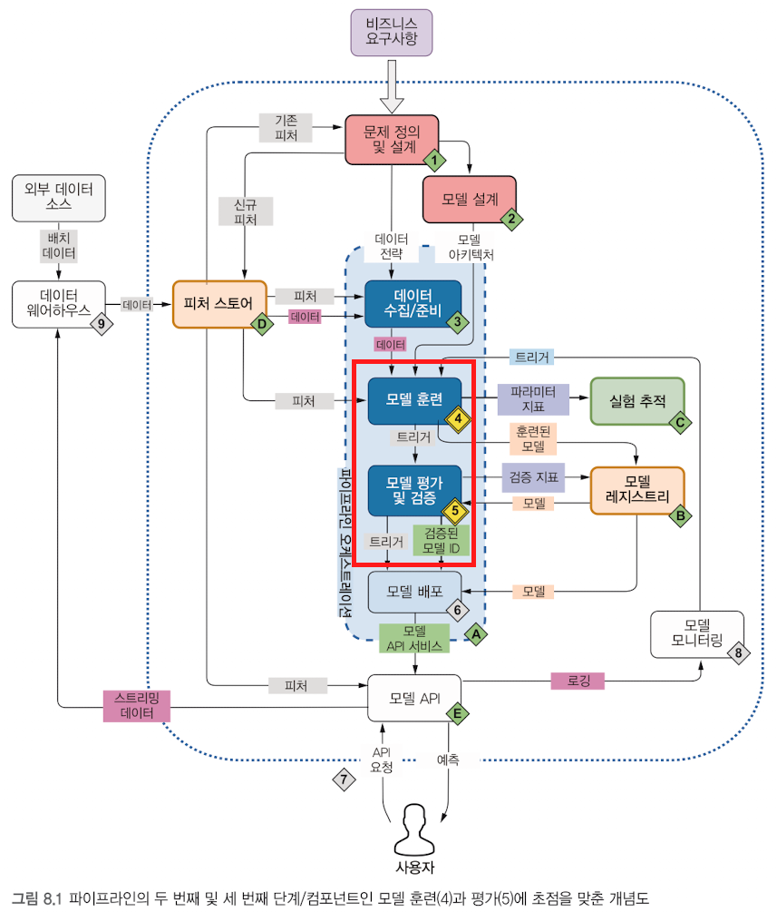
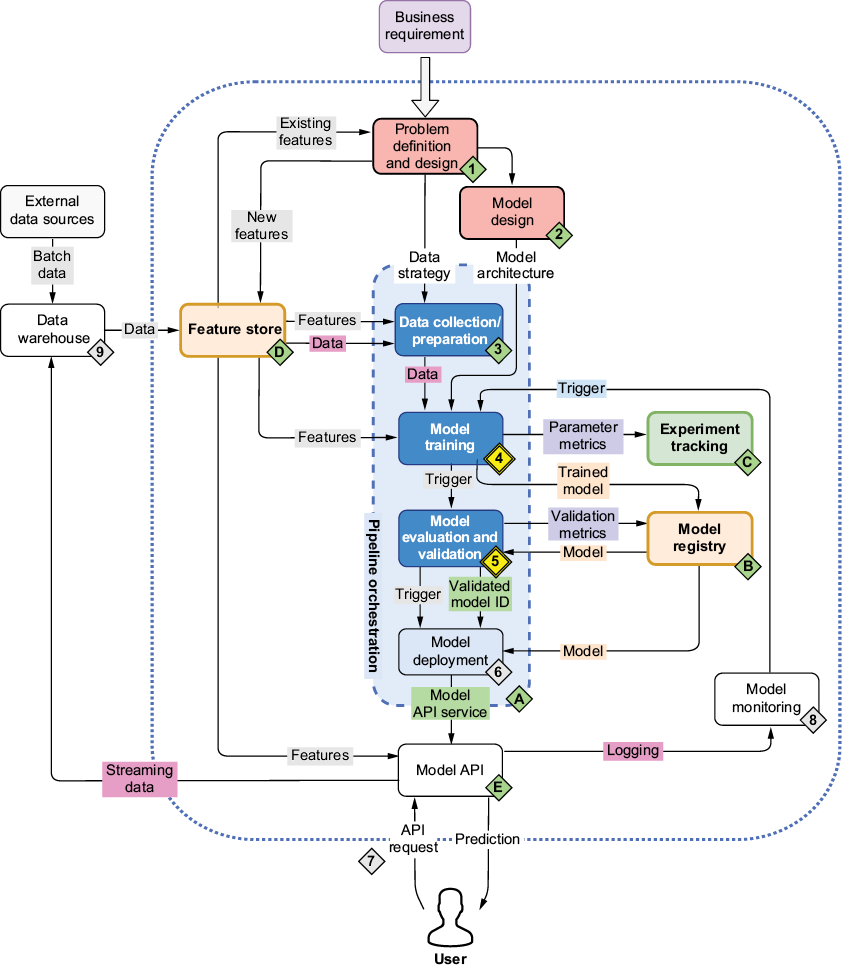
Figure 8.1 The mental map where we’re now focusing on the fourth and fifth step/component of our pipeline—model training (4) and evaluation (5)
(한국어판 캡션: 그림 8.1 파이프라인의 두 번째 및 세 번째 단계/컴포넌트인 모델 훈련(4)과 평가(5)에 초점을 맞춘 개념도)
이미지 해설: 그림 8.1 (이미지 48 한국어판, 이미지 49 영문판)
그림이 보여주는 것. 두 이미지는 같은 그림의 한국어판(48)과 영문판(49)입니다. 위쪽의 "비즈니스 요구사항"에서 출발해, 점선 영역 안에 MLOps 전체 지도가 그려져 있습니다. 그림 속 번호·기호는 다음과 같습니다.
| 기호 | 한국어판 라벨(영문판) | 뜻 |
|---|---|---|
| 1 | 문제 정의 및 설계 (Problem definition and design) | 무엇을 맞힐지 정한다 |
| 2 | 모델 설계 (Model design) | 어떤 구조의 모델을 쓸지 정한다 |
| 3 | 데이터 수집/준비 (Data collection/preparation) | 학습용 데이터를 모은다 — 7장에서 만든 부분 |
| 4 | 모델 훈련 (Model training) | 이 장의 초점 |
| 5 | 모델 평가 및 검증 (Model evaluation and validation) | 이 장의 초점 |
| 6 | 모델 배포 (Model deployment) | 서비스에 올린다 |
| 7 | API 요청 (API request) | 사용자가 모델을 호출 |
| 8 | 모델 모니터링 (Model monitoring) | 운영 중 상태를 지켜본다 |
| 9 | 데이터 웨어하우스 (Data warehouse) | 원천 데이터를 쌓아 두는 곳 |
| A | 모델 API 서비스 (Model API service) | 배포된 모델이 서비스로 나가는 출구. 아래의 E(모델 API)와 이어짐 |
| B | 모델 레지스트리 (Model registry) | 검증된 모델을 이름·버전으로 보관 |
| C | 실험 추적 (Experiment tracking) | 파라미터·지표를 기록 |
| D | 피처 스토어 (Feature store) | 공용 입력 특성 저장소 |
| E | 모델 API (Model API) | 모델을 서비스하는 창구 |
초보자 풀이. 이 장이 파고드는 곳은 4번(훈련)과 5번(평가·검증), 그리고 이 둘에 붙어 있는 C 실험 추적과 B 모델 레지스트리입니다. 화살표 위 라벨을 따라가 보세요.
- 모델 훈련(4) → 실험 추적(C): 파라미터·지표를 기록으로 보냅니다.
- 모델 훈련(4) → 모델 레지스트리(B): 훈련된 모델을 보관합니다.
- 모델 훈련(4) → 모델 평가 및 검증(5): 트리거(다음 단계를 시작시키는 신호)를 보냅니다.
- 모델 평가 및 검증(5) → 모델 레지스트리(B): 검증 지표를 남기고, 레지스트리에서는 평가할 모델을 가져옵니다.
- 모델 평가 및 검증(5) → 모델 배포(6): 트리거와 검증된 모델 ID를 넘깁니다.
- 모델 모니터링(8) → 모델 훈련(4): 위쪽으로 돌아가는 트리거가 있어, 운영 중 문제가 보이면 재학습을 시작시킬 수 있습니다.
여기서 확인할 것. 한국어판(48)에는 4·5를 함께 묶는 빨간 네모가 있고, 4·5 표시는 노란 마름모입니다. 영문판(49)에는 빨간 네모가 없고 4·5 표시만 노란 마름모로 강조됩니다. 두 그림의 구조는 같으니 영어 용어(Model registry, Feature store, Model API service)를 한글 라벨과 짝지어 보세요.
⚠ 원문 정정: 한국어판 캡션은 "두 번째 및 세 번째 단계/컴포넌트인 모델 훈련(4)과 평가(5)"라고 적었지만, 영문 캡션은 "fourth and fifth step/component"이고 그림에서 강조된 번호도 4와 5입니다. 또 그림의 번호 1~9 를 "순서대로 실행되는 KFP 태스크 번호"로 읽기 쉬운데, 실제로 이 번호는 파이프라인 안의 태스크 순번이 아니라 전체 MLOps 지도의 구성요소 번호입니다(예: 9 는 데이터 웨어하우스, 7 은 API 요청, 8 은 모델 모니터링). 이 장의 학습·평가에 해당하는 번호는 4와 5뿐입니다.
flowchart LR P3["3 데이터 수집과 준비"] --> T4["4 모델 훈련"] T4 -->|"트리거"| E5["5 모델 평가 및 검증"] T4 -->|"파라미터 지표"| C["C 실험 추적"] T4 -->|"훈련된 모델"| B["B 모델 레지스트리"] E5 -->|"검증 지표"| B B -->|"모델"| E5 E5 -->|"트리거 검증된 모델 ID"| D6["6 모델 배포"] M8["8 모델 모니터링"] -->|"트리거"| T4
쉬운 비유
숫자로 보기
- 강조된 번호는 2개(4, 5), 이 둘에 직접 연결된 보조 요소는 2개(B 모델 레지스트리, C 실험 추적) 입니다.
- 4 → 5 → 6 으로 이어지는 "트리거" 화살표는 2개(4→5, 5→6)이고, 8 → 4 로 돌아가는 재학습 트리거가 1개 더 있습니다.
흔한 오해
- "번호 1→9 순서대로 파이프라인이 돈다" → 아닙니다. 번호는 지도의 위치 표시입니다.
- "이 장에서 모델 배포(6)까지 만든다" → 아닙니다. 이 장의 컴포넌트는 4(훈련)와 5(평가·검증)까지이며, 검증을 통과하는 것은 "태스크가 성공했다"는 뜻이지 배포 승인이 아닙니다.
8.1 객체 탐지 모델 훈련
프로덕션에서 훈련은 어떻게 달라지나
프로덕션 머신러닝 시스템을 구축할 때, 모델 훈련은 재현 가능하고 모듈화되어 있어야 하며 파이프라인 인프라와 긴밀하게 통합되어야 합니다. 주피터 노트북에서 모델을 훈련하는 방법도 있지만, 그 방식은 프로덕션 환경에서 확장하기 어렵습니다. 대신, 훈련 프로세스를 컴포넌트 단위로 설계하여 다음을 달성합니다.
- 소스 코드 관리 시스템에서 버전 관리 및 추적 (Versioned and tracked in source control)
- 다양한 환경에서 일관되게 실행 (Executed consistently across different environments)
- 데이터 준비 파이프라인과 원활하게 통합 (Integrated seamlessly with our data preparation pipeline)
- 체계적인 모니터링 및 평가 (Monitored and evaluated systematically)
초보자 설명
노트북은 "내 컴퓨터에서 내가 손으로 한 칸씩 실행"하는 도구라서, 한 달 뒤에 같은 결과를 다시 만들기 어렵습니다. 컴포넌트로 만들면 코드가 파일로 남고, 입력과 출력이 이름 붙은 칸으로 고정되며, 같은 컨테이너 이미지 안에서 실행되므로 누가 언제 돌려도 같은 조건이 됩니다. 위 네 가지는 각각 다음 질문에 대한 답입니다.
| 목표 | 이 질문에 답한다 |
|---|---|
| 버전 관리 및 추적 | "지난주 모델은 어떤 코드로 만들었지?" |
| 일관된 실행 | "내 PC 에서는 되는데 서버에서는 안 돼요" |
| 데이터 준비와 통합 | "데이터는 누가 어디에 올려 두었지?" |
| 모니터링 및 평가 | "이 모델이 쓸 만한가? 숫자로 보여 줘" |
flowchart LR
subgraph NB["노트북 방식"]
N1["셀 직접 실행"] --> N2["내 PC 의 환경"] --> N3["결과 파일 흩어짐"]
end
subgraph CP["컴포넌트 방식"]
C1["코드를 파일로 버전 관리"] --> C2["컨테이너 이미지 안에서 실행"] --> C3["아티팩트와 지표가 기록됨"]
end쉬운 비유
흔한 오해
- "노트북은 쓰면 안 된다" → 아닙니다. 책이 말하는 것은 노트북 방식이 프로덕션에서 확장하기 어렵다는 점입니다. 탐색·실험에는 여전히 유용합니다.
학습 컴포넌트의 세 가지 핵심 역할
이 시스템은 신분증 탐지를 위해 YOLO 를 활용하여 구현합니다. 훈련 컴포넌트는 세 가지 핵심 역할을 담당합니다.
- 훈련, 검증, 테스트 이미지(및 레이블)를 적절한 폴더에 다운로드하기
- 데이터셋 구성하기 — 데이터셋 경로 설정, 이미지가 포함된 각 분할의 경로 설정, 데이터와 해당 레이블 매핑
- 모델의 실제 훈련 및 평가 수행하기
flowchart TD S["학습 컴포넌트 시작"] --> R1["1 이미지와 라벨을 train val test 폴더로 내려받기"] R1 --> R2["2 경로와 클래스를 적은 데이터 설정 만들기"] R2 --> R3["3 모델 훈련과 평가 실행"] R3 --> O["가중치 best.pt 를 출력 아티팩트로 내보내기"]
초보자 설명
- 다운로드: 파드(컨테이너)는 실행될 때마다 빈 상태로 시작하므로, 데이터를 저장소에서 파드 안 폴더로 가져와야 합니다.
- 데이터셋 구성: "train 이미지는 어느 폴더, val 이미지는 어느 폴더, 클래스 이름은 무엇"을 YOLO 가 읽을 수 있는 설정 파일에 적는 일입니다. 다음 절(8.1.1)의 주제입니다.
- 훈련 및 평가: 실제 학습(
train)과 평가(val)를 실행합니다.
쉬운 비유
숫자로 보기
- 역할 3개, 데이터 분할 3개(train / val / test).
- 보충 설명: 이 장의 실습 데이터는 원문 노트에 train 4,206장 · val 841장 · test 562장으로 기록되어 있습니다.
흔한 오해
- "학습 컴포넌트는 학습만 한다" → 아닙니다. 책의 학습 컴포넌트는 데이터 내려받기와 설정 만들기까지 맡습니다. 평가는 학습 컴포넌트 안의
val과 별도의 검증 컴포넌트(8.1.4)에서 모두 등장합니다.
라이브러리가 대신해 주는 일
곧 확인하시겠지만, 저희가 사용하는 울트라리틱스(Ultralytics) YOLO 라이브러리는 모델 훈련과 평가의 상당 부분을 대신 처리해 줍니다. 다만 이것이 주된 초점은 아니며, 코드를 원하는 대로 얼마든지 커스터마이징할 수 있다는 점도 기억해 두시기 바랍니다. 먼저 커스텀 데이터셋에 맞게 YOLO를 구성하는 방법부터 살펴보겠습니다.
초보자 설명
학습 루프(데이터를 배치로 나누고, 손실을 계산하고, 가중치를 고치고, 매 epoch 마다 검증하는 반복)를 직접 짜려면 코드가 수백 줄 필요합니다. Ultralytics 는 이것을 YOLO(...).train(...) 한 호출로 묶어 두었습니다. 이 장의 초점은 그 안쪽 알고리즘이 아니라, 그 호출을 파이프라인 컴포넌트에 어떻게 담는가입니다.
숫자로 보기
책 코드에서 학습을 시작하는 핵심 호출은 model.train(...) 한 번입니다(8.1.2 의 Listing 8.3).
흔한 오해
- "라이브러리가 다 해 주니 내용을 몰라도 된다" → 컴포넌트에 노출할 파라미터(epochs, batch, imgsz 등)를 정하려면 각 의미를 알아야 합니다. 그래서 8.1.2 에서 하이퍼파라미터를 하나씩 풀어 봅니다.
8.1.1 커스텀 데이터셋으로 YOLO 훈련하기
참고 문서: Ultralytics YOLO 모델 커스텀 데이터로 학습 — Docs (링크 내용은 확인 못함입니다. 아래 보충 설명 표시는 일반적으로 알려진 YOLO 규칙입니다.)
신분증은 기본으로 탐지되지 않는다
YOLO는 기본적으로 신분증을 탐지하지 않습니다만, 걱정하지 마십시오! 곧 확인하시겠지만, YOLO에서 커스텀 데이터셋을 훈련하는 것은 그리 어렵지 않습니다. 먼저, 이미지와 레이블의 위치 정보를 담은 설정 파일을 생성해야 합니다. 아울러 YOLO가 학습할 단 하나의 레이블도 포함시킵니다. 그런 다음 모델 훈련을 시작합니다.
YOLO에 사용할 데이터셋을 준비하려면 YAML 파일을 생성해야 합니다. 다행히 구조는 단순합니다. 설정을 YAML 파일로 변환하기 전에, 리스트 8.1에 제시된 키와 값으로 구성된 딕셔너리부터 시작합니다.
초보자 설명
yolov8n.pt 는 COCO 라는 공개 데이터의 80가지 물체(사람, 자동차, 책, 휴대폰 등)를 구분하도록 학습된 모델입니다. 신분증이라는 종류는 모르기 때문에 "신분증은 이런 모양이다"를 내 데이터로 가르쳐야 합니다. 이때 YOLO가 요구하는 것은 두 가지입니다.
- 데이터 설정 파일(YAML): 이미지가 어디 있고, 클래스 이름이 무엇인지 적은 안내문
- 라벨 파일: 이미지마다 정답 박스를 적은 텍스트 파일
쉬운 비유
흔한 오해
- "YOLO는 모든 물체를 알아서 찾으니 신분증도 찾겠지" → 사전 학습 목록에 없는 물체는 엉뚱한 이름(예:
book,cell phone)으로 잡히거나 놓칩니다. 이 장 실습에서 기본 모델이 신분증을book으로 잘못 부른 사례가 나옵니다.
Listing 8.1 — YOLO가 요구하는 데이터 설정
# Listing 8.1 Data configuration that YOLO expects - YOLO가 요구하는 데이터 설정(configuration)
data = {
'path': '/dataset/',
'train': 'train/images',
'val': 'val/images',
'test': 'test/images',
'names': {
0: 'id_card' # 레이블을 정의한다.
}
}
⚠ 원문 정정: 원문 코드에는 마크다운 굵게 표시(id_card)가 섞여 있습니다. 이것을 그대로 복사하면 클래스 이름이id_card라는 문자열이 되므로, 위 코드처럼 굵게 표시를 모두 제거한 형태로 사용합니다.
줄별 해설
| 키 | 값 | 뜻 |
|---|---|---|
path |
'/dataset/' |
데이터셋 최상위 폴더. 아래 train/val/test 는 이 폴더 기준 상대 경로 |
train |
'train/images' |
학습용 이미지 폴더 (/dataset/train/images) |
val |
'val/images' |
검증용 이미지 폴더 |
test |
'test/images' |
최종 시험용 이미지 폴더 |
names |
{0: 'id_card'} |
클래스 ID 0 의 이름이 id_card |
숫자로 보기
- 키 5개(
path,train,val,test,names), 클래스 1개(ID 0). - 이미지 경로가
/dataset/+train/images이면 합쳐서/dataset/train/images입니다.
흔한 오해
- "
names와nc(클래스 수)는 항상 둘 다 써야 한다" → Listing 8.1 은names만 쓰고, 이 장 뒤쪽의 8.1.3 코드는nc=1도 함께 씁니다. 둘 다 반드시 있어야 한다고 단정하지 않습니다. - "
path는 항상/dataset/이다" → 이 값은 예시입니다. 실제 컨테이너 안에서 데이터를 내려받은 폴더로 바뀝니다. 파이프라인에서는<DATASET_DIR>처럼 환경에 맞게 정해야 합니다.
클래스 한 개 — 더 탐지하려면 추가
여기서는 id_card 라는 레이블 하나만 필요합니다. 다른 객체도 탐지하려면 이 목록에 클래스를 추가하면 됩니다. YOLOv8 의 경우 이미지 경로만 지정하면 됩니다.
보충 설명: 가상 예시 — 클래스를 3개로 늘린다면 names 는 아래처럼 번호를 이어서 적습니다(이 실습에서는 쓰지 않는 가상의 클래스 이름).
# 가상 예시: 클래스 3개로 확장한 names
'names': {
0: 'id_card',
1: 'passport', # 가상 예시
2: 'driver_license' # 가상 예시
}
"이미지 경로만 지정하면 된다"는 말은 data 설정에 라벨 폴더 경로는 적지 않는다는 뜻입니다. 라벨은 규칙에 따라 이미지 폴더 옆에서 찾습니다. 다음 항목을 보세요.
라벨 폴더는 이미지 폴더 옆에
YOLOv8 에서는 특정 단계의 레이블이 해당 이미지와 인접한 디렉터리에 위치해야 합니다. 예를 들어, 훈련 세트의 레이블은 train/labels 디렉터리에 있어야 합니다. 데이터 설정을 정의한 후에는 YAML 파일로 저장해야 합니다.
/dataset/
├── train/
│ ├── images/ ← 학습 이미지
│ └── labels/ ← 학습 라벨 (이미지와 같은 이름의 .txt)
├── val/
│ ├── images/
│ └── labels/
└── test/
├── images/
└── labels/
초보자 설명
YOLO는 이미지 경로 안의 images 를 labels 로 바꿔서 라벨 폴더를 찾아갑니다. 그래서 폴더 이름을 images / labels 로 맞춰야 합니다. 같은 분할(train, val, test) 안에서 이미지 파일과 라벨 파일은 확장자만 다르고 이름이 같아야 짝이 맞습니다.
보충 설명: 예: train/images/card_0001.jpg 의 정답은 train/labels/card_0001.txt 입니다 (가상 예시 파일명).
보충 설명: 라벨 파일은 한 줄에 박스 하나를 적으며, 일반적인 YOLO 형식은 클래스ID 중심x 중심y 너비 높이 이고 좌표는 이미지 크기로 나눈 0~1 값입니다.
# 가상 예시: card_0001.txt (카드 1장이 화면 중앙에 가로 40%, 세로 30% 크기로 있는 경우)
0 0.5 0.5 0.4 0.3
숫자로 보기
- 이미지 1000x800 픽셀에서 중심이 (500, 400), 너비 400, 높이 240 인 박스는
0 0.5 0.5 0.4 0.3으로 적힙니다 (500÷1000=0.5, 400÷800=0.5, 400÷1000=0.4, 240÷800=0.3). 가상 예시 계산입니다. - 분할 3개 × (images + labels) = 폴더 6개.
흔한 오해
- "라벨은 아무 폴더에 둬도 경로를 YAML 에 쓰면 된다" → YAML 에는 이미지 경로만 쓰며, 라벨은 이미지 옆
labels/에서 찾습니다. - "이미지가 jpg 인데 라벨은 png.txt 여도 된다" → 이름(확장자 제외)이 같아야 합니다.
flowchart LR Y["data.yaml 의 train 항목 train/images"] --> I["이미지 폴더 train/images"] I -->|"images 를 labels 로 바꿔 찾음"| L["라벨 폴더 train/labels"] I --> P["card_0001.jpg"] L --> Q["card_0001.txt"] P -.->|"이름이 같아야 짝"| Q
Listing 8.2 — 데이터 설정을 YAML 로 저장하기
# Listing 8.2 Writing the data configuration to YAML - 데이터 설정을 YAML로 저장하기
file_path = 'custom_data.yaml'
try:
with open(file_path, 'w') as file:
yaml.dump(data, file) # 딕셔너리를 YAML 파일로 변환한다.
print("YAML file has been written successfully.")
except Exception as e:
print(f"Error writing YAML file: {e}")
보충 설명: 위 코드는 yaml 모듈이 필요합니다. 원문 Listing 에는 import yaml 줄이 없으므로 실행 파일에서는 맨 위에 import yaml 을 직접 넣어야 합니다. 컨테이너에 pyyaml 이 설치되어 있지 않으면 ModuleNotFoundError: No module named 'yaml' 이 납니다(이 장 실습에서도 pyyaml 누락으로 실패한 기록이 있습니다).
줄별 해설
| 코드 | 뜻 |
|---|---|
file_path = 'custom_data.yaml' |
저장할 YAML 파일 이름 |
with open(file_path, 'w') as file: |
파일을 쓰기 모드('w')로 열고, 블록이 끝나면 자동으로 닫음 |
yaml.dump(data, file) |
앞의 딕셔너리 data 를 YAML 글자로 바꿔 파일에 기록 |
print("YAML file has been written successfully.") |
성공 메시지 |
except Exception as e: |
쓰기 중 오류가 나면 잡아서 |
print(f"Error writing YAML file: {e}") |
오류 내용을 출력 |
저장된 custom_data.yaml 의 내용은 대략 아래와 같습니다(가상 예시 출력. 키 순서는 yaml.dump 기본 동작에 따라 알파벳 순서일 수 있습니다).
names:
0: id_card
path: /dataset/
test: test/images
train: train/images
val: val/images
이 데이터 설정 YAML 파일을 사용하면 이제 모델 훈련을 진행할 수 있습니다!
쉬운 비유
숫자로 보기
- 저장 파일 1개(
custom_data.yaml), 최상위 키 5개.
흔한 오해
- "오류가 나도 학습은 된다" → 이 코드는 오류를 잡아 메시지만 출력하고 이어서 진행합니다. 파일이 만들어지지 않았는데 다음 단계로 가면 학습 단계에서 "데이터 설정 파일을 찾을 수 없음" 오류가 납니다. 출력 메시지가 성공인지 확인하세요.
- "여기까지가 YAML 만드는 유일한 방법이다" → 이 장 8.1.3 에서는 학습 스크립트의
main()안에서data.yaml을 쓰는 방식으로 이어집니다.
8.1.1 한눈에 정리
| 단계 | 하는 일 | 결과물 |
|---|---|---|
| 1 | 딕셔너리로 설정 구성 (Listing 8.1) | 파이썬 data |
| 2 | YAML 파일로 저장 (Listing 8.2) | custom_data.yaml |
| 3 | 이미지 옆 labels/ 에 정답 라벨 배치 |
이미지와 이름이 같은 .txt |
| 4 | train(data='custom_data.yaml', ...) 로 학습 (다음 절 8.1.2) |
가중치 best.pt |
8.1.2 모델 훈련 (Training the model)
프로덕션(실서비스) 환경에서의 모델 훈련은 실험실 같은 환경과 크게 다릅니다. 하이퍼파라미터(모델이 스스로 배우는 값이 아니라 사람이 훈련 전에 정해 주는 설정값. 반복 횟수, 한 번에 보는 이미지 수 같은 것)를 전부 손으로 만지며 실험할 수도 있지만, 프로덕션 시스템은 다양한 상황에서도 안정적으로 동작하는 견고한 기본 설정을 필요로 합니다. 신분증 탐지 시스템을 만들 때는 다음 세 가지 핵심 요인의 균형을 맞춰야 합니다.
| 핵심 요인 | 원문 설명 | 영문 원문 |
|---|---|---|
| 훈련 효율성 | 적절한 배치 크기와 학습률을 사용합니다. | Training efficiency—Using appropriate batch sizes and learning rates |
| 리소스 활용 | 컴퓨팅 리소스의 제약에 맞는 모델 아키텍처를 선택합니다. | Resource utilization—Selecting model architectures that match our computational constraints |
| 성능 요구사항 | 합리적인 훈련 시간을 유지하면서 요구되는 정확도를 충족합니다. | Performance requirements—Meeting accuracy needs while maintaining reasonable training times |
훈련 컴포넌트에서 이 균형을 구현해 봅니다. 바로 여기에서 YOLO 모델이 실제로 동작합니다. 리스트 8.3 은 울트라리틱스(Ultralytics) 라이브러리로 커스텀 YOLO 모델을 훈련하는 코드입니다. (여기서 커스텀 은 "우리 데이터(신분증 이미지)에 맞춰 다시 훈련한"이라는 뜻입니다.)
flowchart LR A["YOLO yolov8n.pt 로 사전 훈련 모델 준비"] --> B["model.train 호출"] B --> C["data 가 가리키는 custom_data.yaml 로 이미지 위치와 클래스 확인"] C --> D["epochs 번 반복하며 batch 장씩 학습"] D --> E["project 와 name 아래에 가중치 곡선 샘플 이미지 저장"]
위 그림은 model.train() 한 줄 뒤에서 일어나는 일을 큰 줄기만 그린 것입니다. 아래가 원문 리스트 8.3 입니다.
# Listing 8.3 Writing the data configuration to YAML - 데이터 설정을 YAML로 작성하기
from ultralytics import YOLO
model = YOLO('yolov8n.pt') # 사전 훈련된 모델을 초기화(및 다운로드) 한다.
results = model.train( # 모델 훈련 루프를 실행한다.
data='custom_data.yaml',
imgsz=640,
epochs=epochs,
batch=batch,
name='yolov8n_custom',
project=project_path) # 모델 훈련 중 생성되는 모든 아티팩트를 수집한다.
이 코드에서는 울트라리틱스의 YOLO 클래스로 사전 훈련된 모델을 초기화(필요하면 다운로드) 합니다. 이어서 train 메서드를 호출해 훈련 루프를 실행합니다. 사전 훈련된 가중치에서 시작해 우리 데이터로 다시 맞추는 방식을 흔히 미세 조정(fine-tuning) 이라고 부릅니다.
원문의 이 코드에는 마크다운 굵게 표시(
**)가 섞여 있었습니다. 위 코드는 그 표시를 제거해 실행 가능한 형태로 옮긴 것입니다.epochs,batch,project_path는 이 조각에서 정의되지 않았고, 뒤에서 만들 훈련 스크립트에서 인수로 받습니다.
train 메서드의 주요 인수 (원문 그대로 + 풀이)
| 인수 | 원문 설명 | 쉬운 풀이 |
|---|---|---|
| data | 훈련 데이터셋을 정의하는 커스텀 데이터 설정 파일의 경로 | 8.1.1 에서 만든 custom_data.yaml 의 위치입니다. 이미지가 어디 있고 클래스 이름이 무엇인지 적힌 안내문입니다. |
| imgsz | 훈련 시 이미지를 리사이즈할 정사각형 크기(예: 640 은 640×640). 정사각형이 아닌 이미지는 종횡비를 유지하려고 레터박스(패딩) 처리. 값이 클수록 정확도가 향상될 수 있지만 메모리 사용량과 훈련 시간이 증가. | 영화를 TV 비율에 맞출 때 위아래에 검은 띠를 넣듯, 사진을 찌그러뜨리지 않고 빈 곳을 채워 정사각형으로 맞춥니다. (영문: Images are resized to this square dimension for training (e.g., 640 means 640 × 640). Non-square images are letterboxed (padded) to preserve aspect ratio. Larger values can improve accuracy but increase memory usage and training time.) |
| epochs | 파이프라인 정의에서 전달되는 변수로, 훈련 데이터를 몇 번 반복(iterations)해서 학습할지 제어 | 학습용 사진 전체를 한 바퀴 도는 것이 1 에포크(epoch)입니다. 아래 "자주 헷갈리는 용어" 참고. |
| batch | 파이프라인 정의에서 전달되는 또 다른 변수로, 각 반복에서 사용할 샘플 수인 배치 크기 | 한 번 계산할 때 한꺼번에 보는 사진 장수입니다. |
| name | 훈련된 모델에 부여할 이름 | 이번 훈련 결과를 담을 폴더 이름입니다. |
| project | 모델 훈련 중 생성되는 모든 아티팩트가 저장될 경로. 큐브플로 컴포넌트로 실행하면 이 경로에 모델 가중치, 혼동 행렬 플롯, 재현율 및 정밀도 곡선, 훈련·검증 데이터셋에 대한 추론 샘플이 저장된다고 원문은 설명 | 결과물을 모아 두는 바깥 폴더입니다. 아래 정정 상자를 함께 읽으세요. |
원문은 영문 설명도 함께 적었습니다: "We're passing this variable from our pipeline definition, which controls how many iterations we'll run through the training data."(epochs), "Another variable from our pipeline definition, which determines the number of samples used in each iteration."(batch), "This is where all the artifacts generated during model training will be collected. When running this code as a Kubeflow component, this path will be used to store the model weights, plots of confusion matrices, recall and precision curves, and samples of inferences for both the training and validation datasets."(project)
⚠ 원문 정정: ① 원문은 epochs 를 "훈련 데이터를 몇 번 반복(iterations)"이라고 적었는데, 용어를 구분하면 epoch = 전체 데이터를 한 바퀴, iteration = 배치 하나를 처리하는 1회입니다. 한 epoch 안에 iteration 이 여러 번 있습니다. ② 원문은 project 경로에 혼동 행렬·PR 곡선·추론 샘플이 저장되고 큐브플로가 챙겨 주는 것처럼 읽히지만, 이 실습의 컴포넌트가 큐브플로 아티팩트로 올리는 것은 `model_output/best.pt` 와 `data_yaml/data.yaml` 두 가지뿐이고 `runs/` 같은 프로젝트 폴더는 파드가 끝나면 함께 사라졌습니다(원격 kind 클러스터 book-env 의 실습 기록으로 확인). 곡선·샘플 이미지를 남기고 싶다면 따로 저장하는 코드를 추가해야 합니다. 아래 코드는 그런 변경의 제안입니다(미실행 예시).
# 미실행 예시: 훈련 결과 폴더 전체를 Output[Artifact] 로 남기려는 제안
# (project_output 인수와 경로 이름은 설명용 가정이며, 실제 폴더 구조는 사용 버전에서 확인해야 합니다)
import shutil
shutil.copytree(training_run_dir, project_output.path, dirs_exist_ok=True)
그림 8.2 — 훈련 중 자동으로 캡처되는 추론 예시
모델이 훈련되는 동안 에포크(epoch) 마다 다양한 추론 결과가 생성되고, 원문은 이것이 자동으로 캡처되어 프로젝트 경로에 저장된다고 설명합니다. 덕분에 훈련의 모든 단계에서 진행 상황을 모니터링하고 성능을 평가할 수 있다는 것이 원문의 취지입니다. 예시는 그림 8.2 입니다.
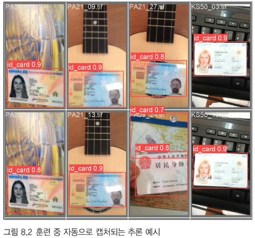
Figure 8.2 Examples of inferences during training that are captured automatically
이미지 해설
- 그림이 보여주는 것: 신분증 사진 8장이 가로 4칸 × 세로 2줄 격자로 붙어 있습니다. 칸마다 빨간 네모(바운딩 박스, 물체를 둘러싸는 사각형)가 그려져 있고, 박스 위에
id_card 0.9,id_card 0.8,id_card 0.7같은 글씨가 있습니다. 칸 왼쪽 위의PA21_09.tif,KS50_03.tif같은 이름은 원본 파일 이름으로 보입니다. 배경은 기타 지판, 키보드, 지도 위 같은 다양한 장소이고 카드의 종류(스페인·중국·국제 신분증 등)도 서로 다릅니다. 두 번째 이미지는 같은 격자를 확대해 글씨와 박스를 더 또렷하게 보여 줍니다(캡션은 첫 번째 이미지에만 있습니다). - 초보자 풀이:
id_card는 이 프로젝트의 단 하나뿐인 클래스(정답 이름)이고, 뒤의 숫자는 신뢰도(confidence) 로 "이 박스 안에 신분증이 있다고 모델이 얼마나 확신하나"를 0~1 사이로 나타낸 모델의 점수입니다. 0.9 라고 해서 실제로 90% 맞는다는 보장은 없습니다. 이 격자는 훈련 도중 모델이 어떻게 보는지 눈으로 확인하는 스냅샷입니다. - 여기서 확인할 것: 박스가 카드 위치에 대체로 잘 놓였는지, 배경이 바뀌어도
id_card로 찾는지를 봅니다. 중국 신분증 칸에서는 박스가 겹쳐 보이는 부분이 있어(0.7 과 0.8 라벨), 박스가 정답과 완벽히 일치한다고 읽지는 마세요. 이 그림이 어느 에포크의 어떤 파일인지는 원문이 밝히지 않으므로 확인 못함입니다.
🧭 초보자 설명
YOLO('yolov8n.pt')는 "이미 일반 사물 80종을 구별할 줄 아는 모델"을 불러오는 한 줄입니다. 거기에train(...)으로 우리 신분증 사진을 보여 주며 우리 문제에 맞게 고쳐 배우게 합니다.- 원문은 세 가지 인수
epochs,batch,name/project를 파이프라인 변수로 빼 두었습니다. 그래야 코드를 고치지 않고 파이프라인 실행 화면에서 값만 바꿔 다시 돌릴 수 있습니다. - 훈련 중 만들어지는 곡선 두 가지를 짧게 풀면: 정밀도(precision) 는 "박스를 쳤을 때 그중 맞은 비율", 재현율(recall) 은 "찾아야 할 것 중 실제로 찾은 비율"입니다. 혼동 행렬 은 "무엇을 무엇으로 착각했나"를 표로 센 것입니다.
🔢 숫자로 보기
- 이 장의 실습 로그에서 학습 사진 24장,
batch=4이면 한 에포크가24 ÷ 4 = 6번의 배치 처리(로그에0/6 … 6/6으로 표시)였습니다. - 전체 학습 사진 4,206장,
batch=8이면4206 ÷ 8 = 525.75이므로 올림해 526번이 한 에포크입니다. book-env 에서 기록한 "526 iteration"과 일치합니다. 3 에포크면526 × 3 = 1,578번입니다. - 이 "배치 처리 횟수"가 곧 가중치(모델 내부 숫자)를 고친 횟수는 아닙니다. 여러 배치를 모았다가 한 번에 고치는 방식(gradient accumulation)을 쓰면 고치는 횟수는 더 적습니다.
🎛 epoch · batch · iteration 계산기
슬라이더를 움직이면 "한 에포크가 몇 번의 배치 처리인지"가 바뀝니다. 시간은 1번 처리에 걸리는 초를 정해 둔 가상 계산입니다. (book-env 의 학습 반복은 약 1.7초/번이었습니다.)
데이터 4206장을 배치 8장씩 나누면 올림 526번이고, 마지막 배치는 6장입니다.
1 epoch = 526번의 배치 처리
한 장을 모델이 보는 횟수: 1번
가상 시간: 526번 x 1.7초 = 약 14.9분 (1번 처리에 1.7초가 걸린다고 가정한 가상 계산)
❓ 흔한 오해
- "epoch 3 이면 가중치를 3번만 고친다" → 아닙니다. 에포크 하나 안에 배치 처리가 수백 번 있고, 실제로 가중치를 고치는 횟수는 배치 처리 횟수 이하입니다.
- "에포크를 늘리면 무조건 좋아진다" → 보통 좋아지지만 시간도 같이 늘고, 너무 오래 하면 오히려 검증 성능이 떨어질 수도 있습니다. 라이브러리는 검증 성능이 가장 좋았던 시점의 가중치를
best.pt로 따로 저장하므로, 마지막 에포크 가중치(last.pt)와 다를 수 있습니다. - "훈련 중 만들어진 그림과 곡선은 큐브플로가 알아서 보관해 준다" → 위 정정 상자대로 이 실습에서는
best.pt와data.yaml만 아티팩트로 남습니다.
8.1.2 모델 아키텍처 선택과 Nano 로 시작하기 (그림 8.3)
▶ 8.1.2 모델 아키텍처 선택과 Nano 로 시작하기
YOLOv8 은 사전 훈련된 다양한 모델을 제공하며, 각각 특정 사용 사례에 맞게 설계되어 있습니다. YOLOv8n 같은 소형 모델은 처리 속도가 빠르고 메모리 요구사항이 낮아 에지 디바이스(카메라·단말처럼 서버 밖의 작은 장비)나 실시간 애플리케이션에 적합하다는 것이 원문 설명입니다. 반대로 대형 모델은 더 정확한 결과를 주지만 더 많은 컴퓨팅 리소스가 필요합니다.
모델 아키텍처가 중요한 이유 (Why model architecture matters)
프로젝트에 맞는 모델을 고를 때는 성능과 리소스 제약 사이의 트레이드오프(하나를 얻으려면 다른 하나를 내줘야 하는 관계)를 반드시 고려해야 합니다. 올바른 YOLOv8 모델을 고르면 애플리케이션의 속도, 메모리 사용량, 정확도를 최적화할 수 있습니다. 원문의 예시는 다음과 같습니다.
- 감시용 AI 카메라를 개발한다면 더 빠른 처리 속도와 낮은 메모리 요구사항을 우선시할 수 있습니다.
- 자율주행 자동차 시스템을 만든다면 연산 부담이 늘어나더라도 더 높은 정확도를 선택할 수 있습니다.
어느 경우든 YOLOv8 모델의 특성을 이해하면 어떤 모델을 쓸지, 프로젝트 성능을 어떻게 최적화할지 충분한 근거를 갖고 결정할 수 있습니다(그림 8.3).
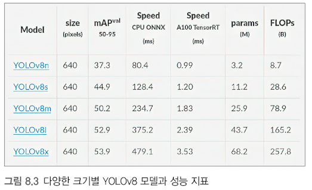
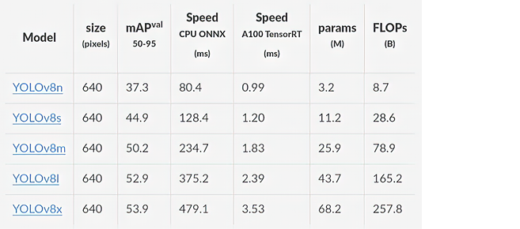
Figure 8.3 YOLOv8 in various model sizes, along with performance metrics
이미지 해설
- 그림이 보여주는 것: YOLOv8 의 다섯 가지 크기(n, s, m, l, x)를 줄마다 나열한 표입니다. 열은
size(입력 이미지 크기, 모두 640 픽셀),mAP val 50-95,Speed CPU ONNX (ms),Speed A100 TensorRT (ms),params (M),FLOPs (B)입니다. 두 번째 이미지는 같은 표의 영문 원본입니다. - 초보자 풀이(열 하나씩): mAP val 50-95 는 "검증 데이터에서 모델이 물체를 얼마나 정확히 찾았는가"를 하나의 숫자(높을수록 좋음)로 요약한 평가 지표입니다. 예측 박스가 정답 박스와 겹친 정도(IoU = 겹친 넓이 ÷ 합친 넓이, 1 에 가까울수록 일치)의 기준을 0.50 부터 0.95 까지 올려 가며 평균을 냈기 때문에 이름에 50-95 가 붙었습니다. Speed (ms) 는 이미지 한 장을 처리하는 데 걸린 밀리초라서 작을수록 빠릅니다(CPU ONNX 는 일반 CPU 에서, A100 TensorRT 는 고성능 GPU 에서 잰 값). params (M) 는 모델 안의 조절 숫자 개수(백만 단위)로 클수록 무겁습니다. FLOPs (B) 는 이미지 한 장을 계산하는 데 필요한 연산량(십억 단위)입니다.
- 여기서 확인할 것: 위에서 아래로 갈수록 mAP 는 오르고(37.3 → 53.9) 속도·파라미터·연산량도 모두 늘어납니다. 또 이 표의 mAP 는 일반 사물 80종 데이터(COCO) 기준이라, 우리 신분증 1종 데이터의 성능을 보장하지 않습니다.
아래 표는 그림의 숫자를 그대로 옮긴 것입니다.
| Model | size (pixels) | mAP val 50-95 | Speed CPU ONNX (ms) | Speed A100 TensorRT (ms) | params (M) | FLOPs (B) |
|---|---|---|---|---|---|---|
| YOLOv8n | 640 | 37.3 | 80.4 | 0.99 | 3.2 | 8.7 |
| YOLOv8s | 640 | 44.9 | 128.4 | 1.20 | 11.2 | 28.6 |
| YOLOv8m | 640 | 50.2 | 234.7 | 1.83 | 25.9 | 78.9 |
| YOLOv8l | 640 | 52.9 | 375.2 | 2.39 | 43.7 | 165.2 |
| YOLOv8x | 640 | 53.9 | 479.1 | 3.53 | 68.2 | 257.8 |
🎛 모델 크기 비교기
버튼을 누르면 YOLOv8n 을 1 로 놓았을 때 각 크기가 몇 배인지 계산해 보여 줍니다. 숫자는 위 표(그림 8.3)의 값이고 배수는 나눗셈 결과입니다.
Nano 버전부터 시작하는 이유
이번 사례에서는 나노(Nano) 버전 모델부터 시작합니다. 원문이 꼽은 장점은 세 가지입니다.
- 컴퓨팅 리소스 절약 (Conserve compute resources): 모델을 훈련하고 실행하는 데 필요한 연산 능력을 최소화합니다. 하드웨어나 예산이 제한된 환경에서 특히 중요합니다.
- 실현 가능성 검증 (Test feasibility): 소규모 모델로, 더 큰 모델을 훈련하는 데 많은 시간과 리소스를 쓰기 전에 적절한 성과를 낼 수 있는지 빠르게 파악합니다.
- 반복 개선 (Iterate and refine): 나노 버전이 기대에 못 미치더라도, 그 실험에서 얻은 인사이트를 더 큰 모델 개발에 반영할 수 있습니다.
⚠ 원문 보완: 원문의 "에지 디바이스나 실시간에 적합"은 방향성 설명입니다. "모바일/에지에 최적"이라고 못 박기보다 작은 모델의 출발점으로 쓰고, 목표 정확도와 실제 하드웨어로 최종 선택하는 것이 안전합니다. 또 n < s < m < l < x 로 갈수록 정확하다는 순서는 위 표(COCO 기준)의 경향이며, 신분증 데이터에서 크기를 키울 때마다 반드시 좋아진다는 보장은 없습니다.
🧭 초보자 설명
- 모델 이름 뒤의 n, s, m, l, x 는 크기 단계(nano, small, medium, large, extra-large)입니다.
- "큰 모델이 좋다"가 아니라 "내 상황에서 충분히 정확하고 충분히 빠른 것"을 고르는 문제입니다.
- 처음에는 가장 작은 n 으로 파이프라인 전체가 끝까지 도는지, 성능이 어느 정도 나오는지 먼저 봅니다.
🔢 숫자로 보기
- 표에서 n 은 mAP 37.3, x 는 53.9 이므로 차이는 16.6(포인트)입니다.
- 같은 두 모델의 CPU 속도는 80.4ms 대 479.1ms 로
479.1 ÷ 80.4 ≈ 6.0배 느립니다. 파라미터는68.2 ÷ 3.2 ≈ 21.3배, 연산량은257.8 ÷ 8.7 ≈ 29.6배입니다. - [가상 예시] 카메라가 초당 30장을 처리해야 한다면 한 장에 약 33ms 안에 끝나야 합니다. 표의 CPU 값 80.4ms 는 그보다 길어서, 이런 조건이면 하드웨어나 모델 선택을 다시 따져야 합니다(본문에 없는 가상 조건).
❓ 흔한 오해
- "표의 mAP 가 곧 우리 데이터의 성능이다" → 이 표는 일반 사물 80종 기준입니다. 우리는 신분증 1종이라 같은 수치가 나온다고 볼 수 없습니다.
- "Nano 는 성능이 낮은 장난감 모델이다" → 빠르게 가능성을 확인하고 시행착오를 줄이는 출발점으로 쓰이는 선택입니다.
8.1.2 YOLO 의 하이퍼파라미터
YOLOv8(혹은 어떤 모델이든)을 다룰 때는 사용할 수 있는 다양한 하이퍼파라미터를 이해하는 것이 필수적입니다. 이 책은 그중 일부에 집중하지만, 각 파라미터가 무엇을 하는지, 그리고 해당되는 경우 기본값이 무엇인지 파악하는 것이 중요합니다. 궁극적으로 훈련 컴포넌트가 어떤 파라미터를 바깥에 노출할지는 여러분의 필요와 요구사항에 달려 있습니다.
표 8.1 입니다. 오른쪽 끝 열에 쉬운 풀이를 붙였습니다. '이 책 실습값'은 이 책이 실습에 쓴 숫자이고, '라이브러리 기본값'은 아무것도 지정하지 않았을 때 라이브러리가 쓰는 숫자입니다. 둘은 다릅니다(예: epochs 20 ↔ 100, batch 4 ↔ 16). '—' 는 기본값을 따로 확인하지 못한 칸입니다. 이 장 파이프라인이 실제로 쓰는 기본 인자는 epochs=1, batch=8 이며, 외울 값은 없고 쓰는 라이브러리 버전에서 확인하면 됩니다.
| 키 | 이 책 실습값 (원문 표의 '값') | 라이브러리 기본값 | 설명 | 조정 시 고려사항 (원문) | 쉬운 풀이 |
|---|---|---|---|---|---|
| model | 없음 | — | 모델 파일 경우(예: yolov8n.pt, yolov8n.yaml) | 사용 목적에 맞는 모델 아키텍처와 가중치를 선택하십시오. | 어떤 모델로 시작할지 정합니다. .pt 는 이미 배운 가중치가 든 파일, .yaml 은 구조 설계도(처음부터 학습)입니다. |
| data | 없음 | — | 데이터 파일 경로(예: coco128.yaml) | 데이터셋이 해결하려는 문제와 관련이 있는지, 레이블이 충분히 잘 달려 있는지, 그리고 견고한 모델을 훈련하기에 충분한 양인지 확인하십시오. | 학습 데이터를 가리키는 YAML 안내문의 위치입니다. 데이터가 나쁘면 아무리 설정을 만져도 소용없습니다. |
| epochs | 20 | 100 | 훈련할 에포크 수 | 컴퓨팅 리소스와 목표 정확도 수준에 맞게 조정하십시오. 에포크 수가 많을수록 일반적으로 더 좋은 결과를 얻을 수 있지만, 처리 시간도 늘어납니다. | 전체 학습 사진을 몇 바퀴 볼지입니다. |
| batch | 4 | 16 | 배치당 이미지 수(-1 이며 AutoBatch) | 처리 속도를 높이려면 배치 크기를 늘리되, GPU 메모리 제약과 그레이디언트 업데이트 횟수 감소로 인한 성능 저하 가능성을 염두에 두십시오. | 한 번에 몇 장을 묶어 계산할지입니다. -1 이면 메모리에 맞춰 자동으로 정하는 AutoBatch 입니다. |
| imasz | 640 | 640 | 정수로 지정하는 입력 이미지 크기 | 사용 목적에 따라 객체 탐지 정확도와 연산 효율성 간의 균형을 고려하여 이미지 크기를 선택하십시오(예: 정밀한 객체 위치 파악이 필요한 경우 고해상도 이미지 사용). | 사진을 몇 픽셀 정사각형으로 맞출지입니다. (오타 정정은 아래 상자) |
| save | True | — | 훈련 체크포인트 및 예측 결과를 저장합니다. | (비어 있음) | 중간 저장본(체크포인트)과 예측 결과 파일을 남길지입니다. |
| project | 없음 | — | 프로젝트 이름 | (비어 있음) | 결과를 담는 바깥 폴더 이름입니다. |
| name | 없음 | — | 실험 이름 | (비어 있음) | 이번 실험의 하위 폴더 이름입니다. |
| exist_ok | False | — | 기존의 실험을 덮어쓸지 여부(충분히 좋은 이유가 없다면 기본값을 권장) | (비어 있음) | 같은 이름의 결과 폴더가 있을 때 덮어쓸지입니다. 기본값이면 이름2, 이름3 처럼 새 폴더가 늘어납니다. |
| pretrained | True | — | 사전 훈련 모델을 사용할지(bool) 또는 어디에서 사전 훈련 모델을 가져올지(str) 여부 | 특정 사용 사례와 사용 가능한 컴퓨팅 리소스에 따라 사전 훈련된 모델로 시작할지, 처음부터 훈련을 시작할지 결정합니다. 사전 훈련된 모델은 좋은 출발점을 제공할 수 있지만, 최적의 성능을 얻기 위해서는 추가 조정이 필요할 수 있습니다. | 이미 배운 상태에서 출발할지(True) 백지에서 시작할지입니다. |
| optimizer | 'auto' | — | 사용할 옵티마이저: [SGD, Adam, Adamax, AdamW, NAdam, RAdam, RSMProp, auto] | 특정 사용 사례에 따라 수렴 속도와 안정성 사이의 균형을 맞출 수 있는 옵티마이저를 선택합니다. 예를 들어 실시간 애플리케이션에서는 빠른 수렴이 중요할 수 있습니다. 'auto' 를 선택하면, 설정된 총 학습 반복 횟수를 기준으로 옵티마이저가 동적으로 선택됩니다. 10,000번 이상 반복하는 훈련에서는 SGD를 사용합니다. 그보다 적다면 AdamW가 사용됩니다. | 옵티마이저는 "틀린 만큼 가중치를 어떻게 고칠지" 정하는 방식입니다. auto 는 총 반복 수를 보고 알아서 고릅니다. (버전별 차이는 아래 상자) |
| verbose | False | True | 상세 출력 여부 | (비어 있음) | 로그를 자세히 찍을지입니다. |
| val | True | — | 훈련 도중에 검증 테스트 여부 | (비어 있음) | 훈련 중간중간 검증 데이터로 성적을 확인할지입니다. |
⚠ 원문 정정: ① 원문 표의 값 열은 라이브러리 기본값이 아니라 이 책 실습용 값이 섞여 있습니다(그래서 위 표를 두 열로 나눠 적었습니다). 공식 기본값은epochs=100,batch=16,imgsz=640,verbose=True입니다. 원문 표의epochs 20,batch 4,verbose False는 교재 실습용 값으로 읽어야 합니다(이 장 파이프라인의 실제 기본 인자는epochs=1,batch=8입니다). ② 오타:imasz는imgsz,RSMProp는RMSprop(RMSProp 표기도 통용)입니다. ③optimizer='auto': 총 반복 횟수 10,000 초과 시 SGD 로 설명한 부분은 버전별로 다릅니다. 이 장 실습에서 학습에 쓴 ultralytics 8.4.207 은 반복 횟수가 10,000 보다 크면 MuSGD(SGD 계열의 옵티마이저 이름, 용어집 참고), 이하이면 AdamW 를 고르고 학습률(lr0)도 자동으로 정하며, 검증 이미지의 8.0.194 는 같은 기준에서 SGD / AdamW 를 고릅니다. 이 장 스모크 학습 로그에도optimizer: 'optimizer=auto' found, ignoring 'lr0=0.01' ... AdamW(lr=0.002, momentum=0.9)라고 찍혔습니다(이미지 059).
🧭 초보자 설명
- 하이퍼파라미터는 크게 "얼마나 오래/크게"(epochs, batch, imgsz), "무엇으로 시작/어디에 저장"(model, pretrained, project, name, exist_ok, save), "어떻게 고칠지"(optimizer), "얼마나 보여 줄지"(verbose, val)로 묶어서 보면 외우기 쉽습니다.
- 원문이 "노출할 파라미터는 필요에 따라"라고 한 이유는, 컴포넌트에 파라미터를 너무 많이 열면 실행 화면이 복잡해지고 실험 조합이 폭발하기 때문입니다. 이 장의 훈련 컴포넌트는
epochs,batch,yolo_model_name세 가지만 바깥으로 엽니다. - 이 표에 처음 나오는 지표 이름 하나만 짚으면,
val이 켜져 있으면 훈련 중 매 에포크마다 검증 데이터로 mAP(mean Average Precision, 박스 위치와 클래스를 함께 따진 평균 정확도 점수)가 계산되어 로그에 찍힙니다.
🔢 숫자로 보기
- 입력 크기
640 × 640 = 409,600픽셀,1280 × 1280 = 1,638,400픽셀로 면적은 4배입니다. 메모리·시간이 정확히 4배가 된다는 보장은 없지만 크게 늘어나는 방향입니다. - 이 장 실습에서
epochs=1, 학습 4,206장,batch=8이면 526번의 배치 처리로 한 바퀴가 끝납니다(앞 소절의 계산기 참고). - [가상 예시] 하이퍼파라미터가 13개이고 각 항목을 값 3개씩 시험한다면 모든 조합은 3의 13제곱이라 매우 큽니다. 그래서 처음에는 바꿀 항목을 2~3개로 줄여 원인을 찾습니다(본문에 없는 가상 계산).
❓ 흔한 오해
- "표의 값이 라이브러리 기본값이다" → 위 정정 상자대로 epochs·batch·verbose 는 실습용 값입니다.
- "optimizer 를 auto 로 두면 항상 SGD 다" → 반복 횟수와 버전에 따라 AdamW 가 선택되며, 이 장 실습 로그는 AdamW 였습니다.
- "batch 를 키우면 무조건 빨라진다" → 원문이 경고하듯 메모리 한계에 부딪히거나, 가중치를 고치는 횟수가 줄어 성능이 나빠질 가능성도 있습니다.
8.1.3 소개: 시스템 수준 의존성과 dsl.ContainerSpec
▶ 8.1.3 소개: 시스템 수준 의존성을 다룰 때 — dsl.ContainerSpec, @dsl.container_component
사전 빌드된 컴포넌트(@dsl.component)는 대부분의 경우 잘 동작하지만, 때로는 더 세밀한 제어가 필요합니다. 특히 파이썬 패키지로는 설치할 수 없는 시스템 수준의 의존성(운영체제에 설치하는 라이브러리)을 다룰 때가 그렇습니다. 이 문제를 풀어 주는 것이 컨테이너 컴포넌트입니다.
원문이 든 상황은 다음과 같습니다.
- 울트라리틱스 도커 이미지는 별도 설정 없이 바로 동작해야 하지만,
ImportError: libGL.so.1: cannot open shared object file오류가 발생할 수 있습니다. - 이를 해결하려면
apt-get으로libgl1-mesa-glx를 설치해야 합니다. 그런데@dsl.component는 파이썬 패키지만 처리할 수 있어 이 작업을 수행하지 못합니다. dsl.ContainerSpec과@dsl.container_component가 이 문제를 해결합니다. 시스템 패키지 설치를 포함한 임의의 도커 명령어를 실행하면서도, 직접 Dockerfile 을 빌드하지 않고 모든 것을 파이썬 코드 안에 둘 수 있습니다.- 트레이드오프(얻는 것과 치르는 대가)는 컴포넌트 정의가 더 상세해진다는 점입니다. 이어지는 하위 절(1~4단계)에서 단계별로 설명합니다.
flowchart TB
subgraph P["@dsl.component"]
P1["파이썬 함수 본문을 실행"] --> P2["packages_to_install 로 pip 패키지만 추가"]
end
subgraph C["@dsl.container_component"]
C1["image 를 직접 지정"] --> C2["command 와 args 로 bash 명령 실행"]
C2 --> C3["apt-get 과 pip 와 훈련 스크립트 실행"]
end
P2 -. "libGL 같은 OS 라이브러리는 못 깔음" .-> C1⚠ 원문 정정: 원문 본문(2단계)에는@dsl.ContainerSpec처럼 데코레이터 모양으로 쓴 곳이 있습니다.dsl.ContainerSpec은 데코레이터가 아니라,@dsl.container_component로 장식한 함수가 반환하는 객체입니다(return dsl.ContainerSpec(...)). 또packages_to_install은 파이썬 패키지만 설치하므로libgl1같은 시스템 라이브러리는 준비된base_image또는@dsl.container_component로 해결합니다. 함수 본문에서 시스템 명령을 실행할 수 있는지는 별개의 문제이므로, 실행해 보지 않은 채 "불가능"이라고 단정하지는 않습니다.
원문이 언급한 오류와 해결 패키지를 표로 정리하면 다음과 같습니다.
| 원문 항목 | 내용 | 풀이 |
|---|---|---|
| 오류 메시지 | ImportError: libGL.so.1: cannot open shared object file |
OpenCV(이미지를 읽고 처리하는 라이브러리)가 운영체제의 그래픽 공유 라이브러리 libGL.so.1 을 찾지 못했다는 뜻입니다. 파이썬 패키지가 아니라 OS 패키지입니다. |
| 원문의 해결 | apt-get 으로 libgl1-mesa-glx 설치 |
OS 패키지 관리자로 설치합니다. |
@dsl.component 의 한계 |
파이썬 패키지만 처리 | pip 계열만 되고 apt-get 은 못 합니다. |
| 해법 | dsl.ContainerSpec + @dsl.container_component |
이미지·명령·인수를 직접 지정합니다. |
⚠ 원문 정정:libgl1-mesa-glx는 이 장 실습에서 쓴python:3.11-slim이미지(Debian 13, 코드명 trixie)에서Package ... has no installation candidate오류가 났습니다(원격 kind 클러스터 book-env 에서 확인). 실습에서는libgl1로 바꾸자 설치되었습니다. 이미지가 최신화되면서 패키지 이름이 바뀐 사례입니다. 오래된 책 코드는 베이스 이미지의 OS 버전에 따라 패키지 이름을 다시 확인해야 합니다.
🧭 초보자 설명
- 컴포넌트 하나는 파이프라인의 한 단계이고, 실제로는 컨테이너(작은 격리 실행 환경) 하나가 뜨는 일입니다. 그 컨테이너 안에 무엇이 깔려 있느냐가 의존성 문제입니다.
- 왜 화면 없는 서버에 그래픽 라이브러리가 필요한가요?
ultralytics가 이미지를 읽고 그릴 때 쓰는 OpenCV 는, 창을 띄우는 기능 때문에 불러올 때libGL.so.1(OpenGL, 화면 그리기용 라이브러리 파일)을 함께 찾도록 만들어져 있습니다. 서버에 화면이 없어도import순간에 이 파일이 없으면 멈춥니다. 창 기능을 뺀opencv-python-headless판도 있지만,ultralytics가 일반opencv-python을 함께 설치하는 경우가 있어 이 장에서는libgl1을 설치하는 쪽으로 해결했습니다. pip install은 파이썬 세계의 설치이고,apt-get install은 운영체제 세계의 설치입니다.ultralytics를 pip 로 깔아도, 그 아래에서 쓰는libGL.so.1같은 OS 라이브러리가 없으면import에서 멈춥니다.@dsl.container_component는 "이 단계는 이 이미지에서 이 명령을 실행하라"고 직접 적는 방식이라, Dockerfile 에 쓰던 내용을 파이썬 코드 안에 적는 것과 비슷합니다.
@dsl.component 는 앱만 깔 수 있고, @dsl.container_component 는 콘센트 공사까지 지시할 수 있습니다. 대신 공사 지시서(컴포넌트 정의)가 길어집니다.🔢 숫자로 보기
- 이 소개 뒤에는 4개 단계가 이어집니다: 1단계 훈련 스크립트 → 2단계 컨테이너 컴포넌트 시그니처와 컨테이너 명세 → 3단계 스크립트 통합(heredoc) → 4단계 파이프라인에서 사용.
- 설치할 패키지는 apt 2개(
libgl1,libglib2.0-0)와 pip 여러 개(ultralytics,torch,opencv-python-headless==4.8.1.78,minio,tqdm,pyyaml)입니다. 책 리스트는 pip 6개를 적었습니다. - [가상 예시] 같은 단계를
@dsl.component로 쓰면packages_to_install=[...]한 줄이 늘어나는 정도지만, 컨테이너 컴포넌트에서는 아래처럼 bash 문자열을 직접 관리해야 해서 코드가 몇 배 길어집니다(본문에 없는 가상 비교).
❓ 흔한 오해
- "ContainerSpec 이 새 이미지를 빌드한다" → 아닙니다. 이미 있는 이미지(
python:3.11-slim등)에서 컨테이너를 띄운 뒤 그 안에서 명령을 실행할 뿐입니다. 이 장 실습에서는 이 때문에 단계가 실행될 때마다apt-get,pip설치 시간이 들었습니다(book-env 기록: apt 11초, pip 40초). - "
@dsl.component와@dsl.container_component는 사용법이 전혀 다르다" → 4단계에서 보듯 파이프라인 안에서는 똑같이 호출합니다. 다른 곳은 정의 쪽입니다. - "
libgl1-mesa-glx는 영원히 쓸 수 있는 이름이다" → 위 정정 상자대로 OS 버전에 따라 달라집니다.
8.1.3 1단계: 훈련 스크립트 작성 (Step 1)
▶ 1단계: 훈련 스크립트 작성 (Step 1: Creating the training script)
먼저 main() 메서드부터 시작합니다. 임포트를 추가하고, 아직 구현하지 않은 parse_args() 호출을 넣습니다. 훈련 스크립트에는 다양한 인수를 전달해야 하므로 parse_args() 가 중요합니다. 이 코드는 비교적 익숙할 것입니다. 리스트 8.4 에서 보듯 YOLOv8 의 설정 파일(data.yaml)을 구성합니다.
flowchart LR A["parse_args 로 8개 인수 읽기"] --> B["data 딕셔너리 만들기"] B --> C["data.yaml 파일로 저장"] C --> D["YOLO yolov8n.pt 로 모델 준비"] D --> E["model.train 으로 학습"] E --> F["runs 아래 best.pt 를 model_output 으로 복사"]
위 흐름이 1단계에서 만드는 스크립트 전체입니다. 리스트 8.4 → 8.5 → 8.6 → 마지막 두 줄 순서로 한 파일이 완성됩니다.
리스트 8.4 — data.yaml 생성 (원문 그대로)
# Listing 8.4 Creating YOLO data.yaml with paths and ID card class - 경로와 신분증 클래스를 포함한 YOLO data.yaml 생성
import os
import yaml
import shutil
import argparse
from ultralytics import YOLO
def main():
args = parse_args()
data = {
'train': os.path.join(args.train_path, "images"), # (아래 2줄 설명포함) 훈련/검증/테스트용 이미지 디렉터리의 절대 경로를 구성한다.
'val': os.path.join(args.val_path, "images"),
'test': os.path.join(args.test_path, "images"),
'nc': 1, # (아래 2줄 설명포함) 신분증 탐지를 위한 단일 클래스 설정을 정의한다.
'names': {
0: 'id_card'
}
}
data_yaml_path = os.path.join(
args.data_yaml, "data.yaml") # data.yaml 설정 파일 경로를 생성한다.
os.makedirs( # (아래줄 설명포함) 출력 디렉터리가 존재하는지 확인한다.
os.path.dirname(data_yaml_path), exist_ok=True)
print(f"Writing data configuration to {data_yaml_path}")
print("Data YAML contents:")
print(yaml.dump(data))
with open(data_yaml_path, 'w') as file: # YAML 설정을 파일에 기록한다.
yaml.dump(data, file)
리스트 8.4 줄별 설명 펼치기
| 줄 | 하는 일 |
|---|---|
import os / yaml / shutil / argparse |
경로 다루기, YAML 파일 쓰기, 파일 복사, 명령줄 인수 읽기에 쓰는 표준·보조 모듈입니다. |
from ultralytics import YOLO |
YOLO 모델 클래스를 불러옵니다. |
args = parse_args() |
명령줄에서 받은 값을 args 라는 묶음으로 읽습니다. 함수는 아래 리스트 8.6 에서 정의합니다. |
data = { 'train': ..., 'val': ..., 'test': ... } |
훈련·검증·테스트 이미지 폴더의 절대 경로를 만듭니다. 각 입력 경로 뒤에 images 를 붙입니다. |
'nc': 1 |
클래스 수(number of classes)가 1개(신분증)라는 뜻입니다. |
'names': {0: 'id_card'} |
0번 클래스의 이름이 id_card 입니다. |
data_yaml_path = os.path.join(args.data_yaml, "data.yaml") |
설정 파일을 만들 위치를 정합니다. |
os.makedirs(os.path.dirname(data_yaml_path), exist_ok=True) |
그 폴더가 없으면 만들고, 있어도 오류를 내지 않습니다. |
print(...) 3줄 |
어디에 쓰는지, 무슨 내용인지 로그에 보여 줍니다. 나중에 로그에서 확인할 때 쓰입니다. |
with open(data_yaml_path, 'w') as file: yaml.dump(data, file) |
딕셔너리를 YAML 파일로 저장합니다. |
nc와names: 8.1.1 의 리스트 8.1 은names만, 이 리스트 8.4 는nc=1도 함께 씁니다. 두 키가 항상 둘 다 필수인 것처럼 외우지 않습니다.
리스트 8.5 — 모델 훈련과 최적 가중치 저장 (원문 그대로)
다음으로 모델 훈련 로직을 추가합니다. 리스트 8.5 입니다.
# Listing 8.5 Create/train the YOLO dataset and save best weights - YOLO 데이터셋 생성 및 훈련, 최적 가중치 저장
def main():
model = YOLO('yolov8n.pt') # YOLOv8 나노 모델을 초기화한다.
results = model.train(
data=data_yaml_path, # 생성된 data.yaml 을 데이터셋 설정에 사용한다.
imgsz=640, # 입력 이미지 크기를 640x640 픽셀로 지정한다.
epochs=args.epochs,
batch=args.batch,
project=os.path.dirname(args.model_output),
name=args.model_name
)
best_model_source = os.path.join(
os.path.dirname(args.model_output)
args.model_name, "weights", "best.pt") # (아래줄 설명포함) 훈련 출력에서 최적 모델 가중치 파일의 경로
best_model_dest = os.path.join(
args.model_output, "best.pt") # 최적 모델을 저장할 대상 경로
os.makedirs(os.path.dirname(best_model_dest), exist_ok=True)
shutil.copy2(best_model_source, best_model_dest) # 최적 모델을 출력 위치에 복사한다.
⚠ 원문 정정: ① 위 원문best_model_source = os.path.join(의 두 번째 줄 끝에 쉼표가 빠져 있습니다. 쉼표가 없으면SyntaxError가 납니다(원격 kind 클러스터 book-env 에서 고쳐서 실행). ② 리스트 8.5 는 새 함수가 아니라 리스트 8.4 의main()안에 이어 붙일 본문입니다. 두 listing 을 그대로 붙이면def main():이 두 번 정의되어 앞의 것이 덮어써집니다. 합친 결과가 아래 코드이며 실행해 보지 않은 합본 예시(미실행 예시)입니다.
# 미실행 예시: 리스트 8.4 + 8.5 를 하나의 main() 으로 합치고 쉼표 누락을 고친 코드
def main():
args = parse_args()
data = {
'train': os.path.join(args.train_path, "images"),
'val': os.path.join(args.val_path, "images"),
'test': os.path.join(args.test_path, "images"),
'nc': 1,
'names': {
0: 'id_card'
}
}
data_yaml_path = os.path.join(args.data_yaml, "data.yaml")
os.makedirs(os.path.dirname(data_yaml_path), exist_ok=True)
print(f"Writing data configuration to {data_yaml_path}")
print("Data YAML contents:")
print(yaml.dump(data))
with open(data_yaml_path, 'w') as file:
yaml.dump(data, file)
model = YOLO('yolov8n.pt')
results = model.train(
data=data_yaml_path,
imgsz=640,
epochs=args.epochs,
batch=args.batch,
project=os.path.dirname(args.model_output),
name=args.model_name
)
best_model_source = os.path.join(
os.path.dirname(args.model_output), # 쉼표 추가
args.model_name, "weights", "best.pt")
best_model_dest = os.path.join(args.model_output, "best.pt")
os.makedirs(os.path.dirname(best_model_dest), exist_ok=True)
shutil.copy2(best_model_source, best_model_dest)
리스트 8.5 줄별 설명 펼치기
| 줄 | 하는 일 |
|---|---|
model = YOLO('yolov8n.pt') |
YOLOv8 나노 사전 훈련 모델을 초기화합니다(없으면 내려받음). |
model.train(data=data_yaml_path, ...) |
방금 만든 data.yaml 로 훈련을 실행합니다. |
imgsz=640 |
입력 이미지를 640×640 픽셀로 맞춥니다. |
epochs=args.epochs, batch=args.batch |
명령줄 인수로 받은 에포크 수와 배치 크기를 씁니다. |
project=os.path.dirname(args.model_output) |
결과를 담을 바깥 폴더로, model_output 경로의 부모 폴더를 씁니다. |
name=args.model_name |
결과 폴더 이름입니다. |
best_model_source = os.path.join(..., args.model_name, "weights", "best.pt") |
훈련 결과 안에서 검증 성능이 가장 좋았던 가중치 파일의 경로입니다. |
best_model_dest = os.path.join(args.model_output, "best.pt") |
우리가 최종 산출물로 내놓을 위치입니다. |
os.makedirs(os.path.dirname(best_model_dest), exist_ok=True) |
복사 위치의 폴더를 보장합니다. |
shutil.copy2(best_model_source, best_model_dest) |
최적 모델을 출력 위치로 복사합니다. KFP 는 이 위치를 Output[Model] 아티팩트로 올립니다. |
지정된 에포크 수만큼 모델을 학습한 뒤, 울트라리틱스가 지원하는 방식으로 최적 모델을 선택해 args.model_output 에 저장합니다.
리스트 8.6 — parse_args 정의 (원문 그대로)
이제 parse_args 를 정의할 차례입니다.
# Listing 8.6 Parsing command-line args for YOLO training configuration - YOLO 훈련 설정을 위한 커맨드라인 인수 파싱
def parse_args():
parser = argparse.ArgumentParser(description='Train YOLO model')
parser.add_argument('--train-path',
required=True, help='Path to training dataset')
parser.add_argument('--val-path',
required=True, help='Path to validation dataset')
parser.add_argument('--test-path',
required=True, help='Path to test dataset')
parser.add_argument('--epochs', type=int,
required=True, help='Number of epochs')
parser.add_argument('--batch', type=int,
required=True, help='Batch size')
parser.add_argument('--model-name',
required=True, help='Name of the model')
parser.add_argument('--model-output',
required=True, help='Path to save the model')
parser.add_argument('--data-yaml',
required=True, help='Path to save data.yaml')
return parser.parse_args()
리스트 8.6 줄별 설명 펼치기
| 줄 | 하는 일 |
|---|---|
argparse.ArgumentParser(description='Train YOLO model') |
명령줄 인수 읽는 도구를 만들고 설명을 붙입니다. |
--train-path, --val-path, --test-path |
훈련·검증·테스트 데이터 폴더. 모두 required=True 라서 빠지면 실행이 멈춥니다. |
--epochs (type=int) |
에포크 수. 정수로 변환됩니다. |
--batch (type=int) |
배치 크기. 정수로 변환됩니다. |
--model-name |
모델(결과 폴더) 이름. |
--model-output |
학습된 모델을 저장할 경로. |
--data-yaml |
data.yaml 을 저장할 경로. |
return parser.parse_args() |
읽은 값을 묶어서 돌려줍니다. 코드에서 args.train_path 처럼 씁니다(- 는 _ 로 바뀜). |
마지막으로 훈련 스크립트 하단에 다음 코드를 추가해 스크립트를 실행할 때 main() 이 호출되게 합니다.
if __name__ == "__main__":
main()
이것으로 1단계가 완성됩니다. 이 스크립트는 독립적으로 실행할 수 있습니다.
완성된 train.py 는 이렇게 이어 붙인 파일 하나입니다. 실습 A 에서 이 파일을 저장해 씁니다.
| 순서 | 들어가는 내용 | 어디에 있나 |
|---|---|---|
| ① | import os, import yaml, import shutil, import argparse, from ultralytics import YOLO 5줄 |
리스트 8.4 맨 위 |
| ② | def parse_args(): 함수 전체 |
리스트 8.6 |
| ③ | def main(): 함수 하나(data.yaml 작성 → 학습 → best.pt 복사) |
위의 합본 예시(리스트 8.4 + 8.5) |
| ④ | if __name__ == "__main__": 와 main() 두 줄 |
바로 위의 마지막 코드 |
②와 ③은 순서를 바꿔도 되지만(main() 은 맨 아래 ④ 에서 불릴 때 실행됩니다) ④ 는 반드시 맨 아래에 둡니다. ① 이 빠지면 NameError, ④ 가 빠지면 실행해도 아무 일도 일어나지 않습니다. 합본 예시의 main 만 저장하면 완성본이 아닙니다. 이제 의존성을 커스터마이징하는 방법을 살펴봅니다.
🧭 초보자 설명
- 훈련 스크립트는 "명령줄에서 값 8개를 받아서 → 설정 파일을 쓰고 → 학습하고 → 최고 모델을 복사하는" 보통의 파이썬 파일입니다. KFP 와 아직 아무 관계가 없어서 컴퓨터에서
python train.py --train-path ...처럼 따로 돌려 볼 수 있습니다. if __name__ == "__main__":는 "이 파일을 직접 실행할 때만main()을 불러라"는 관용구입니다.- 인수는
--train-path처럼 이름을 붙여 전달하므로 순서가 바뀌어도 됩니다. 이 점이 3단계에서 중요해집니다.
🔢 숫자로 보기
- 인수는 8개: 경로 3개(train/val/test), 정수 2개(epochs, batch), 이름·경로 3개(model-name, model-output, data-yaml).
--epochs 1 --batch 8은 정수 인수 2개입니다. 이 값이 4,206장 기준으로 526번의 배치 처리를 만듭니다.- 이 장 실습에서 24장짜리 작은 스모크로 이 스크립트를 따로 돌렸을 때
best.pt는 6.5MB, 평가 지표는 mAP50-95 0.0054 / mAP50 0.0358(24장·1 epoch)이었습니다. 학습이 안 된 것이 아니라 "끝까지 도는지 확인하는 용도"의 수치입니다. - [가상 예시] 24장·batch 4 → 6번, 4,206장·batch 8 → 526번(앞 소절 계산기와 동일한 산식).
❓ 흔한 오해
- "리스트 8.4 와 8.5 를 그대로 이어 붙이면 된다" → 둘 다
def main():으로 시작하므로 하나로 합쳐야 합니다(정정 상자). - "합본
main만 저장하면 train.py 가 된다" →import줄,parse_args, 맨 아래__main__두 줄까지 있어야 완성본입니다(위 구성 표). - "
best.pt는 마지막 에포크의 가중치다" → 검증 성능이 가장 좋았던 시점의 가중치입니다. 마지막 시점은last.pt입니다. - "data.yaml 에
labels경로도 적어야 한다" → 이 listing 은 이미지 폴더만 적습니다. 라벨은 폴더 이름 규칙으로 찾습니다. - "스크립트가 모델을 자동으로 평가해 준다" → 학습 중 검증은 이뤄지지만, 별도 검증 컴포넌트는 8.1.4 에서 따로 만듭니다.
8.1.3 2단계: 컨테이너 컴포넌트로 커스터마이징 (Step 2)
▶ 2단계: 컨테이너 컴포넌트를 사용한 컴포넌트 커스터마이징 (Step 2)
apt-get 같은 임의의 명령어를 실행하려면 표준 @dsl.component 대신 @dsl.container_component 를 써야 합니다. 이 데코레이터를 쓰면 도커 이미지, 셸 명령어, 인수를 직접 지정할 수 있습니다. 리스트 8.7 처럼 함수 시그니처부터 시작해 컨테이너 명세까지 단계적으로 작성합니다.
리스트 8.7 — 컴포넌트 시그니처 (원문 그대로)
# Listing 8.7 Kubeflow Pipelines component for YOLO training pipeline - YOLO 훈련 파이프라인을 위한 큐브플로 파이프라인 컴포넌트
from kfp import dsl
from kfp.dsl import Input, Output, Dataset, Model, Artifact, Metrics
@dsl.container_component # 이 함수를 컨테이너 기반 KFP 컴포넌트로 정의하는 데코레이터
def train_model(
epochs: int, # (아래 2줄 설명포함) 훈련 프로세스 설정을 위한 기본 파라미터 입력값
batch: int,
yolo_model_name: str,
train_dataset: Input[Dataset], # (아래 2줄 설명포함) 훈련/검증/테스트용으로 KFP Dataset 타입으로 래핑된 입력 데이터셋
validation_dataset: Input[Dataset],
test_dataset: Input[Dataset],
model_output: Output[Model], # (아래줄 설명포함) 출력 아티팩트(훈련된 모델 및 YAML 설정 파일)
data_yaml: Output[Artifact]
):
return dsl.ContainerSpec(...)
리스트 8.7 줄별 설명 펼치기
| 줄 | 하는 일 |
|---|---|
from kfp import dsl |
Kubeflow Pipelines SDK 의 dsl(파이프라인·컴포넌트를 정의하는 도구 모음)을 불러옵니다. |
from kfp.dsl import Input, Output, Dataset, Model, Artifact, Metrics |
입력/출력 표시(Input, Output)와 파일 종류 이름표(Dataset, Model, Artifact, Metrics)를 불러옵니다. |
@dsl.container_component |
이 함수를 컨테이너 기반 KFP 컴포넌트로 정의합니다. |
epochs: int, batch: int, yolo_model_name: str |
훈련 과정을 설정하는 기본 파라미터 입력값 3개입니다. 타입 표시가 있어야 KFP 가 실행 화면에 입력칸을 만듭니다. |
train_dataset: Input[Dataset], validation_dataset, test_dataset |
훈련·검증·테스트용 데이터셋을 KFP 의 Dataset 타입으로 감싼 입력 3개입니다. |
model_output: Output[Model] |
출력 아티팩트: 훈련된 모델. |
data_yaml: Output[Artifact] |
출력 아티팩트: 만들어진 YAML 설정 파일. |
return dsl.ContainerSpec(...) |
컨테이너 명세를 돌려줍니다. 안쪽 내용은 다음 리스트(8.8)에서 채웁니다. |
@dsl.container_component 데코레이터는 해당 컴포넌트를 컨테이너화된 파이프라인 단계로 지정합니다. 기본 훈련 파라미터(epochs, batch, yolo_model_name)와 함께, 훈련·검증·테스트 데이터를 위한 세 개의 KFP 데이터셋 입력을 받습니다. 이 컴포넌트는 두 가지 출력, 곧 훈련된 모델 아티팩트(model_output)와 YAML 설정 파일(data_yaml)을 만들며, 두 출력 모두 파이프라인의 아티팩트 관리를 위해 KFP 의 타입 시스템으로 감싸져 있습니다.
⚠ 원문 정정: 원문 listing 의return dsl.ContainerSpec(...)안의...는 "줄임 표시"일 뿐 실제 코드가 아닙니다. 그대로 실행하면 안 되고, 다음 리스트 8.8 처럼image,command,args를 채워야 합니다. 또 원문 listing 8.7 와 8.8 의 주석에는 마크다운 굵게 표시(**)가 코드 속에 섞여 있어, 위 코드에서는 제거했습니다.
flowchart LR
subgraph IN["입력 6개"]
I1["epochs 정수"]
I2["batch 정수"]
I3["yolo_model_name 문자열"]
I4["train_dataset Input Dataset"]
I5["validation_dataset Input Dataset"]
I6["test_dataset Input Dataset"]
end
IN --> T["train_model 컨테이너 컴포넌트"]
T --> O1["model_output Output Model"]
T --> O2["data_yaml Output Artifact"]앞서 libgl1-mesa-glx 같은 패키지를 설치해야 했던 것을 기억하시나요? 리스트 8.8 은 dsl.ContainerSpec 을 사용해 이를 처리하는 방법을 보여 줍니다.
리스트 8.8 — 컨테이너 명세 (원문 그대로)
# Listing 8.8 Configuring the container with YOLO training dependencies - YOLO 훈련 의존성을 포함한 컨테이너 설정
@dsl.container_component
def train_model(...):
return dsl.ContainerSpec(
image='python:3.11-slim',
command=['bash', '-c'],
args=[
f'''
apt-get update && \
apt-get install -y --no-install-recommends \
libgl1-mesa-glx \
libglib2.0-0 \
&& rm -rf /var/lib/apt/lists/* && \
pip install --no-cache-dir \
ultralytics \
torch \
opencv-python-headless==4.8.1.78 \
minio \
tqdm \
pyyaml
'''
]
)
리스트 8.8 줄별 설명 펼치기
| 줄 | 하는 일 |
|---|---|
return dsl.ContainerSpec( |
컨테이너를 어떻게 띄울지 적은 명세 객체를 돌려줍니다. |
image='python:3.11-slim' |
컨테이너를 만들 기반 이미지. 가벼운 파이썬 3.11 입니다. |
command=['bash', '-c'] |
실행할 프로그램: bash 에게 "뒤따르는 문자열을 명령으로 실행하라"(-c)고 시킵니다. |
args=[ f''' ... ''' ] |
bash 에 넘길 명령 문자열입니다. 파이썬의 여러 줄 f-문자열(f'''…''')로 씁니다. |
apt-get update && apt-get install -y --no-install-recommends libgl1-mesa-glx libglib2.0-0 |
OS 패키지 목록을 갱신하고 필요한 라이브러리 2개만 설치합니다(--no-install-recommends: 부가 패키지 생략, -y: 질문에 자동 승인). |
&& rm -rf /var/lib/apt/lists/* |
설치 후 패키지 목록 캐시를 지워 용량을 줄입니다. |
pip install --no-cache-dir ultralytics torch opencv-python-headless==4.8.1.78 minio tqdm pyyaml |
파이썬 패키지를 설치합니다(--no-cache-dir: 내려받은 캐시를 남기지 않음). opencv-python-headless 는 화면 없는 서버용 OpenCV, minio 는 객체 저장소 접속용, tqdm 은 진행 막대, pyyaml 은 YAML 입출력용입니다. |
줄 끝 \ |
다음 줄과 한 명령으로 이어 붙이는 표시입니다. |
⚠ 원문 정정: ① 위libgl1-mesa-glx는python:3.11-slim(Debian 13, trixie)에서 설치 후보가 없어 실패했습니다. 실습에서는libgl1로 교체해 성공했습니다. ② 버전을 적지 않은ultralytics,torch는 시간이 지나면 다른 버전이 깔립니다. 원문 노트에서는ultralytics==8.4.207,torch==2.15.0을 고정했습니다. ③ 원격 kind 클러스터는 GPU 가 없는 x86 CPU 서버라 PyTorch CPU 용 설치 주소(--index-url https://download.pytorch.org/whl/cpu)를 썼습니다. 명령 옵션은 하이픈 두 개(--index-url)입니다. 자신의 환경에서는 설치 후보와 버전을 직접 확인하세요. 아래는 이 교체를 반영한 apt 부분의 미실행 예시입니다.
# [컨테이너 안] 미실행 예시: 패키지 이름만 교체한 apt 설치 부분
apt-get update && \
apt-get install -y --no-install-recommends \
libgl1 \
libglib2.0-0 \
&& rm -rf /var/lib/apt/lists/*
도커 이미지를 직접 만들어 본 경험이 있다면 그리 낯설지 않을 것입니다. dsl.ContainerSpec 을 쓰면 Dockerfile 에서처럼 임의의 명령어를 자유롭게 추가할 수 있습니다. 그렇다면 훈련 스크립트는 어떻게 포함시킬까요? 이미 짐작하셨을 수도 있습니다. 도커 명령어처럼 추가하면 됩니다! 구체적인 방법은 3단계에서 봅니다.
🧭 초보자 설명
@dsl.component는 "파이썬 함수의 본문"을 실행하는 컴포넌트이고,@dsl.container_component는 함수 본문을 실행하지 않고 "이 컨테이너를 이렇게 실행하라"는 명세(ContainerSpec)만 돌려주는 컴포넌트입니다.Input[Dataset]은 "이 입력은 데이터셋 종류이고, 이전 단계의 출력이 여기로 연결된다",Output[Model]은 "이 출력은 모델 종류이고, 컴포넌트가 이 경로에 파일을 써 놓으면 KFP 가 아티팩트로 저장한다"는 표시입니다. 실행하면.path로 실제 폴더 경로를 얻습니다.command=['bash','-c']와args=[문자열, ...]의 조합은 터미널에서bash -c '문자열' 값1 값2 ...를 치는 것과 같습니다.
@dsl.component 는 정해진 레고 블록만 조립하고, @dsl.container_component 는 3D 프린터로 부품부터 뽑듯 필요한 도구를 직접 설치할 수 있지만, 설계도(명세)가 더 길어집니다.🔢 숫자로 보기
- 입력 6개(파라미터 3 + 데이터셋 3), 출력 2개(모델 1 + YAML 1)입니다.
- 아티팩트 종류는 3가지: 데이터는
Dataset3개, 학습된 모델은Model1개,data.yaml은Artifact1개. - 원격 kind 클러스터 book-env 에서 기록한 시간: 이 설치 구간에서 apt 11초, pip(CPU 용 torch 포함) 40초가 걸렸습니다(24장 스모크 실행 기록).
- [가상 예시] 파이프라인을 열 번 다시 실행하면 이 설치 시간(약 51초)이 열 번 반복됩니다. 미리 만든 이미지를 쓰면 줄일 수 있지만, 그 이미지는 직접 만들어 관리해야 합니다(본문에 없는 가상 계산).
❓ 흔한 오해
- "
dsl.ContainerSpec이 데코레이터다" → 위 정정대로 객체입니다. 데코레이터는@dsl.container_component입니다. - "
...를 그대로 두어도 컴파일된다" → 줄임 표시입니다. 실제 값을 채워야 합니다. - "컨테이너 컴포넌트에서도 함수 본문이 실행된다" → 함수는 명세를 만들 뿐이고, 실제 일은 명세가 지정한 컨테이너가 합니다.
- "이미지 이름이 같으면 항상 같은 환경이다" →
python:3.11-slim은 시간이 지나면 OS 버전(여기서는 Debian 13)이 바뀌어 패키지 이름이 달라질 수 있습니다. 이미지 digest 를 기록해 두는 습관이 좋습니다.
8.1.3 3단계: 훈련 스크립트를 컴포넌트에 통합 (Step 3)
▶ 3단계: 훈련 스크립트를 컴포넌트에 통합하기 (Step 3)
리스트 8.9 는 완전한 훈련 스크립트를 컨테이너 명세 안에 내장하는 독특한 방식으로 KFP 컴포넌트를 만드는 방법을 보여 줍니다. 히어독(heredoc) 문법(cat << 'EOF', 쉘에서 여러 줄 글자를 그대로 파일에 넣는 문법)을 써서 YOLO 훈련 스크립트를 파일에 기록한 뒤, 적절한 명령줄 인수를 전달해 실행합니다.
이 방법은 KFP 컨테이너화의 편의성을 유지하면서 동적 스크립트 인젝션과 파라미터 전달을 가능하게 하며, 가독성을 일부 희생하는 대신 유연성을 얻습니다. 컴포넌트는 입력 파라미터(train_dataset.path, epochs 등)를 Bash 위치 파라미터($0, $1 등)를 통해 스크립트 인수로 매핑해, KFP 의 타입 시스템과 훈련 스크립트의 명령줄 인터페이스(CLI) 사이를 연결하는 다리 역할을 합니다.
sequenceDiagram participant K as KFP participant B as bash -c participant F as 파일 train.py participant P as python3 K->>B: 명령 문자열 과 값 8개 전달 B->>B: apt-get 과 pip 로 설치 B->>F: heredoc 으로 TRAINING_SCRIPT 내용을 train.py 로 저장 B->>P: python3 train.py --train-path 값0 ... --data-yaml 값7 P-->>K: model_output 폴더에 best.pt 와 data_yaml 폴더에 data.yaml 기록
리스트 8.9 — 설치 + 스크립트 주입 + 실행 (원문 그대로)
# Listing 8.9 Configuring container and inject training script with args - 컨테이너 설정 및 인수를 통한 훈련 스크립트 인젝션
@dsl.container_component
def train_model(...):
return dsl.ContainerSpec(
image='python:3.11-slim',
command=['bash', '-c'],
args=[
f'''
apt-get update && \
apt-get install -y --no-install-recommends \
libgl1-mesa-glx \
libglib2.0-0 \
&& rm -rf /var/lib/apt/lists/* && \
pip install --no-cache-dir \
ultralytics \
torch \
opencv-python-headless==4.8.1.78 \
minio \
tqdm \
pyyaml && \
cat << 'EOF' > /train.py \ # heredoc을 사용해 /train.py에 스크립트를 작성한다.
{TRAINING_SCRIPT} # TRAINING_SCRIPT 변수로부터 훈련 스크립트를 인젝션한다.
EOF
python3 /train.py \ # 인수와 함께 파이썬 스크립트를 실행한다.
--train-path "$0" \ # 컴포넌트 입력으로부터 데이터셋 경로를 매핑한다.
--val-path "$1" \
--test-path "$2" \
--epochs "$3" \ # 훈련 설정 파라미터를 전달한다.
--batch "$4" \
--model-name "$5" \
--model-output "$6" \ # 아티팩트 출력 위치를 지정한다.
--data-yaml "$7"
''',
train_dataset.path, # 컴포넌트 파라미터를 스크립트 인수에 연결한다.
validation_dataset.path,
test_dataset.path,
epochs,
batch,
yolo_model_name,
model_output.path,
data_yaml.path
]
)
⚠ 원문 정정: 위 원문을 그대로 실행하면 실패하는 부분이 4곳 있습니다(원격 kind 클러스터 book-env 에서 실행하며 확인).
① heredoc 종료자: 원문처럼EOF와 본문을 공백으로 들여쓰면 heredoc 이 끝나지 않습니다.<<-는 탭 문자만 제거하므로 공백 들여쓰기는 해결하지 못합니다(GNU Bash 매뉴얼). 본문과EOF를 0열(들여쓰기 없음)에 둡니다.
② 줄 연결(\) 뒤 공백·주석: 원문의cat << 'EOF' > /train.py \ # ...,python3 /train.py \ # ...처럼\뒤에 공백이나 주석이 있으면 줄 연결이 깨집니다.\는 줄의 맨 끝이어야 하고 설명 주석은 코드 밖에 둡니다.
③ 패키지 이름:libgl1-mesa-glx→libgl1.
④ 인수 번호:bash -c '문자열' 값1 값2 …에서는 문자열 바로 다음 값이$0입니다(일반 쉘 스크립트의$0=스크립트 이름과 다름). 그래서 값 8개는$0~$7입니다. 원문 본문 중 "S1" 은$1의 오타입니다. 아래는 이를 반영한 미실행 예시입니다.
# 미실행 예시: 리스트 8.9 의 결함(들여쓰기 EOF, 줄 끝 주석, 패키지 이름)을 고친 형태
# (TRAINING_SCRIPT 는 리스트 8.10 의 문자열)
@dsl.container_component
def train_model(
epochs: int,
batch: int,
yolo_model_name: str,
train_dataset: Input[Dataset],
validation_dataset: Input[Dataset],
test_dataset: Input[Dataset],
model_output: Output[Model],
data_yaml: Output[Artifact]):
return dsl.ContainerSpec(
image='python:3.11-slim',
command=['bash', '-c'],
args=[
f'''
apt-get update && \\
apt-get install -y --no-install-recommends libgl1 libglib2.0-0 && \\
rm -rf /var/lib/apt/lists/* && \\
pip install --no-cache-dir ultralytics torch \\
opencv-python-headless==4.8.1.78 minio tqdm pyyaml && \\
cat << 'EOF' > /train.py
{TRAINING_SCRIPT}
EOF
python3 /train.py \\
--train-path "$0" \\
--val-path "$1" \\
--test-path "$2" \\
--epochs "$3" \\
--batch "$4" \\
--model-name "$5" \\
--model-output "$6" \\
--data-yaml "$7"
''',
train_dataset.path,
validation_dataset.path,
test_dataset.path,
epochs,
batch,
yolo_model_name,
model_output.path,
data_yaml.path,
],
)
위 예시의
\\는 파이썬 f-문자열 안에서 백슬래시 한 개를 뜻합니다(일반 문자열에서\+ 줄바꿈이 사라지는 것을 막기 위함). 이 쓰는 법은 실행해 확인하지 못한 예시입니다(환경에 따라 다를 수 있습니다).
리스트 8.9 줄별 설명 펼치기
| 줄 | 하는 일 |
|---|---|
image='python:3.11-slim', command=['bash','-c'] |
가벼운 파이썬 이미지에서 bash 로 문자열을 실행합니다. |
apt-get update && apt-get install ... libglib2.0-0 |
OS 라이브러리 설치(원문 패키지 이름은 libgl1-mesa-glx, 실습에서는 libgl1). |
pip install ... pyyaml && \ |
파이썬 패키지 설치. 끝의 && \ 는 "성공하면 다음 줄 명령을 이어서 실행"입니다. |
cat << 'EOF' > /train.py |
heredoc 시작. 'EOF' 처럼 따옴표를 붙이면 안의 $, 백틱을 쉘이 해석하지 않고 글자 그대로 파일에 씁니다. 파일 이름은 /train.py. |
{TRAINING_SCRIPT} |
f-문자열 자리: 파이썬 변수 TRAINING_SCRIPT 의 문자열(1단계에서 만든 스크립트)이 여기에 들어갑니다. |
EOF |
heredoc 종료 표시. 줄 맨 앞에 있어야 합니다. |
python3 /train.py \ |
방금 만든 스크립트를 실행합니다. |
--train-path "$0" ~ --data-yaml "$7" |
아래 args 리스트의 값을 이름 붙은 옵션으로 스크립트에 넘깁니다. |
train_dataset.path ~ data_yaml.path |
파이프라인이 실행될 때 실제 폴더 경로로 바뀌는 값 8개. 앞에서부터 $0 ~ $7 입니다. |
그림으로 보기 — args 리스트 칸과 $0 ~ $7
args 의 첫 칸은 실행할 명령 문자열 자체이고, 값은 둘째 칸부터 옵니다. 그런데 번호는 $0 부터 시작하므로 $ 번호는 리스트 칸 번호보다 하나 작습니다.
args[0] '긴 명령 문자열' ──▶ bash 가 실행할 글 (번호 없음)
args[1] train_dataset.path ──▶ $0 ──▶ --train-path "$0"
args[2] validation_dataset.path ──▶ $1 ──▶ --val-path "$1"
args[3] test_dataset.path ──▶ $2 ──▶ --test-path "$2"
args[4] epochs ──▶ $3 ──▶ --epochs "$3"
args[5] batch ──▶ $4 ──▶ --batch "$4"
args[6] yolo_model_name ──▶ $5 ──▶ --model-name "$5"
args[7] model_output.path ──▶ $6 ──▶ --model-output "$6"
args[8] data_yaml.path ──▶ $7 ──▶ --data-yaml "$7"
$0 ~ $7 매핑 (원문 그대로)
| 위치 파라미터 | args 리스트에서 채워지는 값 |
스크립트 옵션 | 원문 주석 |
|---|---|---|---|
$0 |
train_dataset.path |
--train-path |
컴포넌트 입력으로부터 데이터셋 경로를 매핑 |
$1 |
validation_dataset.path |
--val-path |
|
$2 |
test_dataset.path |
--test-path |
|
$3 |
epochs |
--epochs |
훈련 설정 파라미터를 전달 |
$4 |
batch |
--batch |
|
$5 |
yolo_model_name |
--model-name |
|
$6 |
model_output.path |
--model-output |
아티팩트 출력 위치를 지정 |
$7 |
data_yaml.path |
--data-yaml |
🎛 위치 파라미터 매핑 확인기
버튼을 누르면 해당 번호가 어떤 값으로 채워져 어떤 옵션으로 전달되는지 보여 줍니다.
리스트 8.10 — TRAINING_SCRIPT (원문 그대로)
리스트 8.10 의 TRAINING_SCRIPT 는 1단계에서 작성한 훈련 스크립트입니다.
# Listing 8.10 Generating the training script with YOLO - YOLO로 훈련 스크립트 생성
TRAINING_SCRIPT = '''
import os
import yaml
import shutil
import argparse
from ultralytics import YOLO
def parse_args():
...
def main():
...
if __name__ == "__main__":
main()
'''
원문은 parse_args 와 main 의 본문을 ... 로 줄였습니다. 실제로는 1단계의 리스트 8.4 + 8.5(합친 main)와 8.6(parse_args) 내용이 그 자리에 들어갑니다. 코드를 문자열 안에 넣을 때는 앞 소절에서 설명한 한 개의 main 으로 합친 형태를 넣으세요.
⚠ 원문 정정: 이 listing 의'''안은 코드 설명 문장이 아니라 실제 파이썬 코드만 들어가야 합니다. 문장(설명)이 같은 문자열에 섞이면 컨테이너에서SyntaxError가 납니다. 또TRAINING_SCRIPT안의id_card처럼 마크다운 굵게 표시가 코드에 들어가 있으면 모두 제거해야 합니다. 이 장 노트에서는 heredoc 내부의 주석도 제거해 실행했습니다. 이 listing 은 본문의...때문에 그 자체로는 실행되지 않는 요약본이라는 점도 기억해야 합니다.
🧭 초보자 설명
- 문제: 컨테이너(깨끗한 새 환경)에는 우리 훈련 스크립트 파일이 없습니다. 해법: 파이썬 문자열 변수(
TRAINING_SCRIPT)에 스크립트 내용을 담아 두고, 컨테이너 안에서cat << 'EOF' > /train.py로 파일을 만든 뒤 실행합니다. f'''...'''안의{TRAINING_SCRIPT}는 파이썬이 변수 값으로 바꿔 끼우는 자리입니다. 끼워 넣은 스크립트 안에data = {...}처럼{}가 있어도 f-문자열이 그것을 다시 해석하지 않으니 걱정하지 않아도 됩니다. 다만 bash 명령 쪽에${변수}처럼 중괄호를 직접 쓰고 싶다면 f-문자열 규칙에 따라{{ }}로 겹쳐 써야 합니다(이 장의 코드에는 없습니다).bash -c '문자열' a b c에서a,b,c는 문자열 안에서$0,$1,$2로 읽힙니다. 이것이 KFP 의 경로·숫자를 스크립트의--train-path같은 옵션에 연결하는 다리입니다.$0부터 시작하는 것에 놀라지 마세요.- "가독성을 일부 희생하고 유연성을 얻는다"는 말은, 코드가 문자열 속에 문자열을 넣는 모양이라 읽기 어렵지만 별도 이미지를 빌드·배포하지 않고도 스크립트를 바꿀 수 있다는 뜻입니다.
$0~$7)를 적어 보내는 것입니다. 받는 쪽(컨테이너)은 봉투를 열어 설명서를 파일로 만들고 주문번호대로 실행합니다. 봉투를 닫는 도장(EOF)이 줄 맨 앞에 없으면 봉투가 닫히지 않습니다.🔢 숫자로 보기
- 위치 파라미터 8개(
$0~$7), 스크립트 옵션 8개. - book-env 에서 이 3단계를 반영한 학습 컴포넌트만 단독 실행한 파이프라인은 전체 137초(샘플 24초 + 학습 83초)에 성공했고, 24장 학습 로그에서
Using 24 train, 8 val images,Starting training for 1 epochs...를 확인했습니다(이미지 059). - 노트의 실행 명세 화면(이미지 055)에서
/train.py를 만드는 heredoc 은 0열(들여쓰기 없음) 로 적혀 있었고, 설치는apt-get install libgl1 libglib2.0-0,torch==2.15.0과torchvision을 CPU 휠 주소에서,ultralytics==8.4.207 minio tqdm pyyaml순서였습니다. 화면의 베이스 이미지는python:3.11이었고 책 listing 은python:3.11-slim입니다. 두 표기는 구분해서 읽어야 합니다. - [가상 예시] 인수가 8개에서 9개로 늘면
$8이 새로 생깁니다. 번호를 중간에 끼워 넣으면 뒤쪽 번호가 모두 밀려 틀리기 쉽습니다. 그래서 가능하면 맨 뒤에 추가합니다(본문에 없는 가상 상황).
❓ 흔한 오해
- "
$0은 스크립트 이름이다" → 일반 쉘 스크립트에서는 그렇지만,bash -c '문자열' 값...에서는 문자열 다음 첫 값이$0입니다. - "
EOF는 들여쓰기해도 된다" → 공백 들여쓰기는 안 됩니다.<<-도 탭만 제거합니다. - "
\뒤에 주석을 달아도 줄 연결이 된다" → 안 됩니다.\는 줄 맨 끝. - "이 방식은 이미지를 새로 빌드한다" → 아닙니다. 기존 이미지 + 실행 시 설치 + 스크립트 주입입니다.
- "독자는 책 코드만으로 모든 것을 재현할 수 있다" → 이 챕터 뒤쪽 실습에서 쓰는 보조 스크립트들(샘플 추출, 구성 파일 등)은 원문에 본문이 없습니다. 이 장의 이론 코드만으로는 전체 실습을 처음부터 재현할 수 없습니다.
8.1.3 4단계: 컴포넌트 사용하기 (Step 4)
▶ 4단계: 컴포넌트 사용하기 (Step 4: Using the component)
@dsl.container_component 로 장식한 컴포넌트와 @dsl.component 로 장식한 컴포넌트는 사용 방법이 완전히 동일합니다. 리스트 8.11 에서 볼 수 있습니다. (원문의 오탈자 "동ㅇ리"는 "동일"입니다.)
리스트 8.11 — 데이터 준비 + 훈련 파이프라인 (원문 그대로)
# Listing 8.11 Defining the KFP pipeline for dataset prep and training - 데이터셋 준비 및 훈련을 위한 KFP 파이프라인 정의
@dsl.pipeline(
name="YOLO Object Detection Pipeline",
description="YOLO Object Detection Pipeline" # 큐브플로용 파이프라인 메타데이터를 정의한다.
)
def pipeline(
epochs: int = 1,
batch: int = 8, # 훈련에 사용할 기본 하이퍼파라미터를 서정한다.
random_state: int = 42,
yolo_model_name: str = "yolov8n_custom"
):
download_op = download_dataset() # 파이프라인의 첫 번째 단계: 원본 데이터셋을 다운로드한다.
split_op = split_dataset(
random_state=random_state,
input_dataset=download_op.outputs[
"output_dataset"] # 두번째 단계: 이전 단계의 출력을 사용해 데이터를 분할한다.
)
train_op = train_model(
epochs=epochs,
batch=batch,
yolo_model_name=yolo_model_name, # 세 번째 단계: 모델 훈련 파라미터를 구성한다.
train_dataset=split_op.outputs["train_dataset"],
validation_dataset=split_op.outputs[
"validation_dataset"],
test_dataset=split_op.outputs["test_dataset"] # 분할된 데이터셋을 훈련 오퍼레이션에 전달한다.
)
리스트 8.11 줄별 설명 펼치기
| 줄 | 하는 일 |
|---|---|
@dsl.pipeline(name=..., description=...) |
이 함수가 하나의 파이프라인이며, 큐브플로 화면에 나올 이름·설명을 정합니다. |
epochs: int = 1, batch: int = 8 |
훈련에 쓸 기본 하이퍼파라미터: 1 에포크, 배치 8. 실행 화면에 기본값으로 채워집니다. |
random_state: int = 42 |
데이터 분할을 매번 같게 하는 난수 고정값(seed)입니다. |
yolo_model_name: str = "yolov8n_custom" |
결과 폴더·모델 이름. |
download_op = download_dataset() |
파이프라인의 첫 번째 단계: 원본 데이터셋 다운로드. |
split_op = split_dataset(random_state=..., input_dataset=download_op.outputs["output_dataset"]) |
두 번째 단계: 이전 단계의 출력을 입력으로 받아 데이터를 분할(훈련/검증/테스트). |
train_op = train_model(... train_dataset=split_op.outputs["train_dataset"], ...) |
세 번째 단계: 훈련 파라미터와 분할된 3개 데이터셋을 훈련 컴포넌트에 전달. |
앞 단계의 출력(download_op.outputs[...], split_op.outputs[...])을 다음 단계의 입력에 연결하면 KFP 가 실행 순서(의존성) 를 알아서 정합니다. 이 연결 방식은 @dsl.component 든 @dsl.container_component 든 같습니다.
flowchart LR D["download_dataset"] -->|"output_dataset"| S["split_dataset"] S -->|"train_dataset"| T["train_model 컨테이너 컴포넌트"] S -->|"validation_dataset"| T S -->|"test_dataset"| T T -->|"model_output 와 data_yaml"| V["다음 소절 검증 컴포넌트"]
검증 컴포넌트를 구현해 이 장을 마무리하겠습니다. 이를 통해 훈련/검증 파이프라인 전체를 볼 수 있습니다(8.1.4 이후).
⚠ 원문 보완: 위 listing 은download_dataset,split_dataset이 앞 장(7장)에서 만든 컴포넌트라고 전제하며 여기서 정의하지 않습니다. 또 같은 입력만 공유하는 두 태스크(예: 파일 개수 확인용count_files와train_model)는 서로 연결된 출력이 없으면 실행 순서가 보장되지 않아 동시에 시작될 수 있습니다. 사전 점검을 "관문"으로 쓰고 싶다면train_op.after(cnt)처럼 순서를 명시합니다(미실행 예시). ".after()가 필요 없다"는 설명은 출력 → 입력으로 직접 연결된 경우에만 해당합니다.
# 미실행 예시: 사전 점검 태스크 cnt 가 끝난 뒤에만 훈련을 시작하게 하는 선언
# (cnt 는 설명용 태스크 이름이며 이 챕터 이론 listing 에는 없습니다)
train_op.after(cnt)
🧭 초보자 설명
- 파이프라인 함수 안의
download_dataset(),split_dataset(...),train_model(...)은 실제 실행이 아니라 "이 단계를 이런 입력으로 실행하라"는 주문서를 그리는 것입니다. 파이프라인을 컴파일해 제출하면 KFP 가 그림(DAG, 순서가 있는 단계 그림)대로 실행합니다. download_op.outputs["output_dataset"]처럼 이름으로 꺼낸 출력을 다음 입력에 넣으면, 화살표 한 개가 그려진 것입니다.- 이 장의 기본값
epochs=1,batch=8은 "끝까지 돌아가는지 확인하는 작은 실행"에 맞춘 값입니다. 정확도를 높이려면 에포크를 늘립니다.
🔢 숫자로 보기
- 이 listing 의 파이프라인 단계는 3개(download → split → train), 파이프라인 인수는 4개(
epochs,batch,random_state,yolo_model_name),train_model에 연결되는 데이터셋 출력은 3개입니다. - 원격 kind 클러스터 book-env 의 전체 파이프라인(다음 소절의 검증 포함 4단계, 학습 1 epoch · batch 8)은 파드별로 다운로드 911초 / 분할 471초 / 학습 1,512초 / 검증 269초가 걸려, 전체 53분 33초에 성공했습니다. 단계 합계(3,163초)와 전체(3,213초) 사이의 약 50초는 단계 사이의 스케줄링 등으로 보이지만 원인은 확인하지 못했습니다. 학습 로그는
1 epochs completed in 0.357 hours(약 21.4분, 학습 중 검증 포함)였습니다. - [가상 예시]
epochs=3으로 바꾸면 배치 처리가526 × 3 = 1,578번입니다(계산기에서 확인). 이 노트에서 3 에포크로 별도 실행했을 때의 지표와 시간은 뒤쪽 실습 파트에서 다룹니다.
❓ 흔한 오해
- "컨테이너 컴포넌트는 파이프라인에 연결하는 방법이 따로 있다" → 호출 방식과
.outputs[...]연결이 동일합니다. - "모든 태스크에
.after()를 붙여야 한다" → 출력을 입력으로 넘기면 순서가 자동으로 정해집니다. 출력 연결이 없는 태스크끼리만.after()를 씁니다. - "캐시를 켜면 다운로드가 반드시 건너뛰어진다" → book-env 에서는 캐시를 켰는데도 새 파드로 다시 실행되었고, 원인은 확인하지 못했습니다.
- "
epochs=1,batch=8이 권장값이다" → 파이프라인이 끝까지 도는지 보기 위한 시작값일 뿐입니다.
[실습] 파트 A — 실습 개요와 통과 기준
[실습] 8장 모델 훈련·검증 — 파트 A (스모크 → 학습 컴포넌트 → 검증 컴포넌트 → importer)
이 실습은 책 8.1절의 YOLOv8n 객체 탐지를 파이프라인으로 직접 돌려 보는 단계입니다. 이론에서 다룬 "학습 컴포넌트 → 검증 컴포넌트 → 파이프라인"을, 작은 것부터 한 겹씩 올리며 확인합니다. 이 파트는 개요·사전 준비·가변값 표 + A · B · C + B 방안(importer) 까지입니다. 전체 데이터 실행(D), 추론 비교(E), 검증 게이트(F)는 다음 파트에서 이어집니다.
이 실습이 다루는 범위
| 항목 | 내용 |
|---|---|
| 범위 | 책 8.1 (YOLOv8n 학습 컴포넌트 → 검증 컴포넌트 → 파이프라인 → 산출물로 추론 확인). 영화 추천 학습은 9장에서 다루므로 제외 |
| 이어받는 것 | ch07 7.3.1 객체 탐지 데이터 준비(scratch/ch07/od/, run od-dataprep-1107-retry)의 download_dataset, split_dataset 컴포넌트와 그 산출물 |
| 원격 kind 클러스터 | 원격 kind book-env, KFP 백엔드 2.4.1 / SDK 2.9.0, CPU 16코어(GPU 없음. 노트 화면의 CPU 표기와 amd64 이미지 실행 기록으로 보아 x86 계열로 판단), 학습은 ultralytics 8.4.207 / torch 2.15.0+cpu, 검증은 ultralytics/ultralytics:8.0.194-cpu 이미지 |
| 이 파트의 단계 | 사전 준비 → 가변값 → A 스모크 → B 학습 컴포넌트 단독 → C 검증 컴포넌트 추가 → B 방안 dsl.importer 고정 경로 |
위 "원격 kind 클러스터" 행은 book-env 클러스터에서 확인한 값입니다. 내 PC 에서는 다를 수 있으니 뒤의 가변값 표로 내 값을 확인하세요. 학습(8.4.207)과 검증(8.0.194)의 ultralytics 버전이 서로 다르다는 점도 기억해 두세요. 노트가 그렇게 실행했고, C 단계에서 "다른 버전이 만든
best.pt를 읽을 수 있는가"를 직접 확인합니다.⚠ 선행 조건: A·B·C·D 모두 ch07 7.3.1 의 데이터 준비 run 이 SUCCEEDED 여야 합니다(분할 산출물을 사용). ch07 을 먼저 끝내세요.
이 실습의 4가지 목표
@dsl.container_component+dsl.ContainerSpec으로 시스템 패키지(apt)까지 설치하는 학습 컴포넌트를 만든다. (@dsl.component의packages_to_install은 pip 패키지만 설치합니다.)- Ultralytics 가 만드는 산출물(가중치
best.pt, 혼동 행렬, PR 곡선, 추론 샘플)이 KFP 아티팩트로 어떻게 남는지 본다. - 검증 컴포넌트에서
Output[Metrics]로 mAP 를 기록하고 UI 의 Run output 탭에서 확인한다. - 산출물
best.pt를 내려받아 기본yolov8n.pt와 학습한 가중치의 추론 결과를 비교한다. (다음 파트)
⚠ 원문 정정: 목표 2번과 책 본문(8.1.4~8.1.6)은 혼동 행렬·PR 곡선·추론 샘플이 프로젝트 경로에 저장된다고 설명합니다. 그러나 이 실습의 컴포넌트가 아티팩트로 올리는 것은model_output/best.pt와data_yaml/data.yaml뿐이고,runs/프로젝트 디렉터리는 파드가 끝나면 함께 사라집니다(원격 kind 클러스터 book-env 의 B 단계 기록). "KFP 가 자동으로 모두 보존한다"고 읽지 마세요.
단계별 계획과 통과 기준
flowchart LR A["A 스모크<br/>컨테이너 하나에서<br/>train.py 단독"] --> B["B 학습 컴포넌트<br/>sample_subset 과<br/>train_model"] B --> C["C 검증 컴포넌트<br/>validate_model 추가"] C --> BB["B 방안<br/>dsl.importer 로<br/>고정 경로 데이터 사용"] BB --> NEXT["다음 파트<br/>D 전체 실행 · E 추론 비교 · F 게이트"]
그림 읽는 법: 화살표 하나가 "이전 단계가 통과해야 다음 단계로 간다"는 뜻입니다. 한 단계가 실패하면 그 단계에서 원인을 잡고, 다음 단계로 넘어가지 않습니다.
| 단계 | 하는 일 | 데이터 규모 | 통과 기준(✅) | book-env 에서 기록한 과거 실행 결과 |
|---|---|---|---|---|
| A 스모크 | docker run python:3.11-slim 안에서 train.py 를 단독 실행 |
24 / 8 / 8장, epoch 1, batch 4 | best.pt(약 6.5MB)와 data.yaml 이 생긴다 |
apt 11초, pip 40초, 학습 14초. mAP50-95 0.0054, mAP50 0.0358 |
| B 학습 컴포넌트 | sample_subset → train_model 두 태스크 파이프라인 |
24 / 8 / 8장, epoch 1, batch 4 | run 이 SUCCEEDED, 산출물 model_output·data_yaml 이 보인다 |
run ch08-B-train-only-1108, 전체 137초(샘플 24초, 학습 83초) |
| C 검증 컴포넌트 | B 에 validate_model 추가(8.0.194 이미지) |
24 / 8 / 8장, epoch 1 | 검증 태스크가 SUCCEEDED, metrics 와 report 가 보인다 |
run ch08-C-train-validate-1108, 전체 226초 |
| B 방안 importer | download/split 을 빼고 고정 경로 데이터를 dsl.importer 로 사용 |
서브셋 24/8/8 → 전체 확인(train 4,206 / val 841 / test 562) | 서브셋 run SUCCEEDED, count-files 가 개수와 짝 불일치 0 을 출력 |
서브셋 175초, 전체 개수 확인에서 count-files 148초 |
중요: A~C 의 낮은 지표(mAP50-95 0.0054 등)는 "학습이 안 됐다"는 뜻이 아닙니다. 24장으로 1 epoch 만 돌린 파이프라인이 끝까지 도는지 확인하는 용도이므로, 이 단계의 통과 기준은 지표 값이 아니라 "산출물이 생기고 run 이 SUCCEEDED" 입니다. 지표 목표는 뒤의 D·F 단계에서 다룹니다.
반드시 기억할 것
- 작게 먼저: A(컨테이너 1개) → B(파이프라인) → C(검증 추가) 순서로 규모를 늘립니다. 각 단계는 앞 단계가 통과한 뒤에만.
- 출력을 입력으로 연결하면 순서는 KFP 가 자동으로 만듭니다. 그러나
train_model과count_files처럼 서로 출력을 주고받지 않는 두 태스크는 순서 보장이 없습니다(뒤 B 방안에서 다시 다룹니다). data.yaml의 경로는 아티팩트 URI 경로(/minio/mlpipeline/v2/artifacts/<pipeline>/<run>/...)입니다. 다른 곳에 옮겨 쓰면 열리지 않을 수 있습니다.- A 의 "학습 약 13분"은 외삽값입니다. 6 iteration 에 4.4초를 직접 재고, 4,206장 전체 규모로 늘려 추정한 숫자입니다(아래 박스).
- 이 파트의 모든 수치는 "book-env 에서 기록한 과거 실행 결과"입니다. 내 환경에서 같은 시간·값이 나온다는 보장은 없습니다.
- 책의 Listing 에는 그대로 실행하면 실패하는 곳이 있습니다(쉼표 누락, 패키지 이름, heredoc 들여쓰기). 각 단계의 ⚠ 항목과 "원문 정정" 박스를 확인하세요.
외삽(extrapolation)이란?
이미 아는 구간의 값을 바탕으로, 직접 재 보지 않은 구간의 값을 추정하는 것입니다. 여기서는 작은 규모(24장)로 잰 시간을 전체 규모(4,206장)로 늘려 예측한다는 뜻입니다. 예측일 뿐이어서 실제 전체 실행과 다를 수 있습니다. 원문 노트는 이 외삽값(약 13분)이 책의 "1시간"과 크게 다르다고 적었고, 전체 데이터 실행(D)의 실제 시간은 다음 파트에서 확인합니다.
[실습] 사전 준비 — Docker · kind · KFP 접속과 제출
보충 설명: 이 절은 원문 노트에 없는 내용입니다. 노트는 이미 구축된 원격 kind 클러스터
book-env(KFP 백엔드 2.4.1)에서 시작했기 때문에 Docker·kind 설치와 KFP 접속 방법이 적혀 있지 않습니다. 처음부터 따라 하려는 독자를 위해 공식 문서를 기준으로 덧붙였습니다. Mac M2·Linux 양쪽에서 이 절을 처음부터 끝까지 실행한 결과는 확인 못함이니, 각 단계의 ✅ 기대 결과로 스스로 확인하며 진행하세요.
flowchart TB H["내 PC<br/>Docker 가 켜져 있음"] --> K["kind 클러스터<br/>노드 = Docker 컨테이너"] K --> F["KFP 설치 또는 기존 KFP 접속<br/>namespace kubeflow"] F --> PF["port-forward<br/>localhost 8080 연결"] PF --> S["kfp.Client 로 제출<br/>또는 브라우저 업로드"] S --> R["run SUCCEEDED 확인"]
그림 읽는 법: kind 는 "컨테이너를 노드처럼 쓰는 로컬 쿠버네티스"입니다. 내 PC 의 Docker 위에 가짜 서버(노드) 컨테이너가 뜨고 그 안에 KFP 가 설치됩니다. 클러스터 안의 서비스는 바깥에서 바로 열리지 않으므로 port-forward 로 내 PC 의 포트와 임시로 이어 줍니다.
⚠ 먼저 판단하세요: ch07 에서 쓴 KFP 와 데이터(분할 산출물)가 이미 있는 클러스터를 쓴다면 아래 "사전 준비 2" 의 설치 명령은 건너뛰고 접속만 합니다. A·B·C·D 모두 ch07 7.3.1 의 데이터 준비 run 이 SUCCEEDED 여야 합니다(분할 산출물을 사용). ch07 을 먼저 끝내세요. 분할 산출물(17GB)은 객체 저장소에 있어야 합니다.
터미널 약속 — 새 터미널을 열 때마다 먼저 실행
터미널을 새로 열면 앞에서 export 한 값은 모두 사라집니다. 터미널끼리 변수를 공유하지 않기 때문입니다. 이 실습은 터미널을 여러 개 쓰므로(포트를 열어 두는 터미널, 작업 터미널), 새 터미널마다 아래 5줄을 먼저 붙여 넣습니다. 뒤의 블록은 이 변수가 정해져 있다고 가정합니다.
[PC 터미널] 새 터미널마다 실행
export KFP_NAMESPACE="kubeflow" # 설치마다 다를 수 있음 (kubectl get ns 로 확인)
export KFP_HOST="http://localhost:8080" # port-forward 의 왼쪽 포트와 일치해야 함
export WORK_DIR="$HOME/w4-ch08"; export TASK_VENV="$WORK_DIR/.venv-ch08"
mkdir -p "$WORK_DIR" && cd "$WORK_DIR"
[ -f "$TASK_VENV/bin/activate" ] && source "$TASK_VENV/bin/activate"
마지막 줄의 가상환경은 아래 사전 준비 3 에서 만듭니다. 그전까지는 이 줄이 아무것도 하지 않는 것이 정상입니다. port-forward 로 터미널을 점유해 두는 터미널 A 는 다른 명령을 치지 않으므로 이 줄을 실행하지 않아도 됩니다. 이후 python·pip 는 이 가상환경이 활성화된 터미널에서 실행합니다(프롬프트 앞에 (.venv-ch08) 가 붙습니다).
사전 준비 1 — 아키텍처 확인, Docker 와 kind
먼저 알아 둘 것: 컨테이너 이미지는 CPU 종류(arm64 / amd64)별로 따로 만들어집니다. Apple M2 는 arm64, 일반 PC·서버는 대개 amd64(= x86_64)입니다. 내 CPU 용으로 만들어진 이미지가 없으면 exec format error 로 죽거나 이미지를 받지 못합니다. 아래 uname -m 이 내 CPU 종류를 알려 줍니다.
🎯 목적: 내 PC 와 노드의 CPU 체계를 확인하고, 로컬에서 쿠버네티스 클러스터(kind)를 띄웁니다.
📋 사전조건: Docker Desktop(Mac) 또는 Docker Engine(Linux) 설치·실행(없으면 바로 아래 설치 명령). 이 실습은 학습 파드(memory 6G 상한), 검증 파드, 17GB 데이터를 다루므로 Docker 에 할당하는 메모리와 디스크를 넉넉히 잡아야 합니다. 정확한 필요량은 환경에 따라 달라 확인 못함입니다.
⌨ 명령어
[PC 터미널] Docker 가 없다면 먼저 설치합니다(공식 안내: https://docs.docker.com/get-started/get-docker/). 아래 설치 명령은 실행해 확인하지 못했고, 내려받는 주소가 응답하는지만 확인했습니다.
# Mac — Homebrew 가 이미 있으면(brew --version 이 출력되면) 처음 두 줄은 건너뜁니다
/bin/bash -c "$(curl -fsSL https://raw.githubusercontent.com/Homebrew/install/HEAD/install.sh)"
# 방금 설치했다면 이 터미널과 새 터미널이 brew 를 찾도록 PATH 를 잡습니다 (Apple Silicon 기본 위치 /opt/homebrew)
eval "$(/opt/homebrew/bin/brew shellenv)" && echo 'eval "$(/opt/homebrew/bin/brew shellenv)"' >> "$HOME/.zprofile"
brew --version
brew install --cask docker-desktop
open -a Docker # 처음 한 번 약관에 동의하고, 고래 아이콘이 '실행 중'이 될 때까지 기다립니다
# Linux
curl -fsSL https://get.docker.com | sh
sudo usermod -aG docker "$USER" # 로그아웃 후 다시 로그인해야 sudo 없이 docker 를 쓸 수 있습니다
docker run --rm hello-world # 'Hello from Docker!' 가 나오면 성공
[PC 터미널] 먼저 자기 환경을 확인합니다.
uname -m # arm64(Mac M2) 또는 x86_64(Linux)
docker info | grep -i "total memory"
docker version --format '{{.Server.Os}}/{{.Server.Arch}}'
Mac M2 (Apple Silicon, arm64)
# [PC 터미널] Homebrew 로 설치 (Docker Desktop 은 별도 설치 후 실행)
brew install kind kubectl
kind version
kubectl version --client
Homebrew 가 없으면 Docker Desktop 은 https://docs.docker.com/desktop/setup/install/mac-install/ 에서 Apple silicon 용을 직접 설치하고, kind 와 kubectl 은 아래처럼 버전을 정해 내려받습니다(Intel Mac 이면 arm64 를 amd64 로 바꿉니다).
# [PC 터미널] Homebrew 없이 직접 설치 (Apple silicon)
export KIND_VERSION="v0.33.0"
curl -Lo ./kind "https://kind.sigs.k8s.io/dl/${KIND_VERSION}/kind-darwin-arm64"
chmod +x ./kind && sudo mv ./kind /usr/local/bin/kind
export KUBECTL_VERSION="v1.37.2"
curl -LO "https://dl.k8s.io/release/${KUBECTL_VERSION}/bin/darwin/arm64/kubectl"
chmod +x kubectl && sudo mv kubectl /usr/local/bin/kubectl
kind version
kubectl version --client
- Docker Desktop 안의 Linux VM 이 kind 노드를 실행합니다. 호스트(darwin/arm64)와 노드(linux/arm64)는 다른 OS 입니다.
- 로컬 kind 의 파드는 linux/arm64 입니다. 그래서
ultralytics/ultralytics:8.0.194-cpu같은 linux/amd64 단일 이미지는 그대로 쓰기 어렵습니다(C 단계 참고).python:3.11-slim(A·B 단계의 학습 베이스)은 arm64 도 제공하므로 영향이 없습니다. - Apple GPU(MPS)는 리눅스 컨테이너(파드) 안에서 쓸 수 없어 파드 학습은 CPU 입니다. 맥에서 직접 파이썬을 실행하는 것(macOS 네이티브)과 구분하세요.
- Docker Desktop 설정(Resources)의 Memory·Disk 가 한도입니다. 17GB 입력에 분할본·복사본·파드 임시 파일이 더해지므로 디스크 여유를 확인하세요.
- 맥에서 원격 x86 클러스터에 접속해 쓰는 경우 파드는 amd64 입니다. 이때는 이미지도 amd64 로 맞춥니다. 맥 호스트와 파드의 아키텍처를 따로 확인하세요.
Linux (x86_64)
# [PC 터미널] kind 바이너리 (v0.33.0)
export KIND_VERSION="v0.33.0"
[ "$(uname -m)" = "x86_64" ] && curl -Lo ./kind "https://kind.sigs.k8s.io/dl/${KIND_VERSION}/kind-linux-amd64"
chmod +x ./kind && sudo mv ./kind /usr/local/bin/kind
kind version
# kubectl (v1.37.2)
export KUBECTL_VERSION="v1.37.2"
curl -LO "https://dl.k8s.io/release/${KUBECTL_VERSION}/bin/linux/amd64/kubectl"
chmod +x kubectl && sudo mv kubectl /usr/local/bin/kubectl
kubectl version --client
- 노드는 보통
linux/amd64입니다.ultralytics/ultralytics:8.0.194-cpu(amd64 단일 이미지)도 그대로 쓸 수 있습니다. - Docker 를 일반 사용자로 쓰려면
docker그룹 권한이 필요합니다. - Ubuntu 22.04 처럼
python3 -m venv가ensurepip오류를 내는 배포판에서는sudo apt-get install -y python3-venv를 먼저 실행합니다(사전 준비 3 에서 가상환경을 만들기 전).
🔧 본인 환경에 맞게 교체: kind 버전v0.33.0과 kubectl 버전v1.37.2는 내려받는 주소가 HTTP 200 으로 응답하는 것을 확인한 값입니다(노트에는 두 버전이 없습니다). 다른 버전을 쓰려면KIND_VERSION·KUBECTL_VERSION만 바꿉니다. 확인 명령:kind version. 클러스터 이름<CLUSTER_NAME>= 원격 kind 클러스터에서는book-env, 확인:kind get clusters.
[PC 터미널] 클러스터를 만듭니다. (기존 클러스터를 쓰면 이 블록은 건너뛰고 kubectl config current-context 만 확인)
export CLUSTER_NAME="ch08" # 다른 이름을 써도 됩니다
kind create cluster --name "$CLUSTER_NAME"
kubectl config current-context # kind-$CLUSTER_NAME 이어야 함
kubectl get nodes -L kubernetes.io/arch
kubectl get storageclass
✅ 기대 결과
- 노드 1개가
Ready,ARCH열이 Mac M2 면arm64, Linux 면amd64. kubectl get storageclass에 기본 StorageClass 가 보입니다(kind 는 보통standard (default)를 넣어 줍니다). StorageClass 는 저장 공간을 어떤 방식으로 만들어 줄지 정한 종류표이고, PVC 는 파드가 "저장 공간을 빌려 달라"고 내는 신청서입니다. 이 ch08 파트 A 단계에서는 PVC 를 쓰지 않으므로 이름은 참고만 해도 됩니다.
🔍 확인 방법: kubectl config current-context 가 방금 만든(또는 쓰려는) 클러스터인지 먼저 봅니다. 다른 클러스터(회사 클러스터 등)에 명령이 들어가는 사고를 막는 가장 쉬운 확인입니다.
⚠ 자주 나는 오류
Cannot connect to the Docker daemon→ Docker 가 켜져 있지 않습니다. Docker Desktop 을 실행하세요.- 학습 파드가
OOMKilled/Evicted→ Docker 에 할당한 메모리를 늘립니다. 코어 수·메모리 숫자만으로 판단하지 말고 파드의 request/limit, 노드의 allocatable, 동시에 도는 파드 수, 디스크를 함께 봅니다. kubectl이 엉뚱한 클러스터를 가리킴 →kubectl config use-context kind-<CLUSTER_NAME>.
사전 준비 2 — KFP 설치와 접속 (port-forward)
🎯 목적: KFP(Kubeflow Pipelines)를 클러스터에 두고, 내 PC 에서 UI·API 로 접속합니다.
📋 사전조건: 위 kind 클러스터가 Ready. 이미 KFP 가 설치된 클러스터라면 설치는 건너뛰고 접속만 합니다.
⌨ 명령어
[PC 터미널] KFP 단독(standalone) 설치 — 공식 manifests 의 kustomize 방식입니다.
export CLUSTER_NAME="${CLUSTER_NAME:-ch08}" # 클러스터를 만든 터미널이 아니면 위에서 쓴 이름을 다시 적습니다
export KFP_BACKEND_VERSION="2.17.3" # 이 문서가 설치 대상으로 삼은 버전
# 1) 지금 kubectl 이 가리키는 곳이 방금 만든 kind 클러스터인지 먼저 맞춥니다 (회사·클라우드 클러스터에 설치하는 사고 방지)
kubectl config use-context "kind-$CLUSTER_NAME"
kubectl config current-context # kind- 로 시작해야 합니다
# 2) KFP 설치 (git 이 설치돼 있어야 github.com/... 주소를 내려받을 수 있습니다)
kubectl apply -k "github.com/kubeflow/pipelines/manifests/kustomize/cluster-scoped-resources?ref=${KFP_BACKEND_VERSION}"
kubectl wait --for condition=established --timeout=60s crd/applications.app.k8s.io
kubectl apply -k "github.com/kubeflow/pipelines/manifests/kustomize/env/platform-agnostic?ref=${KFP_BACKEND_VERSION}"
kubectl -n kubeflow get pods
- 왜
apply를 두 번 하나요? 첫 줄(cluster-scoped-resources)은 클러스터 전체에서 쓰는 "새 종류의 자원 정의(CRD)"를 먼저 등록하고, 셋째 줄(env/platform-agnostic)이 그 정의를 쓰는 실제 KFP 서비스를 설치합니다. 정의가 먼저 등록돼 있어야 뒤의 설치가 오류 없이 진행되어서, 둘째 줄의kubectl wait으로 등록이 끝나기를 기다립니다.kustomize는 여러 YAML 을 조합해 설치 묶음을 만드는 도구이고-k는 그 묶음을 적용하라는 뜻입니다. - 모든 파드가
Running이 될 때까지 몇 분 걸립니다(이미지를 처음 받기 때문). - 설치된 구성: 2.17.3 의
platform-agnostic은 객체 저장소로 SeaweedFS(서비스seaweedfs,mlpipeline버킷, 접속 정보 Secretmlpipeline-minio-artifact)를 설치합니다. 원문 노트의 2.4.1 설치 묶음이 쓰던 MinIO 이미지(gcr.io/ml-pipeline/minio:…-license-compliance)와argoexec:v3.4.17-license-compliance는 현재 레지스트리에서 받을 수 없어 그 버전은 그대로 설치할 수 없습니다. - Mac M2 (완주 보장 불가): KFP 2.17.3 의 launcher·API 서버 등 대부분의 이미지는 arm64 를 제공합니다. 다만 2.17.3 설치에서 linux/amd64 단일 이미지인 것이 두 개 확인됐습니다: 메타데이터 서버
gcr.io/tfx-oss-public/ml_metadata_store_server:1.14.0(파드metadata-grpc-deployment)와ghcr.io/kubeflow/kfp-metadata-writer:2.17.3(파드metadata-writer). arm64 노드에서는 이 두 파드가exec format error로 멈출 수 있습니다(레지스트리 조회로 아키텍처만 확인했고, 실제 파드 동작은 확인 못함). 대체 arm64 이미지는 찾지 못했습니다. 그래서 이 실습은 x86_64 Linux(또는 x86_64 노드의 클러스터)에서 따라 하는 것을 권장합니다. M2 에서는 위 두 파드가 뜨는지 먼저kubectl -n kubeflow get pods로 확인하고, 멈추면 x86_64 환경으로 옮기세요. - 호환성: 백엔드 2.17.3 에서 SDK
kfp==2.9.0으로 컴파일한 파이프라인이 끝까지 도는지는 확인 못함입니다. 문서의 모든 실행 결과 수치는 백엔드 2.4.1(원격 kind 클러스터 book-env)에서 얻은 것입니다.
[PC 터미널] 저장소 서비스 이름을 맞춥니다. 2.17.3 설치는 객체 저장소를 seaweedfs 라는 서비스로 만들지만, 이 문서의 코드와 명령은 원문 노트의 이름 minio-service(포트 9000)를 씁니다. 아래 한 번으로 minio-service 가 같은 저장소를 가리키게 합니다.
kubectl -n kubeflow apply -f - <<'EOF'
apiVersion: v1
kind: Service
metadata:
name: minio-service
spec:
selector:
app: seaweedfs
ports:
- name: http-s3-compat
port: 9000
protocol: TCP
targetPort: 8333
EOF
kubectl -n kubeflow get svc minio-service seaweedfs
✅ 기대 결과: 두 서비스가 모두 보이고 minio-service 의 PORT 가 9000/TCP 입니다.
[PC 터미널 A] UI 포트를 엽니다. 이 터미널은 계속 켜 둡니다.
export KFP_NAMESPACE="kubeflow" # 설치마다 다를 수 있음 (kubectl get ns 로 확인)
kubectl -n "$KFP_NAMESPACE" port-forward svc/ml-pipeline-ui 8080:80
[브라우저] http://localhost:8080 을 엽니다. 포트 충돌이 나면 왼쪽 숫자를 바꾸고(예: 8081:80) 아래 KFP_HOST 도 같이 바꿉니다.
[PC 터미널 B] 제출 스크립트에서 쓸 주소를 정해 둡니다.
export KFP_HOST="http://localhost:8080" # port-forward 의 왼쪽 포트와 일치해야 함
curl -s -o /dev/null -w '%{http_code}\n' "$KFP_HOST"
✅ 기대 결과: 브라우저에 KFP 화면이 뜨고, curl 은 200 을 출력합니다.
🔍 확인 방법: kubectl -n "$KFP_NAMESPACE" get deploy ml-pipeline -o jsonpath='{.spec.template.spec.containers[*].image}' 로 백엔드 이미지 태그를 확인합니다(이 문서의 설치 명령으로 만든 클러스터는 2.17.3, 원문 노트의 원격 kind 클러스터 book-env 는 2.4.1). 인증이 켜진 설치(토큰 필요)라면 토큰은 <YOUR_TOKEN> 자리에 본인 것을 넣되 화면·로그·문서에 출력하지 않습니다.
⚠ 자주 나는 오류
error: unable to forward port/address already in use→ 8080 을 다른 프로그램이 쓰는 중입니다. 다른 로컬 포트로 바꿉니다.- port-forward 터미널을 닫으면 접속이 끊깁니다. 제출 중에는 켜 둡니다.
- 파드가
Pending으로 오래 머묾 →kubectl -n "$KFP_NAMESPACE" describe pod <POD_NAME>의 Events 에서 메모리·이미지 pull 오류를 봅니다.
사전 준비 3 — SDK 버전 고정과 컴파일·제출
🎯 목적: 컴파일용 파이썬 환경에 SDK 를 고정 버전으로 설치하고, 컴파일한 YAML 을 KFP 에 올려 실행합니다.
📋 사전조건: python3 가 3.10~3.12 인 환경(python3 --version 으로 확인. kfp==2.9.0 은 파이썬 3.13 미만에서 동작합니다). 노트가 쓴 버전은 Python 3.11.18 입니다. Mac 의 python3 가 3.13 이상이면 brew install python@3.12 로 설치한 뒤 아래 python3 를 python3.12 로 바꿉니다. 이 실습의 컴포넌트 소스(components.py 등)는 노트에 본문이 없어(파이프라인 파일과 해설만 있음) 독자가 처음부터 재현할 수 없습니다. 아래 B·C·B 방안의 파이프라인 코드는 components.py 에서 sample_subset, train_model, validate_model, count_files 등을 import 한다고만 전제합니다.
⌨ 명령어
[PC 터미널] SDK 버전을 고정해 설치합니다. zsh(Mac 기본 셸)에서는 extras 가 있는 패키지 이름을 따옴표로 감쌉니다.
# 위 "터미널 약속" 을 먼저 실행해 WORK_DIR 와 TASK_VENV 가 정해져 있어야 합니다
python3 --version # 3.10 ~ 3.12 이어야 합니다
python3 -m venv "$TASK_VENV"
source "$TASK_VENV/bin/activate" # 새 터미널을 열 때마다 다시 실행 (터미널 약속의 마지막 줄)
pip install 'kfp==2.9.0'
python -c "import kfp; print(kfp.__version__)"
source 로 활성화한 뒤에는 python·pip 가 이 가상환경의 것입니다. 활성화하지 않은 터미널에서는 python 명령이 없거나 kfp 가 없다는 오류(ModuleNotFoundError)가 납니다.
- zsh 에서
pip install kfp[kubernetes]처럼 대괄호를 따옴표 없이 쓰면no matches found오류가 납니다. 항상pip install 'pkg[extra]'형태로 씁니다. 이 파트의 명령은 extras 가 필요하지 않고, 설치할 패키지는kfp==2.9.0하나입니다(kfp-kubernetes는 9장 PVC 실습에서'kfp==2.9.0' 'kfp-kubernetes==1.5.0'처럼 함께 고정해 설치합니다).
[PC 터미널] 파일 이름: submit.py — $WORK_DIR 에 이 이름으로 저장합니다. 보충 설명: 대체 제출 스크립트. 원문 노트에는 run_pipeline.py 본문이 없으므로 같은 역할을 하는 예시를 덧붙입니다. YAML 과 run 이름 뒤에 이름=값 을 붙이면 파이프라인 파라미터로 전달됩니다(숫자는 숫자로, 그 밖은 문자열로 읽습니다).
"""제출 스크립트(보충 예시): 컴파일된 YAML 을 KFP 에 올려 실행한다.
사용법: python submit.py <YAML 파일> <run 이름> [이름=값 ...]
예: python submit.py pipeline_cached.yaml ch08-B2-subset-test epochs=1 batch=4
"""
import json
import os
import sys
import kfp
host = os.environ["KFP_HOST"] # 예: http://localhost:8080
if len(sys.argv) < 3:
sys.exit("사용법: python submit.py <YAML 파일> <run 이름> [이름=값 ...]")
yaml_path, run_name = sys.argv[1], sys.argv[2]
arguments = {}
for item in sys.argv[3:]:
key, sep, value = item.partition("=")
if not sep:
sys.exit(f"추가 인자는 이름=값 형태여야 합니다: {item}")
try:
arguments[key] = json.loads(value) # epochs=3 -> 정수 3, min_map50=0.9 -> 실수 0.9
except ValueError:
arguments[key] = value # minio://... 처럼 JSON 이 아니면 문자열 그대로
client = kfp.Client(host=host)
result = client.create_run_from_pipeline_package(
yaml_path,
arguments=arguments,
run_name=run_name,
enable_caching=False, # 학습 확인 단계는 캐시 없이
)
print("run_id:", result.run_id)
run = client.wait_for_run_completion(result.run_id, timeout=6 * 3600)
print("state:", run.state)
사용법: python submit.py pipeline_b.yaml "ch08-B-train-only-$(date +%m%d%H%M)". 파라미터를 바꿀 때는 python submit.py pipeline_b.yaml "ch08-B-$(date +%m%d%H%M)" epochs=2 batch=4 처럼 뒤에 붙입니다. 브라우저에서 YAML 을 직접 업로드해 실행해도 같은 결과입니다. 접속 옵션이 헷갈리면 kfp run list --help 로 확인하거나 kfp.Client(host=...).list_runs() 로 접속을 시험합니다.
✅ 기대 결과: kfp 버전 출력 2.9.0, submit.py 는 run_id 를 출력하고 마지막에 state: SUCCEEDED (UI 에서도 초록 체크).
🔍 확인 방법: KFP UI → Runs 에서 방금 만든 run 이름을 찾아 Graph 탭을 엽니다.
⚠ 자주 나는 오류
- 원문 노트가
kfp==2.9.0으로 컴파일한 결과로 실습했으므로 SDK 를 그 버전으로 고정합니다. 이 문서의 설치 명령이 만드는 백엔드(2.17.3)와 이 SDK 버전의 조합은 확인 못함이고, 최신 SDK 를 쓸 때의 호환도 확인 못함입니다. wait_for_run_completion의 timeout 이 학습 시간보다 짧으면 run 은 계속 도는데 스크립트만 timeout 오류로 끝납니다. UI 에서 상태를 확인하세요.- 인증이 있는 설치에서
403/401→ 토큰이 필요한 배포입니다.<YOUR_TOKEN>자리에 본인 토큰을 환경 변수로 넣되 값을 출력하지 않습니다.
사전 준비 4 — 라이브러리 버전 고정 (학습·검증)
| 구성요소 | 고정 값(book-env) | 비고 |
|---|---|---|
| 학습 컴포넌트 ultralytics | ultralytics==8.4.207 |
pip 로 설치 |
| 학습 컴포넌트 torch | torch==2.15.0 (CPU 휠 +cpu) |
--index-url https://download.pytorch.org/whl/cpu |
| 학습 컴포넌트 torchvision | 버전 미지정(torchvision) |
실행 화면(Pipeline Spec)에 포함. torch 와 호환되는 버전을 고정하는 편이 안전 |
| 검증 컴포넌트 이미지 | ultralytics/ultralytics:8.0.194-cpu |
linux/amd64 단일 이미지. 이미지 digest 를 기록해 두면 재현에 도움 |
| 학습 베이스 이미지 | 책 Listing python:3.11-slim, 실행 화면 python:3.11 |
둘이 다르므로 구분. 슬림 쪽은 Debian 13(trixie) 기반 |
| 파이프라인 SDK | kfp==2.9.0 / 백엔드 2.4.1 |
torch·torchvision·ultralytics 전체 조합의 호환 보장은 확인 못함(패키지·휠이 존재한다는 것과 설치·모델 로딩 성공은 별개입니다).
[실습] 가변값 표 — 내 환경에 맞게 바꿀 값
이 실습의 코드와 명령에는 환경마다 달라지는 값이 있습니다. 표의 <변수> 는 "내가 바꿔 넣는 자리"이며, 꺾쇠를 그대로 셸에 입력하면 리다이렉션으로 해석되므로 그대로 복사해 실행하는 코드가 아닙니다. 아래 확인 명령은 값을 알아내는 제안이며 원격 kind 클러스터에서 실행한 결과가 아닙니다.
먼저 셸 변수를 정합니다. 표의 확인 명령은 이 변수를 쓰므로 반드시 먼저 export 하세요. 사전 준비의 '터미널 약속'에서 이미 정한 KFP_NAMESPACE, KFP_HOST, TASK_VENV 와 앞서 만든 CLUSTER_NAME 은 다시 쓰지 않습니다. 아래는 비어 있는 변수만 채우는 블록입니다(echo "$KFP_HOST $KFP_NAMESPACE $CLUSTER_NAME" 로 먼저 확인).
[PC 터미널]
export IMAGE_REF="ultralytics/ultralytics:8.0.194-cpu" # 검증 컴포넌트의 base_image
export BUCKET="mlpipeline" # 아티팩트·데이터 버킷
# 저장소 접속 정보(sample_subset 이 쓰는 값). 아래 두 값은 B 단계에서 채웁니다
export MINIO_ENDPOINT="minio-service.kubeflow:9000" # 클러스터 안에서 닿는 저장소 주소 (서비스이름.네임스페이스:포트, http:// 없이)
export SRC_PREFIX="datasets/od/split" # sample_subset 이 읽는 분할 데이터의 경로 (아래 표 참고)
| 변수 | 예시값(book-env) | 의미 | 확인 명령 |
|---|---|---|---|
<HOST_ARCH> |
노트의 화면 CPU: 13th Gen Intel Core i7-1360P(x86) | 내 PC 의 CPU 체계 | uname -m (arm64 / x86_64) |
<NODE_ARCH> |
x86 CPU 서버(16코어), 노드 arch 표기는 본문에 없음 | 파드가 실제 실행될 노드의 CPU 체계 | kubectl get nodes -o jsonpath='{.items[*].status.nodeInfo.architecture}' |
<IMAGE:TAG> 지원 아키텍처 |
ultralytics/ultralytics:8.0.194-cpu (amd64 단일) |
이미지가 지원하는 CPU 체계 | docker buildx imagetools inspect "$IMAGE_REF" 또는 Docker Hub 태그 페이지 |
<CLUSTER_NAME> |
remote kind book-env |
kind 클러스터 이름 | kind get clusters |
<KUBE_CONTEXT> |
원문 미표기 | 조작할 클러스터 | kubectl config current-context ; kubectl config get-contexts |
<KFP_NAMESPACE> |
원문에 예시 없음(보통 kubeflow) |
KFP 가 설치된 네임스페이스 | kubectl get ns |
<USER_NAMESPACE> |
원문에 예시 없음 | 멀티유저 설치일 때 파이프라인 파드가 뜨는 네임스페이스 | kubectl get pods -A \| grep ch08 |
<KFP_HOST> |
원문에 없음(확인 못함) | KFP API/UI 주소(보통 port-forward 의 localhost) | kubectl -n "$KFP_NAMESPACE" get svc 에서 ml-pipeline-ui 확인 ; kfp run list --help |
<KFP_BACKEND_VERSION> |
book-env 2.4.1 / 이 문서의 설치 명령 2.17.3 | 실제 KFP 서버 버전 | kubectl -n "$KFP_NAMESPACE" get deploy ml-pipeline -o jsonpath='{.spec.template.spec.containers[*].image}' |
<KFP_SDK_VERSION> |
2.9.0 | DSL 컴파일 SDK 버전 | "$TASK_VENV/bin/python" -c 'import kfp; print(kfp.__version__)' |
<VENV_PATH> |
원문 미표기 | 컴파일·제출용 파이썬 가상환경 | "$TASK_VENV/bin/python" -c 'import sys; print(sys.executable)' |
<ULTRALYTICS_TRAIN_VER> |
8.4.207 |
학습 컴포넌트에서 pip 로 고정하는 버전 | pip index versions ultralytics |
<ULTRALYTICS_VAL_IMAGE> |
ultralytics/ultralytics:8.0.194-cpu |
검증 컴포넌트의 base_image | 위 <IMAGE:TAG> 항목 참고 |
<TORCH_VER> / <TORCH_INDEX> |
2.15.0 / https://download.pytorch.org/whl/cpu |
CPU 용 torch 버전과 휠 저장소 | PyTorch 설치 안내 페이지 ; 컨테이너 안 pip download 로 휠 존재 확인 |
<PY_BASE_IMAGE> |
책 Listing python:3.11-slim, 실행 화면 python:3.11 |
학습 컨테이너의 베이스 | docker run --rm python:3.11-slim cat /etc/os-release (Debian 13 trixie 여부) |
<EPOCHS> / <BATCH> |
스모크·B·C 는 epochs 1 / batch 4 (B 방안 파이프라인 기본값은 batch 8) | 학습 설정 | 파이프라인 파라미터 |
<N_TRAIN>/<N_VAL>/<N_TEST> |
24 / 8 / 8 | 스모크용 샘플 장수 | 파이프라인 파라미터 |
<CPU_LIMIT>/<MEM_LIMIT> |
book-env 의 값: 스모크·B: 8코어/6G, B 방안 학습 12/6G, 검증 4/4G. 이 문서의 B·C·D 코드 예시는 내 PC 용으로 낮춘 학습 4/6G, 검증 2/4G | 파드 자원 상한 | kubectl describe node <NODE> 의 Allocatable ; kubectl top node ; 도커 데스크톱 리소스 설정 |
MINIO_ENDPOINT |
노트에 없음(확인 못함). ch07 실습에서는 minio-service.kubeflow:9000 을 썼고, 노트 화면의 저장소는 SeaweedFS 로 보입니다 |
파드가 저장소에 닿는 클러스터 내부 주소 서비스이름.네임스페이스:포트 (http:// 없이) |
kubectl -n "$KFP_NAMESPACE" get svc \| grep -Ei 'minio\|seaweed' |
MINIO_ACCESS_KEY / MINIO_SECRET_KEY |
노트에 값 없음 | 저장소 접속 키(비밀값). B 단계에서 pipeline_b.py 를 컴파일하는 셸에만 둡니다 |
저장소 secret(mlpipeline-minio-artifact 등)의 accesskey·secretkey 필드. 값은 화면에 출력하지 않고 변수에 바로 담습니다(B 단계 참고) |
SRC_PREFIX |
노트에 없음. 기본값 datasets/od/split |
sample_subset 이 분할 데이터를 읽는 버킷 안 경로. 이 기본 경로는 뒤의 stage_split.py full 을 실행해야 생깁니다. 아직 안 했다면 ch07 산출물 위치 v2/artifacts/data-preparation-pipeline/<RUN_ID>/split-dataset/<EXEC_ID> 를 씁니다 |
스토리지 UI ; B 단계 안내 |
<BUCKET> |
mlpipeline |
아티팩트·데이터 버킷 | 스토리지 UI(SeaweedFS Filer 등) ; mc alias list (키 값이 출력되지 않게 주의) |
<DATA_PREFIX> |
datasets/od/split/{train,validation,test}_dataset, 서브셋은 datasets/od/subset/ |
importer 가 쓰는 고정 경로(ch07 산출물의 복사본) | 스토리지 UI 에서 buckets/mlpipeline/datasets |
<STORE_ENDPOINT> |
노트의 화면에 클러스터 내부 주소가 보임(옮기지 않음) | 객체 저장소 주소 | kubectl -n "$KFP_NAMESPACE" get svc \| grep -Ei 'minio\|seaweed' |
| 저장소 secret 이름·키 | 노트에 값 없음 | 저장소 접속 자격 | kubectl -n "$KFP_NAMESPACE" get secret — 필드 존재만 확인하고 값을 디코딩해 출력하지 않습니다 |
<PIPELINE_NAME> / <RUN_NAME> |
ch08-train-only, ch08-B-train-only-1108, ch08-C-train-validate-1108, ch08-B2-subset-1108, ch08-B2-fullcheck-1108 |
파이프라인·실행 이름 (노트의 예시, 내 run 은 내가 짓는 이름) | KFP UI → Runs |
<RUN_ID> |
d68876d6(B), 1795df6e(C), f1d8f701(B2 서브셋), 455d2e35(B2 전체 확인) |
run 고유 ID(앞 8자리만 표기) | KFP UI → Run → Detail |
<WORK_DIR> |
scratch/ch08/, scratch/ch07/od/ |
로컬 작업 폴더 | pwd |
<GH_ASSET_URL> |
https://github.com/ultralytics/assets/releases/download/v8.4.0/yolov8n.pt |
학습 파드가 내려받는 기본 가중치 주소(B 단계 로그) | 파드에서 외부(GitHub) 접근 가능한지 확인. 오프라인이면 사전 반입 필요 |
<YOUR_TOKEN> |
원문 노트에 토큰·비밀번호 없음 | 인증이 있는 KFP 에 쓰는 본인 토큰 | 값을 출력하지 않고 설정 여부만: [ -n "${KFP_TOKEN:-}" ] && echo set |
🔧 본인 환경에 맞게 교체:
•<KFP_NAMESPACE>= 노트에 예시 없음(보통kubeflow). 의미: KFP 서비스가 설치된 영역. 확인:kubectl get ns.
•<KFP_HOST>= 노트에 없음. 의미: SDK·브라우저가 접속하는 주소. 확인:kubectl -n "$KFP_NAMESPACE" get svc후 port-forward.
•<ULTRALYTICS_VAL_IMAGE>=ultralytics/ultralytics:8.0.194-cpu. Mac M2 로컬 kind 는 노드가 arm64이므로 이 amd64 단일 이미지를 그대로 쓰기 어렵습니다(C 단계 Mac M2 항목). 확인:docker buildx imagetools inspect.
•<BUCKET>=mlpipeline,<DATA_PREFIX>=datasets/od/split/.... 내 저장소에 이 경로가 없으면 B 방안의 importer 는 실패합니다. 확인: 스토리지 UI.
•<RUN_NAME>,<RUN_ID>는 노트의 값이 예시입니다. 내 run 에서는 다른 값이 나옵니다.
• 비밀값(토큰·저장소 키·비밀번호)은 본문에 적지 않습니다. 필요하면<YOUR_TOKEN>,<MINIO_SECRET_KEY>같은 자리표시자만 쓰고 값은 출력하지 않습니다.
⚠ 흔한 오해: 실습한 x86 CPU 서버가 CPU 16코어였다는 것은 "내 PC 도 16코어여야 한다"는 뜻이 아닙니다. 파드에는set_cpu_limit("8")·set_memory_limit("6G")같은 상한이 걸려 있고, 노드가 그만큼을 내줄 수 있어야 파드가Pending없이 뜹니다. 코어 수만 보고 OOM·Pending 을 판단하지 말고 노드의 Allocatable 과 동시에 도는 파드를 함께 보세요.
🔧 노트북에서의 자원 값: book-env 의 학습 12코어/6G, 검증 4코어/4G 는 16코어 서버에서 쓴 값입니다. 노트북의 kind 노드는 Docker 가 내준 CPU 안에서 KFP 시스템 파드 몫을 빼고 남은 만큼만 줄 수 있어서, 12코어를 요구하면 파드가Pending에 머뭅니다. 그래서 이 문서의 코드 예시는 학습set_cpu_limit("4").set_memory_limit("6G"), 검증set_cpu_limit("2").set_memory_limit("4G")로 낮춰 두었습니다. 내 노드가 줄 수 있는 양은kubectl describe node | grep -A6 Allocatable로 확인하고(cpu 가 학습+검증 합계보다 2 이상 커야 안전), Docker Desktop 은 Settings → Resources 에서 CPU 를 6 이상, 메모리를 12GB 이상으로 올린 뒤 쓰세요. 값을 낮추면 학습 시간은 길어집니다.
내 PC 와 노드의 CPU 체계 확인 (Mac M2 / Linux 차이 요약)
| 항목 | Mac M2 로컬 kind (파드 = linux/arm64) | Linux x86_64 |
|---|---|---|
검증 이미지 ultralytics/ultralytics:8.0.194-cpu |
linux/amd64 단일 이미지. 같은 저장소에 8.0.194-arm64 태그가 따로 있으나, 체크포인트 로딩·수치 일치는 확인 못함. 로컬 arm64 노드에서는 그대로 쓰기 어렵다고 예상(exec format error 는 예상일 뿐 재현하지 못함) |
그대로 사용 |
| 해결 경로 후보 | ① 8.0.194-arm64 태그 시험 ② python:3.11-slim 에서 pip install ultralytics==<버전 고정> 으로 직접 구성 ③ amd64 에뮬레이션 또는 원격 x86 노드 |
해당 없음 |
| PyTorch CPU 휠 | --index-url https://download.pytorch.org/whl/cpu 에 cp311 aarch64 휠도 있음(Linux 컨테이너). macOS 네이티브용 휠은 별도(macOS 14 이상 태그) |
x86_64 휠 |
| GPU / MPS | 파드(리눅스 컨테이너)에서 Apple GPU 사용 불가 → CPU 학습 | x86 CPU 서버도 GPU 없음, CPU 학습 |
| 시간·자원 | 노트의 시간은 원격 kind CPU 16코어 기록. M2 는 미측정 | 환경 의존 |
| 데이터 | 17GB 입력 + 분할본·복사본·파드 임시 파일·산출물 → 디스크 여유 필요 | 동일 |
[실습] fetch_subset.py 참고 구현 — 샘플 24/8/8장 준비
[실습] fetch_subset.py 참고 구현 — 샘플 24/8/8장 준비
🔧 이 파일은 참고 구현입니다 (실행해 확인하지 못함)
원문 노트의 실습 A(스모크)는docker run python:3.11-slim, 샘플 24/8/8장(fetch_subset.py),--cpus 8 --memory 6g, epoch 1, batch 4 로train.py를 단독 실행했다고 기록합니다. 그러나fetch_subset.py의 본문은 노트에 없습니다. 아래 파일은 노트의 설명과 ch07 분할 산출물의 저장소 경로 형태를 근거로 구성한 것이며, 어느 저장소에서도 실행해 보지 않았습니다. 원본과 줄 단위로 같다는 뜻이 아닙니다. 노트에 없는 부분에는 코드 안에# 보충 구현(노트에 없음)주석을 달았습니다.
⚠ 확인한 것과 확인하지 못한 것
① 확인한 것(문서 작업 범위): 아래 코드 전체의 파이썬 구문, 그리고 가짜 저장소(메모리 안의 딕셔너리)로 짝 맞추기·개수 출력·"짝 없는 파일 제외" 로직이 의도대로 도는지. ② 확인하지 못한 것: 실제 저장소(SeaweedFS/MinIO) 접속,docker run안에서의 실행, 실제 파일 수·크기, 아래 "기대 출력"의 실제 값(노트에 출력 기록 없음 — 코드가 찍도록 만든 형태일 뿐입니다).
🎯 목적: 스모크 실습은 전체 데이터(5,609쌍)가 아니라 작은 샘플(train 24 · validation 8 · test 8장)로 학습 한 바퀴를 돌려 "연결이 되는지"만 봅니다. 그러려면 ch07 이 만든 분할 산출물에서 이미지와 라벨이 짝이 맞는 장만 골라 train/ validation/ test/ 폴더로 내려받아 줘야 합니다. 이 파일이 그 준비 단계입니다.
flowchart LR S3["저장소 mlpipeline<br/>v2/artifacts/.../split-dataset"] -->|"이름 stem 으로 짝짓기"| P["이미지 라벨 짝 목록"] P -->|"seed 고정 무작위 24 8 8"| C["고른 짝"] C -->|"download_file"| L["로컬 폴더<br/>train validation test"] L --> T["train.py 단독 실행<br/>epoch 1 batch 4"]
그림 읽는 법: 저장소에서 목록만 먼저 받아 짝(이미지 stem = 라벨 stem) 을 만들고, 그중 필요한 개수만 무작위로 골라 내려받습니다. 마지막 칸(train.py)은 이 절의 범위가 아니라 노트 실습 A 의 다음 단계입니다.
📋 사전조건
- ch07 의
data-preparation-pipelinerun 이 SUCCEEDED 이고, 분할 산출물이 저장소mlpipeline버킷의v2/artifacts/data-preparation-pipeline/<RUN_ID>/split-dataset/<EXEC_ID>/{train,validation,test}_dataset/아래에 있을 것(ch07 확인 ② 참고). 이미지는images/, 라벨은labels/폴더에 있습니다. - 내 PC(또는 컨테이너)에서 저장소의 S3 주소로 네트워크가 닿을 것(예: 포트 포워딩). 접속 주소와 키는 아래 환경변수 3개로 받습니다.
- Docker 가 설치돼 있을 것(노트는
python:3.11-slim컨테이너에서 실행). 컨테이너 없이 로컬 파이썬(3.11 또는 3.12)에서 직접 돌려도 됩니다.
먼저 저장소 포트를 엽니다. 별도 터미널 하나에서 실행하고 계속 켜 둡니다(ch07 에서 이미 열어 두었고 아직 켜져 있다면 새로 열 필요가 없습니다).
export KFP_NAMESPACE="kubeflow"
kubectl -n "$KFP_NAMESPACE" port-forward svc/minio-service 9000:9000
작업 터미널에서는 사전 준비의 「터미널 약속」 5줄을 먼저 실행한 뒤, 접속 정보를 준비합니다. 키는 Secret 에서 읽어 변수에만 담고 화면에는 출력하지 않습니다.
export S3_ENDPOINT="http://127.0.0.1:9000" # 위 포트 포워딩의 왼쪽 주소
export S3_ACCESS_KEY="$(kubectl -n "$KFP_NAMESPACE" get secret mlpipeline-minio-artifact -o jsonpath='{.data.accesskey}' | base64 --decode)"
export S3_SECRET_KEY="$(kubectl -n "$KFP_NAMESPACE" get secret mlpipeline-minio-artifact -o jsonpath='{.data.secretkey}' | base64 --decode)"
[ -n "$S3_ACCESS_KEY" ] && [ -n "$S3_SECRET_KEY" ] && echo "키 2개 설정됨" || echo "키가 비어 있습니다: secret 이름·네임스페이스를 확인하세요"
export SAMPLE_DIR="$WORK_DIR/sample"
RUN_ID 는 ch07 데이터 준비 run 의 UUID 입니다. KFP 화면(http://localhost:8080) → Runs 에서 SUCCEEDED 인 ch07 run 을 열고 주소창 .../runs/details/ 뒤의 UUID 를 복사해 아래에 붙여 넣습니다. 아래 값은 모양만 보여 주는 예시이니 그대로 실행하면 안 됩니다.
export RUN_ID="xxxxxxxx-xxxx-xxxx-xxxx-xxxxxxxxxxxx" # 본인 UUID 로 교체
🔧 본인 환경에 맞게 교체: 버킷(mlpipeline)과 파이프라인 이름(data-preparation-pipeline)은 코드의 기본값이며, 다르면--bucket,--pipeline인자로 바꿉니다. 키는 비밀값이니echo로 찍거나 문서·채팅에 붙여 넣지 마세요.
⌨ 명령어 ① 파일 저장 — [PC 터미널] 작업 폴더에 fetch_subset.py 라는 이름으로 저장합니다. 아래 코드를 그대로 복사하면 됩니다.
#!/usr/bin/env python3
# fetch_subset.py -- 참고 구현 (실행해 확인하지 못함)
# 수강생 노트에는 이 파일의 본문이 없다. 노트가 밝힌 것은 다음뿐이다.
# - docker run python:3.11-slim 컨테이너에서 fetch_subset.py 로 샘플 24/8/8장을 준비한다
# - 이어서 --cpus 8 --memory 6g, epoch 1, batch 4 로 train.py 를 단독 실행한다
# 아래의 저장소 접속, 경로 규칙, 짝 맞추기, 무작위 추출은 모두 보충 구현(노트에 없음)이다.
#
# 접속 정보는 환경변수에서만 읽는다(값은 어디에도 출력하지 않는다).
# export S3_ENDPOINT=<S3_ENDPOINT> S3_ACCESS_KEY=<S3_ACCESS_KEY> S3_SECRET_KEY=<S3_SECRET_KEY>
# python fetch_subset.py --run-id <RUN_ID> --out "$SAMPLE_DIR"
import argparse
import os
import random
import sys
import boto3
from botocore.config import Config
# 저장소 안의 분할 이름 -> 로컬 폴더 이름 # 보충 구현(노트에 없음)
SPLITS = {
"train_dataset": "train",
"validation_dataset": "validation",
"test_dataset": "test",
}
def make_client():
# 보충 구현(노트에 없음): 접속 값은 환경변수에서만 읽는다.
names = ("S3_ENDPOINT", "S3_ACCESS_KEY", "S3_SECRET_KEY")
missing = [k for k in names if not os.environ.get(k)]
if missing:
sys.exit("환경변수가 없습니다: " + ", ".join(missing))
return boto3.client(
"s3",
endpoint_url=os.environ["S3_ENDPOINT"],
aws_access_key_id=os.environ["S3_ACCESS_KEY"],
aws_secret_access_key=os.environ["S3_SECRET_KEY"],
region_name="us-east-1",
config=Config(s3={"addressing_style": "path"}),
)
def find_split_root(s3, bucket, pipeline, run_id, exec_id=None):
# 보충 구현(노트에 없음): ch07 분할 산출물의 위치 형태
# <bucket>/v2/artifacts/<pipeline>/<RUN_ID>/split-dataset/<EXEC_ID>/{train,validation,test}_dataset/
base = f"v2/artifacts/{pipeline}/{run_id}/split-dataset/"
if exec_id:
return f"{base}{exec_id}/"
found = set()
pages = s3.get_paginator("list_objects_v2").paginate(Bucket=bucket, Prefix=base, Delimiter="/")
for page in pages:
for cp in page.get("CommonPrefixes", []):
found.add(cp["Prefix"])
if len(found) != 1:
sys.exit(f"split-dataset 아래 실행 폴더가 {len(found)}개입니다. --exec-id 로 지정하세요: {sorted(found)}")
return found.pop()
def list_pairs(s3, bucket, root, art):
# 보충 구현(노트에 없음): images/<이름>.<확장자> 와 labels/<이름>.txt 를 이름(stem)으로 짝짓는다.
prefix = f"{root}{art}/"
images, labels = {}, {}
for page in s3.get_paginator("list_objects_v2").paginate(Bucket=bucket, Prefix=prefix):
for obj in page.get("Contents", []):
parts = obj["Key"][len(prefix):].split("/")
if len(parts) != 2:
continue
kind, name = parts
stem = os.path.splitext(name)[0]
if kind == "images":
images[stem] = obj["Key"]
elif kind == "labels":
labels[stem] = obj["Key"]
stems = sorted(set(images) & set(labels))
only_img = len(set(images) - set(labels))
only_lbl = len(set(labels) - set(images))
return [(s, images[s], labels[s]) for s in stems], only_img, only_lbl
def main():
ap = argparse.ArgumentParser(description="분할 산출물에서 샘플 이미지-라벨 짝을 내려받습니다")
ap.add_argument("--run-id", required=True, help="ch07 데이터 준비 run 의 ID")
ap.add_argument("--exec-id", help="split-dataset 아래 실행 폴더 이름(하나뿐이면 생략)")
ap.add_argument("--bucket", default="mlpipeline")
ap.add_argument("--pipeline", default="data-preparation-pipeline")
ap.add_argument("--n-train", type=int, default=24) # 노트: 샘플 24/8/8장
ap.add_argument("--n-val", type=int, default=8)
ap.add_argument("--n-test", type=int, default=8)
ap.add_argument("--seed", type=int, default=42, help="같은 seed 면 같은 장이 뽑힙니다")
ap.add_argument("--out", default="/work", help="train/ validation/ test/ 를 만들 폴더")
args = ap.parse_args()
s3 = make_client()
root = find_split_root(s3, args.bucket, args.pipeline, args.run_id, args.exec_id)
wanted = {
"train_dataset": args.n_train,
"validation_dataset": args.n_val,
"test_dataset": args.n_test,
}
rng = random.Random(args.seed) # 보충 구현(노트에 없음): 이름순 앞쪽이 아니라 seed 고정 무작위
total = 0
for art, n in wanted.items():
pairs, only_img, only_lbl = list_pairs(s3, args.bucket, root, art)
if only_img or only_lbl:
print(f"warning: {art}: 짝 없는 이미지 {only_img}개, 짝 없는 라벨 {only_lbl}개(제외하고 진행)")
if len(pairs) < n:
sys.exit(f"{art}: 짝이 {len(pairs)}개뿐이라 {n}장을 만들 수 없습니다")
chosen = sorted(rng.sample(pairs, n))
dest = os.path.join(args.out, SPLITS[art])
os.makedirs(os.path.join(dest, "images"), exist_ok=True)
os.makedirs(os.path.join(dest, "labels"), exist_ok=True)
for _stem, img_key, lbl_key in chosen:
s3.download_file(args.bucket, img_key, os.path.join(dest, "images", os.path.basename(img_key)))
s3.download_file(args.bucket, lbl_key, os.path.join(dest, "labels", os.path.basename(lbl_key)))
n_img = len(os.listdir(os.path.join(dest, "images")))
n_lbl = len(os.listdir(os.path.join(dest, "labels")))
print(f"{SPLITS[art]}: 요청 {n} -> images={n_img} labels={n_lbl} ({dest})")
if not (n_img == n_lbl == n):
sys.exit(f"{SPLITS[art]}: 개수가 맞지 않습니다. 같은 --out 폴더에 이전 파일이 남아 있는지 확인하세요")
total += n
print(f"합계 {total}쌍 ({total * 2}개 파일)")
if __name__ == "__main__":
main()
코드 줄별 설명 펼치기 — ① 머리부분과 접속 (SPLITS, make_client)
| 줄 | 하는 일 |
|---|---|
import argparse, os, random, sys |
명령줄 인자 처리, 파일 경로·환경변수, 무작위 추출, 오류 종료에 쓰는 표준 라이브러리입니다. |
import boto3 / from botocore.config import Config |
S3 호환 저장소에 접속하는 라이브러리입니다. 컨테이너에서는 pip install boto3 로 먼저 설치합니다. |
SPLITS = {...} |
저장소의 폴더 이름(train_dataset)을 로컬 폴더 이름(train)으로 바꾸는 표입니다. 로컬 이름은 YOLO 학습 스크립트가 기대하는 train/ validation/ test/ 형태를 가정한 것입니다(보충 구현). |
names = ("S3_ENDPOINT", "S3_ACCESS_KEY", "S3_SECRET_KEY") |
접속 정보를 환경변수로만 받습니다. 코드·인자에 키를 적지 않아 쉘 기록과 화면에 남지 않게 합니다. |
missing = [...] / sys.exit(...) |
빠진 환경변수가 있으면 이름만 알려 주고 멈춥니다. 값은 출력하지 않습니다. |
boto3.client("s3", endpoint_url=..., ...) |
AWS 가 아니라 내 저장소 주소로 접속하도록 endpoint_url 을 지정합니다. region_name 은 형식상 필요한 값이라 us-east-1 로 둡니다. |
Config(s3={"addressing_style": "path"}) |
주소를 http://주소/버킷/키 형태(path 방식)로 만듭니다. 자체 구축 저장소는 버킷.주소 형태(가상 호스트 방식)를 못 푸는 경우가 많아서입니다. |
코드 줄별 설명 펼치기 — ② 위치 찾기와 짝짓기 (find_split_root, list_pairs)
| 줄 | 하는 일 |
|---|---|
base = f"v2/artifacts/{pipeline}/{run_id}/split-dataset/" |
ch07 분할 컴포넌트의 출력이 저장되는 위치 규칙입니다. 뒤에 실행 폴더 이름(<EXEC_ID>)이 한 단계 더 붙습니다. |
if exec_id: return ... |
--exec-id 를 직접 주면 찾지 않고 그 폴더를 씁니다. |
paginate(..., Delimiter="/") / CommonPrefixes |
split-dataset/ 바로 아래의 하위 폴더 이름만 목록으로 받습니다(파일 전체를 훑지 않음). |
if len(found) != 1: sys.exit(...) |
폴더가 0개(run 을 잘못 지정)이거나 2개 이상(같은 run 에서 분할이 여러 번)이면 추측하지 않고 멈춰서 --exec-id 를 요구합니다. |
prefix = f"{root}{art}/" |
train_dataset/ 처럼 분할 하나의 폴더입니다. |
get_paginator("list_objects_v2") |
한 번에 최대 1,000개씩 나오는 목록을 끝까지 이어 받는 방식입니다. 분할 하나에 수천 개가 있으므로 필요합니다. |
parts = obj["Key"][len(prefix):].split("/") / if len(parts) != 2 |
키에서 prefix 를 떼고 images/이름.tif 처럼 정확히 두 조각인 것만 씁니다. |
stem = os.path.splitext(name)[0] |
확장자를 뗀 이름(CA01_01)입니다. 이미지 CA01_01.tif 와 라벨 CA01_01.txt 를 이 이름으로 짝짓습니다. |
stems = sorted(set(images) & set(labels)) |
이미지·라벨 양쪽에 모두 있는 이름만 남깁니다(교집합). 정렬하는 이유는 같은 seed 에서 같은 결과가 나오게 하려는 것입니다. |
only_img, only_lbl |
짝 없는 이미지/라벨 개수입니다. ch07 로그의 only_img=0 only_lbl=0 과 같은 의미입니다. |
코드 줄별 설명 펼치기 — ③ 인자와 내려받기 (main)
| 줄 | 하는 일 |
|---|---|
--run-id (필수) |
어느 run 의 분할 산출물을 쓸지 정합니다. |
--n-train 24, --n-val 8, --n-test 8 |
노트의 샘플 크기 24/8/8 이 기본값입니다. |
--seed 42 |
무작위 추출의 씨앗입니다. 같은 값이면 같은 장이 뽑혀 다시 실행해도 같은 샘플이 됩니다. 42 는 ch07 분할의 random_state 와 같은 숫자일 뿐 의미는 없습니다(보충 구현). |
--out /work |
train/ validation/ test/ 를 만들 폴더입니다. 컨테이너에서는 내 PC 폴더를 /work 로 연결(마운트)합니다. |
rng = random.Random(args.seed) |
전역 난수와 섞이지 않는 전용 난수 생성기입니다. |
if len(pairs) < n: sys.exit(...) |
짝이 모자라면 부족한 개수를 알리고 멈춥니다. 모자란 채 진행하면 "24장인 줄 알았는데 20장" 같은 조용한 오류가 됩니다. |
chosen = sorted(rng.sample(pairs, n)) |
짝 목록에서 중복 없이 n개를 무작위로 고르고 이름순으로 정렬합니다. 이미지와 라벨을 따로 고르지 않고 짝 단위로 고르므로 어긋나지 않습니다. |
os.makedirs(..., exist_ok=True) |
images/, labels/ 폴더를 만듭니다. 이미 있어도 오류가 아닙니다. |
s3.download_file(bucket, key, 경로) |
파일 하나를 내려받습니다. 이미지와 라벨을 한 쌍씩 받습니다. |
n_img = len(os.listdir(...)) |
받은 뒤 폴더에 실제로 있는 파일 수를 세어 출력합니다. 요청한 수와 다르면(예: 같은 폴더에 이전 파일이 남음) 멈춥니다. |
print(f"... 요청 {n} -> images=... labels=...") |
분할마다 한 줄로 요청 수와 결과 수를 보여 줍니다. |
print(f"합계 {total}쌍 ...") |
전체 합계입니다. 기본값이면 40쌍(80개 파일)이 나와야 합니다. |
⌨ 명령어 ② 실행 — [PC 터미널] 포트 포워딩이 켜진 PC 에서 바로 실행하는 방법이 가장 단순합니다. 사전 준비 3 에서 만든 가상환경(TASK_VENV)을 그대로 씁니다. 키는 환경변수로만 전달되어 명령줄에 나타나지 않습니다.
cd "$WORK_DIR"
source "$TASK_VENV/bin/activate"
pip install 'boto3'
mkdir -p "$SAMPLE_DIR"
python fetch_subset.py --run-id "$RUN_ID" --out "$SAMPLE_DIR"
노트가 쓴 방식(컨테이너 python:3.11-slim, --cpus 8 --memory 6g)으로 돌리고 싶다면 아래를 씁니다. 컨테이너 안의 127.0.0.1 은 컨테이너 자신이라 PC 의 포트 포워딩에 닿지 않으므로, 접속 주소만 컨테이너가 PC 를 부르는 이름(host.docker.internal)으로 바꿔 전달합니다. -e 이름 은 값을 적지 않고 현재 쉘의 환경변수를 그대로 전달합니다.
cd "$WORK_DIR"
mkdir -p "$SAMPLE_DIR"
docker run --rm --cpus 8 --memory 6g \
--add-host=host.docker.internal:host-gateway \
-v "$PWD":/app:ro -v "$SAMPLE_DIR":/work \
-e S3_ACCESS_KEY -e S3_SECRET_KEY \
-e S3_ENDPOINT="http://host.docker.internal:9000" \
-e RUN_ID \
python:3.11-slim bash -c \
'pip install -q boto3 && python /app/fetch_subset.py --run-id "$RUN_ID" --out /work'
✅ 기대 결과 — 아래는 이 코드가 찍도록 만든 형태입니다(실행 기록이 아님).
train: 요청 24 -> images=24 labels=24 (/work/train)
validation: 요청 8 -> images=8 labels=8 (/work/validation)
test: 요청 8 -> images=8 labels=8 (/work/test)
합계 40쌍 (80개 파일)
SAMPLE_DIR아래에train/ validation/ test/가 생기고, 각 폴더에images/와labels/가 있습니다.- 이미지 한 장이 약 2.9 MiB(ch07 기록)라면 40장은 대략 120 MiB 입니다(계산).
- 짝 없는 파일이 있었다면 그 앞에
warning: train_dataset: 짝 없는 이미지 N개 ...한 줄이 먼저 나옵니다. ch07 기록은 짝 불일치 0 이므로 보통 나오지 않습니다.
🔍 확인 방법
- 개수:
ls "$SAMPLE_DIR"/train/images | wc -l→ 24,.../validation/images→ 8,.../test/images→ 8.labels도 같은 수여야 합니다. - 짝:
diff <(ls "$SAMPLE_DIR"/train/images | sed 's/\.[^.]*$//') <(ls "$SAMPLE_DIR"/train/labels | sed 's/\.txt$//')가 아무것도 출력하지 않으면 이름이 모두 짝입니다. - 재현성: 같은
--seed로 다른 빈 폴더에 한 번 더 받아ls결과가 같은지 비교합니다. - 라벨 내용:
head -n 2 "$SAMPLE_DIR"/train/labels/*.txt | head— 각 줄이클래스번호 x y w h형태의 숫자인지 눈으로 봅니다(YOLO 라벨 형식 가정).
⚠ 자주 나는 오류
| 증상 | 원인 | 해결 |
|---|---|---|
환경변수가 없습니다: S3_ENDPOINT, ... |
export 를 하지 않았거나, docker run 에 -e 이름 을 빼먹음 |
위 export 3줄을 같은 터미널에서 실행하고 -e 3개를 모두 붙임 |
EndpointConnectionError / Could not connect to the endpoint URL |
컨테이너 안의 localhost 는 컨테이너 자신이라 내 PC 의 포트 포워딩에 닿지 않음 |
아래 Mac M2 / Linux 항목의 호스트 이름 사용 |
ClientError ... InvalidAccessKeyId 또는 SignatureDoesNotMatch |
접근 키가 틀림 | 키 값을 화면에 찍지 말고 저장소 secret 과 대조해 다시 export |
split-dataset 아래 실행 폴더가 0개입니다 |
RUN_ID 오타, 파이프라인 이름·버킷이 다름 |
KFP 화면에서 run ID 재확인, --pipeline, --bucket 지정 |
split-dataset 아래 실행 폴더가 2개입니다 ... |
같은 run 에서 분할이 두 번 이상 실행됨 | 출력된 목록에서 하나를 골라 --exec-id <EXEC_ID> |
train_dataset: 짝이 N개뿐이라 24장을 만들 수 없습니다 |
분할 폴더에 images/·labels/ 구조가 아님 |
aws s3 ls로 실제 폴더 구조를 보고 list_pairs 의 경로 규칙을 맞춤 |
개수가 맞지 않습니다 ... 이전 파일이 남아 있는지 |
--out 폴더에 앞선 실행의 파일이 남아 있음 |
빈 폴더를 새로 지정(SAMPLE_DIR 를 바꿈) |
pip install 이 멈추거나 실패 |
컨테이너가 인터넷에 못 나감 | 사내 프록시·DNS 확인. 로컬 파이썬으로 실행 |
Mac M2 (Apple Silicon, arm64) 에서 달라지는 점
python:3.11-slim은 여러 아키텍처용 이미지로 알려져 있어 arm64 에서 받아집니다(이 환경에서 직접 받아 보지는 못함).boto3는 순수 파이썬 패키지라 아키텍처 영향이 없습니다.- Docker Desktop 컨테이너에서 내 맥의 포트 포워딩에 닿으려면 주소를
http://host.docker.internal:<포트>로 씁니다(S3_ENDPOINT값).localhost는 쓰지 마세요. - zsh 에서는
pip install 'boto3'처럼 따옴표를 쓰는 습관을 들이세요(pip install 'pkg[extra]'에서는 필수). - 컨테이너 자원
--cpus 8 --memory 6g는 Docker Desktop 설정(Settings → Resources)이 이보다 작으면 제한됩니다. 샘플 40장 내려받기에는 이 자원이 필요하지 않고, 노트는 뒤이은 학습 단계를 위한 값으로 기록했습니다.
Linux (x86_64) 에서
- 노트의 실행 환경과 같은 아키텍처입니다. 명령은 위와 같습니다.
- 컨테이너에서 호스트의 포트 포워딩에 닿으려면
docker run에--network host를 붙이고S3_ENDPOINT를http://127.0.0.1:<포트>로 쓰거나,--add-host=host.docker.internal:host-gateway를 붙여 Mac 과 같은 주소를 씁니다(이 환경에서 확인하지 못함). - 컨테이너가 root 로 파일을 만들면
SAMPLE_DIR의 파일 소유자가 root 가 됩니다. 이후 지우거나 옮길 때 권한 오류가 나면sudo chown -R "$(id -u):$(id -g)" "$SAMPLE_DIR"를 씁니다.
❓ 흔한 오해
- "이 파일이 노트의 원본이다" → 아닙니다. 본문이 노트에 없어 노트의 설명에 맞춰 구성한 참고 구현입니다. 노트의 원본은 이름순 앞쪽 n장인지 무작위인지도 알 수 없습니다.
- "24/8/8장이면 모두 같은 장이 뽑힌다" → 이 코드는
--seed가 같을 때만 같은 장이 뽑힙니다. - "샘플 학습 결과로 정확도를 판단할 수 있다" → 노트의 24장·1 epoch 결과(mAP50-95 0.0054)는 연결 확인용 수치입니다. 성능 평가가 아닙니다.
[실습] A. 스모크 — 컨테이너 안에서 train.py 단독 실행
🎯 목적: 쿠버네티스·KFP 를 끼우기 전에, 컨테이너 하나에서 train.py 가 끝까지 도는지 확인합니다. 패키지 설치, 학습, best.pt·data.yaml 생성이 되는지를 가장 싸게 확인하는 시식 단계입니다. 동시에 4,206장 전체 학습이 얼마나 걸릴지 대략 외삽해 봅니다.
📋 사전조건
- Docker 실행 중. 컨테이너 베이스는
python:3.11-slim(arm64·amd64 모두 제공). - 샘플 24 / 8 / 8장(train / val / test)을 만든 로컬 폴더. 노트는 이 폴더를
fetch_subset.py로 만들었다고만 적었고 스크립트 본문은 원문 노트에 없습니다(독자가 처음부터 재현 불가). 이미 만들어 둔 ch07 분할 산출물에서 이미지·라벨 짝을 24/8/8장 골라 복사해 쓰면 같은 역할을 합니다. -
학습 스크립트
train.py— 먼저components.py참고 구현(뒤의[실습] components.py 참고 구현절)을$WORK_DIR에 저장해 두세요. 아래 'train.py만들기'가 그 파일에서train.py를 뽑아냅니다. 이론 파트 8.1.3 의 1단계 스크립트를 한 파일로 이은 완성본입니다(맨 위import줄,parse_args함수, 합친main함수 하나, 맨 아래__main__두 줄. 이어 붙이는 순서는 8.1.3 1단계 끝의 구성 표 참고). 인자는--train-path --val-path --test-path --epochs --batch --model-name --model-output --data-yaml8개입니다. -
인터넷 연결이 필요합니다. 컨테이너 안에서
yolov8n.pt가중치와 파이썬 패키지를 내려받기 때문입니다.
원문 노트의 실행 조건 요약:
| 항목 | 값 |
|---|---|
| 컨테이너 | docker run python:3.11-slim |
| 샘플 | 24 / 8 / 8장 (fetch_subset.py) |
| 자원 | --cpus 8 --memory 6g |
| 학습 | epoch 1, batch 4 |
⌨ 명령어
진행 순서: ① train.py 를 $WORK_DIR 폴더에 만들기 → ② 샘플 폴더 위치 export → ③ 컨테이너 실행 → ④ 컨테이너 안에서 설치 → ⑤ 학습 실행. ③ 의 -v 가 $WORK_DIR 를 컨테이너의 /work 로 연결하므로, ① 을 건너뛰면 ⑤ 에서 can't open file '/work/train.py' 오류가 납니다.
[PC 터미널] train.py 만들기: $WORK_DIR 에 components.py(뒤의 참고 구현 절)가 저장돼 있어야 합니다. 그 안의 TRAINING_SCRIPT 문자열이 곧 train.py 본문이라, 아래 명령이 문자열만 꺼내 파일로 씁니다(components.py 를 실행하지 않으므로 kfp 가 없어도 됩니다).
cd "$WORK_DIR"
[ -f components.py ] || { echo "components.py 가 $WORK_DIR 에 없습니다. 뒤의 'components.py 참고 구현' 절의 코드를 먼저 저장하세요."; false; }
python3 -I - <<'PY'
import ast
tree = ast.parse(open("components.py").read())
for node in tree.body:
if isinstance(node, ast.Assign) and getattr(node.targets[0], "id", "") == "TRAINING_SCRIPT":
open("train.py", "w").write(ast.literal_eval(node.value).lstrip("\n"))
PY
python3 -m py_compile train.py && echo "train.py OK"
train.py OK 가 나오면 됩니다(약 70줄). 샘플 폴더는 앞 절 fetch_subset.py 로 $WORK_DIR/sample 에 만들어 둔 것을 씁니다.
[PC 터미널] 샘플 폴더 위치를 export 합니다(터미널 약속의 WORK_DIR 를 사용).
export SAMPLE_DIR="$WORK_DIR/sample" # train/ validation/ test/ 하위 폴더에 images, labels
보충 설명: 노트에는
docker run의 전체 명령 줄이 없고 조건(이미지·--cpus·--memory·샘플·epoch·batch)만 적혀 있습니다. 아래는 그 조건을 한 번에 실행하도록 조립한 예시이며 노트의 원문 명령이 아닙니다. 마운트 경로와 폴더 이름은 내 환경에 맞게 바꿉니다.
WORK_DIR 은 터미널 약속에서 정한 절대 경로($HOME/w4-ch08)입니다. 아래 -v "$WORK_DIR":/work 가 그 폴더를 컨테이너의 /work 로 연결합니다.
[PC 터미널] 컨테이너를 띄워 셸로 들어갑니다. (옵션은 모두 이중 하이픈 --cpus, --memory)
docker run --rm -it --cpus 8 --memory 6g \
-v "$WORK_DIR":/work -w /work \
python:3.11-slim bash
[컨테이너 안] 시스템 라이브러리와 파이썬 패키지를 설치합니다. 노트가 기록한 시간은 apt 11초, pip(CPU torch 포함) 40초입니다.
apt-get update
apt-get install -y --no-install-recommends libgl1 libglib2.0-0
rm -rf /var/lib/apt/lists/*
pip install --no-cache-dir torch==2.15.0 torchvision --index-url https://download.pytorch.org/whl/cpu
pip install --no-cache-dir ultralytics==8.4.207 minio tqdm pyyaml
⚠ 원문 정정: 책 Listing 은libgl1-mesa-glx를 설치합니다.python:3.11-slim은 지금 Debian 13(trixie) 기반이어서 이 패키지에Package ... has no installation candidate오류가 납니다. 원문 노트도libgl1로 바꾸자 설치된다고 기록했습니다. (libglib2.0-0는 노트의 실행에서 그대로 성공했으므로 이름 변경을 필수라고 단정하지 않습니다.) 또 옵션은-cpus/-index-url가 아니라--cpus/--index-url입니다 — 단일 하이픈 표기는 복사 시 오류가 됩니다.
[컨테이너 안] 학습을 실행합니다. 인자 이름은 parse_args 에서 required=True 로 선언된 8개와 같아야 합니다. 경로 인자에는 컨테이너 안에서 보이는 경로를 적습니다. $WORK_DIR 가 /work 로 연결되어 있으므로, 내 PC 의 $WORK_DIR/sample/train 은 컨테이너에서는 /work/sample/train 입니다(예: /work/sample/train, /work/sample/validation, /work/sample/test).
python3 /work/train.py \
--train-path /work/sample/train --val-path /work/sample/validation --test-path /work/sample/test \
--epochs 1 --batch 4 --model-name yolov8n_custom \
--model-output /work/out --data-yaml /work/out
🔧 경로 확인: 위 세 경로는 샘플 폴더(24 / 8 / 8장)를fetch_subset.py로$WORK_DIR/sample에 만들었을 때의 컨테이너 안 경로입니다(노트에는 정확한 경로가 없음, 확인 못함). 확인:ls "$SAMPLE_DIR"/train/images | wc -l가 24 인지. 또--data-yaml에는 파일이 아니라 폴더(/work/out)를 줍니다. 스크립트가 그 폴더 안에data.yaml을 만들기 때문입니다.
⚠ 원문 정정: 책 Listing 8.5 의os.path.join(...)은 인수 사이 쉼표가 빠져 그대로 실행하면SyntaxError입니다. 원문 노트도 이 쉼표를 고쳐서 실행했습니다.os.path.join(os.path.dirname(args.model_output), ...)처럼 인수마다 쉼표를 확인하세요.
✅ 기대 결과 (원격 kind 클러스터 book-env 에서 기록한 과거 실행 결과)
| 항목 | 값 |
|---|---|
| 설치 시간 | apt 11초, pip 40초 |
| 학습 시간 | 14초 (epoch 1) |
| 속도 | 6 iteration 에 4.4초 |
| 산출물 | best.pt 6.5MB, data.yaml 생성 |
| 지표 (24장·1 epoch) | mAP50-95 0.0054, mAP50 0.0358 |
| 전체 규모 외삽 | 4,206장이면 학습 약 13분 (책의 "1시간"과 크게 다름, 외삽값) |
🔍 확인 방법
ls -lh /work/out에best.pt와data.yaml이 보이는지,cat /work/out/data.yaml이 열리는지 봅니다. 같은 폴더에서 다시 실행하기 전에는rm -rf /work/yolov8n_custom /work/out으로 지웁니다(남아 있으면yolov8n_custom2로 저장돼 오래된best.pt가 복사될 수 있습니다).- mAP 값이 0.0054 근처로 낮아도 정상입니다. 24장·1 epoch 이므로 "연결 확인"이 목적입니다.
- 보충 설명: 외삽 계산 감각: 6 iteration 에 4.4초이므로 iteration 당 약 0.73초입니다. 4,206장을 batch 4 로 보면 약 1,052 iteration 이라 0.73초 × 1,052 ≈ 770초, 즉 약 13분이 나옵니다(노트의 외삽값과 같은 크기). 이 곱셈은 직접 재지 않은 규모를 추정한 것이라, 데이터가 커지면 캐시·메모리 효과로 달라질 수 있습니다.
외삽값(약 13분)과 학습 컴포넌트의 실제 시간(다음 파트 D 단계)은 다른 숫자입니다. 이 외삽값을 "전체 학습이 13분에 끝난다"는 약속으로 읽지 마세요.
⚠ 자주 나는 오류
| 증상 | 원인 | 해결 |
|---|---|---|
Package libgl1-mesa-glx has no installation candidate |
Debian 13(trixie)에서 패키지가 없음 | libgl1 로 교체 (위 정정 박스) |
SyntaxError (Listing 8.5) |
os.path.join(...) 인수 사이 쉼표 누락 |
쉼표 추가 |
heredoc 로 train.py 를 만들었는데 EOF 로 끝나지 않고 입력이 계속됨 |
본문·종료자 EOF 를 들여쓰기했음 |
본문과 EOF 를 0열에 둔다. <<- 는 탭만 지워 주고 공백 들여쓰기는 해결하지 못함 |
\ 줄 연결이 깨짐 |
\ 뒤에 공백이나 주석이 있음 |
\ 바로 뒤에서 줄바꿈 |
can't open file '/work/train.py' |
train.py 를 $WORK_DIR 에 저장하지 않았거나 -v 로 연결한 폴더가 다름 |
ls /work 로 확인하고 train.py 를 그 폴더에 저장 |
ModuleNotFoundError: yaml |
pyyaml 미설치 |
pip install pyyaml (위 설치 명령에 포함) |
OOMKilled / 컨테이너가 죽음 |
--memory 6g 보다 많이 씀 |
batch 를 줄이거나 Docker 메모리·--memory 를 키움 |
Mac M2 / Linux 에서 A 단계가 달라지는 점
- Mac M2(arm64):
python:3.11-slim이 arm64 이미지로 받아져 컨테이너가 linux/arm64 로 뜹니다.torch==2.15.0CPU 휠은 aarch64 용이 CPU index 에 있습니다(휠 존재가 설치·로딩 성공을 보장하지는 않으며 M2 에서의 시간은 확인 못함). 파드/컨테이너에서 MPS(Apple GPU)는 쓸 수 없어 CPU 로 돕니다. - Linux(x86_64): 위 명령 그대로. 노트가 기록한 시간(14초 학습 등)은 x86 CPU 16코어 서버의 값이라 내 PC 에서는 다릅니다.
[실습] components.py 참고 구현 — 원문 노트에 없는 파일을 채우는 예시
[실습] components.py 참고 구현 — 원문 노트에 없는 파일을 채우는 예시
🔧 이 파일은 참고 구현입니다 (실행해 확인하지 못함)
원문 노트의 파이프라인 파일(pipeline_b.py,pipeline_cached.py)은from components import sample_subset, train_model, validate_model, validate_model_gate, count_files로 컴포넌트를 불러오지만,components.py의 본문은 노트에 없습니다. 아래 파일은 책의 Listing 8.4~8.13, 노트의 호출부(인자 이름·출력 이름), 노트가 기록한 실행 결과와 정정 사항을 근거로 구성한 것이며 어느 클러스터에서도 실행해 보지 않았습니다. 원본과 줄 단위로 같다는 뜻이 아닙니다. 노트에 없는 부분에는 코드 안에# 보충 구현(노트에 없음)주석을 달았습니다.
⚠ 확인한 것과 확인하지 못한 것
① 확인한 것(문서 작업 범위): 아래 코드 전체의 파이썬 구문,train_model이 만드는 명령 문자열의 쉘 구문·heredoc 종료·$0~$7번호 대응, 호출부와 인자 이름 일치. ② 확인하지 못한 것: 실제kfp컴파일, KFP 클러스터 실행,sample_subset의 저장소 접속(노트에 방식이 없음), 게이트의 수치 재현.
🎯 목적: 실습 B 부터 쓰는 파이프라인 파일은 컴포넌트 5개를 components.py 에서 불러옵니다. 이 파일이 없으면 python pipeline_b.py 가 ModuleNotFoundError 로 멈춥니다. 독자가 실습을 따라갈 수 있도록 같은 이름·같은 인자 이름을 가진 컴포넌트 5개를 한 파일로 채워 두는 것이 목적입니다.
pipeline_b.py)에는 "재료 손질 → 조리 → 채점" 순서와 각 단계에 넘기는 재료 이름만 적혀 있고, 각 단계를 실제로 하는 조리 방법(components.py)이 빠진 상태입니다. 이 절은 책의 레시피와 노트의 기록을 바탕으로 "이렇게 하면 진행표와 맞물린다"는 시안을 적은 것입니다. 시안이므로 간을 보면서(작은 데이터로 먼저) 고쳐 쓰세요.flowchart LR SS["sample_subset<br/>24 8 8장 뽑기"] -->|"train_dataset"| TM["train_model<br/>python 3.11 컨테이너"] SS -->|"validation_dataset"| TM SS -->|"test_dataset"| TM TM -->|"model_output"| VM["validate_model<br/>이미지 8.0.194-cpu"] TM -->|"data_yaml"| VM SS -->|"validation_dataset"| VM VM --> M1["metrics 와 report"] TM -->|"model_output"| VG["validate_model_gate<br/>임계값 미달 시 실패"] TM -->|"data_yaml"| VG CF["count_files<br/>파일 개수 확인"]
그림 읽는 법: 사각형은 컴포넌트, 화살표 위 글자는 넘겨 주는 출력의 이름입니다. sample_subset 의 출력 3개가 train_model 의 입력이 되고, train_model 의 출력 2개(model_output, data_yaml)가 검증 컴포넌트의 입력이 됩니다. count_files 는 다른 컴포넌트와 연결선이 없는 점검용입니다. 실제 파이프라인에서는 dsl.importer 가 만든 데이터셋을 입력으로 받고(실습 B 방안), 아직 validate_model 과 validate_model_gate 를 한 파이프라인에 같이 쓰지는 않습니다(각각 pipeline() 과 gate_pipeline() 에서 따로 사용).
📋 사전조건
- 앞의 이론(8.1.3 ~ 8.1.4)에서
@dsl.container_component,dsl.ContainerSpec,@dsl.component(base_image=...)를 읽었을 것. - 로컬에 Python 3.10~3.12(노트가 쓴 버전은 3.11) 와
kfp==2.9.0(원격 kind 클러스터 book-env 의 SDK 버전)이 설치된 가상환경. 사전 준비 3 에서 만든$TASK_VENV를 씁니다. (설치 명령은 아래 ⌨ 단계) - 파이프라인 파일(
pipeline_b.py등)을 만들어 둘 것. 본문은 이 책 실습 B 와 B 방안에 있습니다. 실습 A 의train.py는 이 파일에서 뽑아 쓰므로components.py를 먼저$WORK_DIR에 저장합니다. - 학습 컴포넌트가 컨테이너 안에서
pip install로torch,ultralytics를 내려받으므로, 파드에서 인터넷에 나갈 수 있어야 합니다.
파일 구성표
| 컴포넌트 | 종류 | 입력 | 출력 | 근거 |
|---|---|---|---|---|
sample_subset |
@dsl.component (python:3.11 + minio) |
n_train, n_val, n_test (정수) |
train_dataset, validation_dataset, test_dataset (dsl.Dataset) |
호출부 pipeline_b.py 와 sample-subset 화면(이미지 056). 본문은 노트에 없음 → 보충 구현 |
train_model |
@dsl.container_component (python:3.11) |
epochs, batch, yolo_model_name, train_dataset, validation_dataset, test_dataset |
model_output (Output[Model]), data_yaml (Output[Artifact]) |
Listing 8.4~8.10, 이미지 055 의 실행 명세, 정정 C5·C15·C19. TRAINING_SCRIPT 는 8.4+8.5+8.6 을 합친 형태 |
validate_model |
@dsl.component (ultralytics/ultralytics:8.0.194-cpu + minio, tqdm) |
data_yaml, model, validation_dataset |
metrics (Output[Metrics]), report (Output[Markdown]) |
Listing 8.12·8.13, 실습 C 기록(지표 5개 + 리포트). 리포트 형식은 이미지 060 의 # YOLO validation 표를 따라 보충 구현 |
validate_model_gate |
@dsl.component (같은 8.0.194 이미지 + pyyaml) |
data_yaml, model, validation_dataset, min_map50, min_map50_95, min_precision, min_mean_conf |
metrics, report. 미달이면 AssertionError |
실습 F-1 의 6개 검사·파라미터 이름·실패 메시지. 앞의 F-1 참고 구현과 같은 코드 |
count_files |
@dsl.component (python:3.11) |
train_dataset, validation_dataset, test_dataset |
문자열 한 줄(+ 로그) | 실습 B 방안의 pipeline_cached.py·check_pipeline 호출부와 결과(4,206 / 841 / 562, 짝 불일치 0). 본문은 노트에 없음 → 보충 구현 |
components.py 전체 코드
⌨ 명령어 — [PC 터미널] 파이프라인 파일과 같은 폴더에 components.py 라는 이름으로 저장합니다. 아래 코드를 그대로 복사해 파일을 만들면 됩니다.
# components.py -- 참고 구현 (실행해 확인하지 못함)
# 원문 노트에는 이 파일의 본문이 없다. 책의 Listing 8.4~8.13 과 노트의 호출부
# (pipeline_b.py, pipeline_cached.py), 실행 기록을 근거로 구성했다.
# 노트에 없는 부분에는 "# 보충 구현(노트에 없음)" 주석을 달았다.
import os
from kfp import dsl
from kfp.dsl import Input, Output, Artifact, Dataset, Model, Metrics, Markdown
# 검증 컴포넌트가 쓰는 이미지. 기본은 원문 노트의 amd64 이미지이고, Apple Silicon(arm64) 노드에서는
# 컴파일 전에 export VAL_IMAGE=ultralytics/ultralytics:8.0.194-arm64 로 바꿀 수 있다(보충 구현).
# arm64 태그에서 체크포인트 로딩과 수치가 같게 나오는지는 확인하지 못했다.
VAL_IMAGE = os.environ.get("VAL_IMAGE", "ultralytics/ultralytics:8.0.194-cpu")
# ---------------------------------------------------------------------------
# 1) sample_subset : 분할된 데이터에서 작은 부분집합을 뽑는다 (스모크용)
# 보충 구현(노트에 없음): 호출부 시그니처와 출력 이름만 노트에 있고 본문은 없다.
# 아래는 MinIO(S3 호환 저장소)의 분할 데이터 위치에서 앞쪽 n장을 복사하는 한 가지 예시다.
# ---------------------------------------------------------------------------
@dsl.component(base_image="python:3.11", packages_to_install=["minio"])
def sample_subset(
n_train: int,
n_val: int,
n_test: int,
train_dataset: Output[Dataset],
validation_dataset: Output[Dataset],
test_dataset: Output[Dataset],
):
import os
from minio import Minio
# 보충 구현(노트에 없음): 접속 정보는 환경 변수로 받는다. 값은 코드에 적지 않는다.
client = Minio(
os.environ["MINIO_ENDPOINT"],
access_key=os.environ["MINIO_ACCESS_KEY"],
secret_key=os.environ["MINIO_SECRET_KEY"],
secure=os.environ.get("MINIO_SECURE", "false").lower() == "true",
)
bucket = os.environ.get("SRC_BUCKET", "mlpipeline")
prefix = os.environ.get("SRC_PREFIX", "datasets/od/split").strip("/")
plan = [
("train_dataset", train_dataset, n_train),
("validation_dataset", validation_dataset, n_val),
("test_dataset", test_dataset, n_test),
]
for split, out, n in plan:
src = f"{prefix}/{split}"
images = sorted(
o.object_name
for o in client.list_objects(bucket, prefix=f"{src}/images/", recursive=True)
if not o.is_dir
)[:n]
if len(images) < n:
print(f"warning: {split} 에서 {n}장을 요청했지만 {len(images)}장만 찾았습니다")
os.makedirs(os.path.join(out.path, "images"), exist_ok=True)
os.makedirs(os.path.join(out.path, "labels"), exist_ok=True)
for obj in images:
name = os.path.basename(obj)
stem = os.path.splitext(name)[0]
client.fget_object(bucket, obj, os.path.join(out.path, "images", name))
client.fget_object(
bucket,
f"{src}/labels/{stem}.txt",
os.path.join(out.path, "labels", f"{stem}.txt"),
)
print(f"{split}: {len(images)} images -> {out.path}")
# ---------------------------------------------------------------------------
# 2) train_model : 컨테이너 컴포넌트 (Listing 8.7 ~ 8.10 + 원문 노트의 정정)
# ---------------------------------------------------------------------------
# Listing 8.4 + 8.5 + 8.6 을 한 파일로 합친 훈련 스크립트(쉼표 누락을 고친 형태).
# 문자열 안에는 파이썬 코드만 둔다(설명 문장, 마크다운 굵게 표시, 주석 없음).
TRAINING_SCRIPT = '''
import os
import yaml
import shutil
import argparse
from ultralytics import YOLO
def parse_args():
parser = argparse.ArgumentParser(description='Train YOLO model')
parser.add_argument('--train-path',
required=True, help='Path to training dataset')
parser.add_argument('--val-path',
required=True, help='Path to validation dataset')
parser.add_argument('--test-path',
required=True, help='Path to test dataset')
parser.add_argument('--epochs', type=int,
required=True, help='Number of epochs')
parser.add_argument('--batch', type=int,
required=True, help='Batch size')
parser.add_argument('--model-name',
required=True, help='Name of the model')
parser.add_argument('--model-output',
required=True, help='Path to save the model')
parser.add_argument('--data-yaml',
required=True, help='Path to save data.yaml')
return parser.parse_args()
def main():
args = parse_args()
data = {
'train': os.path.join(args.train_path, "images"),
'val': os.path.join(args.val_path, "images"),
'test': os.path.join(args.test_path, "images"),
'nc': 1,
'names': {
0: 'id_card'
}
}
data_yaml_path = os.path.join(args.data_yaml, "data.yaml")
os.makedirs(os.path.dirname(data_yaml_path), exist_ok=True)
print(f"Writing data configuration to {data_yaml_path}")
print("Data YAML contents:")
print(yaml.dump(data))
with open(data_yaml_path, 'w') as file:
yaml.dump(data, file)
model = YOLO('yolov8n.pt')
results = model.train(
data=data_yaml_path,
imgsz=640,
epochs=args.epochs,
batch=args.batch,
project=os.path.dirname(args.model_output),
name=args.model_name
)
best_model_source = os.path.join(
os.path.dirname(args.model_output),
args.model_name, "weights", "best.pt")
best_model_dest = os.path.join(args.model_output, "best.pt")
os.makedirs(os.path.dirname(best_model_dest), exist_ok=True)
shutil.copy2(best_model_source, best_model_dest)
if __name__ == "__main__":
main()
'''
@dsl.container_component
def train_model(
epochs: int,
batch: int,
yolo_model_name: str,
train_dataset: Input[Dataset],
validation_dataset: Input[Dataset],
test_dataset: Input[Dataset],
model_output: Output[Model],
data_yaml: Output[Artifact],
):
# 아래 args 문자열은 0열에서 시작한다: heredoc 본문과 EOF 를 들여쓰면 heredoc 이 끝나지 않는다.
# 줄 끝 \\ 뒤에는 공백이나 주석을 두지 않는다. bash -c '문자열' 값... 에서 첫 값이 $0 이다.
return dsl.ContainerSpec(
image='python:3.11',
command=['bash', '-c'],
args=[
f'''
apt-get update && \\
apt-get install -y --no-install-recommends libgl1 libglib2.0-0 && \\
rm -rf /var/lib/apt/lists/* && \\
pip install --no-cache-dir torch==2.15.0 torchvision --index-url https://download.pytorch.org/whl/cpu && \\
pip install --no-cache-dir ultralytics==8.4.207 minio tqdm pyyaml && \\
cat << 'EOF' > /train.py
{TRAINING_SCRIPT}
EOF
python3 /train.py \\
--train-path "$0" \\
--val-path "$1" \\
--test-path "$2" \\
--epochs "$3" \\
--batch "$4" \\
--model-name "$5" \\
--model-output "$6" \\
--data-yaml "$7"
''',
train_dataset.path, # $0
validation_dataset.path, # $1
test_dataset.path, # $2
epochs, # $3
batch, # $4
yolo_model_name, # $5
model_output.path, # $6
data_yaml.path, # $7
],
)
# ---------------------------------------------------------------------------
# 3) validate_model : Listing 8.12 / 8.13 + 노트가 밝힌 출력(precision, recall, Markdown 리포트)
# ---------------------------------------------------------------------------
@dsl.component(
base_image=VAL_IMAGE,
packages_to_install=["minio", "tqdm"],
)
def validate_model(
data_yaml: Input[Artifact],
model: Input[Model],
validation_dataset: Input[Dataset],
metrics: Output[Metrics],
report: Output[Markdown],
):
import os
import ultralytics
from ultralytics import YOLO
# 입력 model 변수를 덮어쓰지 않도록 새 이름(yolo)을 쓴다(Listing 8.13 은 model 을 덮어씀).
yolo = YOLO(os.path.join(model.path, "best.pt"))
# model.val 은 split 인자가 없으면 val 분할을 평가한다.
# data.yaml 의 val 경로(학습 당시 아티팩트 경로)가 이 파드에서 열리려면
# validation_dataset 이 같은 경로로 내려받아져 있어야 한다.
val_results = yolo.val(
data=os.path.join(data_yaml.path, "data.yaml"),
imgsz=640,
batch=1,
verbose=True,
)
box = val_results.box
metrics.log_metric("map50-95", float(box.map))
metrics.log_metric("map50", float(box.map50))
metrics.log_metric("map75", float(box.map75))
# 보충 구현(노트에 없음): 노트는 precision / recall 을 추가했다고만 밝혔다.
metrics.log_metric("precision", float(box.mp))
metrics.log_metric("recall", float(box.mr))
# 보충 구현(노트에 없음): Markdown 리포트(표 + 라이브러리 버전 한 줄)
rows = [
("mAP50-95", box.map),
("mAP50", box.map50),
("mAP75", box.map75),
("precision", box.mp),
("recall", box.mr),
]
with open(report.path, "w") as f:
f.write("# YOLO validation\n\n| metric | value |\n|---|---|\n")
for name, value in rows:
f.write(f"| {name} | {float(value):.4f} |\n")
f.write(f"\nultralytics {ultralytics.__version__}\n")
# ---------------------------------------------------------------------------
# 4) validate_model_gate : 임계값 미달이면 AssertionError 로 태스크를 실패시킨다
# 보충 구현(노트에 없음): 6개 검사, 파라미터 이름, 실패 메시지 형식, /tmp/gate_data.yaml 재작성만
# 노트에 있고 본문은 없다.
# ---------------------------------------------------------------------------
@dsl.component(
base_image=VAL_IMAGE,
packages_to_install=["minio", "tqdm", "pyyaml"],
)
def validate_model_gate(
data_yaml: Input[Artifact],
model: Input[Model],
validation_dataset: Input[Dataset],
metrics: Output[Metrics],
report: Output[Markdown],
min_map50: float = 0.90,
min_map50_95: float = 0.60,
min_precision: float = 0.90,
min_mean_conf: float = 0.50,
):
import os
import glob
import yaml
from ultralytics import YOLO
yolo = YOLO(os.path.join(model.path, "best.pt"))
# data.yaml 의 val 경로는 학습 당시 아티팩트 경로이므로 이번 입력 경로로 다시 쓴다.
with open(os.path.join(data_yaml.path, "data.yaml")) as f:
cfg = yaml.safe_load(f)
img_dir = os.path.join(validation_dataset.path, "images")
cfg["val"] = img_dir
gate_yaml = "/tmp/gate_data.yaml"
with open(gate_yaml, "w") as f:
yaml.safe_dump(cfg, f)
r = yolo.val(data=gate_yaml, imgsz=640, batch=1, verbose=False)
map50, map50_95, prec = float(r.box.map50), float(r.box.map), float(r.box.mp)
# 검증 이미지 50장 샘플 추론: 신뢰도, 박스 좌표·면적, 검출 없음
files = sorted(glob.glob(os.path.join(img_dir, "*")))[:50]
top_confs, bad_boxes, no_det = [], 0, 0
for fp in files:
res = yolo(fp, conf=0.25, verbose=False)[0]
if len(res.boxes) == 0:
no_det += 1
continue
top_confs.append(float(res.boxes.conf.max()))
for x, y, w, h in res.boxes.xywhn.tolist():
x1, y1, x2, y2 = x - w / 2, y - h / 2, x + w / 2, y + h / 2
area = w * h
if not (0 <= x1 <= 1 and 0 <= y1 <= 1 and 0 <= x2 <= 1 and 0 <= y2 <= 1):
bad_boxes += 1
elif not (0.005 <= area <= 0.995):
bad_boxes += 1
mean_conf = sum(top_confs) / len(top_confs) if top_confs else 0.0
metrics.log_metric("map50", map50)
metrics.log_metric("map50-95", map50_95)
metrics.log_metric("precision", prec)
metrics.log_metric("mean_top1_conf", mean_conf)
checks = {
"mAP50": map50 >= min_map50,
"mAP50-95": map50_95 >= min_map50_95,
"precision": prec >= min_precision,
"mean_conf": mean_conf >= min_mean_conf,
"bad_boxes": bad_boxes == 0,
"no_detection": no_det == 0,
}
with open(report.path, "w") as f:
f.write("| check | PASS |\n|---|---|\n")
for k, ok in checks.items():
f.write(f"| {k} | {'PASS' if ok else 'FAIL'} |\n")
failed = [k for k, ok in checks.items() if not ok]
assert not failed, "validation gate failed: " + ", ".join(failed)
# ---------------------------------------------------------------------------
# 5) count_files : 세 데이터셋의 파일 개수와 이미지-라벨 짝 불일치를 센다
# 보충 구현(노트에 없음): 노트에는 호출부와 결과(train 4,206 / val 841 / test 562, 짝 불일치 0)만 있다.
# ---------------------------------------------------------------------------
@dsl.component(base_image="python:3.11")
def count_files(
train_dataset: Input[Dataset],
validation_dataset: Input[Dataset],
test_dataset: Input[Dataset],
) -> str:
import os
def count(root):
img_dir = os.path.join(root, "images")
lbl_dir = os.path.join(root, "labels")
imgs = {os.path.splitext(n)[0] for n in os.listdir(img_dir)} if os.path.isdir(img_dir) else set()
lbls = {os.path.splitext(n)[0] for n in os.listdir(lbl_dir)} if os.path.isdir(lbl_dir) else set()
return len(imgs), len(lbls), len(imgs ^ lbls)
summary = []
mismatch = 0
for name, ds in (("train", train_dataset), ("val", validation_dataset), ("test", test_dataset)):
n_img, n_lbl, bad = count(ds.path)
print(f"{name}: images={n_img} labels={n_lbl} mismatch={bad}")
summary.append(f"{name} {n_img}")
mismatch += bad
line = " / ".join(summary) + f", 짝 불일치 {mismatch}"
print(line)
return line
⚠ 원문 정정: 위train_model은 책의 Listing 8.8·8.9 를 그대로 옮긴 것이 아니라 원격 kind 클러스터 book-env 에서 실행하며 고친 형태입니다. ①libgl1-mesa-glx→libgl1(베이스 이미지가 Debian 13), ② heredoc 본문과EOF를 0열에 두기, ③\줄 연결 뒤에 공백·주석을 두지 않기, ④ CPU 휠torch==2.15.0과ultralytics==8.4.207으로 버전 고정, ⑤ Listing 8.5 의 쉼표 누락 수정입니다. 또bash -c '문자열' 값1 값2 …에서는 문자열 바로 다음 값이$0이라 값 8개가$0~$7입니다(원문 해설의 "S1" 은$1의 오타). 베이스 이미지는 노트의 실행 명세 화면(이미지 055)에 맞춰python:3.11로 썼고, 책 Listing 은python:3.11-slim입니다.torchvision은 화면에 있는 대로 버전 없이 적었습니다(호환 보장은 확인 못함).
⚠ 코드 안의 이중 백슬래시:train_model의args는 파이썬 f-문자열이라\\두 개가 실제 명령에서는\한 개(줄 연결)가 됩니다. 일반 문자열이라면\+ 줄바꿈이 파이썬에서 먼저 지워져 명령이 한 줄로 합쳐지고, 줄 끝의\도 사라지기 때문입니다.
코드 줄별 설명 펼치기 — ① 파일 머리와 sample_subset
| 줄 | 하는 일 |
|---|---|
from kfp import dsl / from kfp.dsl import Input, Output, Artifact, Dataset, Model, Metrics, Markdown |
KFP 2.x 의 컴포넌트 선언 도구와 아티팩트 타입을 불러옵니다. Markdown 은 UI 에 서식 있는 글을 보여 주는 출력 타입입니다. |
@dsl.component(base_image="python:3.11", packages_to_install=["minio"]) |
파이썬 함수를 컨테이너 단계로 만듭니다. packages_to_install 은 파이썬 패키지만 설치합니다. |
n_train: int, n_val: int, n_test: int |
호출부 sample_subset(n_train=..., n_val=..., n_test=...) 와 이름이 같습니다. |
train_dataset: Output[Dataset] 등 3개 |
출력 아티팩트. 함수 안에서는 .path 가 파일을 써 넣을 폴더 경로입니다. 호출부에서 sample_op.outputs["train_dataset"] 로 부릅니다. |
import os, from minio import Minio (함수 안) |
컴포넌트 함수는 따로 떼어 컨테이너에서 실행되므로 import 는 함수 안에 둡니다. 파일 맨 위에서 import 한 이름은 컨테이너에 없습니다. |
Minio(os.environ[...]) |
저장소 접속 정보를 환경 변수에서 읽습니다. 값은 코드에 적지 않습니다(비밀값). 접속 방식은 노트에 없어 보충 구현입니다. |
client.list_objects(... prefix=f"{src}/images/") |
datasets/od/split/<분할 이름>/images/ 아래 파일을 나열하고 이름순으로 앞에서 n 장을 고릅니다. 무작위가 아닙니다. |
client.fget_object(...) ×2 |
이미지와, 같은 이름의 .txt 라벨 파일을 짝으로 내려받아 images/, labels/ 폴더에 넣습니다. YOLO 형식(images/ + labels/)을 가정한 것입니다. |
코드 줄별 설명 펼치기 — ② train_model
| 줄 | 하는 일 |
|---|---|
TRAINING_SCRIPT = '''...''' |
컨테이너 안 /train.py 로 저장될 훈련 스크립트 문자열. 8.4(data.yaml) + 8.5(학습·복사) + 8.6(parse_args) + 마지막 두 줄을 한 파일로 합친 것입니다. 설명 문장·마크다운 굵게 표시·... 는 넣지 않았습니다. |
@dsl.container_component |
파이썬 함수 대신 컨테이너 명령으로 단계를 정의합니다. apt 설치가 필요해서 씁니다. |
| 인자 8개 | 입력 6개(epochs, batch, yolo_model_name, 데이터셋 3개)와 출력 2개(model_output, data_yaml). 호출부와 같은 이름입니다. |
dsl.ContainerSpec(image='python:3.11', command=['bash','-c'], args=[...]) |
이 이미지에서 bash -c "<문자열>" <값들> 을 실행합니다. |
apt-get install -y --no-install-recommends libgl1 libglib2.0-0 |
OpenCV 가 쓰는 시스템 라이브러리. 책의 libgl1-mesa-glx 는 Debian 13 에 설치 후보가 없습니다. |
pip install ... torch==2.15.0 torchvision --index-url .../whl/cpu |
GPU 없는 노드용 CPU 휠. 옵션은 --index-url(하이픈 2개)입니다. |
pip install ... ultralytics==8.4.207 minio tqdm pyyaml |
학습 라이브러리 버전 고정. |
cat << 'EOF' > /train.py ~ EOF |
heredoc. 따옴표 'EOF' 로 $ 를 쉘이 해석하지 않게 하고, 줄 맨 앞(0열) 에서 시작·종료합니다. |
python3 /train.py --train-path "$0" ... --data-yaml "$7" |
스크립트를 실행하며 $0~$7 을 옵션 값으로 넘깁니다. |
train_dataset.path … data_yaml.path (8개) |
실행 때 실제 폴더 경로로 바뀌는 값. 순서가 곧 번호($0~$7)이므로 순서를 바꾸면 옵션 값이 어긋납니다. |
코드 줄별 설명 펼치기 — ③ validate_model, ④ validate_model_gate, ⑤ count_files
| 줄 | 하는 일 |
|---|---|
base_image=VAL_IMAGE |
의존성이 미리 깔린 이미지(Listing 8.12). 기본값 ultralytics/ultralytics:8.0.194-cpu 는 환경변수 VAL_IMAGE 가 없을 때의 값입니다. 학습(8.4.207)과 버전이 다른 검증이라는 점을 기억하세요. |
yolo = YOLO(os.path.join(model.path, "best.pt")) |
입력 model 을 덮어쓰지 않고 새 이름에 로드합니다(Listing 8.13 은 model = YOLO(...) 로 덮어씀). |
yolo.val(data=..., imgsz=640, batch=1, verbose=True) |
split 인자가 없어서 val 분할을 평가합니다. "테스트 데이터셋에 대해 검증"이라는 책 서술과 다릅니다. |
box.map, box.map50, box.map75 |
mAP50-95, mAP50, mAP75. metrics.log_metric 의 이름은 map50-95, map50, map75 로 노트 화면과 같습니다. |
box.mp, box.mr |
평균 precision, 평균 recall. 노트는 "추가했다"고만 적었고 계산 방식은 없어 보충 구현입니다. |
report.path 에 표 쓰기 |
Output[Markdown] 의 .path 파일에 쓴 마크다운이 UI 의 report 로 보입니다. 마지막 줄에 ultralytics <버전> 을 남깁니다(이미지 060 의 리포트 형식). |
게이트 cfg["val"] = img_dir → /tmp/gate_data.yaml |
data.yaml 의 val 은 학습 당시 아티팩트 경로라서, 다른 경로의 검증 데이터를 쓰면 FileNotFoundError. 이번 입력 경로로 다시 써서 해결(정정 C7). |
| 게이트 50장 샘플 추론 | 상위 신뢰도, 박스 좌표 [0,1]·면적 0.5%~99.5%, 검출 없음 수를 셉니다. |
checks = {...} 와 assert not failed, "validation gate failed: ..." |
6개 조건 중 하나라도 미달이면 AssertionError: validation gate failed: mAP50, precision 같은 메시지로 태스크가 실패합니다. |
count_files 의 imgs ^ lbls |
이미지에만 있거나 라벨에만 있는 이름(짝이 맞지 않는 것)의 개수. 노트의 결과는 짝 불일치 0 입니다. |
-> str |
한 줄 요약 문자열을 출력 파라미터로 돌려줍니다. 로그에도 같은 내용을 찍습니다. |
호출부와 이름이 맞는지 대조 (노트의 파이프라인 파일 기준)
| 호출부 | 이 파일의 인자 이름 | 일치 |
|---|---|---|
sample_subset(n_train=, n_val=, n_test=) → outputs["train_dataset" / "validation_dataset" / "test_dataset"] |
n_train, n_val, n_test / 출력 3개 |
✔ |
train_model(epochs=, batch=, yolo_model_name=, train_dataset=, validation_dataset=, test_dataset=) → outputs["data_yaml"], outputs["model_output"] |
같은 6개 입력 / 출력 model_output, data_yaml |
✔ |
validate_model(data_yaml=, model=, validation_dataset=) |
같은 3개 | ✔ |
validate_model_gate(data_yaml=, model=, validation_dataset=, min_map50=, min_map50_95=, min_precision=, min_mean_conf=) |
같은 7개 | ✔ |
count_files(train_dataset=, validation_dataset=, test_dataset=) |
같은 3개 | ✔ |
🧭 초보자 설명
- 컴포넌트란? 파이프라인의 한 칸(태스크)이 하는 일을 적은 설명서입니다.
pipeline_b.py는 "어느 칸을 어떤 순서로 연결할지"만 적고, 칸의 내용은components.py에 있습니다. @dsl.component와@dsl.container_component차이: 앞은 파이썬 함수 본문을 그대로 컨테이너에서 실행합니다(pip 패키지만 추가 가능). 뒤는 컨테이너 이미지와 쉘 명령을 직접 적습니다(apt 설치 가능). 이 파일에서 학습은 뒤쪽, 나머지는 앞쪽입니다.Input/Output아티팩트: 칸과 칸 사이에 폴더 단위로 결과물을 넘기는 약속입니다.Output[Dataset]의.path는 "여기에 결과를 쓰세요"라는 폴더 경로입니다.- 왜
import를 함수 안에 두나요?@dsl.component의 함수는 떼어 내서 컨테이너에서 따로 실행되기 때문에, 파일 맨 위의import는 따라가지 않습니다. - 왜 노트에 없는 부분은 "참고"인가요? 저장소에서 어떤 방식으로 내려받는지, 리포트를 어떤 모양으로 만드는지는 기록이 없습니다. 같은 인자 이름만 맞으면 파이프라인은 연결되므로, 본문은 여러분의 환경에 맞게 바꿔 써도 됩니다.
🔢 숫자로 보기
- 컴포넌트 5개,
train_model의 입력 6개 + 출력 2개, 컨테이너에 넘기는 값 8개($0~$7). - 게이트 검사 6개(임계값 파라미터 4개:
min_map500.90,min_map50_950.60,min_precision0.90,min_mean_conf0.50), 샘플 추론 50장. - 노트에 기록된 실행 결과(이 참고 구현의 결과가 아니라 노트의 원본 파일로 얻은 값): B 137초(샘플 24초, 학습 83초), C 226초, B 방안 서브셋 175초, 전체 개수 확인 시 train 4,206 / val 841 / test 562, 짝 불일치 0.
같은 폴더에 두고 컴파일하기
⌨ 명령어 — [PC 터미널]
# 1) 작업 폴더로 이동 (터미널 약속에서 정한 WORK_DIR)
cd "$WORK_DIR"
ls # components.py 가 보여야 합니다
# 2) 가상환경과 SDK: 사전 준비 3 에서 만든 가상환경을 켭니다(새로 만들지 않습니다)
source "$TASK_VENV/bin/activate"
pip install 'kfp==2.9.0'
# 3) 문법·import 만 확인 (클러스터 접속 없음)
python -m py_compile components.py
python -c 'import components; print("ok")'
# pipeline_b.py 는 아직 만들지 않았으므로 여기서 컴파일하지 않습니다(뒤의 B 단계에서 만들고 컴파일)
🔧 작업 폴더:WORK_DIR는 사전 준비의 터미널 약속에서 정한$HOME/w4-ch08이며components.py를 이 폴더에 둡니다(뒤에서 만드는pipeline_b.py도 같은 폴더에 둡니다)(노트의 작업 폴더는scratch/ch08/형태). 확인:pwd,ls components.py pipeline_b.py. 4번 컴파일은 B 단계의MINIO_*export가 된 터미널에서 합니다.
✅ 기대 결과
python -c 'import components; print("ok")'→ok한 줄. (데코레이터만 실행되고torch등은 내려받지 않습니다.)python -m py_compile components.py는 아무것도 출력하지 않고 끝나고, 다음 줄이ok를 출력합니다. 컴파일 결과 YAML(pipeline_b.yaml, 그리고pipeline_cached.py가 만드는pipeline_cached.yaml·pipeline_gate.yaml·pipeline_check.yaml)은 뒤의 B·B 방안 단계에서 만들어집니다.
🔍 확인 방법
- 이 절에서는
py_compile이 조용히 끝나고import components가ok를 출력하면 충분합니다. - 컴파일 결과
pipeline_b.yaml의 내용 확인은 뒤의 B 단계에서 합니다. 그때grep -c 'exec-' pipeline_b.yaml로 실행 단위(exec-sample-subset,exec-train-model)를,grep -n 'libgl1' pipeline_b.yaml로libgl1(libgl1-mesa-glx가 아님)을,grep -n '/train.py' pipeline_b.yaml로 heredoc 줄이 들여쓰기 없이 들어 있는지를 봅니다. - KFP UI 에서
pipeline_b.yaml을 올리면 Graph 에sample-subset→train-model이 보이고, 입력 파라미터에n_train24 ·n_val8 ·n_test8 이 채워집니다(B 단계에서).
⚠ 자주 나는 오류
| 증상 | 원인 | 해결 |
|---|---|---|
ModuleNotFoundError: No module named 'components' |
components.py 와 다른 폴더에서 실행했거나 파일 이름이 다름 |
pwd, ls 로 같은 폴더인지, 이름이 정확히 components.py 인지 확인 |
ModuleNotFoundError: No module named 'kfp' |
가상환경을 켜지 않았거나 kfp 미설치 |
source "$TASK_VENV/bin/activate" 후 pip install 'kfp==2.9.0' |
ImportError: cannot import name 'Markdown' from 'kfp.dsl' |
kfp 가 옛 버전 |
pip install 'kfp==2.9.0' 로 맞춤 |
KeyError: 'MINIO_ENDPOINT' (실행 중 sample-subset 로그) |
이 참고 구현의 sample_subset 은 접속 정보를 환경 변수로 받음 |
이 문서의 pipeline_b.py·pipeline_c.py 는 sample_op.set_env_variable(name, value) 로 넣습니다. 컴파일한 터미널에 MINIO_* 를 export 했는지 확인하고, 값이 YAML 에 평문으로 남으므로 YAML 을 공유하지 마세요. 노트의 pipeline_b.py 에는 이 줄이 없음 |
exec format error |
노드 아키텍처와 이미지가 안 맞음(특히 8.0.194-cpu 는 amd64 전용) |
아래 Mac M2 항목 |
E: Package 'libgl1-mesa-glx' has no installation candidate |
책의 패키지 이름을 그대로 씀 | libgl1 로 교체 |
학습 로그가 /train.py 를 만든 뒤 이어지지 않고, python3 /train.py 가 실행되지 않은 채 끝남(종료 코드 0 일 수 있음) |
heredoc 종료자 EOF 가 들여쓰기돼 heredoc 이 끝나지 않고 뒤 명령까지 본문으로 들어감(특정 오류 문구는 재현되지 않음) |
EOF 와 본문을 0열로 |
SyntaxError (컨테이너 로그, /train.py) |
TRAINING_SCRIPT 안에 설명 문장이나 <b>굵게</b> 가 섞임 |
문자열 안에는 파이썬 코드만 둠 |
FileNotFoundError (검증/게이트) |
data.yaml 의 val 경로가 학습 당시 아티팩트 경로 |
게이트처럼 validation_dataset.path/images 로 다시 써서 사용, 또는 학습·검증이 같은 importer URI 를 쓰게 함 |
Mac M2 (Apple Silicon, arm64) 에서 달라지는 점
- 로컬 kind 파드는 linux/arm64 입니다.
validate_model과validate_model_gate의ultralytics/ultralytics:8.0.194-cpu는 linux/amd64 단일 이미지라 그대로는 못 쓸 가능성이 큽니다(exec format error는 예상일 뿐 재현하지 않음). - 대안 후보 ① 같은 저장소의
8.0.194-arm64태그(Docker Hub 에 존재, arm64 이미지 한 개): 컴파일하기 전에export VAL_IMAGE=ultralytics/ultralytics:8.0.194-arm64를 하면components.py의 두 검증 컴포넌트가 그 이미지로 컴파일됩니다. 체크포인트 로딩·수치 일치는 확인 못함이므로 바꿔 쓰면import ultralytics와yolo.val(...)스모크를 먼저 돌리세요. 이 문서의 KFP 설치 자체가 M2 에서 완주를 보장하지 못한다는 점은 사전 준비를 참고하세요. train_model: PyTorch CPU 휠 주소(.../whl/cpu)에는 cp311torch 2.15.0+cpu의 aarch64 휠도 있습니다. 다만 "휠이 있다"와 "설치·학습이 성공한다"는 별개이고,torchvision호환은 확인 못함입니다. 노트의 학습은 x86_64 노드(Intel CPU)에서 수행됐습니다.python:3.11이미지가 파드 아키텍처(arm64)에 맞는 변형을 제공하는지, 학습 시간·메모리가 얼마나 드는지는 이번에 확인하지 못했습니다.- 로컬(맥 호스트)에는 Python 3.10~3.12 를 쓰세요(
kfp==2.9.0은 3.13 미만. 노트가 쓴 버전은 3.11). zsh 에서는pip install 'kfp==2.9.0'처럼 따옴표를 씁니다. - 아키텍처 확인:
uname -m(호스트),kubectl get nodes -o jsonpath='{.items[*].status.nodeInfo.architecture}'(노드),docker buildx imagetools inspect ultralytics/ultralytics:8.0.194-cpu(이미지).
Linux (x86_64) 에서
- 노트의 실행 환경과 같은 아키텍처이므로 이미지·휠을 그대로 씁니다(
8.0.194-cpu,torch==2.15.0CPU 휠). - 실행 명령(
python3 -m venv,pip install 'kfp==2.9.0')은 위와 같습니다. 가상환경 대신 시스템 파이썬에 설치해도 되지만 버전 충돌을 피하려면 가상환경을 권합니다. - 노드 자원은 노트 기준 학습 파드 CPU 12 · 메모리 6G, 검증 파드 CPU 4 · 메모리 4G(파이프라인 파일의
set_cpu_limit/set_memory_limit)이며 16코어 서버의 값입니다. 노트북에서는Pending이 되기 쉬우므로 이 문서의 B·C 코드는 학습 4코어/6G, 검증 2코어/4G 로 낮춰 두었습니다. 노드의 allocatable 보다 크게 잡으면 파드가Pending에 머뭅니다(kubectl describe node | grep -A6 Allocatable).
❓ 흔한 오해
- "이
components.py가 노트의 원본이다" → 아닙니다. 원본 본문은 노트에 없고, 이것은 호출부와 기록에 맞춘 참고 구현입니다. 결과 수치(137초, 0.9772 등)는 노트의 원본 파일로 얻은 값입니다. - "
libgl1만 바꾸면 책 코드가 돌아간다" → 쉼표 누락, heredoc 들여쓰기, 줄 끝 주석, 버전 고정도 함께 고쳐야 합니다. - "
validate_model이 통과/실패를 판정한다" → 지표를 기록할 뿐입니다. 판정은validate_model_gate입니다. - "
count_files가 학습 앞 관문이다" → 출력 연결이 없어 순서 보장이 없습니다. 관문으로 쓰려면train_op.after(cnt)가 필요합니다.
[실습] stage_split.py 참고 구현 — 분할 산출물을 고정 경로로 복사
[실습] stage_split.py 참고 구현 — 분할 산출물을 고정 경로로 복사
이 절은 B 단계가 읽는 datasets/od/split 폴더를 만듭니다. B·C·D 실습 전에 한 번 실행하세요. ch07 7.3.1 데이터 준비 run 이 SUCCEEDED 여야 합니다.
🔧 이 파일은 참고 구현입니다 (실행해 확인하지 못함)
원문 노트의 "B 방안: 고정 경로 +dsl.importer"는 ch07 분할 산출물(11,218개 객체, 17GB)을stage_split.py full로 S3 서버 측 복사해mlpipeline/datasets/od/split/{train,validation,test}_dataset/에 두었고, 걸린 시간은 약 2분이라고 기록합니다. 그러나stage_split.py의 본문은 노트에 없습니다. 아래 파일은 이 기록과 ch07 분할 산출물의 경로 형태를 근거로 구성한 것이며 실행해 보지 않았습니다. 원본과 줄 단위로 같다는 뜻이 아닙니다. 노트에 없는 부분에는 코드 안에# 보충 구현(노트에 없음)주석을 달았습니다.
⚠ 확인한 것과 확인하지 못한 것
① 확인한 것(문서 작업 범위): 아래 코드 전체의 파이썬 구문, 그리고 가짜 저장소(메모리 안의 딕셔너리)로--dry-run, 객체 수 불일치 시 중단, 복사 뒤 개수·짝 일치 확인,subset모드가 도는지. ② 확인하지 못한 것: 실제 저장소(SeaweedFS)에서의copy_object동작과 속도(노트의 "약 2분"을 이 코드가 재현하는지), 11,218·17GB 규모에서의 동작, 아래 "기대 출력"의 실제 값(코드가 찍도록 만든 형태일 뿐입니다). 노트에는subset모드의 인자 형식이 없어subset은 전부 보충 구현입니다.
💾 저장소 용량:stage_split.py full은 원본 분할 산출물(약 17GB)을 같은 저장소 안에 한 벌 더 복사하므로 저장소에는 합쳐서 약 34GB 가 놓입니다. 이 문서의 ch07 설치 방식은 저장소 디스크(seaweedfs-pvc)를 60Gi 로 키워 두지만, 기본 설치(20Gi)를 그대로 쓴 클러스터에서는 부족합니다. 확인:kubectl -n "$KFP_NAMESPACE" get pvc seaweedfs-pvc의 CAPACITY. 부족하면 복사를 시작하지 말고 먼저 용량을 맞추세요(kind 기본 StorageClass 가 볼륨 확장을 지원하는지는 확인 못함).
🎯 목적: ch07 의 분할 산출물은 v2/artifacts/data-preparation-pipeline/<RUN_ID>/split-dataset/<EXEC_ID>/... 처럼 run 마다 바뀌는 경로에 있습니다. 매번 download(약 25분)+split(약 9분)을 다시 돌리지 않고, 파이프라인에서 늘 같은 주소로 읽을 수 있게 고정 경로 datasets/od/split/ 로 한 번 복사해 둡니다. 그러면 pipeline_cached.py 의 BASE=minio://mlpipeline/datasets/od/split/ 와 dsl.importer 가 이 폴더를 바로 가리킬 수 있습니다.
flowchart LR A["원본 위치<br/>v2/artifacts/.../split-dataset/EXEC_ID"] -->|"copy_object 서버 측 복사"| B["고정 위치<br/>datasets/od/split"] B --> I["dsl.importer<br/>minio mlpipeline datasets od split"] I --> TR["train_model"] R["raw 추출본"] -.->|"복사하지 않음"| B
그림 읽는 법: 실선은 이 파일이 하는 일, 점선은 하지 않는 일입니다. 노트는 원본 추출본(raw)은 용량 때문에 복사하지 않았다고 기록합니다. 그래서 분할 비율·seed 를 바꾸려면 raw 를 복사해 split_dataset 를 다시 돌려야 하며, 노트는 이를 "미구현"이라고 적었습니다.
📋 사전조건
- ch07 의
data-preparation-pipelinerun 이 SUCCEEDED 이고, 분할 산출물이 남아 있을 것(run 을 지우면 원본이 없어질 수 있음). - 저장소 S3 주소로 네트워크가 닿을 것(아래 포트 포워딩), 접속 정보 환경변수 4개(
S3_ENDPOINT,S3_ACCESS_KEY,S3_SECRET_KEY,RUN_ID) 준비. 키 두 개는 비밀값이므로 화면에 출력하지 않습니다. - 이 문서의 '터미널 약속'(사전 준비)을 마쳤을 것:
KFP_NAMESPACE,WORK_DIR,TASK_VENV가 정해져 있어야 합니다. 사전 준비 2 에서 만든minio-service별칭 Service 를 아래에서 씁니다. - 빈 공간 확인: 복사본은 run 을 지워도 남는 대신 17GB 를 추가로 차지합니다. 노트 기준 SeaweedFS 볼륨 사용량이 347 → 424/1000 으로 늘었습니다(D 업로드 포함 시점). 여유가 부족하면 먼저
subset모드를 쓰세요. - 로컬 파이썬 3.11 또는 3.12 와
boto3.
접속 정보 4개를 순서대로 준비합니다. 각 값을 어디서 얻는지가 핵심이므로 단계별로 따라 하세요.
1단계 — 저장소 포트 포워딩 (별도 터미널, 계속 켜 둠). 새 터미널을 하나 더 열어 아래를 실행하고, 이 터미널은 그대로 둡니다(닫으면 접속이 끊깁니다).
# [PC 터미널 A — 포트 포워딩용] 이 터미널에서는 다른 명령을 치지 않습니다
export KFP_NAMESPACE="kubeflow" # '터미널 약속'과 같은 값 (kubectl get ns 로 확인)
kubectl -n "$KFP_NAMESPACE" port-forward svc/minio-service 9000:9000
Forwarding from 127.0.0.1:9000 -> 9000 같은 줄이 보이면 연결된 것입니다. minio-service 가 없다는 오류가 나면 사전 준비 2 의 '저장소 서비스 이름을 맞춥니다' 블록을 먼저 실행하세요. 포트 9000 을 이미 다른 프로그램이 쓰고 있다면 왼쪽 숫자만 바꾸고(예: 9001:9000) 아래 S3_ENDPOINT 의 포트도 같게 맞춥니다.
2단계 — 접속 값 export (작업 터미널). '터미널 약속' 5줄을 이미 실행한 작업 터미널에서 실행합니다. 키는 화면에 출력하지 않고 환경변수에만 담습니다. echo 로 키 값을 찍지 마세요.
# [PC 터미널 — 작업용] 저장소 주소: 1단계에서 연 포트 포워딩의 왼쪽 주소
export S3_ENDPOINT="http://127.0.0.1:9000"
# 접근 키/비밀 키: Secret 에서 읽어 변수에만 담습니다 (화면에 출력되지 않음)
export S3_ACCESS_KEY="$(kubectl -n "$KFP_NAMESPACE" get secret mlpipeline-minio-artifact -o jsonpath='{.data.accesskey}' | base64 --decode)"
export S3_SECRET_KEY="$(kubectl -n "$KFP_NAMESPACE" get secret mlpipeline-minio-artifact -o jsonpath='{.data.secretkey}' | base64 --decode)"
# 값이 들어갔는지 '내용 없이' 확인 (비어 있으면 안내 문구가 나옵니다)
[ -n "$S3_ACCESS_KEY" ] && [ -n "$S3_SECRET_KEY" ] && echo "키 2개 설정됨" || echo "키가 비어 있습니다: secret 이름·네임스페이스를 확인하세요"
base64 --decode 는 macOS 와 Linux 모두에서 동작합니다. 키가 비어 있으면 Secret 이름 mlpipeline-minio-artifact 와 KFP_NAMESPACE 를 확인합니다(kubectl -n "$KFP_NAMESPACE" get secret).
3단계 — RUN_ID 찾기. RUN_ID 는 ch07 7.3.1 데이터 준비 run 의 UUID 입니다.
- 브라우저에서 KFP 화면(
http://localhost:8080)을 열고 Runs 에서data-preparation-pipelinerun(SUCCEEDED)을 엽니다. - 주소창의
.../runs/details/<UUID>에서 마지막 UUID 를 복사합니다. - 다른 방법: 그래프의
split-dataset노드를 눌러 Output 주소를 보면.../<RUN_ID>/split-dataset/<EXEC_ID>/...형태로 같은 UUID 가 들어 있습니다.
# 아래 UUID 는 모양만 보여 주는 예시입니다. 그대로 실행하면 안 되고, 본인 run 의 UUID 로 교체하세요.
export RUN_ID="xxxxxxxx-xxxx-xxxx-xxxx-xxxxxxxxxxxx" # 본인 UUID 로 교체
🔧 본인 환경에 맞게 교체
RUN_ID는 반드시 본인 값으로 바꿉니다. 예시 그대로 실행하면split-dataset 아래 실행 폴더가 0개입니다같은 메시지로 멈춥니다.
분할 폴더가 둘 이상이면--exec-id <EXEC_ID>도 필요합니다.EXEC_ID는 위 3번의 Output 주소…/split-dataset/<EXEC_ID>/test_dataset에서 읽습니다.
버킷mlpipeline, 파이프라인 이름data-preparation-pipeline은 기본값입니다. 도착 위치datasets/od/split은 원문 노트의pipeline_cached.py가 쓰는BASE와 같게 코드 안DEST_PREFIX에 적혀 있습니다.
⌨ 명령어 ① 파일 저장 — [PC 터미널] 작업 폴더($WORK_DIR)에 stage_split.py 라는 이름으로 저장합니다.
#!/usr/bin/env python3
# stage_split.py -- 참고 구현 (실행해 확인하지 못함)
# 수강생 노트에는 이 파일의 본문이 없다. 노트가 밝힌 것은 다음뿐이다.
# - `stage_split.py full` 로 ch07 분할 산출물(객체 11,218개, 17GB)을 S3 서버 측 복사
# - 도착 위치 mlpipeline/datasets/od/split/{train,validation,test}_dataset/ (약 2분)
# - 소량(24/8/8장)은 datasets/od/subset/ 에 둠, 원본 추출본(raw)은 복사하지 않음
# `subset` 모드의 인자, 덮어쓰기 방지, 개수 검사 등 나머지는 보충 구현(노트에 없음)이다.
#
# 접속 정보는 환경변수에서만 읽는다(값은 어디에도 출력하지 않는다).
# export S3_ENDPOINT=<S3_ENDPOINT> S3_ACCESS_KEY=<S3_ACCESS_KEY> S3_SECRET_KEY=<S3_SECRET_KEY>
# python stage_split.py full --run-id <RUN_ID> --dry-run # 먼저 개수만 확인
# python stage_split.py full --run-id <RUN_ID>
import argparse
import os
import random
import sys
from concurrent.futures import ThreadPoolExecutor
import boto3
from botocore.config import Config
ARTS = ["train_dataset", "validation_dataset", "test_dataset"]
# 노트: pipeline_cached.py 의 BASE=minio://mlpipeline/datasets/od/split/ 와 같은 위치
DEST_PREFIX = {"full": "datasets/od/split", "subset": "datasets/od/subset"}
EXPECT_FULL = 11218 # 노트: ch07 분할 산출물 객체 수
def make_client():
# 보충 구현(노트에 없음): 접속 값은 환경변수에서만 읽는다.
names = ("S3_ENDPOINT", "S3_ACCESS_KEY", "S3_SECRET_KEY")
missing = [k for k in names if not os.environ.get(k)]
if missing:
sys.exit("환경변수가 없습니다: " + ", ".join(missing))
return boto3.client(
"s3",
endpoint_url=os.environ["S3_ENDPOINT"],
aws_access_key_id=os.environ["S3_ACCESS_KEY"],
aws_secret_access_key=os.environ["S3_SECRET_KEY"],
region_name="us-east-1",
config=Config(s3={"addressing_style": "path"}, max_pool_connections=64),
)
def list_keys(s3, bucket, prefix):
keys = []
for page in s3.get_paginator("list_objects_v2").paginate(Bucket=bucket, Prefix=prefix):
keys += [o["Key"] for o in page.get("Contents", [])]
return keys
def find_split_root(s3, bucket, pipeline, run_id, exec_id=None):
# 보충 구현(노트에 없음): ch07 분할 산출물의 위치 형태
# <bucket>/v2/artifacts/<pipeline>/<RUN_ID>/split-dataset/<EXEC_ID>/{train,validation,test}_dataset/
base = f"v2/artifacts/{pipeline}/{run_id}/split-dataset/"
if exec_id:
return f"{base}{exec_id}/"
found = set()
pages = s3.get_paginator("list_objects_v2").paginate(Bucket=bucket, Prefix=base, Delimiter="/")
for page in pages:
for cp in page.get("CommonPrefixes", []):
found.add(cp["Prefix"])
if len(found) != 1:
sys.exit(f"split-dataset 아래 실행 폴더가 {len(found)}개입니다. --exec-id 로 지정하세요: {sorted(found)}")
return found.pop()
def pick(keys, src_prefix, n, rng):
# subset 모드: 이름(stem)이 images 와 labels 양쪽에 있는 짝 중 seed 고정 무작위 n쌍
imgs, lbls = {}, {}
for k in keys:
kind, name = k[len(src_prefix):].split("/", 1)
stem = os.path.splitext(name)[0]
(imgs if kind == "images" else lbls)[stem] = k
stems = sorted(set(imgs) & set(lbls))
if len(stems) < n:
sys.exit(f"짝이 {len(stems)}개뿐이라 {n}쌍을 고를 수 없습니다")
chosen = sorted(rng.sample(stems, n))
return [imgs[s] for s in chosen] + [lbls[s] for s in chosen]
def count_pairs(keys, prefix):
st = {"images": set(), "labels": set()}
for k in keys:
kind, name = k[len(prefix):].split("/", 1)
if kind in st:
st[kind].add(os.path.splitext(name)[0])
return len(st["images"]), len(st["labels"]), len(st["images"] ^ st["labels"])
def main():
ap = argparse.ArgumentParser(description="분할 산출물을 고정 경로로 서버 측 복사합니다")
ap.add_argument("mode", choices=["full", "subset"])
ap.add_argument("--run-id", required=True)
ap.add_argument("--exec-id")
ap.add_argument("--bucket", default="mlpipeline")
ap.add_argument("--pipeline", default="data-preparation-pipeline")
ap.add_argument("--workers", type=int, default=16)
ap.add_argument("--n-train", type=int, default=24)
ap.add_argument("--n-val", type=int, default=8)
ap.add_argument("--n-test", type=int, default=8)
ap.add_argument("--seed", type=int, default=42)
ap.add_argument("--expect", type=int, default=EXPECT_FULL,
help="full 모드에서 기대하는 전체 객체 수. 다른 데이터를 쓰면 바꾸고, 0 이면 검사하지 않음")
ap.add_argument("--dry-run", action="store_true", help="복사하지 않고 개수만 출력")
ap.add_argument("--overwrite", action="store_true", help="도착 위치에 이미 파일이 있어도 덮어씀")
args = ap.parse_args()
s3 = make_client()
root = find_split_root(s3, args.bucket, args.pipeline, args.run_id, args.exec_id)
dest_base = DEST_PREFIX[args.mode]
limits = {"train_dataset": args.n_train, "validation_dataset": args.n_val, "test_dataset": args.n_test}
rng = random.Random(args.seed)
jobs = [] # (원본 키, 도착 키)
per_art = {}
for art in ARTS:
src_prefix = f"{root}{art}/"
keys = list_keys(s3, args.bucket, src_prefix)
if args.mode == "subset":
keys = pick(keys, src_prefix, limits[art], rng)
dest_prefix = f"{dest_base}/{art}/"
if list_keys(s3, args.bucket, dest_prefix) and not args.overwrite and not args.dry_run:
sys.exit(f"{dest_prefix} 에 이미 파일이 있습니다. 확인 후 --overwrite 를 붙이세요")
per_art[art] = len(keys)
print(f"{art}: {len(keys)} 객체")
jobs += [(k, dest_prefix + k[len(src_prefix):]) for k in keys]
print(f"합계 {len(jobs)} 객체 -> s3://{args.bucket}/{dest_base}/")
if args.mode == "full" and args.expect and len(jobs) != args.expect:
sys.exit(f"객체 수가 {len(jobs)}개입니다. 기대값은 {args.expect}개입니다(--expect). 원본 run 과 폴더를 확인하세요")
if args.dry_run:
return
def copy(job):
src, dst = job
# 서버 측 복사: 데이터는 이 PC 를 거치지 않고 저장소 안에서 복사된다. (객체 하나가 5GB 이하일 때)
s3.copy_object(Bucket=args.bucket, Key=dst, CopySource={"Bucket": args.bucket, "Key": src})
with ThreadPoolExecutor(max_workers=args.workers) as ex:
list(ex.map(copy, jobs)) # 하나라도 실패하면 여기서 예외
ok = True
done = 0
for art in ARTS: # 복사 뒤 개수와 이미지-라벨 짝 확인
dest_prefix = f"{dest_base}/{art}/"
keys = list_keys(s3, args.bucket, dest_prefix)
n_img, n_lbl, mismatch = count_pairs(keys, dest_prefix)
done += len(keys)
print(f"{art}: 객체={len(keys)} images={n_img} labels={n_lbl} mismatch={mismatch}")
ok = ok and len(keys) == per_art[art] and mismatch == 0
print(f"복사 결과 합계 {done} 객체 (원본 계획 {len(jobs)})")
if not ok or done != len(jobs):
sys.exit("복사 결과가 계획과 다릅니다. 위 줄을 확인하세요")
print("OK: 개수 일치")
if __name__ == "__main__":
main()
코드 줄별 설명 펼치기 — ① 상수와 접속 (ARTS, DEST_PREFIX, EXPECT_FULL, make_client)
| 줄 | 하는 일 |
|---|---|
ARTS = [...] |
복사할 분할 3개의 폴더 이름입니다. 원본과 도착지에서 이름이 같습니다. |
DEST_PREFIX = {"full": "datasets/od/split", "subset": "datasets/od/subset"} |
모드별 도착 위치입니다. full 은 노트가 밝힌 위치이고, subset 의 datasets/od/subset 도 노트가 소량(24/8/8장)을 두었다고 한 위치입니다. |
EXPECT_FULL = 11218 |
노트가 밝힌 ch07 분할 산출물의 객체 수(이미지 5,609 + 라벨 5,609)입니다. full 모드에서 이 수와 다르면 복사를 시작하기 전에 멈춥니다. |
make_client() |
환경변수 3개로 S3 클라이언트를 만듭니다. 빠진 변수는 이름만 알립니다. 값은 출력하지 않습니다. |
max_pool_connections=64 |
동시에 열 수 있는 연결 수를 늘려 여러 스레드가 막히지 않게 합니다. |
addressing_style: path |
http://주소/버킷/키 방식으로 접속합니다(자체 구축 저장소 호환용). |
코드 줄별 설명 펼치기 — ② 목록과 고르기 (list_keys, find_split_root, pick, count_pairs)
| 줄 | 하는 일 |
|---|---|
list_keys |
접두(prefix) 아래의 객체 키를 끝까지 모두 모읍니다(1,000개씩 끊어 오는 목록을 이어 붙임). |
find_split_root |
v2/artifacts/<pipeline>/<RUN_ID>/split-dataset/ 아래 실행 폴더를 찾습니다. 폴더가 0개 또는 2개 이상이면 추측하지 않고 --exec-id 를 요구하며 멈춥니다. |
pick (subset 모드) |
분할 폴더의 images/·labels/ 에서 이름(stem)이 양쪽에 있는 짝만 후보로 삼아 rng.sample 로 n쌍을 고르고, 이미지 키와 라벨 키를 함께 돌려줍니다. 짝을 먼저 맞추므로 이미지만 있고 라벨이 없는 장은 뽑히지 않습니다. |
if len(stems) < n: sys.exit(...) |
짝이 모자라면 중단합니다. |
count_pairs |
폴더 안의 images/, labels/ 이름을 stem 으로 모아 (이미지 수, 라벨 수, 한쪽에만 있는 수) 를 돌려줍니다. 마지막 확인에 씁니다. |
코드 줄별 설명 펼치기 — ③ 인자와 준비 단계 (main 앞부분)
| 줄 | 하는 일 |
|---|---|
ap.add_argument("mode", choices=["full", "subset"]) |
첫 인자로 모드를 받습니다. 노트의 stage_split.py full 형태와 같습니다. |
--run-id, --exec-id, --bucket, --pipeline |
원본 위치를 정하는 값입니다. |
--workers 16 |
동시에 복사 요청을 보낼 스레드 수입니다. 16 은 임의의 시작값입니다(보충 구현). 저장소가 느려지면 줄이세요. |
--n-train/--n-val/--n-test, --seed |
subset 모드 전용입니다. 기본 24/8/8, seed 42. |
--expect 11218 |
full 에서 기대하는 총 객체 수입니다. 데이터를 바꿨다면 새 값을 주고, 0 이면 검사를 끕니다. |
--dry-run |
복사하지 않고 개수만 출력합니다. 본 실행 전에 꼭 먼저 돌리세요. |
--overwrite |
도착 위치에 파일이 이미 있어도 덮어씁니다. 없으면 이미 파일이 있을 때 멈춥니다(실수로 덮어쓰는 것 방지). |
for art in ARTS: ... jobs += [(원본 키, 도착 키)] |
분할마다 원본 키 목록을 만들고, 키에서 원본 prefix 를 떼어 도착 prefix 를 붙인 (원본, 도착) 쌍을 모읍니다. 하위 경로(images/…, labels/…)가 그대로 유지됩니다. |
print(f"{art}: {len(keys)} 객체") |
분할별 객체 수를 출력합니다. |
if args.mode == "full" and args.expect and len(jobs) != args.expect |
합계가 11,218 이 아니면 복사 전에 중단합니다. 다른 run 을 골랐거나 업로드가 덜 된 경우를 잡습니다. |
if args.dry_run: return |
여기서 끝나므로 --dry-run 은 아무것도 쓰지 않습니다. |
코드 줄별 설명 펼치기 — ④ 복사와 마지막 확인 (main 뒷부분)
| 줄 | 하는 일 |
|---|---|
s3.copy_object(Bucket=, Key=dst, CopySource={"Bucket":, "Key": src}) |
서버 측 복사의 핵심 한 줄입니다. 데이터가 내 PC 를 거치지 않고 저장소 안에서 복사됩니다. S3 규격상 이 호출은 객체 하나가 5GB 이하일 때 쓰며(여기 객체는 장당 수 MiB), 사용하는 저장소가 이를 그대로 지원하는지는 확인하지 못했습니다. |
ThreadPoolExecutor(max_workers=args.workers) |
복사 요청 11,218개를 여러 스레드로 나눠 보냅니다. 노트는 복사 방식(순차/병렬)을 밝히지 않았습니다. 객체 수가 많아 병렬로 구성했으며, 이것이 "약 2분"을 재현하는지는 확인하지 못했습니다(보충 구현). |
list(ex.map(copy, jobs)) |
모든 복사가 끝나길 기다립니다. 하나라도 실패하면 예외가 여기서 올라와 조용히 넘어가지 않습니다. |
for art in ARTS: (복사 뒤) |
도착 위치를 다시 읽어 분할별 객체 수, 이미지 수, 라벨 수, 짝이 어긋난 수(mismatch)를 출력합니다. 복사가 끝났다는 신호가 아니라 결과를 직접 센 값입니다. |
ok = ok and len(keys) == per_art[art] and mismatch == 0 |
도착지의 분할별 객체 수가 계획과 같고 짝 불일치가 0 인지 모읍니다. |
if not ok or done != len(jobs): sys.exit(...) |
하나라도 다르면 실패 코드로 종료합니다(도착지에 이전 파일이 섞였을 때도 여기서 걸립니다). |
print("OK: 개수 일치") |
모두 일치하면 마지막 줄입니다. |
⌨ 명령어 ② 실행 — [PC 터미널 — 작업용] 위 2·3단계의 export 를 한 터미널에서 마친 상태여야 합니다. 새 터미널이라면 '터미널 약속' 5줄과 2·3단계 export 를 먼저 다시 실행하세요. 순서가 중요합니다. 먼저 개수만 확인(--dry-run) → 소량 시험 → 전체 복사.
# '터미널 약속'의 작업 폴더·가상환경을 씁니다 (이미 만들었다면 만들기는 건너뜁니다)
cd "$WORK_DIR"
[ -f "$TASK_VENV/bin/activate" ] || python3 -m venv "$TASK_VENV"
source "$TASK_VENV/bin/activate"
pip install 'boto3'
# 1) 개수만 확인 (아무것도 쓰지 않음)
python stage_split.py full --run-id "$RUN_ID" --dry-run
# 2) 소량(24/8/8장)을 datasets/od/subset/ 에 복사해 연결부터 확인
python stage_split.py subset --run-id "$RUN_ID"
# 3) 전체 복사 (17GB 가 저장소 안에서 복사됨. 노트 기록은 약 2분)
time python stage_split.py full --run-id "$RUN_ID"
✅ 기대 결과 — 아래는 이 코드가 찍도록 만든 형태이며 숫자는 ch07 노트 기록(8,412 + 1,682 + 1,124 = 11,218)에서 가져왔습니다. 실제 출력 기록이 아닙니다.
# 1) --dry-run
train_dataset: 8412 객체
validation_dataset: 1682 객체
test_dataset: 1124 객체
합계 11218 객체 -> s3://mlpipeline/datasets/od/split/
# 3) 전체 복사 (이어서)
train_dataset: 객체=8412 images=4206 labels=4206 mismatch=0
validation_dataset: 객체=1682 images=841 labels=841 mismatch=0
test_dataset: 객체=1124 images=562 labels=562 mismatch=0
복사 결과 합계 11218 객체 (원본 계획 11218)
OK: 개수 일치
- 객체 수 11,218 = 이미지 5,609 + 라벨 5,609, 짝 수 4,206 + 841 + 562 = 5,609 입니다(ch07 기록).
subset모드는datasets/od/subset/에 기본값(24/8/8쌍)이면 train 48 · validation 16 · test 16 객체, 합계 80개가 생깁니다(쌍 × 2, 계산).
🔍 확인 방법
- 코드가 센 값: 마지막 줄
OK: 개수 일치와 위 세 줄(mismatch=0). - 저장소를 따로 세어 보기(코드와 독립된 확인,
awsCLI 가 있을 때):
AWS_ACCESS_KEY_ID="$S3_ACCESS_KEY" AWS_SECRET_ACCESS_KEY="$S3_SECRET_KEY" \
aws --endpoint-url "$S3_ENDPOINT" s3 ls s3://mlpipeline/datasets/od/split/ \
--recursive --summarize | tail -n 2
Total Objects: 11218 이 나와야 합니다. 크기는 약 17GB 입니다.
- 파이프라인과 연결:
pipeline_cached.py의BASE가minio://mlpipeline/datasets/od/split/이고, 아래에train_dataset,validation_dataset,test_dataset이 있는지 확인합니다. KFP 화면의 importer 노드 Output URI 가 이 주소와 같아야 합니다. - 노트의 확인 run(
ch08-B2-fullcheck-1108)에서는count_files가 train 4,206 / val 841 / test 562, 짝 불일치 0 을 기록했습니다. 같은 수가 나오는지 비교합니다.
⚠ 자주 나는 오류
| 증상 | 원인 | 해결 |
|---|---|---|
객체 수가 N개입니다. 기대값은 11218개입니다 |
다른 run·다른 분할 폴더를 골랐거나, 분할 업로드가 덜 끝남 | --run-id, --exec-id 확인. 의도적으로 다른 데이터면 --expect <N> |
datasets/od/split/train_dataset/ 에 이미 파일이 있습니다 |
이전에 한 번 복사했음 (의도된 보호 장치) | 내용을 확인한 뒤 --overwrite. 단 덮어쓰기는 남는 파일을 지우지 않아 개수 확인에서 걸릴 수 있으니, 그때는 도착 폴더를 직접 비운 뒤 다시 실행(삭제는 되돌릴 수 없으니 경로를 두 번 확인) |
복사 결과가 계획과 다릅니다 |
도착지에 이전 파일이 섞였거나 일부 복사가 누락 | 출력된 분할별 줄에서 어느 분할이 다른지 보고 도착 폴더를 정리한 뒤 재실행 |
ClientError ... AccessDenied / NoSuchKey |
키 권한 부족, 또는 원본 경로가 실제와 다름 | 같은 키로 aws s3 ls 가 되는지 확인. 원본 v2/artifacts/... 경로를 UI 의 Output 주소와 대조 |
SlowDown, 503, 타임아웃이 잦음 |
동시 요청이 저장소에 과함 | --workers 4 처럼 낮춤 |
EndpointConnectionError |
포트 포워딩이 끊김 | 포트 포워딩 터미널이 살아 있는지 확인 후 재실행(복사는 같은 키를 덮어쓰므로 --overwrite 와 함께 다시 실행 가능) |
| 복사 속도가 노트의 "약 2분"보다 훨씬 느림 | 저장소 사양·네트워크·스레드 수가 노트 환경과 다름 | 이 코드의 속도는 확인하지 못한 값입니다. --workers 조정 |
Mac M2 (Apple Silicon, arm64) 에서 달라지는 점
- 이 스크립트는 PC 터미널에서 직접 돌리는 순수 파이썬(
boto3)이라 CPU 아키텍처 영향이 없습니다. 도커 이미지도 쓰지 않습니다. - 서버 측 복사라 데이터가 맥을 거치지 않습니다. 다만 목록 조회(11,218개)와 복사 요청은 맥에서 저장소로 나가므로 포트 포워딩이 안정적이어야 합니다. 노트북이 절전 상태가 되면 끊길 수 있으니 실행 중에는
caffeinate -i를 앞에 붙이는 방법이 있습니다(예:caffeinate -i python stage_split.py full ...). - zsh 에서는
pip install 'boto3'처럼 따옴표를 씁니다. - 로컬 kind 클러스터(파드가 linux/arm64)를 쓴다면, ch07 의 17GB 분할 산출물이 먼저 그 클러스터 저장소에 있어야 합니다. M2 에서 17GB 입력과 복사본 17GB, 파드 임시 파일을 합친 디스크 여유가 충분한지 먼저 보세요(확인 못함).
Linux (x86_64) 에서
- 명령은 위와 같습니다.
python3 -m venv가 없다면 배포판의python3-venv패키지가 필요할 수 있습니다. - 노트의 실행 환경과 같은 아키텍처입니다. 저장소가 클러스터 안에 있으므로 위 1단계처럼
kubectl port-forward를 별도 터미널에서 띄워 두고S3_ENDPOINT를http://127.0.0.1:9000으로 씁니다. - 저장소 노드의 디스크가 17GB 를 더 받을 수 있는지
df -h등으로 먼저 확인하세요.
❓ 흔한 오해
- "복사하면 17GB 가 내 PC 로 내려온다" → 서버 측 복사는 저장소 안에서 이뤄져서 내려오지 않습니다. 대신 저장소 용량을 17GB 더 씁니다.
- "복사본이 있으면 run 을 지워도 된다" → 노트 기록은 "복사본은 run 을 지워도 남는다"입니다. 하지만 raw 추출본은 복사하지 않았으므로, 분할 비율·seed 를 바꾸려면 다시 download 부터 해야 합니다.
- "
OK: 개수 일치면 내용도 같다" → 이 코드는 개수와 이미지-라벨 이름 짝만 확인합니다. 파일 내용(바이트)이 같은지까지는 확인하지 않습니다. - "이 파일이 노트의 원본이다" → 아닙니다. 원본 본문은 노트에 없고, 이것은 기록에 맞춘 참고 구현입니다.
[실습] B. 학습 컴포넌트 단독 파이프라인
B. 학습 컴포넌트 단독 파이프라인 (샘플 컴포넌트 + @dsl.container_component)
🎯 목적: A 에서 컨테이너 하나로 확인한 train.py 를 KFP 컴포넌트로 올립니다. sample_subset(작은 데이터 뽑기) → train_model(학습) 두 태스크짜리 파이프라인이 끝까지 SUCCEEDED 가 되는지, 그리고 산출물(model_output, data_yaml)이 아티팩트로 남는지 봅니다.
best.pt)을 보관함(아티팩트)에 넣어 줍니다. 같은 요리라도 "재료를 어디서 받고 결과를 어디에 두는가"가 달라집니다.flowchart LR S["sample_subset<br/>24 / 8 / 8장 뽑기"] -->|"train_dataset"| T["train_model<br/>apt + pip 설치 후 학습"] S -->|"validation_dataset"| T S -->|"test_dataset"| T T --> Y["data_yaml<br/>data.yaml"] T --> M["model_output<br/>best.pt"]
그림 읽는 법: 폴더 모양 상자는 아티팩트(태스크가 만든 결과물) 입니다. sample_subset 의 출력 3개가 그대로 train_model 의 입력이 되고, 이렇게 출력을 입력으로 넘기면 KFP 가 실행 순서(샘플 → 학습)를 스스로 만듭니다.
📋 사전조건
- A 단계 통과(
train.py가 컨테이너에서 도는 것을 확인). - 사전 준비의 KFP 접속(
KFP_HOST)과 SDKkfp==2.9.0. components.py에sample_subset,train_model이 있어야 함. 원문 노트에는 이 파일의 본문이 없고 파이프라인 파일(pipeline_b.py)과 해설만 있어 독자가 처음부터 재현할 수 없습니다. 학습 컴포넌트의 핵심(컨테이너에서 apt·pip 설치 후train.pyheredoc 실행)은 아래 이미지 해설의 Pipeline Spec 에서 읽을 수 있습니다.
⌨ 명령어
[PC 터미널] 파일 이름: pipeline_b.py — $WORK_DIR 에 저장합니다. 원문 노트의 코드에 저장소 접속 정보를 넣는 줄(set_env_variable 4줄)과 import os, 그리고 내 PC 용으로 낮춘 자원 값(set_cpu_limit("4"))을 더한 것입니다.
# pipeline_b.py : 객체 탐지 데이터에서 작은 부분집합을 뽑아 YOLO 학습을 한 번 돌려봄. 전체 데이터를 쓰기 전에 연결이 되는지 보는 스모크용.
import os
from kfp import dsl, compiler
from components import sample_subset, train_model
@dsl.pipeline(name="ch08-train-only", description="B: sample subset -> train (container component)")
def pipeline(epochs: int = 1, batch: int = 4, yolo_model_name: str = "yolov8n_custom",
n_train: int = 24, n_val: int = 8, n_test: int = 8):
sample_op = sample_subset(n_train=n_train, n_val=n_val, n_test=n_test)
sample_op.set_caching_options(False)
# 저장소 접속 정보: 컴파일할 때 셸 환경변수에서 읽어 파이프라인 YAML 에 그대로 적힌다
sample_op.set_env_variable("MINIO_ENDPOINT", os.environ["MINIO_ENDPOINT"])
sample_op.set_env_variable("MINIO_ACCESS_KEY", os.environ["MINIO_ACCESS_KEY"])
sample_op.set_env_variable("MINIO_SECRET_KEY", os.environ["MINIO_SECRET_KEY"])
sample_op.set_env_variable("SRC_PREFIX", os.environ.get("SRC_PREFIX", "datasets/od/split"))
train_op = train_model(
epochs=epochs, batch=batch, yolo_model_name=yolo_model_name,
train_dataset=sample_op.outputs["train_dataset"],
validation_dataset=sample_op.outputs["validation_dataset"],
test_dataset=sample_op.outputs["test_dataset"],
)
train_op.set_caching_options(False)
train_op.set_cpu_limit("4").set_memory_limit("6G")
if __name__ == "__main__":
compiler.Compiler().compile(pipeline, "pipeline_b.yaml")
⚠ 저장소 접속 정보 주입:components.py의sample_subset은MINIO_ENDPOINT·MINIO_ACCESS_KEY·MINIO_SECRET_KEY를 환경변수로 읽습니다(노트의pipeline_b.py에는 이 값을 넣는 줄이 없습니다). 위 코드는set_env_variable로 컴파일하는 셸의 값을 파드에 넣습니다. 이 값은 컴파일된pipeline_b.yaml과 run 기록에 평문으로 남습니다. 연습용 클러스터에서만 쓰고, YAML 을 공유하거나 저장소에 올리지 마세요. 값을 YAML 에 남기지 않는 방법은 Secret 을 환경변수로 연결하는kubernetes.use_secret_as_env입니다(ch07 저장소 접속 정보 절 참고). 다만kfp-kubernetes==1.5.0과 KFP 백엔드 2.4.1 조합에서의 동작은 확인하지 못했으므로 이 문서는 대안으로만 언급합니다.
[PC 터미널] 컴파일하기 전에 접속 정보를 이 터미널에 export 합니다. 키는 화면에 찍지 않고 변수에 바로 담습니다. 저장소 서비스가 minio-service 가 아니면(kubectl -n "$KFP_NAMESPACE" get svc 로 확인) 주소와 secret 이름을 그에 맞게 바꿉니다.
export MINIO_ENDPOINT="minio-service.kubeflow:9000" # 파드가 저장소에 닿는 클러스터 내부 주소 (http:// 없이)
export MINIO_ACCESS_KEY="$(kubectl -n "$KFP_NAMESPACE" get secret mlpipeline-minio-artifact -o jsonpath='{.data.accesskey}' | base64 --decode)"
export MINIO_SECRET_KEY="$(kubectl -n "$KFP_NAMESPACE" get secret mlpipeline-minio-artifact -o jsonpath='{.data.secretkey}' | base64 --decode)"
export SRC_PREFIX="datasets/od/split" # 분할 데이터 경로. 기본 경로는 앞 절의 stage_split.py full 로 만든 뒤에야 존재합니다
참고: 이 문서에는 저장소 접속 정보가 두 계열의 이름으로 나옵니다. S3_*(S3_ENDPOINT·S3_ACCESS_KEY·S3_SECRET_KEY)는 내 PC 에서 도는 스크립트(fetch_subset.py, stage_split.py, best.pt 내려받기)가 읽고, MINIO_* 는 파이프라인 컴파일 때 파드 환경변수로 넣을 값입니다. 키 값은 같은 Secret 의 같은 값입니다. 앞 절 stage_split.py 는 S3_ACCESS_KEY·S3_SECRET_KEY 라는 이름으로 같은 Secret 의 같은 값을 읽습니다. 이 절의 MINIO_* 와 이름만 다르니, 같은 터미널에서 이어 쓴다면 export MINIO_ACCESS_KEY="$S3_ACCESS_KEY" MINIO_SECRET_KEY="$S3_SECRET_KEY" 로 연결해도 됩니다(주소는 다릅니다: 앞 절은 내 PC 에서 닿는 http://127.0.0.1:9000, 이 절은 파드가 닿는 minio-service.kubeflow:9000).
SRC_PREFIX 의 기본 경로 datasets/od/split 에 데이터가 없으면 sample_subset 은 경고만 출력하고 빈 폴더로 학습을 이어 가 실패합니다. 아직 stage_split.py full 을 실행하지 않았다면 ch07 산출물의 실제 위치(v2/artifacts/data-preparation-pipeline/<RUN_ID>/split-dataset/<EXEC_ID>, 스토리지 UI 에서 확인)를 SRC_PREFIX 에 적습니다.
[PC 터미널] 컴파일하고 제출합니다. 가상환경이 활성화된 터미널에서 실행합니다.
cd "$WORK_DIR"
python pipeline_b.py # pipeline_b.yaml 생성
python submit.py pipeline_b.yaml "ch08-B-train-only-$(date +%m%d%H%M)"
또는 [브라우저] KFP UI 에서 pipeline_b.yaml 을 업로드해 run 을 만듭니다.
✅ 기대 결과: python pipeline_b.py 는 오류 없이 끝나고 pipeline_b.yaml 이 생깁니다. 제출하면 run_id 가 출력됩니다.
🔍 컴파일 결과 확인(submit.py 전에 해 보면 좋습니다):
grep -c 'exec-' pipeline_b.yaml # 실행 단위(exec-sample-subset, exec-train-model)가 들어 있는지
grep -n 'libgl1' pipeline_b.yaml # libgl1 (libgl1-mesa-glx 가 아님)이 들어 있는지
grep -n '/train.py' pipeline_b.yaml # heredoc 줄이 들여쓰기 없이 들어 있는지
KFP UI 에서 pipeline_b.yaml 을 올리면 Graph 에 sample-subset → train-model 이 보이고, 입력 파라미터에 n_train 24 · n_val 8 · n_test 8 이 채워집니다.
코드 풀이 — pipeline_b.py
원문의 해설을 그대로 옮깁니다(코드가 아니므로 펜스 밖에 둡니다).
- import
dsl은 파이프라인을 정의하는 데코레이터와 옵션을 제공하고,compiler는 파이프라인을 YAML 로 변환합니다.sample_subset과train_model은components.py에 정의된 컴포넌트입니다.
@dsl.pipeline(...)- 이 함수를 파이프라인으로 등록합니다. 이름은
ch08-train-only입니다. - 파라미터는 실행할 때 바꿀 수 있습니다.
- 학습 설정:
epochs=1,batch=4,yolo_model_name - 샘플 크기:
n_train=24,n_val=8,n_test=8
- 학습 설정:
- 이 함수를 파이프라인으로 등록합니다. 이름은
sample_op = sample_subset(...)- 원본 split 데이터에서 train 24, val 8, test 8장만 뽑는 단계입니다.
set_caching_options(False)로 캐시를 끕니다. 같은 입력이면 이전 결과를 재사용하는 KFP 캐시를 막아서, 항상 새로 실행되게 합니다.set_env_variable(...)4줄은 저장소 접속 정보를 이 태스크의 파드 환경변수로 넣습니다(노트에 없는 보충 줄).
train_op = train_model(...)- 샘플링된 세 데이터셋을
sample_op.outputs[...]로 받습니다. - 이 연결이 아티팩트 의존성입니다. 출력을 입력으로 넘기면 KFP 가 실행 순서를 자동으로 만듭니다. 그래서
.after()가 필요 없습니다. - 이 단계도 캐시를 끕니다.
set_cpu_limit("4")과set_memory_limit("6G")로 파드 자원 상한을 둡니다. book-env(16코어 서버)에서는"8"을 썼습니다. 노트북에서는"8"이Pending이 되기 쉬워 낮췄습니다. 내 노드가 줄 수 있는 양은kubectl describe node | grep -A6 Allocatable로 확인하고, Docker Desktop 은 Settings → Resources 에서 CPU 를 6 이상, 메모리를 12GB 이상으로 올려 둡니다.
- 샘플링된 세 데이터셋을
__main__- 직접 실행하면
pipeline_b.yaml로 컴파일합니다. 이 YAML 을 KFP 에 업로드해 run 으로 돌립니다.
- 직접 실행하면
⚠ 원문 정정: 위 4번의 "그래서.after()가 필요 없다"는 출력이 입력으로 연결된 경우의 설명입니다. 서로 출력을 주고받지 않는 두 태스크에는 일반화할 수 없습니다(B 방안의count_files와train_model이 그 예 — 아래에서 다시 다룹니다). 또 원문 노트 일부에는 코드/설명에 마크다운 굵게 표시(...)가 섞여 있는 곳이 있는데, 실행 코드로 옮길 때는 모두 지워야 합니다. 여기 실린 코드 블록은 이미 지운 상태입니다.
책 대비 수정된 점 (원문 노트)
| # | 수정 | 이유 |
|---|---|---|
| 1 | os.path.join(...) 인수 사이 쉼표 추가 |
책 Listing 8.5 의 SyntaxError |
| 2 | heredoc 본문과 EOF 를 들여쓰기 없이 작성 |
들여쓰면 heredoc 이 끝나지 않음 |
| 3 | libgl1-mesa-glx → libgl1 |
Debian 13(trixie)에 앞의 패키지 설치 후보가 없음 |
| 4 | CPU torch 휠: --index-url https://download.pytorch.org/whl/cpu |
GPU 없는 서버에서 CUDA 패키지를 받지 않으려고 |
| 5 | 버전 고정: ultralytics==8.4.207, torch==2.15.0 |
재현성 |
| 6 | (참고) 컴포넌트는 @dsl.container_component 와 dsl.ContainerSpec 사용 |
@dsl.component 의 packages_to_install 은 pip 만 설치하므로 apt 가 필요하면 컨테이너 컴포넌트 또는 준비된 base_image 필요 |
⚠ 원문 정정: 원문 노트 일부에는@dsl.ContainerSpec처럼 데코레이터로 적힌 곳이 있으나,dsl.ContainerSpec은 데코레이터가 아니라@dsl.container_component로 장식한 함수가 반환하는 객체입니다. 또한packages_to_install이 시스템 패키지(libgl1등)를 설치하지 못한다는 것은 pip 만 설치한다는 뜻이고, 함수 본문에서 시스템 명령 실행이 가능한지는 별개 문제라 실행해 보지 않은 채 "불가능"이라 단정하지 않습니다.
B 단계 화면 읽기
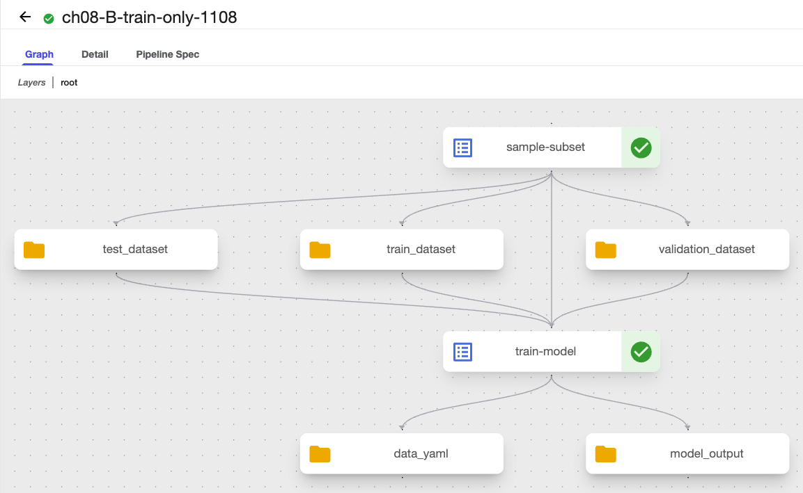
이미지 해설: KFP 화면의 ch08-B-train-only-1108 Graph 탭입니다. 위쪽 sample-subset 태스크가 test_dataset, train_dataset, validation_dataset 폴더(아티팩트) 3개를 만들고, 그 3개와 sample-subset 에서 곧바로 내려오는 선이 아래 train-model 로 모입니다. train-model 은 data_yaml, model_output 두 폴더를 내놓습니다. 두 태스크 모두 초록 체크(성공)입니다. 초보자 풀이: 폴더 상자는 "태스크가 남긴 결과물", 선은 "누가 누구의 결과물을 받는가"입니다. 여기서 확인할 것: ① 두 태스크 모두 초록 체크 ② 출력 폴더 이름이 data_yaml, model_output 두 개뿐이라는 점(프로젝트 runs/ 폴더는 아티팩트로 남지 않습니다).
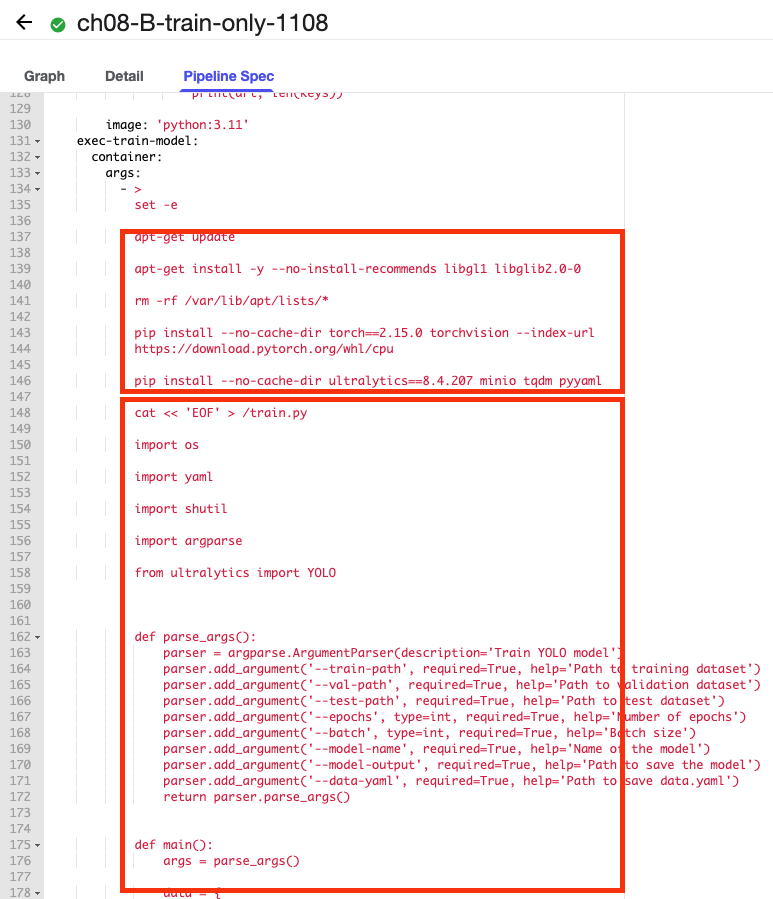
이미지 해설: 같은 run 의 Pipeline Spec 탭(YAML)에서 exec-train-model 의 container.args 부분입니다. 빨간 박스 두 개가 핵심입니다. ① 위 박스: apt-get update, apt-get install -y --no-install-recommends libgl1 libglib2.0-0, rm -rf /var/lib/apt/lists/*, pip install --no-cache-dir torch==2.15.0 torchvision --index-url https://download.pytorch.org/whl/cpu, pip install --no-cache-dir ultralytics==8.4.207 minio tqdm pyyaml. ② 아래 박스: cat << 'EOF' > /train.py 로 시작해 import os, import yaml, import shutil, import argparse, from ultralytics import YOLO 와 parse_args() 의 8개 add_argument(--train-path … --data-yaml, 모두 required=True)가 보이고, 줄이 들여쓰기 없이 0열에서 시작합니다. 초보자 풀이: 컴포넌트는 결국 "컨테이너를 띄우고 셸 명령을 순서대로 실행"하는 것이며, 그 안에서 train.py 를 heredoc 으로 파일로 만든 뒤 실행합니다. 여기서 확인할 것: 화면의 베이스 이미지는 python:3.11 이고 책 Listing 은 python:3.11-slim 이라 둘이 다릅니다. torchvision 은 책 Listing 8.8 에는 없고 이 실행 화면에는 있습니다.
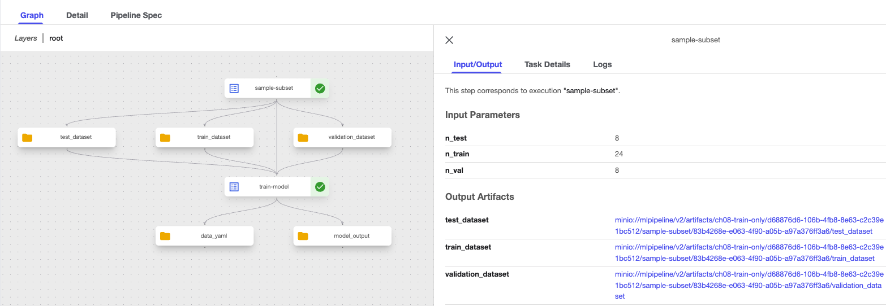
이미지 해설: Graph 에서 sample-subset 을 클릭했을 때 오른쪽에 나오는 Input/Output 탭입니다. Input Parameters 는 n_test 8, n_train 24, n_val 8. Output Artifacts 는 test_dataset, train_dataset, validation_dataset 이고, 각 값은 minio://mlpipeline/v2/artifacts/ch08-train-only/d68876d6-…/sample-subset/<실행 ID>/<이름> 형태의 저장소 주소(URI) 입니다. 초보자 풀이: 아티팩트의 주소는 <파이프라인 이름>/<run ID>/<태스크 이름>/<실행 ID>/<아티팩트 이름> 의 계층입니다. 여기서 확인할 것: 입력 파라미터가 24 / 8 / 8 로 들어갔는지, 출력 주소에 run ID(d68876d6)가 들어 있는지.
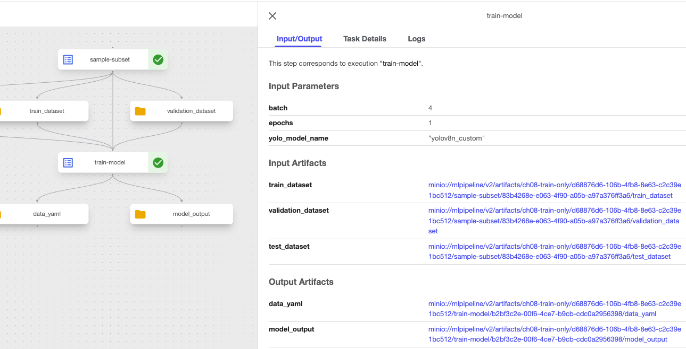
이미지 해설: train-model 의 Input/Output 입니다. Input Parameters 는 batch 4, epochs 1, yolo_model_name "yolov8n_custom". Input Artifacts 는 앞 단계가 만든 train_dataset, validation_dataset, test_dataset 의 URI 이고, Output Artifacts 는 data_yaml, model_output(둘 다 …/train-model/<실행 ID>/… 아래)입니다. 초보자 풀이: 입력 아티팩트 주소가 sample-subset 의 출력 주소와 같은 것이 보이므로 "출력 → 입력"이 실제로 연결된 것을 눈으로 확인할 수 있습니다. 여기서 확인할 것: batch 4, epochs 1 이 의도한 값인지.
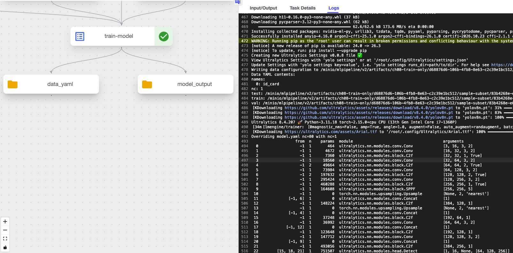
이미지 해설: train-model 의 Logs 탭, 설치가 끝나고 학습이 시작되는 구간(로그 467~516줄)입니다. Successfully installed … 뒤에 pip 의 root 경고(Running pip as the 'root' user …)와 A new release of pip is available 안내가 나오는데 둘 다 실패가 아닙니다. 이어서 Creating new Ultralytics Settings v0.0.8 file, Writing data configuration to /minio/mlpipeline/v2/artifacts/ch08-train-only/…, Data YAML contents: 아래에 names: 0: id_card, nc: 1, test: / train: / val: 경로가 출력됩니다. 그다음 yolov8n.pt 를 https://github.com/ultralytics/assets/releases/download/v8.4.0/yolov8n.pt 에서 내려받는 진행률(31%→83%→100%), Ultralytics 8.4.207 🚀 Python-3.11.18 torch-2.15.0+cpu CPU (13th Gen Intel Core i7-1360P), Overriding model.yaml nc=80 with nc=1, 그리고 모델 구조 표(from n params module arguments)가 이어집니다. 초보자 풀이: 사전학습 가중치 yolov8n.pt 를 인터넷에서 받으므로 파드가 외부(GitHub)에 접근해야 합니다. nc=80 → nc=1 은 COCO 의 80개 클래스 모델을 ID 카드 1개 클래스로 바꾼다는 뜻입니다. 여기서 확인할 것: data.yaml 의 names: 0: id_card, nc: 1, 사용된 버전 8.4.207/torch-2.15.0+cpu. 이 화면의 CPU 표기는 학습을 돌린 서버의 값입니다.
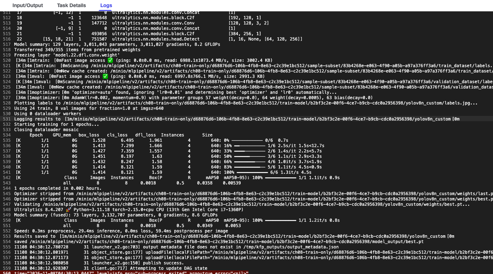
이미지 해설: 같은 Logs 탭의 뒷부분(511~560줄)입니다. Model summary: 129 layers, 3,011,043 parameters, 3,011,027 gradients, 8.2 GFLOPs, Transferred 349/355 items from pretrained weights(355개 중 349개를 사전학습 가중치에서 가져옴; 나머지는 클래스 수 변경 등으로 이전되지 않은 텐서일 수 있으나 목록은 확인 못함), Freezing layer 'model.22.dfl.conv.weight', optimizer: … AdamW(lr=0.002, momentum=0.9), Using 24 train, 8 val images, Starting training for 1 epochs.... 학습 표에는 1/1, box_loss 1.414, cls_loss 8.121, dfl_loss 1.59, 640: 100% 6/6 1.3it/s 4.5s 가 있고, 검증 줄은 all 8 8 0.0018 0.5 0.0358 0.00539 (Box(P) 0.0018, R 0.5, mAP50 0.0358, mAP50-95 0.00539). 1 epochs completed in 0.002 hours. 뒤 Validating … best.pt(Model summary (fused): 73 layers), 최종 all 8 8 0.0018 0.5 0.0349 0.0053, 마지막에 saved … model_output/best.pt 와 uploadFile … publish success 가 나옵니다. 초보자 풀이: 6/6 은 24장 ÷ batch 4 = 6번의 배치 처리이고, optimizer=auto 가 AdamW 와 lr 을 스스로 골랐다는 로그입니다. cls_loss 8.121 처럼 값이 큰 것은 아직 거의 학습하지 않은 1 epoch 이라 정상입니다. 여기서 확인할 것: ① 마지막 saved … model_output/best.pt ② uploadFile / publish success (아티팩트 업로드 성공). 로그 맨 아래 빨간 줄(level=info msg="sub-process exited" … error="<nil>")은 error 가 <nil>(없음)인 정상 종료 정보입니다.
✅ 기대 결과 (원격 kind 클러스터 book-env 에서 기록한 과거 실행 결과)
- run
ch08-B-train-only-1108(d68876d6) SUCCEEDED, 전체 137초(샘플 24초, 학습 83초). - Graph 에
sample-subset,train-model두 태스크가 초록 체크, 산출물model_output·data_yaml. data.yaml의 경로는 아티팩트 URI 경로(/minio/mlpipeline/v2/artifacts/<pipeline>/<run>/...).- 업로드된 산출물은
model_output/best.pt와data_yaml/data.yaml뿐이며runs/프로젝트 디렉터리는 아티팩트로 남지 않습니다.
🔍 확인 방법
[브라우저]Runs → 내 run → Graph 의 두 태스크가 초록 체크인지.sample-subsetInput/Output 에서 24 / 8 / 8,train-model에서 batch 4 · epochs 1 인지.train-modelLogs 의 마지막에서saved … best.pt와publish success를 찾는다.- (선택) 객체 저장소 UI 에서
.../train-model/<실행 ID>/model_output/best.pt가 있고 크기가 약 6.5MB 인지.
⚠ 자주 나는 오류
| 증상 | 원인 | 해결 |
|---|---|---|
학습 태스크가 Package libgl1-mesa-glx has no installation candidate 로 실패 |
컨테이너 명령에 옛 패키지 이름 | libgl1 libglib2.0-0 로 교체 |
컴포넌트 안 train.py 에서 SyntaxError |
os.path.join 쉼표 누락 |
쉼표 추가 |
heredoc 이 끝나지 않거나 EOF: command not found |
본문·EOF 들여쓰기, 또는 \ 뒤 공백·주석 |
본문·EOF 0열, \ 바로 뒤 줄바꿈 |
KeyError: 'MINIO_ENDPOINT' (sample-subset 로그) 또는 컴파일할 때 KeyError |
컴파일한 터미널에 MINIO_* 가 export 되지 않았음 |
위 export 4줄을 같은 터미널에서 실행한 뒤 다시 컴파일 |
ModuleNotFoundError: yaml |
pyyaml 가 pip 목록에서 빠짐. 출력을 숨기면 원인이 안 보임 |
pip install … pyyaml 포함, 출력 숨김(-q, >/dev/null) 해제 |
Pending 으로 학습 파드가 안 뜸 |
set_cpu_limit + set_memory_limit("6G") 를 노드가 못 줌(book-env 의 "8" 은 16코어 서버 값) |
노드 Allocatable 확인, 값을 낮추거나 Docker 자원 증가 |
yolov8n.pt 다운로드 실패 |
파드가 GitHub 에 접근 못함(폐쇄망) | 가중치를 미리 반입하거나 허용 |
| 캐시 때문에 이전 결과가 재사용됨 | set_caching_options(False) 누락 |
노트의 파이프라인처럼 두 태스크 모두 캐시 끔 |
Mac M2 / Linux 에서 B 단계가 달라지는 점
- Mac M2(로컬 kind): 학습 컴포넌트는
python:3.11(또는-slim) 이라 arm64 로도 이미지는 받아집니다. torch CPU 휠은 aarch64 용이 있으나 이 조합(torch 2.15.0 + ultralytics 8.4.207)의 M2 설치·학습 성공은 확인 못함. 학습은 CPU 로만 돌고, 시간은 원격 kind 클러스터(16코어 서버)와 직접 비교할 수 없습니다. - Linux(x86_64): 원격 kind 클러스터와 같은 아키텍처. 파드 자원 상한만 노드 크기에 맞게 조정하세요.
[실습] C. 검증 컴포넌트 추가
🎯 목적: B 의 파이프라인 끝에 validate_model 태스크를 붙여, 학습한 best.pt 를 별도 컨테이너(검증용 이미지)에서 불러와 val() 로 평가하고 결과를 KFP UI 에 지표(Output[Metrics])와 리포트(Output[Markdown])로 남깁니다. 동시에 두 가지를 확인합니다. ① 학습(8.4.207)과 검증(8.0.194)의 버전이 달라도 체크포인트가 읽히는가, ② 검증 파드에서 data.yaml 의 아티팩트 경로가 열리는가.
best.pt)와 시험지 정보(data.yaml)를 채점관이 받아 점수를 매기고 성적표(Metrics·Markdown)를 붙여 둡니다. 채점관이 다른 판(버전) 도구를 써도 답안지를 읽을 수 있는지가 이 단계의 시험입니다.flowchart LR S["sample-subset"] --> T["train-model<br/>ultralytics 8.4.207"] T -->|"model_output"| V["validate-model<br/>이미지 8.0.194-cpu"] T -->|"data_yaml"| V S -->|"validation_dataset"| V V --> ME["metrics<br/>Output Metrics"] V --> RP["report<br/>Output Markdown"]
그림 읽는 법: validate-model 은 세 가지를 입력으로 받습니다. 학습이 만든 model_output(가중치)과 data_yaml, 그리고 sample-subset 이 만든 validation_dataset. 출력은 두 가지, 숫자 표(metrics)와 읽기 쉬운 문서(report)입니다.
📋 사전조건
- B 단계 통과(
train-model이model_output·data_yaml을 만듦). components.py에validate_model이 있어야 함. 본문은 원문 노트에 없음(독자가 처음부터 재현 불가). 노트가 밝힌 사실은 다음과 같습니다.- 베이스 이미지:
ultralytics/ultralytics:8.0.194-cpu - 입력:
model(Model/아티팩트),validation_dataset,data_yaml - 출력:
metrics(Output[Metrics]),report(Output[Markdown]) - 책의 3개 지표(mAP50-95, mAP50, mAP75)에 precision/recall 과 Markdown 리포트를 추가했음
- 베이스 이미지:
- 학습/검증 이미지 아키텍처가 노드와 맞을 것(아래 Mac M2 항목).
⌨ 명령어
[PC 터미널] 파일 이름: pipeline_c.py — $WORK_DIR 에 저장합니다. B 의 pipeline_b.py 에 validate_model 태스크를 이어 붙인 보충 구현입니다. 원문 노트에는 이 C 단계 전용 파이프라인 파일의 본문이 없습니다(run 이름 ch08-C-train-validate-1108 과 화면만 있음). validate_model(...) 호출 형태(입력 data_yaml, model, validation_dataset)는 아래 B 방안의 pipeline_cached.py 와 같고, B 단계에서 넣은 저장소 접속 줄(set_env_variable)도 그대로 들어 있습니다. 컴파일·제출 어느 쪽도 실행해 확인하지 못했습니다.
# pipeline_c.py : pipeline_b.py 에 validate_model 태스크를 이어 붙인 C 단계 파이프라인
import os
from kfp import dsl, compiler
from components import sample_subset, train_model, validate_model
@dsl.pipeline(name="ch08-train-validate", description="C: sample subset -> train -> validate")
def pipeline(epochs: int = 1, batch: int = 4, yolo_model_name: str = "yolov8n_custom",
n_train: int = 24, n_val: int = 8, n_test: int = 8):
sample_op = sample_subset(n_train=n_train, n_val=n_val, n_test=n_test)
sample_op.set_caching_options(False)
# 저장소 접속 정보: 컴파일할 때 셸 환경변수에서 읽어 파이프라인 YAML 에 그대로 적힌다
sample_op.set_env_variable("MINIO_ENDPOINT", os.environ["MINIO_ENDPOINT"])
sample_op.set_env_variable("MINIO_ACCESS_KEY", os.environ["MINIO_ACCESS_KEY"])
sample_op.set_env_variable("MINIO_SECRET_KEY", os.environ["MINIO_SECRET_KEY"])
sample_op.set_env_variable("SRC_PREFIX", os.environ.get("SRC_PREFIX", "datasets/od/split"))
train_op = train_model(
epochs=epochs, batch=batch, yolo_model_name=yolo_model_name,
train_dataset=sample_op.outputs["train_dataset"],
validation_dataset=sample_op.outputs["validation_dataset"],
test_dataset=sample_op.outputs["test_dataset"],
)
train_op.set_caching_options(False)
train_op.set_cpu_limit("4").set_memory_limit("6G")
val_op = validate_model(
data_yaml=train_op.outputs["data_yaml"],
model=train_op.outputs["model_output"],
validation_dataset=sample_op.outputs["validation_dataset"],
)
val_op.set_caching_options(False)
val_op.set_cpu_limit("2").set_memory_limit("4G")
if __name__ == "__main__":
compiler.Compiler().compile(pipeline, "pipeline_c.yaml")
[PC 터미널] 컴파일하고 제출합니다. B 단계에서 export 한 MINIO_ENDPOINT·MINIO_ACCESS_KEY·MINIO_SECRET_KEY·SRC_PREFIX 가 이 터미널에 있어야 하고(새 터미널이면 B 단계의 export 블록을 다시 실행), 가상환경이 활성화돼 있어야 합니다. 컴파일하면 pipeline_c.yaml 이 생깁니다. 이 YAML 에도 접속 정보가 평문으로 들어가므로 공유하지 마세요.
cd "$WORK_DIR"
python pipeline_c.py # pipeline_c.yaml 생성
python submit.py pipeline_c.yaml "ch08-C-train-validate-$(date +%m%d%H%M)"
자원 값은 B 와 같은 이유로 노트북용으로 낮춰 두었습니다(학습 set_cpu_limit("4"), 검증 set_cpu_limit("2")). book-env(16코어 서버)의 값은 학습 8, 검증 4 였습니다. 내 노드의 Allocatable 은 kubectl describe node | grep -A6 Allocatable 로 확인하고, Docker Desktop 은 Settings → Resources 에서 CPU 를 6 이상, 메모리를 12GB 이상으로 올리세요.
⚠ 원문 정정: 책이 말하는 "검증용 게이트"와 달리 이 C 단계의validate_model은 지표를 기록할 뿐 통과/실패를 판정하지 않습니다. 통과/실패 판정(게이트)은 다음 파트의 F 단계입니다. 또한 검증 컴포넌트에서data.yaml의val경로는 학습 당시 아티팩트 URI 라서, 검증 데이터를 다른 경로의validation_dataset로 주면FileNotFoundError가 날 수 있습니다. 원문 노트는 게이트 단계에서validation_dataset.path/images로 임시data.yaml을 다시 써서 해결했고, 학습·검증이 같은 아티팩트 URI 를 쓰는 이 C 단계에서는 문제가 없었습니다.
C 단계 화면 읽기
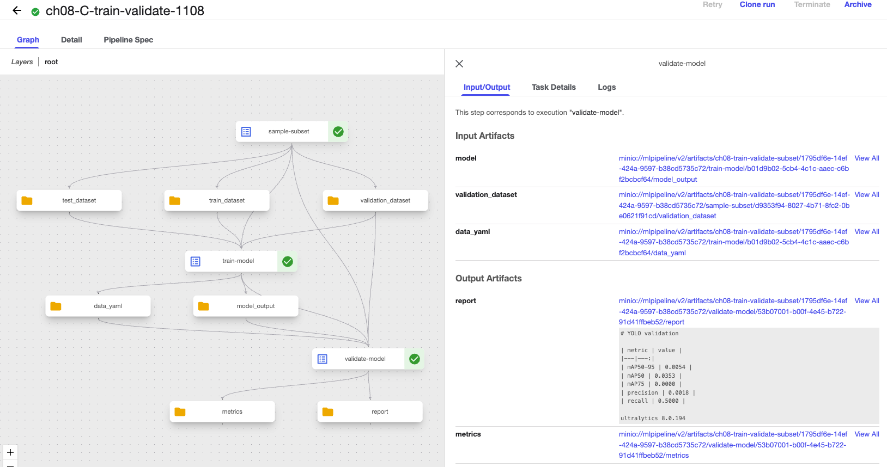
이미지 해설: 모델 검증 컴포넌트를 추가한 run ch08-C-train-validate-1108 의 Graph 와, 오른쪽에서 validate-model 을 선택한 Input/Output 탭입니다. Graph 에는 sample-subset → train-model → validate-model 이 모두 초록 체크로 이어지고, validate-model 에서 metrics 와 report 폴더가 나옵니다. 오른쪽 Input Artifacts 는 model(…/train-model/…/model_output), validation_dataset(…/sample-subset/…/validation_dataset), data_yaml(…/train-model/…/data_yaml), Output Artifacts 는 report 와 metrics 입니다. report 미리보기에는 # YOLO validation 과 표 | metric | value | 가 있어 mAP50-95 0.0054, mAP50 0.0353, mAP75 0.0000, precision 0.0018, recall 0.5000 이 적혀 있고 마지막 줄에 ultralytics 8.0.194 가 있습니다. 초보자 풀이: 검증 태스크가 어느 버전의 라이브러리로 채점했는지까지 리포트에 남겨 두면 나중에 수치가 달라졌을 때 원인을 추적할 수 있습니다. 여기서 확인할 것: ① 입력의 validation_dataset 이 sample-subset 의 출력과 같은 주소인지 ② 리포트 마지막 줄 ultralytics 8.0.194 (검증은 학습과 다른 버전).
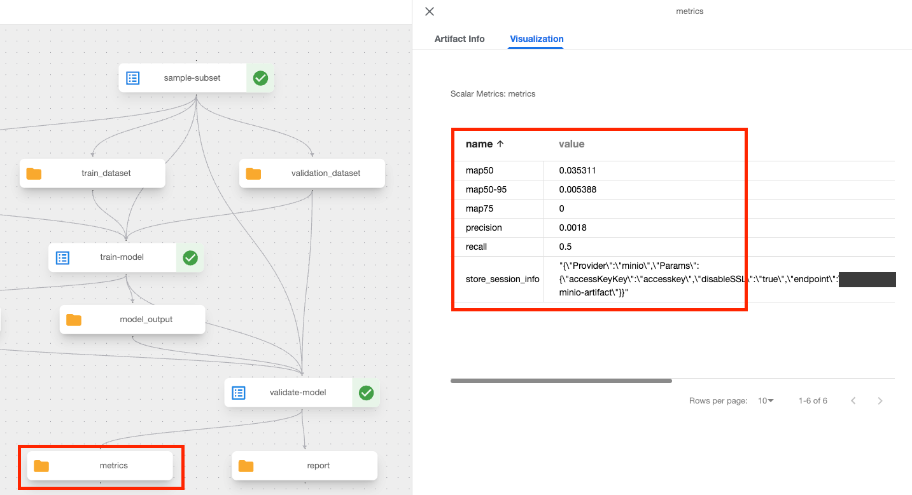
이미지 해설: metrics 아티팩트를 눌렀을 때 오른쪽 Visualization 탭에 보이는 Scalar Metrics: metrics 표(Rows 1-6 of 6)입니다. 빨간 박스 안은 평가 지표 5행 + 저장소 메타데이터 1행입니다. 평가 지표는 map50 0.035311, map50-95 0.005388, map75 0, precision 0.0018, recall 0.5. 마지막 store_session_info 행은 아티팩트 저장소 연결 정보를 담은 JSON 문자열로, 저장소 종류(Provider), 접속 매개변수 이름, disableSSL, 내부 endpoint, 버킷 이름이 길게 이어집니다. 초보자 풀이: map75 = 0 은 "IoU 0.75 처럼 박스 겹침 기준이 엄격하면 한 건도 못 맞췄다"는 뜻으로, 24장·1 epoch 에서는 자연스러운 값입니다. store_session_info 는 우리가 기록한 평가 숫자가 아니라 KFP 가 자동으로 붙여 둔 저장소 정보입니다. 여기서 확인할 것: 지표 5개가 있는지. store_session_info 줄의 내부 주소 영역은 환경 정보이므로 여기에 옮기지 않았고, 이 화면에는 비밀번호 값 자체가 보이지 않습니다(필드 이름만 보임).
✅ 기대 결과 (원격 kind 클러스터 book-env 에서 기록한 과거 실행 결과)
| 항목 | 값 |
|---|---|
| run | ch08-C-train-validate-1108 (1795df6e) SUCCEEDED |
| 전체 시간 | 226초 (샘플 23초 · 학습 75초 · 검증 87초 — 최초 8.0.194 이미지 pull 포함) |
| 지표 (24장 · 1 epoch) | mAP50-95 0.0054, mAP50 0.0353, mAP75 0.0000, precision 0.0018, recall 0.5 |
| 버전 호환 | 8.0.194 가 8.4.207 로 학습한 best.pt 를 정상 로드하고 val() 수행 (문제 없음) |
| 경로 | 검증 파드에서 data.yaml 의 /minio/... 경로가 그대로 열림 (문제 없음) |
| 추가된 것 | 책의 3개 지표에 precision/recall 과 Markdown 리포트(Output[Markdown]) |
위 수치(24장·1 epoch)는 "파이프라인이 끝까지 도는지" 확인용입니다. 학습이 안 됐다는 뜻이 아닙니다. 또 이 검증은
val분할로 돌린 값이며, 같은 책 Listing 의model.val(...)은split인자를 주지 않으면 기본값인 val 분할을 평가합니다. 본문 서술이 "테스트 데이터셋에 대한 검증"이라고 해도 test 평가는 별도 스크립트(원문 노트에 본문 없음)입니다.
🔍 확인 방법
validate-model태스크 → Input/Output 에서 입력 3개와 출력 2개가 보이는지.report미리보기에서 표 5행과 마지막ultralytics 8.0.194확인.metrics→ Visualization 에서 지표 5개 +store_session_info확인. 이 지표는 Run 화면의 "Run output" 탭에서도 볼 수 있습니다.validate-modelLogs 에서 이미지 pull 시간이 첫 실행에 포함돼 87초가 걸린 점 참고.
⚠ 자주 나는 오류
| 증상 | 원인 | 해결 |
|---|---|---|
검증 파드가 exec format error 로 죽거나 ImagePullBackOff(이미지를 받지 못해 재시도하며 기다리는 상태) (Mac M2 로컬 kind 에서 예상) |
ultralytics/ultralytics:8.0.194-cpu 가 amd64 단일 이미지인데 노드는 arm64 |
아래 Mac M2 항목 참고. 예상일 뿐 재현해 보지 못함 |
검증 이미지에서 best.pt 를 못 읽는 오류 |
학습·검증 버전 차이 | 노트의 실행(8.4.207 → 8.0.194)은 성공. 실패하면 같은 버전으로 통일을 시도 |
FileNotFoundError (val: 경로) |
data.yaml 의 경로가 학습 당시 아티팩트 URI, 검증 데이터는 다른 경로 |
validation_dataset.path 로 새 data.yaml 을 임시로 작성(게이트 단계) |
| 지표가 거의 0 이라 "실패" 로 보임 | 24장·1 epoch | 정상. 통과 기준은 SUCCEEDED + 지표 5개 존재 |
model: Input[Model] 을 YOLO(model_path) 로 덮어써서 헷갈림 |
같은 이름 변수를 다른 타입으로 재할당(변수 섀도잉) | 변수 이름을 분리(예: model_art, yolo) |
| 두 번째 실행인데 시간이 빠름/느림 | 이미지 pull 시간 포함 여부 | 첫 실행의 87초는 이미지 pull 을 포함 |
Mac M2 (로컬 kind, 노드 linux/arm64) — 검증 이미지
ultralytics/ultralytics:8.0.194-cpu는 linux/amd64 단일 이미지입니다. arm64 노드에서 그대로 쓸 수 있다고 가정하지 마세요.exec format error는 예상일 뿐 재현해 보지 못했습니다.- 같은 저장소에
8.0.194-arm64태그가 따로 있습니다. 다만 태그가 있다는 것과 체크포인트 로딩·수치 일치는 별개이고, 실제 용도와 로딩 성공은 확인 못함입니다. - 해결 경로 후보 3가지 (어느 것도 실행해 확인하지 못했습니다. 환경에 따라 다를 수 있습니다):
8.0.194-arm64태그를 시험해 본다 → 검증 결과가 amd64 와 같은지는 직접 비교해야 함python:3.11-slim에서pip install ultralytics==<버전 고정>으로 검증 이미지를 직접 구성한다. 학습과 같은 8.4.207 로 통일하면 두 버전 간 차이를 없앨 수 있음- amd64 에뮬레이션을 쓰거나 원격 x86 노드에서 실행한다 (에뮬레이션 동작·속도는 확인 못함)
- 노드 아키텍처 확인:
kubectl get nodes -o jsonpath='{.items[*].status.nodeInfo.architecture}'. 이미지 지원 아키텍처 확인:docker buildx imagetools inspect ultralytics/ultralytics:8.0.194-cpu.
Linux (x86_64)
- 노트와 같은 환경이므로
ultralytics/ultralytics:8.0.194-cpu를 그대로 씁니다. 첫 실행에서 이미지를 받는 시간(노트의 검증 87초에 포함)이 걸립니다. - 이미지 digest 를 기록해 두면 같은 이미지로 재현했는지 확인할 수 있습니다:
docker image inspect <IMAGE:TAG>.
[실습] B 방안 — 고정 경로와 dsl.importer
B 방안: 고정 경로 + dsl.importer (download/split 대체)
🎯 목적: 매번 반복되는 데이터 준비(download 약 25분 + split 약 9분)를 건너뛰고, 객체 저장소의 고정 경로에 이미 있는 분할 데이터를 dsl.importer 로 가져와 곧바로 train → validate 합니다.
dsl.importer 는 "냉장고 칸 주소만 알려 주면 그 칸을 이번 요리의 재료로 등록해 주는 도우미"입니다. 손질 단계(download·split 태스크)를 건너뛰고 주소를 건네줄 뿐, 요리할 때 재료를 냉장고에서 꺼내 오는 일(학습 파드가 데이터를 읽어 오는 전송)은 여전히 일어납니다. 냉장고를 한 번 채워 두는 일(복사)은 따로 해야 하고, 냉장고 자체는 "어제 만든 결과를 다시 쓰는" 캐시와 다른 개념입니다.flowchart TB
subgraph before["기존 방식"]
D1["download-dataset<br/>약 25분"] --> SP1["split-dataset<br/>약 9분"] --> TR1["train-model"]
end
subgraph after["B 방안"]
IM["importer 3개<br/>train val test 주소 등록"] --> CN["count-files<br/>개수와 짝 확인"]
IM --> TR2["train-model"]
TR2 --> VA["validate-model"]
end그림 읽는 법: 왼쪽은 매번 데이터를 내려받고 쪼개는 기존 흐름, 오른쪽은 고정 경로 주소를 importer 가 등록하고 곧바로 학습으로 가는 흐름입니다. 오른쪽에서 count-files 와 train-model 사이에 화살표가 없는 것을 눈여겨보세요. 둘 다 importer 출력만 입력으로 받으므로 서로의 순서가 정해져 있지 않습니다.
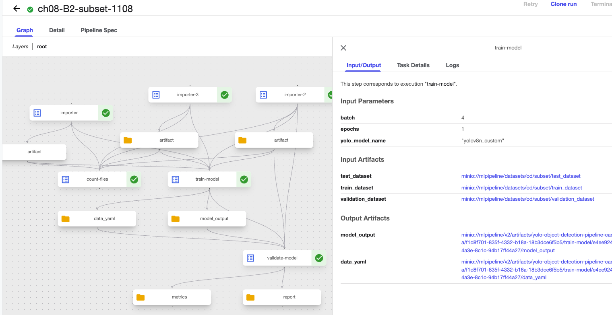
이미지 해설: run ch08-B2-subset-1108 의 Graph 입니다. 상단에 importer, importer-2, importer-3 세 태스크가 초록 체크로 있고(원문 설명: "상단 컴포넌트에 다운로드 없음! S3 에서 importer 로 가져와서 바로 사용"), 각각 이름이 artifact 인 폴더(importer 가 등록한 아티팩트)를 내놓습니다. 그 아래 count-files 와 train-model 이 있고 train-model 뒤에 data_yaml, model_output, validate-model, metrics, report 가 이어집니다. 오른쪽 train-model 패널에서 Input Parameters 는 batch 4, epochs 1, yolo_model_name "yolov8n_custom", Input Artifacts 는 minio://mlpipeline/datasets/od/subset/test_dataset, …/train_dataset, …/validation_dataset 입니다. Output Artifacts 의 model_output, data_yaml 은 minio://mlpipeline/v2/artifacts/yolo-object-detection-pipeline-cac…/f1d8f701-…/train-model/… 형태입니다. 초보자 풀이: B·C 에서는 입력 주소에 v2/artifacts/<파이프라인>/<run>/... 처럼 run ID 가 들어 있었는데, 여기서는 datasets/od/subset/... 라는 run 과 무관한 고정 주소가 들어옵니다. 이것이 이 방안의 핵심입니다. 여기서 확인할 것: ① importer 3개 + count-files 모두 초록 체크 ② 입력 주소가 datasets/od/subset/... 인지(서브셋 run). 이 화면의 batch 4 는 파이프라인 코드의 기본값(batch 8)과 다른 값입니다. 제출할 때 파라미터를 바꾼 것으로 보이며, 바꾼 방법은 노트에 없습니다(확인 못함).
📋 사전조건
- C 단계 통과.
- ch07 의 분할 산출물(객체 11,218개, 17GB)이 객체 저장소 어딘가에 있어야 합니다.
- 그 산출물을 고정 경로로 서버 측 복사해 둔 상태. 노트는
stage_split.py full로mlpipeline/datasets/od/split/{train,validation,test}_dataset/에 복사했고(약 2분), 소량(24/8/8장)은datasets/od/subset/에 두었습니다.stage_split.py의 본문은 원문 노트에 없어서 독자가 처음부터 재현할 수 없습니다. 원본 추출본(raw)은 용량 때문에 복사하지 않았습니다. components.py에train_model,validate_model,validate_model_gate,count_files.
배경(왜 이 방안인가): 매번 download(약 25분) + split(약 9분)이 반복되고, ch07 컴포넌트를 import 해도 캐시가 히트하지 않았습니다. D 실행에서 download-dataset 이 새 파드로 다시 실행됐는데 노트도 원인을 확인하지 못했습니다. 참고: 여기의 "약 25분 / 약 9분"과 D-3 의 실측(download 15분 11초 / split 7분 51초)은 서로 다른 실행 기록이며, 같은 조건에서 잰 값인지는 확인하지 못했습니다. F 단계의 "약 23분 절약"은 D-3 의 값에 맞춘 것입니다.
호스트 로컬 경로는 쓰지 않았습니다 — kind 노드에는 호스트 디렉터리가 마운트돼 있지 않고(/var, /lib/modules 만), 마운트하려면 클러스터를 다시 만들어야 하기 때문입니다.
⌨ 명령어
[PC 터미널] 파일 이름: pipeline_cached.py — 원문 노트의 코드 그대로입니다. 이 파일에는 이 파트(B 방안)가 쓰는 pipeline, check_pipeline 과 다음 파트(F)의 gate_pipeline 이 함께 들어 있습니다.
# pipeline_cached.py
"""B 방안: download/split 대신 dsl.importer로 고정 경로(MinIO)의 분할 데이터를 가져와 train -> validate."""
from kfp import dsl, compiler
from components import train_model, validate_model, validate_model_gate, count_files
BASE = "minio://mlpipeline/datasets/od/split/"
@dsl.pipeline(name="YOLO Object Detection Pipeline (cached data)", description="ch08 B: importer로 고정 경로 데이터 사용")
def pipeline(epochs: int = 1, batch: int = 8, yolo_model_name: str = "yolov8n_custom",
train_uri: str = BASE + "train_dataset", val_uri: str = BASE + "validation_dataset",
test_uri: str = BASE + "test_dataset"):
tr = dsl.importer(artifact_uri=train_uri, artifact_class=dsl.Dataset, reimport=False)
va = dsl.importer(artifact_uri=val_uri, artifact_class=dsl.Dataset, reimport=False)
te = dsl.importer(artifact_uri=test_uri, artifact_class=dsl.Dataset, reimport=False)
cnt = count_files(train_dataset=tr.output, validation_dataset=va.output, test_dataset=te.output)
cnt.set_caching_options(False)
train_op = train_model(epochs=epochs, batch=batch, yolo_model_name=yolo_model_name,
train_dataset=tr.output, validation_dataset=va.output, test_dataset=te.output)
train_op.set_caching_options(False)
train_op.set_cpu_limit("4").set_memory_limit("6G")
val_op = validate_model(data_yaml=train_op.outputs["data_yaml"], model=train_op.outputs["model_output"],
validation_dataset=va.output)
val_op.set_caching_options(False)
val_op.set_cpu_limit("2").set_memory_limit("4G")
@dsl.pipeline(name="ch08-importer-check", description="importer + count only")
def check_pipeline(train_uri: str = BASE + "train_dataset", val_uri: str = BASE + "validation_dataset",
test_uri: str = BASE + "test_dataset"):
tr = dsl.importer(artifact_uri=train_uri, artifact_class=dsl.Dataset, reimport=False)
va = dsl.importer(artifact_uri=val_uri, artifact_class=dsl.Dataset, reimport=False)
te = dsl.importer(artifact_uri=test_uri, artifact_class=dsl.Dataset, reimport=False)
c = count_files(train_dataset=tr.output, validation_dataset=va.output, test_dataset=te.output)
c.set_caching_options(False)
@dsl.pipeline(name="YOLO Object Detection Pipeline (gate)", description="ch08 F: importer + 학습 + 검증 게이트")
def gate_pipeline(epochs: int = 3, batch: int = 8, yolo_model_name: str = "yolov8n_custom",
min_map50: float = 0.90, min_map50_95: float = 0.60, min_precision: float = 0.90, min_mean_conf: float = 0.50,
train_uri: str = BASE + "train_dataset", val_uri: str = BASE + "validation_dataset",
test_uri: str = BASE + "test_dataset"):
tr = dsl.importer(artifact_uri=train_uri, artifact_class=dsl.Dataset, reimport=False)
va = dsl.importer(artifact_uri=val_uri, artifact_class=dsl.Dataset, reimport=False)
te = dsl.importer(artifact_uri=test_uri, artifact_class=dsl.Dataset, reimport=False)
train_op = train_model(epochs=epochs, batch=batch, yolo_model_name=yolo_model_name,
train_dataset=tr.output, validation_dataset=va.output, test_dataset=te.output)
train_op.set_caching_options(False)
train_op.set_cpu_limit("4").set_memory_limit("6G")
g = validate_model_gate(data_yaml=train_op.outputs["data_yaml"], model=train_op.outputs["model_output"],
validation_dataset=va.output, min_map50=min_map50, min_map50_95=min_map50_95,
min_precision=min_precision, min_mean_conf=min_mean_conf)
g.set_caching_options(False)
g.set_cpu_limit("2").set_memory_limit("4G")
if __name__ == "__main__":
compiler.Compiler().compile(pipeline, "pipeline_cached.yaml")
compiler.Compiler().compile(gate_pipeline, "pipeline_gate.yaml")
compiler.Compiler().compile(check_pipeline, "pipeline_check.yaml")
[PC 터미널] 컴파일하고 제출합니다. (URI 는 파이프라인 파라미터라 제출할 때 바꿔 넣을 수 있습니다.)
cd "$WORK_DIR"
python pipeline_cached.py # pipeline_cached.yaml, pipeline_gate.yaml, pipeline_check.yaml 생성
# 서브셋 run: 파라미터 train_uri/val_uri/test_uri 를 subset 경로로 바꿔 제출 (submit.py 가 이름=값 을 파이프라인 파라미터로 전달)
python submit.py pipeline_cached.yaml "ch08-B2-subset-$(date +%m%d%H%M)" \
train_uri=minio://mlpipeline/datasets/od/subset/train_dataset \
val_uri=minio://mlpipeline/datasets/od/subset/validation_dataset \
test_uri=minio://mlpipeline/datasets/od/subset/test_dataset
# importer + count 만 (전체 경로)
python submit.py pipeline_check.yaml "ch08-B2-fullcheck-$(date +%m%d%H%M)"
\ 뒤에는 공백이나 주석을 붙이지 않습니다. 서브셋 경로 datasets/od/subset/ 는 앞 절의 stage_split.py subset 으로 만들어 둔 곳이며, 없으면 이 run 은 학습·개수 확인에서 실패합니다. 이 파이프라인에는 components.py 의 train_model·validate_model·count_files 가 필요하고, 이 단계의 학습 파드 자원은 위 코드처럼 노트북용(학습 4코어/6G, 검증 2코어/4G)으로 낮춰 두었습니다. book-env 16코어 서버의 값은 12/6G, 4/4G 였습니다. 내 노드의 Allocatable 은 kubectl describe node | grep -A6 Allocatable 로 확인하고, Docker Desktop 은 Settings → Resources 에서 CPU 를 6 이상, 메모리를 12GB 이상으로 올리세요.
🔧 본인 환경에 맞게 교체:<BUCKET>=mlpipeline,<DATA_PREFIX>=datasets/od/split/(서브셋은datasets/od/subset/). 의미: importer 가 가리키는 객체 저장소의 고정 경로. 확인: 객체 저장소 UI 에서buckets/mlpipeline/datasets. 위 코드의BASE = "minio://mlpipeline/datasets/od/split/"도 내 버킷·경로에 맞게 바꿉니다. 이 경로에 데이터가 없으면 importer 단계는 성공해도 이후 학습·개수 확인에서 실패합니다. 서브셋 run 은train_uri/val_uri/test_uri를datasets/od/subset/...로 바꿔 제출합니다.
코드 풀이 — pipeline_cached.py
BASE: 고정 경로의 앞부분.minio://<버킷>/datasets/od/split/뒤에train_dataset같은 이름이 붙습니다.dsl.importer(artifact_uri=…, artifact_class=dsl.Dataset, reimport=False)× 3: 주소를Dataset아티팩트로 등록해 다음 태스크의 입력(tr.output,va.output,te.output)으로 쓰게 합니다. 데이터를 복사하거나 내려받지 않고 주소만 등록합니다(데이터를 실제로 읽는 것은 뒤의 학습 파드입니다).- URI 는 파이프라인 파라미터(
train_uri,val_uri,test_uri): 서브셋과 전체를 같은 파이프라인에서 URI 만 바꿔 실행할 수 있습니다. count_files: 세 데이터셋의 파일 개수와 이미지·라벨 짝을 센 결과를 출력합니다.train_model:set_cpu_limit("4"),set_memory_limit("6G"). 캐시 끔. book-env(16코어 서버)의 값은"12"였고, 노트북에서는Pending이 되기 쉬워 낮췄습니다.validate_model:data_yaml,model은 학습 출력에서,validation_dataset은va.output(importer 출력)에서 받습니다.set_cpu_limit("2"),set_memory_limit("4G")(book-env 는 4코어/4G).check_pipeline: importer 3개 +count_files만 도는 점검용 파이프라인(전체 개수 확인 run 에 사용).gate_pipeline: 학습 후validate_model_gate로 임계값을 판정하는 파이프라인 — 다음 파트 F 단계에서 다룹니다. 같은 파일 안이라 자원 값도 노트북용(학습 4코어/6G, 게이트 2코어/4G)으로 맞춰 두었고, book-env 값은 12/6G, 4/4G 입니다.__main__: 3개 파이프라인을 각각pipeline_cached.yaml,pipeline_gate.yaml,pipeline_check.yaml로 컴파일합니다.
⚠ 원문 정정:pipeline()안에서count_files(cnt)와train_model(train_op)는 둘 다 importer 출력만 입력으로 받아 서로 순서 의존이 없습니다. 그래서 파일 개수 확인이 학습보다 먼저 끝난다는 보장이 없습니다(둘이 동시에 시작될 수 있음). 개수 확인을 "학습 전 관문"으로 쓰고 싶다면train_op.after(cnt)를 명시해야 합니다. 앞의 B 단계 풀이("그래서.after()가 필요 없다")는 출력→입력으로 연결된 경우의 설명이라 이 경우에 일반화하면 안 됩니다. 원문 노트가 이 구조를 관문이라고 주장한 것은 아니므로 "결함"이 아니라 "순서 보장 없음"으로 읽으세요.
⚠ 원문 정정:dsl.importer(reimport=False)는 ML Metadata(KFP 가 태스크와 아티팩트 기록을 남기는 저장소)에 아티팩트를 다시 등록하지 않는 옵션이며 "데이터 전송을 생략한다"는 뜻이 아닙니다. 정리하면dsl.importer는 ① download·split 태스크를 건너뛰고 ② 고정 URI 를 입력으로 넘겨줄 뿐이며, 학습 파드가 그 데이터를 읽어 오는 전송은 그대로 있습니다(count-files148초가 17GB 를 받는 시간입니다). 또 이것은 KFP 캐싱(같은 입력이면 이전 결과를 재사용)과는 별개의 기능이므로 분리해서 생각하세요. 같은 URI 의 데이터를 덮어쓰면 메타데이터·캐시와 데이터 버전 추적이 어긋날 수 있으니, 불변 경로나 해시를 권장합니다.
✅ 기대 결과 (원격 kind 클러스터 book-env 에서 기록한 과거 실행 결과)
| run | 결과 | 시간 |
|---|---|---|
서브셋 ch08-B2-subset-1108 (f1d8f701) |
SUCCEEDED | 전체 175초 — importer 4초, count 22초, 학습 100초, 검증 34초 |
전체 개수 확인 ch08-B2-fullcheck-1108 (455d2e35) |
SUCCEEDED | importer 5초, count-files 148초(17GB 를 파드로 받는 시간) |
| 개수 | train 4,206 / val 841 / test 562 | 이미지·라벨 짝 불일치 0 |
- 17GB·11,218개 객체를 S3 서버 측 복사로 고정 경로에 두는 데 약 2분(
stage_split.py full). - 서브셋 run 에서는
download·split태스크가 그래프에 아예 없습니다(화면 위 이미지).
🔍 확인 방법
[브라우저]Graph 에importer3개와count-files,train-model,validate-model이 있고download-dataset/split-dataset이 없는지.train-modelInput Artifacts 의 주소가minio://<버킷>/datasets/od/subset/…형태인지.count-files로그/출력에서 train 4,206 / val 841 / test 562, 짝 불일치 0 (전체 확인 run).- 전체 개수 합계 4,206 + 841 + 562 = 5,609 장.
- 객체 저장소 UI 에서
datasets/od/split/아래train_dataset,validation_dataset,test_dataset3개 폴더 존재.
한계와 비용
| 항목 | 내용 |
|---|---|
| 용량 | 복사본은 run 을 지워도 남는 대신 17GB 를 추가로 차지합니다. 노트의 저장소 화면에서 SeaweedFS 볼륨 표시가 347 → 424 / 1000 으로 늘었다고 적었습니다(D 업로드 포함 시점 기준). 이 숫자는 볼륨 수 표시로 보이며 단위는 원문이 설명하지 않아, MB·% 로 읽지 않습니다. |
| 분할 파라미터 | 분할 비율·seed 를 바꾸려면 raw 를 복사해 split_dataset 만 돌려야 합니다(미구현). |
| 데이터 버전 | 고정 경로를 덮어쓰면 메타데이터·캐시와 데이터가 어긋날 수 있음 → 불변 경로·해시 권장 |
| 순서 보장 | count_files 는 학습의 사전 관문이 아님 → 필요하면 train_op.after(cnt) |
| 재현성 | stage_split.py, fetch_subset.py, components.py 본문이 원문 노트에 없어 처음부터 재현은 불가 |
⚠ 자주 나는 오류
| 증상 | 원인 | 해결 |
|---|---|---|
importer 는 SUCCEEDED 인데 count-files 나 학습이 No such file |
고정 경로에 데이터가 없음(복사 단계 누락) | 객체 저장소에서 datasets/od/split/… 존재 확인 후 서버 측 복사 |
| 학습이 개수 확인 결과를 기다리지 않고 시작함 | count_files 와 train_model 에 순서 의존이 없음 |
train_op.after(cnt) 추가 |
| 서브셋 run 에서 전체 데이터를 읽어 시간이 오래 걸림 | train_uri 등을 기본값(split)으로 둠 |
제출 시 datasets/od/subset/… 로 파라미터 변경 |
FileNotFoundError (검증에서 val: 경로) |
data.yaml 의 val 은 학습 당시 URI, 검증 데이터는 고정 경로의 validation_dataset |
게이트 단계처럼 validation_dataset.path/images 로 임시 data.yaml 재작성 |
count-files 가 오래 걸림(148초) |
17GB 를 파드로 받아 세는 시간 | 정상. 전체 확인 run 에서만 돌림 |
| 같은 이름 run/URI 덮어쓰기로 이전 결과와 섞임 | 고정 URI 재사용 | 불변 경로나 해시 사용 |
Mac M2 / Linux 에서 B 방안이 달라지는 점
- Mac M2(로컬 kind): 17GB 를 파드로 받는
count-files·학습이 있으므로 Docker Desktop 의 디스크와 메모리 여유를 먼저 확인합니다(복사본 17GB + 파드 임시 파일). 학습·검증 이미지의 아키텍처 이슈는 C 단계 Mac M2 항목과 같습니다. 이 방안 자체를 M2 에서 실행한 시간은 확인 못함입니다. - Linux(x86_64): 노트와 같은 구조입니다. 객체 저장소에 고정 경로가 있는지만 확인하면 됩니다.
이 파트의 정리
| 단계 | 한 줄 요약 | book-env 에서 기록한 시간 |
|---|---|---|
| A | 컨테이너 1개에서 train.py 단독. 외삽 약 13분 |
학습 14초 |
| B | sample_subset → train_model |
137초 |
| C | + validate_model (검증 이미지 8.0.194) |
226초 |
| B 방안 | download/split 대신 importer 로 고정 경로 사용 | 서브셋 175초, 개수 확인 count 148초 |
다음 파트에서는 이 구조를 전체 데이터로 돌리는 D, 산출물로 추론을 비교하는 E, 검증 게이트와 장기 학습 F 를 다룹니다.
8.1.4 검증 컴포넌트 만들기
8.1.4 검증 컴포넌트 만들기 — Creating the validation component
8.1.3까지 만든 학습 컴포넌트는 가중치 파일(best.pt)을 만들어 냅니다. 이 절은 그 가중치가 쓸 만한지 숫자로 채점하는 validate_model 컴포넌트를 만듭니다. 순서는 (1) 검증이 왜 필요한가, (2) KFP의 지표 출력 기능, (3) 의존성을 어떻게 다룰지, (4) Listing 8.12(컴포넌트 선언), (5) Listing 8.13(채점 코드) 입니다. 채점 용어(IoU·mAP·precision·recall)는 바로 뒤 절에서 따로 풀어 줍니다.
🧒 초보자 설명 — 검증이 하는 네 가지 일
프로덕션 머신러닝 시스템에서 검증은 단순히 정확도를 측정하는 것 이상의 다양한 목적을 수행합니다. 잘 설계된 검증 컴포넌트는 다음과 같은 역할을 합니다.
- 모델 성능 저하를 조기에 감지합니다.
- 데이터 세그먼트별 성능을 파악합니다.
- 모델 배포에 관한 의사결정을 합리적으로 수행합니다.
- 과거 성능 기록을 체계적으로 관리합니다.
이번 구현에서는 큐브플로의 지표 추적 기능을 활용하여 이러한 인사이트를 체계적으로 수집합니다. 이 접근 방식은 파이프라인 인프라와 통합되는 동시에, 요구사항이 변화하더라도 커스텀 검증 로직을 유연하게 추가할 수 있습니다.
여기서 반드시 이해해야 할 핵심 개념은 지표 출력(outputting metrics)으로, 이는 KFP가 제공하는 피처입니다. (One key concept to grasp here is outputting metrics, which is a feature offered by KFP.) 이 기능을 활용하면 모델 성능에 관한 유용한 인사이트를 얻고, 데이터 기반 의사결정을 통해 모델을 개선할 수 있습니다. 이는 다음과 같은 형태로 제공될 수 있습니다.
- 마크다운 (Markdown)
- 플롯 (Plots)
- 원시 값 (Raw values)
| 지표 출력 형태 | 무엇이 보이나 | 이 장에서 쓰이나 |
|---|---|---|
| 마크다운 (Markdown) | 서식 있는 글·표를 Run 화면에 표시 | 쓰지 않음 (소개만) |
| 플롯 (Plots) | 곡선·막대 같은 그래프 | 쓰지 않음 (소개만) |
| 원시 값 (Raw values) | map50 = 0.989 같은 숫자 |
사용 — metrics.log_metric(...) |
보충 설명: Listing 8.13 자체는 현재 데이터에 대한 전체 mAP 숫자 3개를 기록할 뿐, 과거 모델과의 자동 비교나 조명·각도별(세그먼트별) 평가는 구현하지 않습니다. 위 네 가지 역할은 검증 컴포넌트가 지향하는 설계 목표이며, 필요하면 같은 방식으로 로직을 덧붙여 확장할 수 있다는 뜻입니다.
🧒 초보자 설명 — 왜 @dsl.component 를 다시 쓰나
이번에는 @dsl.container_component 방식으로 컴포넌트를 만들지 않고, 우리에게 익숙한 @dsl.component 를 재사용하겠습니다.
개발자라면 몸에 밴 습관 탓에 requirements.txt 를 통해 모든 의존성을 설치하여 워크플로를 단순화하려는 유혹에 자주 빠지게 됩니다. 그러나 이 방식은 패키지 버전이 복잡하게 얽혀 개발 과정을 더디게 만들고 좌절감을 안겨주는 '의존성 지옥(dependency hell)'으로 이어질 수 있으며, 머신러닝 라이브러리에서 이런 문제가 특히 잦습니다. 예를 들어 어떤 의존성은 텐서플로를 요구하고, 또 다른 의존성은 특정 버전의 파이토치를 요구하는데 이것이 이미 설치된 오픈CV(OpenCV) 버전과 충돌하는 경우가 발생합니다(무슨 말인지 감이 오실 겁니다).
이러한 문제를 피하려면 울트라리틱스 기본 이미지와 같이 미리 패키징된 도커 컨테이너를 활용하는 방법을 고려해 볼 만합니다. 이렇게 미리 빌드된 이미지를 사용하면 의존성을 수동으로 설치할 필요가 없어 시간과 노력을 절약할 수 있으며, 오류 및 버전 충돌 가능성도 줄어듭니다. 이 방식을 택하면 기반 인프라에 대한 걱정 없이 프로젝트 구축에 집중할 수 있습니다.
따라서 이미 복잡한 개발 환경을 조금이나마 단순하게 만들기 위해, 리스트 8.12에서는 base_image로 울트라리틱스 도커 이미지를 지정하고 나머지 의존성을 packages_to_install 을 통해 추가하겠습니다.
minio, tqdm)만 추가로 들이는 것과 같습니다. 가구끼리 크기가 안 맞는 일(= 버전 충돌)이 줄어듭니다. (일상 비유)flowchart LR A["requirements.txt 로 전부 설치"] -->|"버전이 얽힘"| B["의존성 지옥"] C["미리 만든 ultralytics 이미지"] -->|"base_image"| D["필요한 것만 packages_to_install"] D --> E["충돌 가능성 감소"]
Listing 8.12 — YOLO 모델 검증을 위한 KFP 컴포넌트 정의
원문 코드입니다(# ... 는 책의 본문 생략 표기, 굵게 표시 기호 ** 는 코드에서 제거했습니다).
# Listing 8.12 Defining the KFP component for YOLO model validation - YOLO 모델 검증을 위한 KFP 컴포넌트 정의
@dsl.component(
base_image="ultralytics/ultralytics:8.0.194-cpu",
packages_to_install=["minio", "tqdm"]
)
def validate_model(
data_yaml: Input[Artifact], # 범용 KFP 아티팩트로서의 설정 파일
model: Input[Model], # KFP 의 Model 타입을 사용하는 학습된 모델
validation_dataset: Input[Dataset], # 검증 데이터를 위한 Dataset 타입
metrics: Output[Metrics] # 평가 결과를 저장하는 Metrics 타입
):
# ...
줄별 설명
| 코드 | 하는 일 |
|---|---|
@dsl.component( |
이 파이썬 함수를 KFP 컴포넌트(= 파이프라인의 한 단계, 별도 컨테이너에서 실행)로 만드는 데코레이터. |
base_image="ultralytics/ultralytics:8.0.194-cpu" |
컨테이너의 바탕 이미지. 울트라리틱스가 이미 설치된 CPU용 이미지(8.0.194)라서 ultralytics, torch 등을 따로 깔지 않습니다. |
packages_to_install=["minio", "tqdm"] |
컨테이너가 시작될 때 추가로 pip 설치할 파이썬 패키지. minio(오브젝트 스토리지 클라이언트), tqdm(진행률 막대). |
def validate_model( |
컴포넌트 이름이자 함수 이름. 파이프라인 화면에서는 validate-model 로 보입니다. |
data_yaml: Input[Artifact] |
학습 단계가 만든 data.yaml(데이터 경로·클래스 이름이 적힌 설정 파일)을 범용 아티팩트로 받음. |
model: Input[Model] |
학습된 모델 가중치를 Model 전용 타입으로 받음. |
validation_dataset: Input[Dataset] |
검증용 이미지·라벨 묶음을 Dataset 타입으로 받음. |
metrics: Output[Metrics] |
채점 결과를 담아 두는 출력 칸. 여기에 log_metric 으로 숫자를 적으면 Run 화면의 표로 보입니다. |
# ... |
함수 본문 생략. 본문은 Listing 8.13 에 이어집니다. |
검증 컴포넌트는 설정 데이터를 위한 범용 Artifact, 학습된 가중치를 위한 전용 Model 타입, 검증 데이터를 위한 Dataset 타입, 평가 결과를 수집하기 위한 Metrics 타입의 네 가지 고유한 아티팩트 타입을 보여줍니다. 이러한 타입들은 KFP가 파이프라인 컴포넌트 간의 데이터 흐름과 의존성을 관리할 수 있게 해줍니다.
flowchart LR Y["data_yaml<br/>Artifact 범용"] --> V["validate_model"] M["model<br/>Model 가중치"] --> V D["validation_dataset<br/>Dataset 데이터"] --> V V --> X["metrics<br/>Metrics 채점 결과"]
| 타입 | 방향 | 담는 것 | 비유 |
|---|---|---|---|
Artifact |
입력 | 설정 파일 data.yaml (어디에도 속하지 않는 범용 상자) |
시험 안내문 |
Model |
입력 | 학습된 가중치 | 응시자(채점 대상) |
Dataset |
입력 | 검증용 이미지·라벨 | 시험 문제지와 정답지 |
Metrics |
출력 | 점수 숫자 | 채점표 |
⚠ 원문 정정: ① 책 본문은packages_to_install로 "나머지 의존성을 추가"한다고 하는데, 이 옵션은 파이썬 패키지(pip)만 설치합니다.libgl1같은 시스템 라이브러리는 준비된base_image에 들어 있어야 하거나@dsl.container_component/dsl.ContainerSpec으로 해결해야 합니다. (dsl.ContainerSpec은 데코레이터가 아니라 컴포넌트 함수가 반환하는 객체입니다.) ② 이미지ultralytics/ultralytics:8.0.194-cpu는 linux/amd64 한 가지 구조만 들어 있습니다. 같은 저장소에8.0.194-arm64태그가 따로 있으므로, Mac M2 의 로컬 kind(파드가 linux/arm64) 에서는 그대로 못 쓸 가능성이 큽니다(exec format error는 예상일 뿐 이번에 재현하지 않았고, arm64 태그가 체크포인트를 제대로 읽는지도 확인하지 못했습니다). 호스트 구조는uname -m, 노드 구조는kubectl get nodes -o jsonpath='{.items[*].status.nodeInfo.architecture}'로 확인하세요. ③ 원격 kind 클러스터에서는 학습 8.4.207, 검증 8.0.194 로 울트라리틱스 버전이 섞여 있습니다. 같은 가중치라도 버전이 다르면 점수가 조금 달라질 수 있습니다(아래 숫자 카드 참고).
Mac M2 / Linux 에서 이 컴포넌트의 이미지 선택
- Linux x86_64:
ultralytics/ultralytics:8.0.194-cpu를 그대로 사용 (원문 노트의 방식). - Mac M2 (arm64): 이미지가 지원하는 구조를 먼저 확인 —
docker buildx imagetools inspect ultralytics/ultralytics:8.0.194-cpu. amd64 전용이면 (a)8.0.194-arm64태그를 시험해 보거나, (b)python:3.11-slim위에서pip install ultralytics==<버전 고정>으로 직접 구성하거나, (c) amd64 에뮬레이션 또는 원격 x86 노드를 쓰는 방법이 있습니다. 어느 쪽이든 실제로 돌려 확인하기 전에는 "된다"고 단정하지 않습니다. - 파드(리눅스 컨테이너) 안에서는 Apple GPU(MPS)를 쓸 수 없으므로 CPU 학습·검증입니다.
Listing 8.13 — YOLO 모델 로드 및 검증 지표 계산
리스트 8.13은 학습된 YOLO 모델을 불러와 테스트 데이터셋에 대해 검증하고, KFP의 지표 로깅 인터페이스를 통해 표준 COCO(Common Objects in Context) 지표(평균 정밀도 mean Average Precision(mAP) 값)를 수집하는 방법을 보여줍니다. 아래는 원문 코드입니다(<b>model.val</b> 의 굵게 표시 기호는 제거).
# Listing 8.13 Loading the YOLO model and computing validation metrics - YOLO 모델 로드 및 검증 지표 계산
@dsl.component(...)
def validate_model(...):
from ultralytics import YOLO
import os
model_path = os.path.join(model.path, "best.pt") # 컴포넌트 입력에서 최적 모델 가중치를 로드한다.
model = YOLO(model_path)
val_results = model.val( # YOLO의 val 메서드를 사용해 모델을 검증한다.
data=os.path.join(data_yaml.path, "data.yaml"),
imgsz=640,
batch=1,
verbose=True
)
metrics.log_metric("map50-95", val_results.box.map) # (아래 2줄 설명포함) 표준 COCO 지표를 KFP 지표 아티팩트에 기록한다.
metrics.log_metric("map50", val_results.box.map50)
metrics.log_metric("map75", val_results.box.map75)
줄별 설명
| 코드 | 하는 일 |
|---|---|
@dsl.component(...) / def validate_model(...): |
Listing 8.12 의 선언을 줄여 쓴 표기(... = 생략). |
from ultralytics import YOLO / import os |
컨테이너 안에서 YOLO 클래스와 경로 도구를 불러옵니다. 함수 안에서 import 하는 이유: KFP 컴포넌트는 함수 본문만 컨테이너로 떼어 실행하기 때문입니다. |
model_path = os.path.join(model.path, "best.pt") |
입력 model 아티팩트가 놓인 폴더(model.path) 아래의 best.pt 경로를 만듭니다. |
model = YOLO(model_path) |
그 파일로 YOLO 모델 객체를 만듭니다(= 가중치 로드). |
val_results = model.val( |
울트라리틱스의 한 줄 검증. 내부에서 추론 → 정답과 비교 → 지표 계산을 모두 수행합니다. |
data=os.path.join(data_yaml.path, "data.yaml") |
어떤 데이터로 채점할지 가리키는 설정 파일 경로. |
imgsz=640 |
이미지를 640×640 기준으로 처리. |
batch=1 |
한 번에 한 장씩. 메모리를 아끼는 대신 느립니다. |
verbose=True |
진행·결과를 로그에 자세히 출력. |
metrics.log_metric("map50-95", val_results.box.map) |
IoU 0.50~0.95 평균 mAP 를 Output[Metrics] 에 기록. |
metrics.log_metric("map50", val_results.box.map50) |
IoU 0.50 기준 mAP. |
metrics.log_metric("map75", val_results.box.map75) |
IoU 0.75 기준 mAP. |
⚠ 원문 정정: ① 평가 대상 분할 — 본문은 "테스트 데이터셋에 대해 검증"이라고 하지만 코드의model.val(...)에는split인자가 없어 기본값인 val(검증) 분할을 평가합니다. 함수 이름에 val 이 있다고 test 를 자동 평가하지는 않습니다. test 평가는 별도 스크립트로 해야 하며, 그 스크립트는 원문에 실려 있지 않습니다. ② 변수 덮어쓰기 — 함수 입력model: Input[Model]을model = YOLO(model_path)로 같은 이름에 다시 대입합니다. 동작은 하지만 이후model.path를 다시 쓸 수 없어 혼동하기 쉽습니다. ③ 검증 데이터 경로 —data.yaml안의val경로는 학습 당시 아티팩트 경로입니다. 검증 데이터를 다른 고정 경로의validation_dataset로 따로 주면FileNotFoundError가 날 수 있습니다. 원문 노트의 게이트 컴포넌트는validation_dataset.path/images를 가리키는/tmp/gate_data.yaml을 다시 써서 해결했고, 학습·검증이 같은 importer 경로를 쓰는 파이프라인에서는 이 문제가 생기지 않았습니다. 또한 위 코드 본문(생략 표기 제외)에는validation_dataset를 읽는 줄이 없습니다. ④ 코드 안...굵게 표시 기호는 복사하면 문법 오류가 되므로 제거했습니다.
고친 코드 — 미실행 예시
입력 이름을 덮어쓰지 않고, 평가 분할을 눈에 보이게 적었습니다. 실행해 확인하지 못한 예시이므로 환경에 따라 다를 수 있습니다.
# 미실행 예시 — validate_model 본문
from ultralytics import YOLO
import os
model_path = os.path.join(model.path, "best.pt")
yolo = YOLO(model_path) # 입력 이름 model 을 덮어쓰지 않음
val_results = yolo.val(
data=os.path.join(data_yaml.path, "data.yaml"),
split="val", # 기본값이지만 명시: 어느 분할을 채점하는지 드러남
imgsz=640,
batch=1,
verbose=True,
)
metrics.log_metric("map50-95", val_results.box.map)
metrics.log_metric("map50", val_results.box.map50)
metrics.log_metric("map75", val_results.box.map75)
울트라리틱스 YOLO 라이브러리를 사용할 때, 모델 검증은 model.val() 한 줄의 코드만으로 간단하게 수행할 수 있습니다. 모든 라이브러리가 이러한 편의성을 제공하지는 않을 수 있지만, 모델 검증 지표를 수집하고 분석하는 일이 모델에 대한 올바른 의사결정을 내리는데 필수적이라는 점을 반드시 기억해야 합니다. 이를 통해 모델의 성능에 관한 귀중한 인사이트를 얻고 개선에 필요한 영역을 파악할 수 있습니다. 이제 모든 재료가 갖춰졌으니, 이를 하나의 파이프라인으로 엮을 차례입니다.
🔢 숫자로 보기
- 입력 3개(Artifact·Model·Dataset) + 출력 1개(Metrics) = 아티팩트 타입 4가지, 기록하는 지표 3개(map50-95, map50, map75).
- 지표 3개의 순서는 보통 map50 ≥ map75 ≥ map50-95 입니다. 기준(IoU)이 엄격해질수록 "맞힌" 박스가 줄기 때문입니다. 그림 8.7 의 값 0.989 ≥ 0.985 ≥ 0.967 이 이 순서입니다.
- 원격 kind 클러스터 book-env(실습 D)의 검증 컴포넌트(울트라리틱스 8.0.194, batch=1) 값: mAP50-95 0.8317 / mAP50 0.9772 / mAP75 0.9596. 같은 학습 중 검증(8.4.207) 값은 0.809 / 0.972 로 조금 다릅니다. 차이의 원인은 확인하지 못했습니다. 그래서 지표 이름 · 분할(val/test) · 버전을 항상 함께 적습니다.
⚠ 흔한 오해
- "
model.val()이라서 test 데이터로 채점한다" → 기본은 val 분할입니다. - "mAP 0.98 이면 어떤 상황에서도 98% 정확하다" → 이 숫자는 그 데이터 · 그 IoU 기준의 평균일 뿐입니다.
- "
packages_to_install로 apt 패키지도 깔린다" → 파이썬 패키지만 설치됩니다. - "Mac 에서 만든 컴포넌트는 아무 클러스터에서나 돈다" → 이미지 CPU 구조(amd64/arm64)가 노드와 맞아야 합니다.
8.1.4 보충 — 객체 탐지 평가 입문 (IoU·precision·recall·혼동 행렬·AP·mAP)
8.1.4 보충 — 객체 탐지 평가 입문 (박스 · IoU · precision · recall · 혼동 행렬 · AP · mAP)
Listing 8.13 이 기록하는 map50, map50-95, map75 와, 그림 8.7 의 0.989 / 0.967 / 0.985 를 읽으려면 몇 가지 용어가 필요합니다. 아래는 책 본문에 없는 보충 설명이며 전부 일상 비유와 작은 숫자로 풉니다. 숫자 예시는 이해를 위한 가상 예시입니다.
🧒 초보자 설명 — 1. 박스와 라벨
객체 탐지는 사진 한 장에서 "무엇이(클래스) 어디에(박스)" 있는지 답하는 일입니다. 정답은 사람이 그린 정답 박스(ground truth), 모델의 답은 예측 박스이고 예측에는 신뢰도(confidence, 0~1 점수)가 붙습니다. 이 장의 클래스는 id_card 하나입니다.
🧒 초보자 설명 — 2. IoU (겹침 정도)
IoU = 교집합 넓이 ÷ 합집합 넓이 (Intersection over Union). 두 박스가 딱 맞으면 1, 전혀 안 겹치면 0 입니다.
가상 예시: 정답 박스 넓이 100, 예측 박스 넓이 100, 겹친 넓이 80 이면 합집합 = 100 + 100 − 80 = 120, IoU = 80 / 120 ≈ 0.667. 아래 위젯으로 직접 바꿔 보세요.
정답 박스 넓이 100
예측 박스 넓이 100
겹친 넓이 80
🧒 초보자 설명 — 3. TP, FP, FN, precision, recall
예측 박스 하나를 정답 박스와 비교해 IoU 가 기준(예: 0.5) 이상이면 TP(True Positive, 맞힌 탐지), 아니면 FP(False Positive, 헛다리 탐지)입니다. 정답은 있는데 못 맞힌 것은 FN(False Negative, 놓침)입니다.
- precision(정밀도) = TP ÷ (TP + FP) — "찾았다고 말한 것 중 진짜 비율". 헛다리가 많으면 낮아집니다.
- recall(재현율) = TP ÷ (TP + FN) — "실제 정답 중 찾아낸 비율". 놓치는 게 많으면 낮아집니다.
가상 예시 ① TP = 9, FP = 1, FN = 2 → precision = 9/10 = 0.90, recall = 9/11 ≈ 0.82. 가상 예시 ② TP = 90, FP = 10, FN = 30 → precision = 90/100 = 0.90, recall = 90/120 = 0.75. 아래 슬라이더로 직접 확인합니다.
TP(맞힘) 9
FP(헛다리) 1
FN(놓침) 2
🧒 초보자 설명 — 4. 혼동 행렬 (confusion matrix)
혼동 행렬은 "정답이 무엇이었고 모델이 무엇이라고 했는지"를 칸으로 센 표입니다. 분류에서는 행=실제 클래스, 열=예측 클래스로 맞고 틀린 개수를 한눈에 봅니다. 객체 탐지에서는 여기에 "배경" 칸이 하나 더 붙습니다. 정답이 없는 곳에 박스를 그리면 "배경을 클래스로 착각한 FP", 정답이 있는데 박스가 없으면 "클래스를 배경으로 착각한 FN" 입니다.
가상 예시(클래스 2개 + 배경):
| 실제 \ 예측 | cat | dog | 배경 |
|---|---|---|---|
| cat | 8 (TP) | 1 | 1 (FN) |
| dog | 0 | 7 (TP) | 3 (FN) |
| 배경 | 2 (FP) | 1 (FP) | — |
대각선(8, 7)이 맞힌 것이고, 대각선 밖이 실수입니다. 이 장의 클래스는 id_card 하나라서 표가 id_card 와 배경 두 칸으로 아주 단순합니다.
보충 설명: 책 본문(8.1.4)은 혼동 행렬을 쓰지 않습니다. 울트라리틱스는 학습 중 runs/ 아래에 혼동 행렬·PR 곡선 그림을 만들지만, 이 실습의 KFP 컴포넌트가 아티팩트로 올리는 것은 model_output/best.pt 와 data_yaml/data.yaml 뿐이고 runs/ 는 파드가 끝나면 사라집니다. KFP 가 자동으로 보존해 주는 것이 아닙니다.
🧒 초보자 설명 — 5. AP 와 mAP
모델은 박스마다 신뢰도 점수를 같이 냅니다. 신뢰도 기준선을 높이면 확실한 것만 남아 precision 은 올라가고 recall 은 내려가며, 낮추면 반대입니다. 기준선을 바꿔 가며 (recall, precision) 점을 이으면 PR 곡선이 되고, 그 곡선 아래 면적이 AP(Average Precision)입니다. 1에 가까울수록 "기준선을 어디에 두든 대체로 잘 맞고 잘 찾는다"는 뜻입니다.
- mAP(mean AP) = 클래스별 AP 의 평균. 이 장은 클래스가 1개라 AP 와 같은 값이지만, IoU 기준 여러 개를 평균하는 단계는 남습니다.
- map50 = IoU 기준 0.50 하나로 계산한 mAP. 느슨한 채점("대충 겹치면 정답").
- map75 = IoU 기준 0.75. 더 엄격.
- map50-95 = IoU 기준 0.50, 0.55, …, 0.95 10개에서 각각 구해 평균. 가장 엄격하고 COCO 표준 지표입니다.
flowchart LR A["예측 박스 + 신뢰도"] --> B["IoU 로 정답 박스와 비교"] B --> C["기준 이상 TP, 미만 FP, 못 찾음 FN"] C --> D["precision 과 recall"] D --> E["신뢰도 기준선을 바꿔 PR 곡선"] E --> F["곡선 아래 면적 AP"] F --> G["클래스 평균 mAP"] G --> H["IoU 기준 0.50 에서 0.95 까지 평균 map50-95"]
🔢 숫자로 보기
| 질문 | 계산 | 결과 |
|---|---|---|
| 겹침 80, 두 박스 각 100 | 80 / (100+100−80) | IoU ≈ 0.667 → 기준 0.5 통과, 0.75 미달 |
| TP 9 · FP 1 · FN 2 | 9/10, 9/11 | precision 0.90, recall ≈ 0.82 |
| TP 90 · FP 10 · FN 30 | 90/100, 90/120 | precision 0.90, recall 0.75 |
| 가상 AP50 0.98 · AP75 0.94 · AP95 0.20 | — | 위치는 대체로 찾지만 아주 정밀한 박스는 부족. 단, 정확한 map50-95 는 이 3개만으로 계산할 수 없음 |
| 그림 8.7 | map50 0.989 · map75 0.985 · map50-95 0.967 | 세 기준 모두 높고, 엄격해질수록 조금씩 낮아짐 |
⚠ 흔한 오해
- "confidence 0.94 는 94% 정답이라는 뜻" → 모델이 스스로 매긴 점수일 뿐 실제 정답률을 보장하지 않습니다. 또 confidence 와 IoU 는 다른 값입니다(IoU 는 정답 위치와의 겹침).
- "mAP 가 높으면 배포해도 된다" → 이 장에는 배포 단계가 없고, 점수는 그 데이터 분할의 평균입니다. 통과는 "태스크 성공"이지 배포 승인이 아닙니다.
- "map50-95 가 map50 보다 낮으면 모델이 나빠진 것" → 기준이 엄격해서 원래 더 낮게 나옵니다.
- "id_card 탐지 = 신분증 내용 인식" → 박스와 클래스 이름만 찾을 뿐 글자를 읽거나 본인 확인을 하지 않습니다.
8.1.5 파이프라인 생성하기
8.1.5 파이프라인 생성하기 — Creating the pipeline
이 파이프라인은 앞서 살펴본 것과 동일하되, 검증 컴포넌트가 새로 추가되었습니다. 필요한 코드는 리스트 8.14에 나와 있습니다.
🧒 초보자 설명
- 파이프라인 함수는 컴포넌트들을 어떤 순서로 어떤 값으로 이어 붙일지 적은 설계도입니다. 함수 안의 한 줄 한 줄이 실행되는 것이 아니라, 컴파일할 때 "단계와 연결선"이 YAML 로 기록됩니다.
- 이번에 새로 생긴 단계는
validate_op = validate_model(...)한 덩어리입니다. 입력 세 가지(data_yaml,model,validation_dataset)를 어디에서 받을지만 정하면 됩니다. - 단계 사이를 잇는 방법은 앞 단계의 출력을 뒤 단계의 입력으로 넘기는 것(
train_op.outputs["..."])입니다. 이렇게 연결되면 KFP 가 실행 순서를 스스로 알아냅니다.
flowchart TD P["파이프라인 파라미터<br/>epochs batch random_state yolo_model_name"] --> D["download_dataset"] D -->|"output_dataset"| S["split_dataset"] S -->|"train_dataset"| T["train_model"] S -->|"validation_dataset"| T S -->|"test_dataset"| T T -->|"data_yaml"| V["validate_model"] T -->|"model_output"| V S -->|"validation_dataset"| V V --> M["metrics"]
Listing 8.14 — 워크플로를 위한 YOLO 훈련-검증 파이프라인
원문 코드입니다(굵게 표시 기호 ** 는 제거했고, 책의 # (아래 ... 설명포함) 주석은 그대로 둡니다).
# Listing 8.14 The YOLO train-validate pipeline for the workflow - 워크플로를 위한 YOLO 훈련-검증 파이프라인
@dsl.pipeline(
name="YOLO Object Detection Pipeline",
description="YOLO Object Detection Pipeline"
)
def pipeline(
epochs: int = 1,
batch: int = 8,
random_state: int = 42,
yolo_model_name: str = "yolov8n_custom"
):
download_op = download_dataset()
split_op = split_dataset(
random_state=random_state,
input_dataset=download_op.outputs["output_dataset"]
)
train_op = train_model(
epochs=epochs,
batch=batch,
yolo_model_name=yolo_model_name,
train_dataset=split_op.outputs["train_dataset"],
validation_dataset=split_op.outputs[
"validation_dataset"], # (아래 validate_op 설명포함) 데이터셋 준비 단계의 검증 분할 결과를 사용한다.
test_dataset=split_op.outputs["test_dataset"]
)
validate_op = validate_model(
data_yaml=train_op.outputs["data_yaml"], # (아래줄 설명포함) 훈련 단계의 출력을 전달한다.
model=train_op.outputs["model_output"],
validation_dataset=split_op.outputs[
"validation_dataset"],
)
if __name__ == '__main__':
from kfp import compiler
compiler.Compiler().compile(
pipeline_func=pipeline,
package_path='training_and_validation_pipeline.yaml'
)
줄별 설명 펼치기
| 코드 | 하는 일 |
|---|---|
@dsl.pipeline(name=..., description=...) |
이 함수를 KFP 파이프라인으로 선언. 이름·설명은 UI 목록에 보입니다. |
def pipeline(epochs: int = 1, batch: int = 8, random_state: int = 42, yolo_model_name: str = "yolov8n_custom") |
파이프라인 파라미터와 기본값. 실행 화면(Start a run)의 입력칸으로 자동 변환됩니다(그림 8.4). 에포크 1, 배치 8, 시드 42, 모델 이름. |
download_op = download_dataset() |
데이터를 내려받는 첫 단계. 입력 없음. |
split_op = split_dataset(random_state=..., input_dataset=download_op.outputs["output_dataset"]) |
분할 단계. 다운로드 단계의 output_dataset 출력을 입력으로 받아 → 다운로드가 끝나야 시작한다는 순서가 자동으로 생깁니다. |
train_op = train_model(epochs=..., batch=..., yolo_model_name=..., ...) |
학습 단계. 하이퍼파라미터 3개와 분할 결과 3개(train_dataset, validation_dataset, test_dataset)를 받습니다. |
validation_dataset=split_op.outputs["validation_dataset"], # 데이터셋 준비 단계의 검증 분할 결과를 사용한다. |
학습 중 에포크마다 쓰는 검증 데이터. |
validate_op = validate_model( |
이번에 추가된 단계. |
data_yaml=train_op.outputs["data_yaml"] / model=train_op.outputs["model_output"] |
훈련 단계의 출력(설정 파일, 가중치)을 검증 단계 입력으로 전달. train_model 이 끝나야 시작합니다. |
validation_dataset=split_op.outputs["validation_dataset"] |
검증 분할을 분할 단계에서 직접 받음 → 그림 8.5 에서 split-dataset 과 validate-model 이 직접 이어진 이유. |
if __name__ == '__main__': |
이 파일을 직접 실행했을 때만 아래를 수행(다른 파일이 import 할 때는 실행 안 됨). |
compiler.Compiler().compile(pipeline_func=pipeline, package_path='training_and_validation_pipeline.yaml') |
파이프라인을 YAML 파일로 변환. 이 파일이 업로드 대상입니다. |
다음 단계는 파이프라인을 컴파일하고, 업로드 한 뒤, 실행하는 것입니다. (원문 마지막 문장은 다음 소절 8.1.6 첫머리에서 이어집니다.)
⚠ 원문 정정: ① 원문 Listing 8.14 는 단계 사이 값 연결만으로 순서를 정하고 PVC 를 쓰지 않습니다. 그림 8.6(아래 8.1.6)에는createpvc노드가 보이는데, 이 Listing 에는 없는 구성입니다 — 책 화면은 PVC 가 추가된 다른 구성으로 보이며 어느 판의 코드인지는 확인하지 못했습니다. ② 코드 안validate_op의 굵게 표시 기호는 제거했습니다(복사하면 문법 오류). ③ 원문의 파이프라인 정의에는 그림 8.4 에 보이는source_bucket파라미터가 없습니다. 두 자료의 구성이 다릅니다. ④download_dataset,split_dataset,train_model의 정의는 앞 절(8.1.1~8.1.3)에 있으며, 이 Listing 만으로는 처음부터 재현할 수 없습니다.
ℹ 순서 보장에 대한 주의(보충 설명):.after()는 출력 → 입력으로 연결된 경우 필요 없습니다. 하지만 값 연결이 전혀 없는 두 단계(예: 단순히 파일 수만 세는 단계와 학습 단계가 둘 다 같은 입력만 받는 경우)는 서로 순서 보장이 없으므로 먼저 끝나야 하는 쪽을train_op.after(cnt)처럼 명시해야 합니다.
🔢 숫자로 보기
- 파이프라인 파라미터 4개, 핵심 작업(컴포넌트) 4개: download · split · train · validate.
- 학습 단계 입력 6개(하이퍼파라미터 3 + 데이터 3), 검증 단계 입력 3개.
- 컴파일은 YAML 파일 1개를 만들 뿐 학습 횟수 0회입니다.
⚠ 흔한 오해
- "컴파일에 성공하면 실행도 성공한다" → 컴파일은 구조만 검사합니다. 이미지 pull · 네트워크 · 학습 성공은 별개입니다.
- "
validate_op변수는 순서와 무관하다" → 변수 이름이 아니라 입력으로 무엇을 넘겼는지가 순서를 만듭니다. - "모든 단계는
.after()가 필요하다" → 출력→입력 연결이 있으면 필요 없습니다. 연결이 없을 때만 씁니다.
8.1.6 파이프라인 실행하기
8.1.6 파이프라인 실행하기 — Executing the pipeline
지금쯤이면 KFP 실행을 생성하는 방법을 알고 계실 것입니다. 앞서 정의한 기본 파이프라인 파라미터를 기반으로 실행 파라미터가 미리 채워져 있는 것을 확인하십시오(그림 8.4).
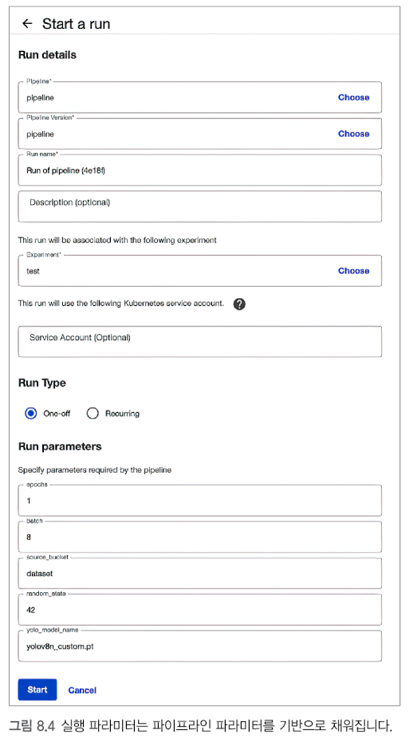
그림 해설 (이미지 68) — KFP 화면의 Start a run(실행 시작) 폼입니다. 위쪽 Run details 에는 Pipeline · Pipeline Version · Run name(Run of pipeline (4e18f)) · Experiment(test) · Service Account(선택) 칸이 있고, 가운데 Run Type 은 One-off(한 번만 실행)가 선택돼 있으며 Recurring 은 주기 실행입니다. 맨 아래 Run parameters 에 epochs 1 · batch 8 · source_bucket dataset · random_state 42 · yolo_model_name yolov8n_custom.pt 가 이미 채워져 있습니다. 여기서 확인할 점은 파이프라인 함수의 인자가 자동으로 입력칸이 된다는 것입니다. 초보자라면 Start 를 누르기 전에 epochs·batch 값이 의도한 값인지 한 번 보세요. 이 화면의 source_bucket 은 Listing 8.14 의 파라미터 목록에 없는데, 책 화면은 코드와 구성이 약간 다른 판의 화면입니다(어느 판인지는 확인 못함).
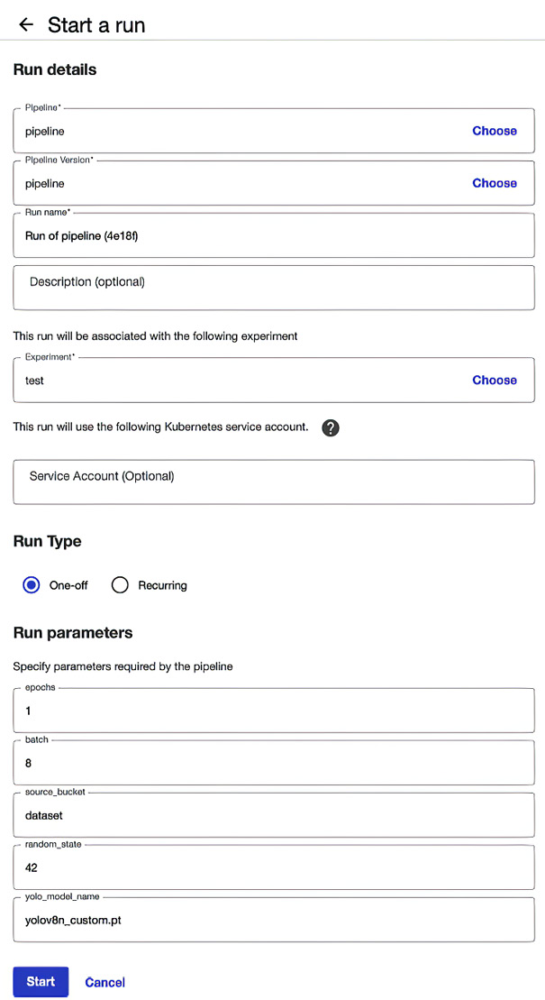
그림 해설 (이미지 69) — 위와 같은 그림의 원본(영문 캡션) 고해상도 판입니다. 입력칸 이름(epochs, batch, source_bucket, random_state, yolo_model_name)을 더 또렷하게 읽을 수 있습니다. 내용은 이미지 68 과 같습니다.
파이프라인의 결과 토폴로지(topology)는 컴포넌트 간 데이터 의존성을 시각적으로 보여줍니다(그림 8.5).
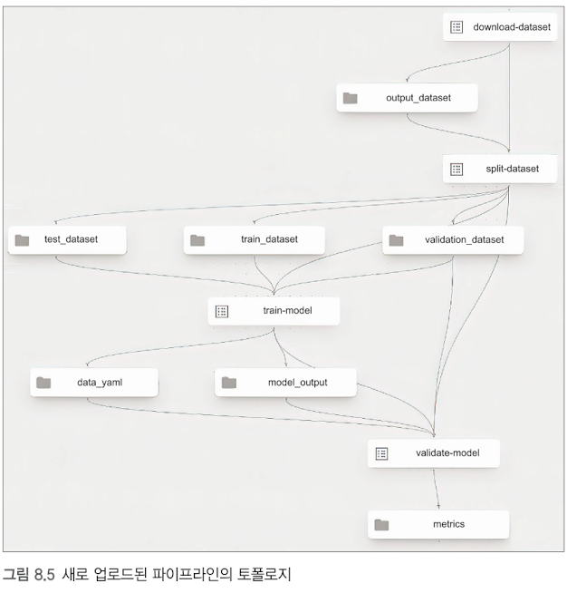
그림 해설 (이미지 70) — 실행하기 전의 구조도입니다(모든 노드가 회색). 위에서 아래로 download-dataset → output_dataset → split-dataset → (test_dataset, train_dataset, validation_dataset) → train-model → (data_yaml, model_output) → validate-model → metrics 로 흐릅니다. 네모 칸 아이콘이 컴포넌트(작업), 폴더 아이콘이 아티팩트(주고받는 데이터)입니다. 확인할 점: split-dataset 에서 validate-model 로 곧바로 내려가는 선이 있습니다. Listing 8.14 에서 validation_dataset 을 분할 단계에서 검증 단계로 직접 넘겼기 때문입니다.
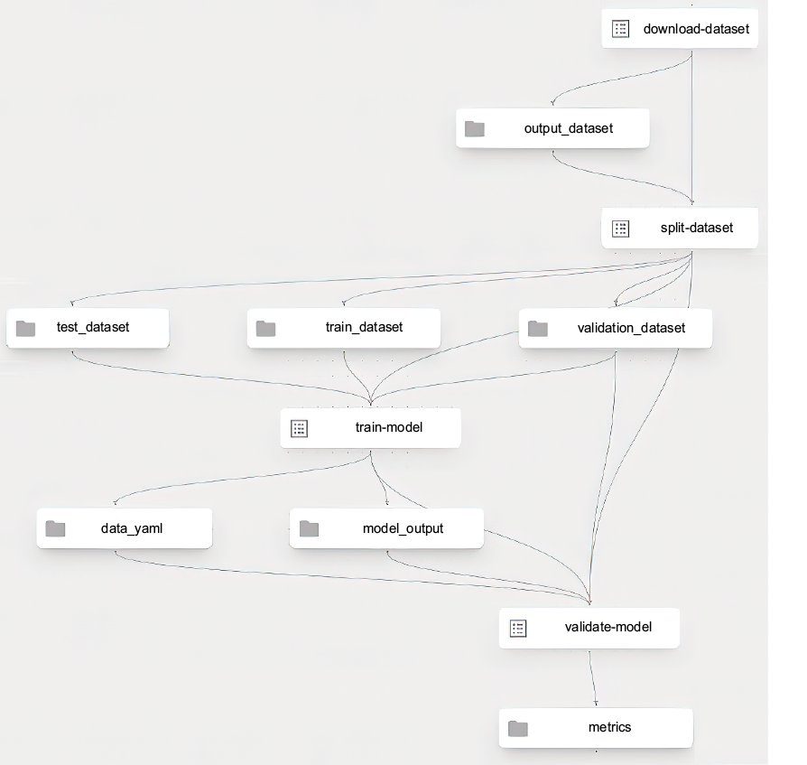
그림 해설 (이미지 71) — 같은 토폴로지의 원본(영문 캡션) 판입니다. 이미지 70 보다 큼직해서 선이 몇 갈래로 모이는지 세기 쉽습니다. 특히 train-model 으로 3개 선(test · train · validation 데이터)이 모이고 validate-model 로는 3개(data_yaml, model_output, 그리고 분할에서 직접 오는 validation_dataset)가 모입니다.
제공된 데이터셋을 사용하는 경우, 쿠버네티스 클러스터에서 한 에포크 처리하는 데 약 1시간이 소요됩니다. 더 많은 에포크로 실행해도 무방하지만, 학습 목적으로는 에포크 하나로 충분합니다. 물론 환경에 따라 소요 시간이 다를 수 있으니, 작업에 얼마나 걸릴지 미리 파악해 두는 것이 좋습니다. 울트라리틱스 라이브러리는 모델 훈련 중에 다음과 같이 상당한 양의 정보를 출력합니다.
- 총 계층 수와 파라미터 수를 포함한 모델 요약이 담긴 모델 아키텍처 (Model architecture, including a model summary that includes the total number of layers and parameters)
- 사전 훈련된 가중치 사용 여부 및 옵티마이저(optimizer) 종류 등 훈련 설정 (Training setup, such as using pretrained weights and which optimizer is used)
- 이미지 수 및 손상된 이미지 수 등 데이터셋 정보 (Dataset information, such as number of images and number of corrupted images)
- 현재 에포크, GPU 메모리 사용량, 손실 지표, mAP 등의 평가 지표를 포함한 훈련 진행 상황 (Training progress, such as the current epoch, how much GPU memory is being used, loss metrics, and evaluation metrics such as mAP)
- 훈련 단계당 소요 시간 및 남은 예상 시간 등 훈련 속도 (Training speed, such as time per training step and the estimated time remaining)
🧒 초보자 설명 — 학습 로그, 어디를 볼까
| 로그에 나오는 것 | 무엇을 알려 주나 | 이럴 때 확인 |
|---|---|---|
| 모델 구조 요약 (계층 수·파라미터 수) | 어떤 크기의 모델인지 | 의도한 크기(nano)가 맞는지 |
| 훈련 설정 (사전학습 가중치·optimizer) | 어떤 방식으로 배우는지 | 설정이 의도와 같은지 |
| 데이터셋 정보 (이미지 수·손상 이미지 수) | 데이터가 제대로 읽혔는지 | 이미지 수가 기대와 다르거나 손상 이미지가 많을 때 |
| 훈련 진행 (에포크·손실·mAP) | 점점 나아지는지 | 손실이 안 내려가거나 mAP 가 안 오를 때 |
| 훈련 속도 (단계당 시간·남은 시간) | 얼마나 더 걸리는지 | 예상보다 너무 느릴 때 |
본문은 "GPU 메모리 사용량"을 언급하지만 원격 kind 클러스터 book-env 는 x86 CPU 서버(16코어, GPU 없음)였습니다. 환경에 따라 해당 항목은 0 이거나 표시되지 않을 수 있습니다.
그림 8.6의 다이어그램은 우리가 기다려온 결과물, 즉 모든 컴포넌트가 성공적으로 실행된 모습을 보여줍니다. 여기서도 데이터 의존관계가 표현되어 있음을 다시 한번 확인할 수 있습니다. split-dataset 컴포넌트의 파라미터가 validate-model 에서 사용되기 때문에 두 컴포넌트 사이에 연결선이 존재합니다.
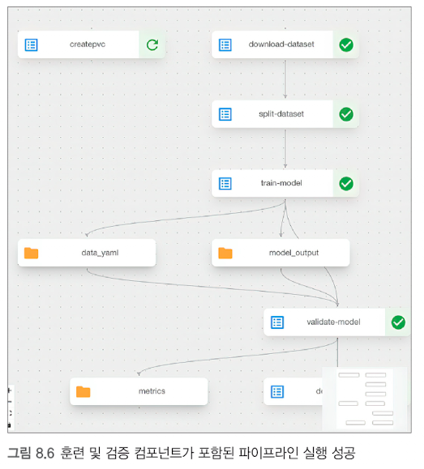
그림 해설 (이미지 72) — 실행이 끝난 그래프입니다. download-dataset · split-dataset · train-model · validate-model 네 노드에 초록 체크(✓)가 있고, train-model 아래에 data_yaml 과 model_output 이, validate-model 아래에 metrics 가 이어집니다. 왼쪽 위의 createpvc 노드는 체크(✓)가 아니라 원형 화살표(↻) 아이콘이고, 오른쪽 아래 노드는 de… 로 이름이 잘린 데다 우측 하단 미니맵에 가려 있습니다. 따라서 "모든 노드가 초록 완료"라고 읽지 않습니다. createpvc 는 Listing 8.14 에 없는 노드로, 책 화면은 PVC 가 추가된 다른 구성입니다(계보는 확인 못함). 잘린 노드의 이름과 원형 화살표가 정확히 무슨 상태인지도 확인하지 못했습니다.
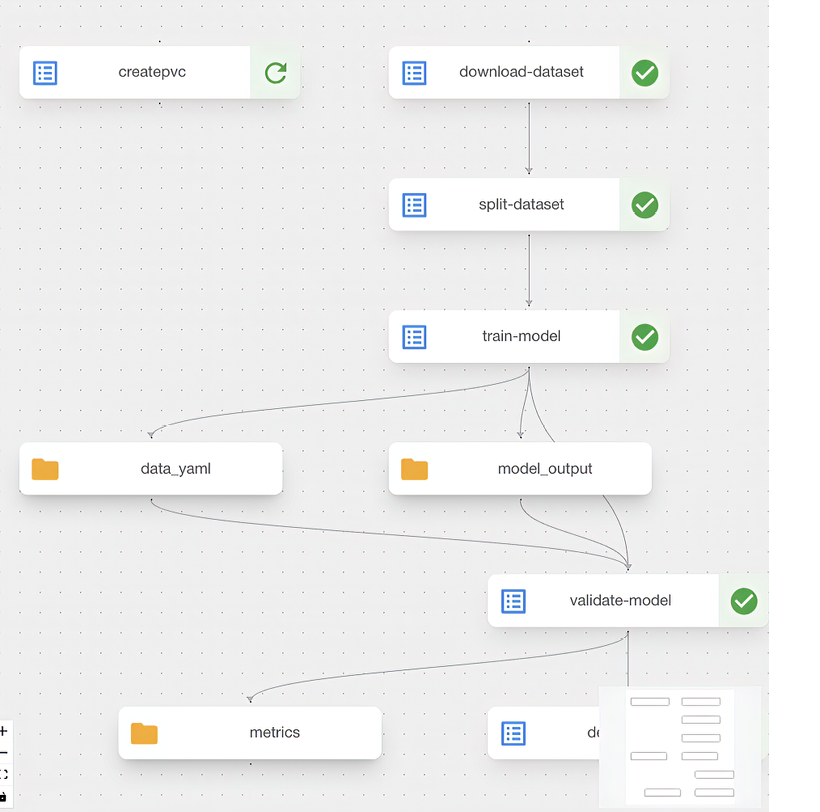
그림 해설 (이미지 73) — 같은 실행 그래프의 원본(영문 캡션) 판입니다. 이미지 72 와 같은 구성이며, 왼쪽 아래의 확대/축소 도구와 오른쪽 아래의 미니맵이 더 크게 보입니다. 큰 그래프에서는 미니맵으로 전체 위치를 파악합니다.
Run output 탭을 클릭하면 그림 8.7과 같이 지표를 확인할 수 있습니다.
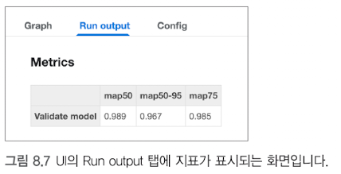
그림 해설 (이미지 74) — 위쪽 탭 Graph · Run output · Config 중 Run output 이 선택돼 있고, Metrics 표에 한 행 Validate model 이 있으며 열은 map50 0.989 · map50-95 0.967 · map75 0.985 입니다. 이 값은 책 화면의 예시이고 book-env 의 실측(예: mAP50-95 0.8317 / mAP50 0.9772 / mAP75 0.9596)과 다릅니다. 책 화면의 값은 책 쪽 실행에서 나온 예시이므로, 데이터·설정·버전이 다르면 값도 달라집니다. 내 값이 책과 달라도 정상이며, 숫자가 같은지보다 지표 이름이 열로 나오는지를 보세요. 확인할 점: 컴포넌트가 metrics.log_metric("map50", ...) 로 적은 이름이 표의 열 이름이 된다는 것, 그리고 map50 ≥ map75 ≥ map50-95 순서입니다(0.989 ≥ 0.985 ≥ 0.967).
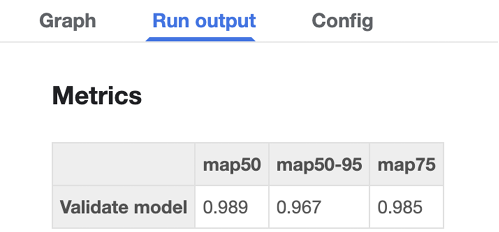
그림 해설 (이미지 75) — 같은 표의 원본 판입니다. 탭 위치(Graph / Run output / Config)와 표가 더 또렷합니다. 값은 이미지 74 와 동일합니다.
Output artifacts 영역(그림 8.8)에서 원시 지표도 확인할 수 있습니다.
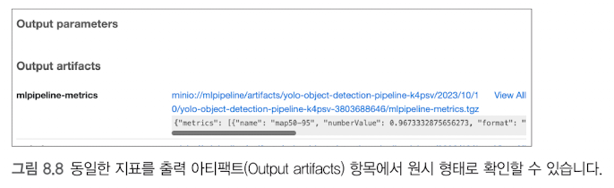
그림 해설 (이미지 76) — 화면의 Output artifacts 아래 mlpipeline-metrics 항목입니다. 오른쪽에 View All 링크가 있고, 보관 위치가 minio://mlpipeline/artifacts/yolo-object-detection-pipeline-k4psv/2023/10/10/…/mlpipeline-metrics.tgz 형태의 경로로 적혀 있습니다. 그 아래 회색 상자에는 {"metrics": [{"name": "map50-95", "numberValue": 0.9673332875656273, "format": "… 처럼 JSON 원문이 보입니다. 같은 지표를 표(그림 8.7)가 아닌 기계가 읽는 원시 형태로 보여 주는 화면입니다. name 이 지표 이름, numberValue 가 값입니다. 이 경로의 날짜 2023/10/10 같은 형태는 책 화면의 보관 경로 형식이며, book-env 의 경로(…/mlpipeline/v2/artifacts/<pipeline>/<run>/…)와는 다릅니다.
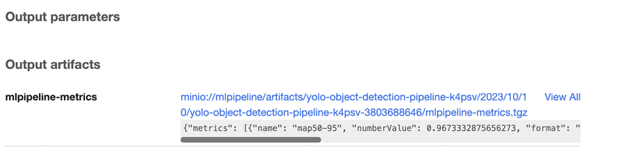
그림 해설 (이미지 77) — 같은 화면의 원본 판입니다. Output parameters / Output artifacts 제목과 mlpipeline-metrics, JSON 첫머리의 0.9673332875656273 이 선명합니다. 해설은 이미지 76 과 같습니다.
아티팩트 이야기가 나온 김에, 이제 이를 본격적으로 활용할 최적의 시점입니다! 다음 절에서는 모델 훈련 중 생성된 아티팩트를 다운로드하고, 훈련된 YOLO 모델 가중치를 로컬에 로드하거나 배포에 활용하는 방법을 살펴봅니다(이후의 장에서 다룹니다). 마지막으로 Pipeline Overview 페이지로 이동하면 지표가 이제 목록에 표시된 것을 확인할 수 있습니다.
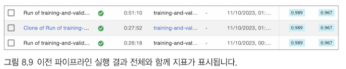
그림 해설 (이미지 78) — 실행(Run) 목록 표 3행입니다. 각 행은 이름(Run of training-and-valid…, 가운데 행은 Clone of Run of training-…), 상태(초록 체크), 소요 시간(0:51:10, 0:27:52, 0:26:18), 파이프라인 버전, 날짜(11/10/2023), 그리고 오른쪽 두 열의 지표(0.989, 0.967, 파란 배경) 입니다. 확인할 점: 지표가 목록에 열로 붙으면 여러 번 실행한 결과를 한 화면에서 비교할 수 있고, 소요 시간 열과 나란히 보여 비용 대비 효과를 가늠하기 좋습니다. 세 행의 지표 값이 같게 보이는 것은 화면 표기 그대로입니다. Clone 으로 시작하는 이름은 이전 실행을 복제해 다시 돌린 실행입니다.
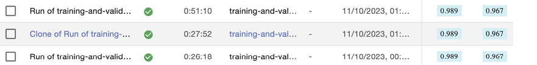
그림 해설 (이미지 79) — 위 목록의 원본 판입니다. 내용은 이미지 78 과 같습니다.
다음 절에서는 모델 아티팩트를 저장하는 것이 얼마나 유용한지 살펴봅니다. 대표적인 활용 사례로, 큐브플로에서 학습된 모델의 가중치를 로컬 머신에 불러오는 경우를 들 수 있습니다.
flowchart LR A["Start a run<br/>그림 8.4"] --> B["토폴로지 확인<br/>그림 8.5"] B --> C["실행 중 로그<br/>모델 구조 설정 데이터 진행 속도"] C --> D["성공 그래프<br/>그림 8.6"] D --> E["Run output 탭 지표 표<br/>그림 8.7"] D --> F["Output artifacts 원시 JSON<br/>그림 8.8"] E --> G["Run 목록에서 여러 실행 비교<br/>그림 8.9"]
⚠ 원문 정정: ① 본문의 "한 에포크에 약 1시간"은 책 환경 기준입니다. book-env(실습 D, CPU 16코어, epochs 1 · batch 8)는 단계별 911 / 471 / 1512 / 269초(단순 합 3,163초)이고 전체는 53분 33초 = 3,213초입니다. 합계와의 약 50초 차이는 스케줄링 등 단계 사이 시간으로 추정되나 원인은 확인하지 못했습니다. 학습 로그의0.357 hours(약 21.4분)는 학습 중 검증까지 포함한 값이며 파드 전체 시간(1512초)에는 데이터 전송·설치·업로드가 더 들어 있습니다. ② 초록 체크는 태스크가 성공으로 끝났다는 뜻이지 모델 품질(높은 mAP)이나 모든 산출물 보존을 뜻하지 않습니다. ③ 그림 8.6~8.9 의 책 화면(2023년 날짜,createpvc노드,mlpipeline-metrics.tgz경로)은 이 장의 Listing 과 구성이 달라 정확한 SDK 판이나 작성 시점은 단정하지 않습니다.
🔢 숫자로 보기
| 항목 | 값 | 출처 |
|---|---|---|
| 기본 파라미터 | epochs 1 · batch 8 · random_state 42 · yolo_model_name yolov8n_custom |
Listing 8.14 |
| 그림 8.7 지표 | map50 0.989 · map50-95 0.967 · map75 0.985 | 책 화면 |
| 그림 8.9 소요 시간 | 0:51:10 · 0:27:52 · 0:26:18 | 책 화면 |
| book-env D 단계별 | 911 · 471 · 1512 · 269초 (합 3,163초), 전체 3,213초 | book-env |
| 학습 로그 | 0.357 hours ≈ 21.4분 | book-env |
⚠ 흔한 오해
- "초록 체크 = 모델이 좋다" → 태스크가 에러 없이 끝났다는 뜻입니다.
- "책의 1시간은 내 환경에서도 1시간" → 하드웨어 · 데이터 전송 · 이미지 pull 에 따라 크게 달라집니다.
- "Run output 표의 숫자가 영구 보관된다" → 표는 화면이고, 원시 JSON 은 아티팩트 저장소에 파일로 남습니다.
runs/같은 학습 부산물은 별도로 올리지 않으면 파드 종료와 함께 사라집니다. - "내 지표 값이 책 그림과 다르면 잘못 실행한 것" → 아닙니다. 책 그림은 다른 실행의 예시이고, 데이터·epoch·버전이 다르면 값이 달라지는 것이 정상입니다.
8.1.7 모델 아티팩트 검증하기 (1) — 학습 전 모델과 학습 후 모델 비교
8.1.7 모델 아티팩트 검증하기 (1) — 학습 전 모델과 학습 후 모델 비교 — Validating model artifacts
파이프라인에서의 자동화된 검증도 중요하지만, 개발 및 디버깅 과정에서 모델 동작을 직접 수동으로 살펴보면 유용한 인사이트를 얻을 수 있습니다. 이 방법을 활용하면 다음과 같은 작업을 수행할 수 있습니다.
- 특정 테스트 케이스에서 모델 동작을 검증합니다. (Verify model behavior on specific test cases.)
- 예상치 못한 모델 출력을 디버깅합니다. (Debug unexpected model outputs.)
- 이해관계자에게 모델 기능을 시연합니다. (Demonstrate model capabilities to stakeholders.)
- 훈련 파이프라인에 대한 신뢰를 구축합니다. (Build confidence in your training pipeline.)
모델이 제대로 동작하는지 스스로 확인하는 것이 매우 중요합니다. "신뢰하되, 검증하라"는 격언은 꼭 기억하십시오. 운영화를 위해 모델을 넘겨받았지만 한참이 지나서야 제대로 동작하지 않는다는 사실을 발견하는 경험을 우리는 여러 번 해봤습니다.
🧒 초보자 설명
- 8.1.4~8.1.6 의 자동 검증은 숫자(mAP)로 채점합니다. 여기서는 사람이 눈으로 같은 사진에 박스가 어떻게 그려지는지 봅니다. 숫자가 좋아도 눈으로 보면 이상한 경우가 있고, 반대로 눈으로 보면 한 번에 이해되는 문제가 많기 때문입니다.
- 비교 방법은 같은 사진 · 같은 코드, 가중치만 교체입니다. ① 아직 신분증을 배우지 않은 기본 yolov8n → ② KFP 로 학습한 best.pt.
- 기본 모델은 COCO 라는 일반 데이터로 사전 훈련되어 사람·책·휴대전화 등은 알지만
id_card라는 이름은 모릅니다. 그래서 신분증을 엉뚱한 이름으로 부르게 됩니다.
먼저 신분증 탐지 훈련이 되지 않은 모델로 추론을 실행해 보겠습니다. 대신, 범용 사전 훈련 YOLO 모델이 훈련한 객체를 그대로 사용할 것입니다.
리스트 8.15는 기본 YOLO 모델을 사용합니다. 파일명 yolov8n 에서 'n'은 나노 버전을 사용함을 나타내며, 이는 우리가 훈련한 모델과 동일한 아키텍처입니다. samples 라는 폴더를 만들고 샘플 이미지를 여러 장 넣어두겠습니다. 가급적이면 모델이 훈련하지 않은 이미지를 사용하는 것이 좋은데, 일반적인 테스트 세트를 구성할 때와 동일한 방식입니다. 디렉터리 내 각 이미지를 모델에 입력한 뒤 결과를 출력합니다. 디렉터리에 이미지가 두 장 이상 있다면 아무 키나 눌러 다음 이미지로 넘어갈 수 있습니다.
Listing 8.15 — 기본 나노 모델로 추론 실행하기
원문 코드입니다.
# Listing 8.15 Running inference with the default Nano model - 기본 나노 모델로 추론 실행하기
import glob
import cv2
from ultralytics import YOLO
model = YOLO("yolov8n.pt") # 기본(나노) 가중치로 모델을 초기화한다
for file in glob.glob("samples/**.jpg"): # 디렉터리 내 모든 JPEG 파일을 순회한다
result = model(cv2.imread(file))
res_plotted = result[0].plot() # 탐지 결과를 cv2에서 읽을 수 있는 형식으로 변환한다.
cv2.imshow("result", res_plotted) # 해당 이미지를 창에 표시힌다.
cv2.waitKey(0)
줄별 설명
| 코드 | 하는 일 |
|---|---|
import glob / import cv2 / from ultralytics import YOLO |
파일 목록 도구, 이미지 읽기·표시 도구(OpenCV), YOLO 클래스. |
model = YOLO("yolov8n.pt") |
기본 나노 모델의 가중치(yolov8n.pt)로 모델 생성. 파일이 없으면 라이브러리가 내려받습니다. |
for file in glob.glob("samples/**.jpg"): |
samples 폴더의 .jpg 파일을 하나씩 순회. |
result = model(cv2.imread(file)) |
이미지를 읽어(imread) 모델에 넣어 추론. 결과는 리스트. |
res_plotted = result[0].plot() |
첫 번째 결과에 박스·라벨·신뢰도를 그린 이미지(numpy 배열)를 만듭니다. |
cv2.imshow("result", res_plotted) |
그 이미지를 result 라는 창에 표시. |
cv2.waitKey(0) |
키를 누를 때까지 대기 → 키를 누르면 다음 이미지로. |
⚠ 원문 정정: ① 파일 확장자 불일치 — Listing 8.15 는samples/.jpg, 8.16 은samples/.png로 쓰여 있어 두 모델이 같은 샘플을 보지 않습니다. 비교가 성립하려면 두 코드의 확장자를 맞추세요. ② 헤드리스 환경 —cv2.imshow는 화면(창)이 필요합니다. 원격 서버나 파드처럼 화면이 없는 곳에서는 실패하므로 이미지를 파일로 저장(cv2.imwrite)하세요. 원문 노트도 같은 이유로 파일 저장을 택했습니다. ③패턴 —glob의는recursive=True가 없으면*처럼 한 단계만 봅니다(실행해 확인하지는 못했습니다). 하위 폴더까지 찾으려면recursive=True가 필요합니다. ④ 원문 주석의 "표시힌다"는 오타입니다("표시한다").
고친 코드 — 미실행 예시
화면 없이 파일로 저장하고, 확장자를 jpg/png 모두 처리합니다. 실행해 확인하지 못한 예시이므로 환경에 따라 다를 수 있습니다.
# 미실행 예시 — Listing 8.15 개선판 (헤드리스 가능)
import glob
import os
import cv2
from ultralytics import YOLO
os.makedirs("out_default", exist_ok=True)
model = YOLO("yolov8n.pt") # 기본(나노) 가중치
files = sorted(glob.glob("samples/*.jpg") + glob.glob("samples/*.png")) # 두 확장자 모두
for file in files:
result = model(cv2.imread(file))
res_plotted = result[0].plot()
cv2.imwrite(os.path.join("out_default", os.path.basename(file)), res_plotted) # 창 대신 파일 저장
코드를 실행하면 그림 8.10과 같은 결과를 확인할 수 있습니다.
그림 해설 (이미지 80) — 뉴질랜드 운전면허증 사진에 기본 모델이 그린 결과입니다. 사진 가장자리를 거의 둘러싼 파란 큰 박스에 book 0.28(왼쪽 위), 큰 얼굴에 빨간 박스 person 0.79, 오른쪽 아래 작은 얼굴에 person 0.55 가 붙어 있습니다. 그림이 보여주는 것은 학습 전 모델의 한계입니다. 얼굴은 사람으로 맞게 찾았지만, 정작 찾고 싶은 신분증 카드는 book(책)이라는 엉뚱한 이름에 낮은 점수 0.28 이 붙었습니다. 여기서 확인할 것: 라벨 옆 숫자(신뢰도)가 0.79 와 0.28 로 크게 다르다는 점, 박스 색이 클래스마다 다르다는 점입니다.
그림 해설 (이미지 81) — 같은 그림의 원본(영문 캡션) 고해상도 판입니다. 박스 색(빨강 = person, 파랑 = book)과 라벨 book 0.28, person 0.79, person 0.55 가 또렷합니다. 내용은 이미지 80 과 같습니다.
먼저 두 가지를 확인할 수 있습니다.
- 모델은 얼굴을 탐지하고 해당 객체를 사람으로 분류했습니다.
- 모델은 신분증을 책으로 분류(좌측 상단)했지만, 신뢰도는 낮았습니다.
객체 탐지 모델의 출력 결과를 살펴보면, 탐지된 각 객체에 숫잣값이 함께 표시되는 것을 확인할 수 있습니다. 이 숫자는 해당 객체에 대한 모델의 신뢰도를 나타냅니다. 각 탐지에 대한 점수는 0에서 1 사이의 값을 가집니다. 점수가 1에 가까울수록 높은 신뢰도를 나타내며, 0에 가까울수록 낮은 신뢰도를 의미합니다.
예를 들어 운전면허증 이미지에서 Book(책)으로 탐지된 항목의 신뢰도는 0.28로, 비교적 낮은 확신도를 나타냅니다. 반면, 더 크게 탐지된 Person(사람) 항목의 신뢰도는 0.79로 훨씬 높아, 모델이 이 식별 결과를 상당히 확신하고 있음을 보여줍니다. 이러한 신뢰도 점수는 각 탐지 결과의 신뢰성을 파악하는 데 매우 중요하며, 특정 애플리케이션의 요구에 따라 불확실한 예측을 걸러내는 용도로 활용할 수 있습니다.
보충 설명: 신뢰도(confidence)는 모델이 스스로 매기는 점수이며 0.79 가 "79% 확률로 맞다"는 보장은 아닙니다. 걸러내는 기준선(예: 0.25)은 사용자가 정하며 원격 kind 클러스터 book-env 의 추론 비교는 conf ≥ 0.25 를 썼습니다.
카드를 책으로 잘못 분류했음에도 불구하고, 경계 상자(bounding box)는 올바르게 표시되었습니다. 이제 KFP로 훈련한 모델 가중치로 전환해 보겠습니다. 파이프라인 실행이 성공적으로 완료되면, Output artifacts 섹션으로 이동하여 프로젝트의 tar 아키이브를 다운로드하십시오(그림 8.11).
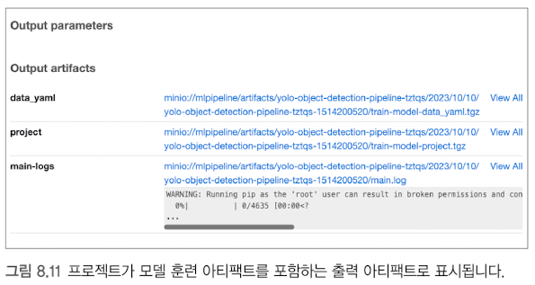
그림 해설 (이미지 82) — Output artifacts 목록에 3개 항목이 있습니다: data_yaml(…/train-model-data_yaml.tgz), project(…/train-model-project.tgz), main-logs(…/main.log, 아래 회색 상자에 pip 경고와 0/4635 진행 표시). 각 항목의 오른쪽 View All 로 목록을 펼칩니다. 책의 설명대로면 project 의 tar 를 내려받아 풀면 학습 부산물(weights/best.pt 등)이 나옵니다. 보관 경로의 날짜 2023/10/10 형태는 책 화면의 것입니다.
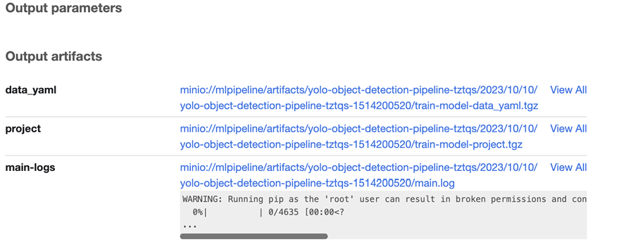
그림 해설 (이미지 83) — 같은 목록의 원본(영문 캡션) 판입니다. data_yaml · project · main-logs 세 항목과 로그 미리보기가 더 크게 보입니다. 내용은 이미지 82 와 같습니다.
⚠ 원문 정정: 책은project아티팩트(project.tgz)를 내려받아best.pt를 꺼내라고 설명하고, 훈련 중 만들어지는 혼동 행렬 · PR 곡선 · 추론 샘플 그림도 프로젝트 경로에 저장된다고 말합니다. 그러나 book-env 의 KFP 컴포넌트가 아티팩트로 올린 것은model_output/best.pt와data_yaml/data.yaml뿐이고runs/폴더는 파드가 끝나면 사라졌습니다. 즉 이 실습에서는project.tgz대신 저장소 화면에서best.pt를 바로 내려받습니다(아래 이미지 84). "KFP 가 학습 부산물을 자동으로 보존한다"고 읽지 마세요. 부산물을 남기려면Output[Artifact]로 폴더를 올리는 코드를 직접 추가해야 합니다. 아래는 보충 설명으로 덧붙인 제안 예시이며 실행해 확인하지 못했습니다.
# 미실행 예시 — 학습 컴포넌트 끝에서 runs/ 폴더를 아티팩트로 보존하는 아이디어
# (함수 시그니처에 project_output: Output[Artifact] 를 추가했다고 가정)
import shutil
shutil.copytree("runs", project_output.path, dirs_exist_ok=True)
# 주의: runs/detect/<name> 은 재실행 때 <name>2, <name>3 ... 으로 늘어나므로
# best.pt 의 정확한 경로는 소스를 확인하거나 학습 객체의 경로 속성으로 얻어야 합니다(미확인).
압축 파일을 해제한 뒤 best.pt 파일을 찾아 편한 위치에 복사합니다. 리스트 8.16과 같이 해당 경로를 best.pt 로 교체하고 코드를 다시 실행합니다.
Listing 8.16 — 최적 훈련 가중치로 실행하기
원문 코드입니다.
# Listing 8.16 Run with the best-trained weights - 최적 훈련 가중치로 실행하기
import glob
import cv2
from ultralytics import YOLO
model = YOLO("weights/best.pt") # 경로를 best.pt 를 가리키도록 수정한다.
for file in glob.glob("samples/**.png"):
result = model(cv2.imread(file))
res_plotted = result[0].plot()
cv2.imshow("result", res_plotted)
cv2.waitKey(0)
줄별 설명
| 코드 | 하는 일 |
|---|---|
model = YOLO("weights/best.pt") |
기본 가중치 대신 KFP 가 학습한 가중치를 로드. 경로는 내려받은 파일의 실제 위치로 고칩니다. |
for file in glob.glob("samples/**.png"): |
이번에는 .png 를 순회(8.15 는 .jpg) → 확장자가 달라 같은 샘플이 아닐 수 있음. |
result = model(cv2.imread(file)) ~ cv2.waitKey(0) |
8.15 와 동일: 읽기 → 추론 → 그리기 → 표시 → 키 대기. |
그 밖의 구조는 8.15 와 한 줄만 다르고(yolov8n.pt → weights/best.pt) 나머지는 같습니다. 같은 코드에서 가중치만 바꾸는 것이 이 비교의 핵심입니다.
고친 코드 — 미실행 예시
# 미실행 예시 — Listing 8.16 개선판 (헤드리스 가능, 8.15 와 같은 샘플 사용)
import glob
import os
import cv2
from ultralytics import YOLO
os.makedirs("out_trained", exist_ok=True)
model = YOLO("weights/best.pt") # <BEST_PT_PATH> 로 교체: 내려받은 best.pt 의 실제 경로
files = sorted(glob.glob("samples/*.jpg") + glob.glob("samples/*.png"))
for file in files:
result = model(cv2.imread(file))
res_plotted = result[0].plot()
cv2.imwrite(os.path.join("out_trained", os.path.basename(file)), res_plotted)
🔧 본인 환경에 맞게 교체:<BEST_PT_PATH>= 원문 예시값weights/best.pt, 내려받은best.pt가 있는 경로. 확인:ls -l <BEST_PT_PATH>. book-env 에서best.pt의 크기는 약 6.5MB 였습니다.
Mac M2 / Linux 에서 실행할 때
- Mac M2 / Linux 공통: 파이썬 3.11 환경에서
pip install ultralytics opencv-python(zsh 는 대괄호가 있는 패키지를 쓸 때pip install 'pkg[extra]'로 따옴표). 로컬 PC 에서는cv2.imshow창이 열릴 수 있지만, 화면 없는 서버에서는 위 개선판처럼 파일로 저장하세요. - 시스템 라이브러리(
libgl1등)가 없으면 OpenCV 가ImportError를 낼 수 있습니다. 이 경우 컨테이너 이미지에서 설치하거나opencv-python-headless사용을 고려하세요. (보충 설명, 실행해 확인하지 못했습니다)
best.pt 의 위치를 모를 때 저장소(SeaweedFS Filer) 화면에서 직접 찾을 수 있습니다. 아래는 원격 kind 클러스터의 저장소에서 best.pt 를 찾은 화면입니다.
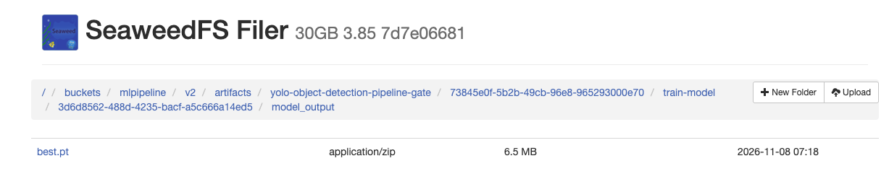
그림 해설 (이미지 84) — 오브젝트 저장소 SeaweedFS Filer 의 파일 목록입니다. 위쪽 경로가 /buckets/mlpipeline/v2/artifacts/<pipeline>/<run-id>/train-model/<exec-id>/model_output 구조로 이어지고, 그 안에 파일 best.pt (application/zip 표시, 6.5 MB, 수정 시각 2026-11-08 07:18)가 있습니다. 읽는 법: 폴더 계층이 버킷 → mlpipeline → v2 → artifacts → 파이프라인 이름 → 실행(run) ID → 태스크 이름(train-model) → 실행 ID → 출력 이름(model_output) 이며, 책의 "tar 다운로드"를 대신하는 저장소 UI 직접 내려받기 방법입니다. 6.5MB 는 나노 모델에 어울리는 작은 크기입니다. MIME 이 application/zip 으로 표시되지만 파일은 .pt 가중치로 쓰입니다(표시만의 차이로 보이나 내부 형식은 따로 확인하지 않았습니다). 경로에 보이는 ID 값은 실행마다 달라지는 값입니다.
8.1.7 모델 아티팩트 검증하기 (2) — 에포크·best.pt·자동화
8.1.7 모델 아티팩트 검증하기 (2) — 에포크 · best.pt · 자동화 — Validating model artifacts
이어서 학습한 가중치로 같은 사진을 추론한 결과를 봅니다.
모델 훈련이 실제로 동작한다는 것을 확인하기 위해, 그림 8.12에 단 한 에포크의 모델 훈련 결과를 나타냈습니다.
그림 해설 (이미지 85) — 같은 뉴질랜드 면허증 사진 위에 빨간 박스 하나와 라벨 id_card 0.62(왼쪽 위)가 그려져 있습니다. 이제 카드를 book 이 아닌 id_card 로 분류했고(클래스가 맞음), 신뢰도는 0.62 입니다. 다만 박스가 카드의 오른쪽 약 2/3 만 덮고 왼쪽 부분과 위쪽 일부가 잘려 있습니다. 확인할 것: 분류는 성공했지만 위치(박스)는 아직 부정확하다는 점입니다. 이 결과는 딱 1 epoch 훈련한 가중치입니다.
그림 해설 (이미지 86) — 같은 결과의 원본(영문 캡션) 고해상도 판입니다. 라벨 id_card 0.62 와 박스의 왼쪽 가장자리가 카드 안쪽(얼굴 사진 오른쪽 부근)에서 시작하는 것이 또렷하게 보입니다. 해설은 이미지 85 와 같습니다.
결과가 완벽하지는 않지만, 분명 기대할 만합니다! 경계 상자도 썩 좋지는 않지만, 적어도 카드의 대부분을 감싸고 있습니다. 더 중요한 것은 신원도 올바르게 분류했다는 점입니다!
훈련을 조금 더 진행하며(약 다섯 에포크) 훨씬 나은 결과를 얻을 수 있었습니다! 경계 상자가 신분증을 완전히 덮을 뿐만 아니라, 신뢰도(confidence)도 상당히 양호합니다(그림 8.13 참고). 이는 추가 훈련을 통해 가중치와 편향을 파인튜닝함으로써 모델의 성능을 다듬을 수 있기 때문입니다.
그림 해설 (이미지 87) — 같은 사진에 이번에는 id_card 0.94 라벨의 빨간 박스가 카드 전체를 둘러쌉니다. 1 epoch(0.62)에서 약 5 epoch 로 늘리자 신뢰도가 0.62 → 0.94, 박스도 카드 전체를 덮는 쪽으로 좋아졌습니다. 확인할 것: 박스는 카드를 다 포함하지만 카드 테두리와 정확히 일치하는 것은 아니고 바깥 여백도 일부 포함합니다. 그리고 이 약 5 epoch 결과(그림 8.13)는 실습 F-2 의 3 epoch 지표(test mAP50-95 0.9853)와 서로 다른 자료이니 한 줄로 이어 비교하지 않습니다.
그림 해설 (이미지 88) — 같은 결과의 원본(영문 캡션) 판입니다. 라벨 id_card 0.94 가 왼쪽 위에 선명하고, 빨간 박스가 카드 바깥 여백까지 포함해 사진 가장자리 가까이 닿아 있습니다. 해설은 이미지 87 과 같습니다.
flowchart LR A["기본 yolov8n<br/>book 0.28"] -->|"신분증 데이터 1 epoch 학습"| B["id_card 0.62<br/>박스 일부만"] B -->|"약 5 epoch 학습"| C["id_card 0.94<br/>카드 전체"]
| 단계 | 그림 | 라벨 · 신뢰도 | 박스 |
|---|---|---|---|
| 학습 전 기본 모델 | 8.10 | book 0.28 (+ person 0.79, person 0.55) |
사진 거의 전체(파란 박스) |
| 1 epoch 학습 | 8.12 | id_card 0.62 |
카드 오른쪽 약 2/3 만 덮음 |
| 약 5 epoch 학습 | 8.13 | id_card 0.94 |
카드 전체 + 여백 |
훈련 과정에 에포크를 더 추가하면, 다음과 같은 핵심 영역에서 개선을 기대할 수 있습니다.
- 모델 정확도 (Model accuracy):
- 훈련 루프를 반복할수록 모델은 패턴을 인식하고 정확한 예측을 내리는 능력이 향상됩니다.
- 신뢰도 (Confidence):
- 모델이 대상 클래스(이 경우 신분증)의 예시를 더 많이 학습할수록, 탐지 결과에 대한 신뢰도가 높아집니다.
- 견고성 (Robustness):
- 더 큰 데이터셋에 모델을 노출시킴으로써, 다양한 조명이나 각도와 같이 변화하는 조건에 대한 견고성을 갖출 수 있도록 도울 수 있습니다.
이 경우, 단 5회의 에포크를 추가하는 것만으로도 상당한 성능 향상을 얻을 수 있었습니다. 다만, 정확히 몇 회의 에포크가 필요한지는 데이터셋의 복잡도와 프로젝트의 구체적인 요구사항에 따라 달라집니다.
🧒 초보자 설명 — 에포크와 best.pt
에포크를 몇 번으로 설정해야 할지 궁금하실 수 있습니다. 울트라리틱스 라이브러리는 검증 성능을 추적하여 가장 성능이 좋은 가중치를 best.pt 로 저장합니다. 100번의 에포크를 훈련하더라도 이 파일이 4번째 에포크의 결과일 수 있는데, 일정 시점 이후 성능이 정체되거나 저하될 수 있기 때문입니다. 핵심은 '충분한' 에포크를 설정하는 것입니다. 에포크를 세 번만 훈련한다면 best.pt는 그 세 번 중 최선의 결과이지만, 여전히 충분히 훈련되지 않은 상태일 수 있습니다.
best.pt 입니다. 기준은 공부에 쓴 문제집(학습 데이터) 점수가 아니라 모의고사(검증 데이터) 점수입니다. 100일 중 4일째가 최고점이었다면, 그 뒤 96일은 더 공부해도 모의고사 점수가 나아지지 않았다는 뜻입니다(문제집을 과하게 외워서 오히려 나빠질 수도 있습니다). 반대로 3일만 봤다면 그 3일 중 최고 점수일 뿐 실력이 다 오른 것은 아닙니다. (일상 비유)best.pt는 검증 성능(fitness, 에포크를 비교할 때 쓰는 종합 점수)이 가장 좋았던 에포크의 가중치이고, 마지막 에포크의 가중치는last.pt로 따로 있습니다. 둘을 혼동하지 않습니다.- 저장 정책 · fitness 식 · 동률 처리 같은 세부는 ultralytics 버전마다 다를 수 있어 소스로 확인해야 합니다.
🔢 숫자로 보기
- 1 epoch 단독 학습의 test mAP50-95 는 0.8097, 3 epoch 은 0.9853 (원격 kind 클러스터 book-env 의 F-2, 8.4.207, test 562장). 그림의 0.62 → 0.94 는 서로 다른 자료의 신뢰도이며 지표(mAP)가 아닙니다.
- 신뢰도 개선 폭: 0.94 − 0.62 = 0.32.
- 100 epoch 을 돌려도 best 가 4번째일 수 있다는 것은 "정체 후 저하" 가능성을 뜻하는 책의 예시 설명입니다.
⚠ 원문 정정: ① 수치는 지표 이름 · 분할(val/test) · 버전을 함께 읽습니다. book-env 의 1 epoch 은 test mAP50-95 0.8097 이고 "1~3 epoch 에서 mAP 0.98 이상" 같은 일반 법칙은 성립하지 않습니다. ② book-env 의 추론 비교(test 562장, conf ≥ 0.25): 검출이 1개 이상인 이미지는 기본 546장(97.2%) · 학습 547장(97.3%), 최상위 클래스가id_card인 건수 547. "정답 위치를 IoU ≥ 0.5 로 찾은 비율 96.3%(기본 84.2%)"는 표에 (클래스 무관) 이라고 적힌 위치 지표이며 "547건을 정확히 탐지"나 "모두 위치까지 정확"으로 읽지 않습니다. 평균 최고 IoU 는 0.816 → 0.880, 평균 신뢰도는 0.653 → 0.849 로 올랐습니다. ③ 박스 정합: 그림 속 박스가 정답 박스와 완전히 같다고 쓰지 않습니다. 원문 노트에서도 정답(초록 박스)과book박스의 색이 헷갈릴 수 있다고 적었습니다.
모델이 정상적으로 작동한다고 확인되면, 이를 자동화하는 방법을 고민해야 합니다. 처음부터, 주어진 데이터셋에 대해 신뢰도가 일정 임계값 이상인지, 경계 상자 좌표가 적절한지를 프로그래밍 방식으로 검증하는 방법을 생각해 두어야 합니다. 정확한 값을 지정하기 어려울 수 있으므로, 일정한 허용 오차(tolerance)를 설정해야 합니다.
🧒 초보자 설명 — 자동화 점검의 예 (실습 F-1 의 게이트)
실습 F-1 의 검증 게이트는 이 문단을 코드로 옮긴 예입니다. 게이트는 아래 6개 조건을 모두 통과해야 성공으로 끝납니다. (임계값은 실습 F-1 에서 정한 값이며, 원문이 이름을 밝힌 파라미터는 min_map50, min_precision 뿐입니다.)
| # | 조건 | 기준 | 뜻 |
|---|---|---|---|
| 1 | mAP50 | ≥ 0.90 | 느슨한 기준의 위치·클래스 정확도 |
| 2 | mAP50-95 | ≥ 0.60 | 엄격한 기준까지 평균 |
| 3 | precision | ≥ 0.90 | 찾았다고 한 것 중 진짜 비율 |
| 4 | 평균 top-1 신뢰도 | ≥ 0.50 (검증 이미지 50장 샘플) | 모델이 자기 답에 얼마나 확신하는지 |
| 5 | 비정상 박스 수 | == 0 (좌표 [0,1], 면적 0.5%~99.5%) | 박스가 사진 밖이거나 너무 작거나 큰 경우 |
| 6 | 검출 없음 이미지 수 | == 0 | 한 개도 못 찾은 사진이 없어야 함 |
실패 시험(min_map50=0.999, min_precision=0.999)은 AssertionError: validation gate failed: mAP50, precision 으로 의도대로 멈췄습니다. 통과는 "태스크 성공"이지 배포 승인이 아닙니다(CH8 에는 배포 단계가 없음). 게이트 판정은 val 값(mAP50 0.9945, mAP50-95 0.9894, precision 0.9987, 평균 top-1 신뢰도 0.9711[50장])입니다.
flowchart TD
A["가중치 best.pt"] --> B["val 데이터로 model.val"]
B --> C{"mAP50 이 0.90 이상?"}
C -->|"아니오"| X["AssertionError 로 중단"]
C -->|"예"| D{"precision 이 0.90 이상?"}
D -->|"아니오"| X
D -->|"예"| E{"박스 신뢰도 개수 조건 통과?"}
E -->|"아니오"| X
E -->|"예"| F["태스크 성공 - 배포 승인은 아님"]지금까지 모델을 훈련하고 추론을 시험해 보는 데 필요한 기본 사항 대부분을 살펴봤습니다. 하이퍼파라미터를 선택하고 조정하는 작업은 반복적인 과정이므로, 일반적으로 가능한한 최소한의 집합에서 시작합니다.
실험 과정에서 이전 훈련 작업의 하이퍼파라미터를 조정함으로써, 사용 사례에 더욱 최적화된 모델을 만들 기회를 찾을 수 있습니다. 예를 들어, 처음 훈련한 모델이 수렴하지 않는 것처럼 보이면 학습률, 배치 크기, 에포크 수를 변경하여 성능을 개선할 수 있습니다. 이 접근 방식을 통해 사용 사례와 요구사항이 발전함에 따라 파라미터 목록을 확장할 수 있습니다.
모델 훈련과 검증을 위한 탄탄한 기초를 마련했지만, 프로덕션 머신러닝 시스템은 잘 훈련된 모델 이상의 것을 필요로 합니다. 강력한 데이터 관리와 포괄적인 실험 추적이 함께 요구되기 때문입니다. 9장에서는 효율적인 데이터 처리를 위해 쿠버네티스 퍼시스턴스 볼륨(PV)을 파이프라인에 통합하고, MLflow와 텐서보드(TensorBoard) 같은 고급 추적 도구를 연결할 것입니다. 이러한 추가 작업은 더욱 확장 가능한 훈련 워크플로를 구축하고, 모델 개발 과정을 더 명확히 파악하는 데 도움이 될 것입니다. 또한 영화 추적 시스템 개발에 이 개념들을 적용하여, 이러한 패턴이 다양한 머신러닝 문제에 어떻게 적응하는지도 살펴볼 것입니다.
보충 설명: 위 문단의 MLflow · TensorBoard 는 CH8 에서 직접 다루지 않고 다음 장(9장)의 내용입니다. 이 장에서 "모델 아티팩트 확인"은 KFP 의 Run output 표, Output artifacts 의 원시 JSON, 저장소에서
best.pt를 직접 내려받아 추론해 보는 것까지입니다.
⚠ 흔한 오해
- "best.pt = 마지막 에포크 결과" → 검증 성능이 가장 좋았던 에포크의 것입니다(마지막은
last.pt). - "에포크를 많이 하면 무조건 좋아진다" → 일정 시점 이후 정체되거나 저하될 수 있습니다.
- "한 장의 사진이 잘 나왔으니 모델이 좋다" → 샘플 사진은 점검용이고, 판단은 검증/테스트 전체 지표와 함께 합니다.
- "confidence 0.94 는 94% 정답" → 모델의 점수일 뿐입니다.
- "
id_card탐지는 신원 확인이다" → 박스와 클래스만 찾을 뿐 글자를 읽지 않습니다.
[실습] 파트 B 개요: D 전체 파이프라인부터 F-2 게이트 통합까지
이 파트의 시간·지표·run 이름은 모두 원격 kind 클러스터 book-env 에서 기록한 과거 실행 결과입니다. 여러분의 클러스터에서 같은 값이 나온다는 보장은 없고, 시간은 네트워크·CPU·디스크에 따라 달라집니다.
이 파트에서 하는 일
앞선 실습 A~C 에서 학습·검증 컴포넌트가 끝까지 도는지 작은 데이터(24/8/8장)로 확인했고, B 방안으로 dsl.importer 고정 경로 데이터도 준비했습니다. 이제 진짜 데이터 전체로 파이프라인을 돌리고, 나온 가중치(best.pt)가 정말 쓸모 있는지 눈으로 보고, 마지막에는 기준 미달이면 스스로 실패하는 검증 게이트까지 붙입니다.
전체 흐름
flowchart TD
D["D 전체 파이프라인 1 epoch"] --> DR["book-env 기록 mAP50-95 0.8317"]
D --> BP["산출물 best.pt 6.5MB"]
BP --> E["E 산출물로 추론 비교 test 562장"]
BP --> F1["F-1 검증 게이트 단독 시험"]
F1 --> P["통과 시험 6개 모두 PASS"]
F1 --> X["실패 시험 AssertionError"]
F1 --> F2["F-2 epochs 3 + 게이트 통합"]
F2 --> R["val 과 test 비교 표"]D 가 만든 best.pt 와 data.yaml 이 E(추론 비교)와 F-1(게이트 시험)의 입력이 되고, F-1 에서 만든 게이트는 F-2 파이프라인의 마지막 태스크가 됩니다.
이 파트의 단계 목록
| 단계 | 내용 |
|---|---|
| D-1 | 가변값 정하기, 사전 점검 |
| D-2 | 전체 파이프라인 정의·컴파일·실행(1 epoch) |
| D-3 | 실행 결과 읽기(그림 + 시간 표 + 지표) |
| E-1 | 산출물을 받아 기본 모델과 학습 모델로 추론 |
| E-2 | 추론 결과 그림·562장 통계 해설 |
| F-1 | 검증 게이트 6개 조건과 코드 |
| F-1 | 통과·실패 시험, 임계값 위젯 |
| F-2 | epochs=3 + 게이트 통합 파이프라인 |
| F-2 | 결과 표와 1 epoch 대 3 epochs 해석 |
이 순서대로 아래 절들이 이어집니다. 파트 B 를 시작하기 전에 kubectl config current-context 로 올바른 클러스터를 가리키는지 한 번 더 확인하세요.
원격 kind 클러스터 book-env 의 실행 환경 (과거 기록)
| 항목 | 기록 |
|---|---|
| 클러스터 | 원격 kind(book-env), CPU 16코어, GPU 없음 |
| KFP | 백엔드 2.4.1 / SDK 2.9.0 |
| 학습 | ultralytics 8.4.207, torch 2.15.0+cpu |
| 검증 이미지 | ultralytics/ultralytics:8.0.194-cpu |
학습(8.4.207)과 검증(8.0.194)의 ultralytics 버전이 서로 다릅니다. 그래서 같은 val 데이터인데도 학습 도중에 찍힌 val 값과 검증 컴포넌트 값이 조금 다릅니다(자세한 값은 D-3). 이 파트의 모든 표에는 지표 이름 · 분할(val/test) · 버전을 같이 적습니다.
⚠ 원문 정정: book-env 에서 기록한 시간은 "원격 kind, CPU 16코어" 기준입니다. Mac M2 로컬 kind 에서의 시간·메모리·디스크는 측정된 적이 없어 확인 못함입니다. 아래 소요 시간을 "내 컴퓨터에서도 이만큼 걸린다"로 읽지 마세요.
실습 전에 알아 둘 6단 구조
이 파트의 모든 단계는 🎯 목적 / 📋 사전조건 / ⌨ 명령어 / ✅ 기대 결과 / 🔍 확인 방법 / ⚠ 자주 나는 오류 순서로 적습니다. 명령 앞의 배지 [PC 터미널], [브라우저], [클러스터 안 Pod] 는 "어디서 실행하는지"를 뜻합니다.
[실습] D-1. 가변값과 사전 점검
단계 D-1. 환경값을 정하고 이전 실습의 산출물이 있는지 확인한다
🎯 목적: 이 실습은 환경마다 달라지는 값(KFP 주소, 네임스페이스, 객체 스토리지 별칭, 노드 아키텍처)이 많습니다. 실행 전에 한 번 정해 셸 변수로 export 해 두면 뒤의 명령을 그대로 복사해 쓸 수 있습니다.
📋 사전조건
- 실습 A~C 에서
download_dataset,split_dataset(CH7 컴포넌트),train_model,validate_model컴포넌트 정의가 준비되어 있을 것 - 디스크 여유: 데이터가 약 17GB 이고 raw·split·파드 임시 파일·산출물이 더해지므로 넉넉히
- KFP 에 접속할 수 있을 것
⌨ 명령어 — [PC 터미널]
# 1) 값을 먼저 정하고 export (KFP_HOST, KFP_NAMESPACE 는 사전 준비의 터미널 약속에서 이미 정했습니다)
echo "$KFP_HOST $KFP_NAMESPACE" # 비어 있으면 터미널 약속의 5줄을 먼저 실행
export RUN_NAME_D="ch08-D-full-$(date +%m%d%H%M)" # run 이름 (원문 노트는 ch08-D-full-1108)
# 2) 호스트·노드 아키텍처 확인
uname -m
kubectl get nodes -o jsonpath='{.items[*].status.nodeInfo.architecture}{"\n"}'
# 3) 노드 자원 확인 (학습 파드 cpu 4 / mem 6G + 검증 파드 cpu 2 / mem 4G 요청이 들어갈 수 있나. book-env 서버의 값은 12/6G, 4/4G)
kubectl describe node | grep -A6 "Allocatable"
# 4) 디스크 여유
df -h
docker system df
# 5) SDK 버전
pip show kfp | grep -i '^version'
🔧 본인 환경에 맞게 교체
-KFP_HOST= KFP UI 주소 또는 API 주소(원격 kind 클러스터 book-env 의 KFP 백엔드는 2.4.1). 확인:kubectl get svc -n "$KFP_NAMESPACE",kfp run list --help
-KFP_NAMESPACE= 설치마다 다름. 확인:kubectl get ns
-RUN_NAME_D= book-env 에서 쓴ch08-D-full-1108은 예시 이름일 뿐, 자유롭게 지정
- 저장소(MinIO/SeaweedFS) 접속 정보는 이 단계에서 값을 출력하지 않습니다. secret 은 존재 여부만kubectl get secret -n "$KFP_NAMESPACE"로 보고, 값을 디코딩해 화면에 찍지 마세요. 필요하면<YOUR_TOKEN>,<MINIO_SECRET_KEY>같은 자리표시자만 기록에 남기세요.
Mac M2 (Apple Silicon, arm64) 에서 달라지는 점
- 로컬 kind 클러스터의 파드는 linux/arm64 입니다. 호스트가 arm64 인데 노드도 arm64 인지
kubectl get nodes출력으로 따로 확인하세요(맥에서 원격 x86 클러스터를 쓰면 파드는 amd64). - 검증 컴포넌트의
ultralytics/ultralytics:8.0.194-cpu이미지는 linux/amd64 단일 이미지입니다. 같은 저장소에8.0.194-arm64태그가 따로 있지만, 이 태그에서 체크포인트가 정상 로딩되고 같은 수치가 나오는지는 확인 못함입니다. amd64 이미지를 arm64 노드에서 쓰면exec format error가 날 가능성이 높지만 이것도 재현하지는 않았습니다. - 대안: ①
8.0.194-arm64태그를 시험 ②python:3.11-slim위에서pip install로ultralytics==<버전 고정>구성 ③ 원격 x86 노드 사용. - 파드(리눅스 컨테이너) 안에서는 Apple GPU(MPS)를 쓸 수 없어 CPU 학습입니다.
- 이미지가 어떤 아키텍처를 지원하는지:
docker buildx imagetools inspect ultralytics/ultralytics:8.0.194-cpu
Linux (x86_64)
uname -m이x86_64이고 노드도amd64이면 위 이미지를 그대로 쓸 수 있습니다.- PyTorch CPU 휠은
--index-url https://download.pytorch.org/whl/cpu에서 받습니다(옵션은 두 개의 하이픈--index-url). 이 인덱스에는 x86_64 와 aarch64 휠이 모두 있습니다.
✅ 기대 결과: 아키텍처 두 줄이 같은 계열로 나오고, 노드 Allocatable 에 CPU 6 이상(book-env 값 그대로 쓰려면 12 이상)·메모리 6G 이상이 보이며, 디스크가 17GB 이상 여유롭습니다.
🔍 확인 방법: 변수가 잘 들어갔는지 echo "$KFP_HOST $KFP_NAMESPACE". 비밀값은 echo 하지 않습니다.
⚠ 자주 나는 오류
- 맥 호스트의
uname -m(arm64) 만 보고 파드도 arm64 라고 단정 — 노드 아키텍처를 따로 봅니다. - 코어 수만 보고 OOM/Pending 을 판단하지 말고 request/limit·allocatable·동시 파드·디스크를 함께 봅니다.
- 설치가
pip install로[extra]를 쓸 때 zsh 에서는 따옴표 필요:pip install 'pkg[extra]'
[실습] D-2. 전체 파이프라인 정의·컴파일·실행
단계 D-2. download → split → train → validate 를 하나로 묶어 1 epoch 실행
🎯 목적: 데이터 내려받기부터 검증까지 네 태스크를 한 파이프라인으로 끝까지 돌립니다. "파이프라인이 처음부터 끝까지 성공하는가"와 "1 epoch 만으로 어느 정도 성능이 나오는가"를 확인합니다.
📋 사전조건
- D-1 의 변수가
export되어 있을 것 - 실습 A~C 에서 만든
train_model,validate_model컴포넌트(components.py)와 CH7 의download_dataset,split_dataset를 import 할 수 있을 것. ch07 실습의data_prep_pipeline.py를$WORK_DIR에 복사해components.py와 같은 폴더에 두면 아래pipeline_d.py맨 위의 import 가 동작합니다. - 원격 kind 클러스터 book-env 의 설정: epochs=1, batch=8, 학습 파드 cpu 12 / mem 6G, 검증 파드 cpu 4 / mem 4G. 이 값은 16코어 서버용이라 노트북에서는
Pending이 되기 쉽습니다. 아래 코드는 학습 4코어/6G, 검증 2코어/4G 로 낮춘 예시이며, 내 노드가 줄 수 있는 양은kubectl describe node | grep -A6 Allocatable로 확인하고 Docker Desktop 은 Settings → Resources 에서 CPU 를 6 이상, 메모리를 12GB 이상으로 올려 둡니다. 시간도 book-env 기준이라 내 PC 에서는 더 걸립니다.
⌨ 명령어 — [PC 터미널] (파이프라인 정의 .py)
책의 Listing 8.14 는 아래와 같습니다. 원문 노트 코드의 마크다운 굵게 표시(<b>validate_op</b>)는 실행 코드에서 모두 제거했습니다. 책 코드는 from kfp import dsl, compiler 뿐이라 그대로 실행하면 NameError: name 'download_dataset' is not defined 가 납니다. 그래서 파일 맨 위에 train_model, validate_model(components.py)과 ch07 의 download_dataset, split_dataset(data_prep_pipeline.py)를 가져오는 import 두 줄을 더했습니다. 파일 이름은 pipeline_d.py 이고 $WORK_DIR 에 저장합니다.
# Listing 8.14 The YOLO train-validate pipeline for the workflow
from kfp import dsl, compiler
from components import train_model, validate_model
# ch07 실습의 data_prep_pipeline.py 를 이 폴더에 두면 download_dataset, split_dataset 컴포넌트를 그대로 가져올 수 있다
from data_prep_pipeline import download_dataset, split_dataset
@dsl.pipeline(
name="YOLO Object Detection Pipeline",
description="YOLO Object Detection Pipeline"
)
def pipeline(
epochs: int = 1,
batch: int = 8,
random_state: int = 42,
yolo_model_name: str = "yolov8n_custom"
):
download_op = download_dataset()
split_op = split_dataset(
random_state=random_state,
input_dataset=download_op.outputs["output_dataset"]
)
train_op = train_model(
epochs=epochs,
batch=batch,
yolo_model_name=yolo_model_name,
train_dataset=split_op.outputs["train_dataset"],
validation_dataset=split_op.outputs["validation_dataset"], # 데이터셋 준비 단계의 검증 분할 결과
test_dataset=split_op.outputs["test_dataset"]
)
validate_op = validate_model(
data_yaml=train_op.outputs["data_yaml"], # 훈련 단계의 출력을 전달한다
model=train_op.outputs["model_output"],
validation_dataset=split_op.outputs["validation_dataset"],
)
train_op.set_cpu_limit("4").set_memory_limit("6G")
validate_op.set_cpu_limit("2").set_memory_limit("4G")
if __name__ == '__main__':
compiler.Compiler().compile(
pipeline_func=pipeline,
package_path='training_and_validation_pipeline.yaml'
)
book-env 의 D 실행은 위 코드 끝에 자원 상한(학습 cpu 12 / mem 6G, 검증 cpu 4 / mem 4G)을 더한 pipeline_d.py 로 했습니다. 원문 노트에는 pipeline_d.py 본문이 없으므로 위 코드의 자원 두 줄(validate_op = ... 바로 아래, 함수 안 4칸 들여쓰기)은 책 코드에 자원 설정만 덧붙인 보충 예시입니다. 두 줄의 값은 노트북용으로 낮춘 학습 4코어/6G, 검증 2코어/4G 이며, book-env 기록은 학습 12코어/6G, 검증 4코어/4G(16코어 서버의 값)입니다. F-2 의 gate_pipeline 에서도 같은 형태로 set_cpu_limit/set_memory_limit 을 씁니다.
컴파일하고, KFP 에 업로드해 실행합니다.
# [PC 터미널] 컴파일 (가상환경이 활성화된 터미널에서)
cd "$WORK_DIR"
# ch07 에서 만든 data_prep_pipeline.py 를 이 폴더로 복사합니다(이미 같은 폴더에 있으면 건너뜁니다)
CH07_PIPE="$HOME/ml-study/ch07/od/data_prep_pipeline.py" # ch07 사전 준비의 작업 폴더. 다르면 본인 경로로
[ -f data_prep_pipeline.py ] || cp "$CH07_PIPE" .
python -c 'import data_prep_pipeline, components; print("import OK")'
python pipeline_d.py # training_and_validation_pipeline.yaml 이 생성됨
# [브라우저] KFP UI → Pipelines → Upload pipeline → 위 YAML 선택
# → Create run: Run name = 위 D-1 에서 정한 RUN_NAME_D 값 (echo "$RUN_NAME_D"), epochs=1, batch=8 (기본값이 미리 채워짐)
그림 8.4 처럼 파이프라인 함수의 기본 인자가 실행 폼에 미리 채워지는 것을 확인하세요(epochs, batch, random_state, yolo_model_name).
🔧 본인 환경에 맞게 교체
-RUN_NAME_D= book-env 의ch08-D-full-1108. 임의 이름 가능
-pipeline_d.py= 원문 노트의 파일 이름(본문 없음). 본인 파일명으로 대체
⚠ 원문 정정: 책 본문은 "한 에포크 처리에 약 1시간"이라고 하지만, book-env 에서 기록한 이 실행은 전체 53분 33초(그중 학습 로그의 1 epochs completed in 0.357 hours 는 약 21.4분)였습니다. 환경에 따라 다르니 "내 환경의 시간"은 직접 재세요.
✅ 기대 결과: KFP 그래프에서 download-dataset → split-dataset → train-model → validate-model 이 차례로 초록 체크가 되고 Run 상태가 Succeeded 가 됩니다.
🔍 확인 방법: [브라우저] KFP UI 의 Run 목록에서 상태와 소요 시간. 학습 로그에서는 1 epochs completed in ... hours 줄을 찾습니다. 시간이 오래 걸리므로 [PC 터미널] 에서 파드를 지켜볼 수 있습니다.
kubectl get pods -n "$KFP_NAMESPACE" | grep -i -E "download|split|train|validate"
⚠ 자주 나는 오류
- 캐시를 켰는데도
download-dataset,split-dataset이 다시 돌았다: 원문 노트는 CH7 컴포넌트를 import 하고 캐시를 켰는데도 둘 다 새 파드로 다시 실행되었다고 기록했습니다. 원인은 확인하지 못했습니다. "캐시가 항상 보장된다"고 가정하지 마세요. 그래서 B 방안(고정 경로 +dsl.importer)이 나왔습니다. - 학습 파드 자원 요청(위 코드는 cpu 4 / mem 6G, book-env 서버 값은 cpu 12 / mem 6G)이 노드 Allocatable 보다 크면
Pending에 머뭅니다 → D-1 의kubectl describe node로 확인. - 처음 실행은 이미지를 pull 하느라 더 걸릴 수 있습니다.
- 컴포넌트 안의 heredoc(
cat << 'EOF' > /train.py)은 본문과 종료자EOF를 0열(들여쓰기 없음)에 두어야 합니다.<<-는 공백이 아니라 탭만 제거합니다.
[실습] D-3. 실행 결과 읽기 (1 epoch)
아래는 모두 원격 kind 클러스터 book-env 에서 기록한 과거 실행 결과입니다.
단계 D-3. 그림과 시간 표, 지표를 읽는다
🎯 목적: D 실행 화면과 숫자를 읽고, 시간이 어디에 쓰였는지 · 지표가 무슨 뜻인지 · 어떤 산출물이 남았는지 확인합니다.
📋 사전조건: D-2 의 Run 이 Succeeded
⌨ 명령어 — [브라우저] KFP UI 에서 Run → train-model 노드 클릭 → Input/Output 탭
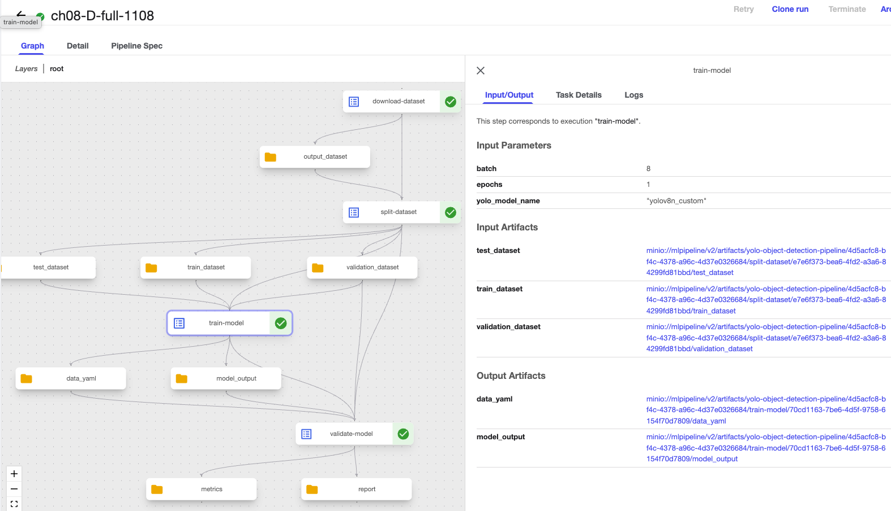
이미지 해설 (ch8-img-063)
- 그림이 보여주는 것: 실행 이름
ch08-D-full-1108의 Graph 탭입니다. 위에서 아래로download-dataset → (output_dataset) → split-dataset → (test_dataset, train_dataset, validation_dataset) → train-model → (data_yaml, model_output) → validate-model → (metrics, report). 네 개 태스크 노드download-dataset,split-dataset,train-model,validate-model모두 오른쪽에 초록 체크가 있고, 폴더 모양 노드는 태스크 사이를 오가는 아티팩트입니다.train-model이 선택되어 오른쪽에 Input/Output 패널이 열려 있습니다. - 초보자 풀이: 사각형 아이콘 노드 = 하나의 태스크(컨테이너 한 번 실행), 폴더 아이콘 = 그 태스크가 만들거나 받는 파일 묶음입니다. 화살표는 "이 출력이 저 입력으로 들어간다"는 뜻이고, KFP 는 이 연결을 보고 실행 순서를 정합니다.
- 여기서 확인할 것: 오른쪽 패널의 입력 파라미터
batch 8,epochs 1,yolo_model_name "yolov8n_custom". 입력 아티팩트test_dataset·train_dataset·validation_dataset은split-dataset의 출력 경로(minio://mlpipeline/v2/artifacts/yolo-object-detection-pipeline/<RUN_ID>/split-dataset/...)이고, 출력 아티팩트data_yaml,model_output은.../train-model/<EXEC_ID>/...아래에 생깁니다. 화면 위쪽의Retry,Clone run,Terminate는 이미 끝난 Run 이라 일부가 흐리게 보입니다.
실행 요약 (book-env 기록)
| 항목 | 값 |
|---|---|
| 실행 이름 / ID | ch08-D-full-1108 (4d5acfc8-bf4c-4378-a96c-4d37e0326684) |
| 파이프라인 | YOLO Object Detection Pipeline (pipeline_d.py) |
| 설정 | epochs=1, batch=8, 학습 파드 cpu 12 / mem 6G, 검증 파드 cpu 4 / mem 4G |
| 결과 | SUCCEEDED, 전체 53분 33초 (04:37:02Z → 05:30:35Z) |
태스크별 시간 (book-env 기록)
| 태스크 | 시간 |
|---|---|
| download-dataset | 911초 (15분 11초) |
| split-dataset | 471초 (7분 51초) |
| train-model | 1512초 (25분 12초) |
| validate-model | 269초 (4분 29초) |
flowchart LR
A["download 15분 11초"] --> B["split 7분 51초"]
B --> C["train 25분 12초"]
C --> D["validate 4분 29초"]
D --> E["전체 53분 33초"]⚠ 시간 읽을 때 주의: 네 태스크 시간을 단순 합하면 3,163초, 전체 Run 은 3,213초(53분 33초)라 약 50초 차이가 납니다(태스크 사이 스케줄링·준비 시간이 들어 있을 수 있으나 원인은 기록에 없음). 또train-model1512초 안에는 입력 17GB 받기 + apt/pip 설치 + 학습 + 산출물 업로드가 모두 들어 있습니다. 학습 로그의1 epochs completed in 0.357 hours(약 21.4분, 학습 중 검증 포함)보다 길어 보이는 이유입니다.
학습 로그에서 읽을 숫자
- 학습 반복(iteration): 526 — 4,206장 ÷ batch 8 = 525.75 → 올림 526. 이것은 배치를 처리한 횟수이지 가중치를 갱신한 횟수가 아닙니다(gradient accumulation 설정에 따라 optimizer step 은 달라질 수 있음). 속도는 약 1.7초/it.
- book-env 기록: 실습 A 스모크의 "13분 외삽"은 학습 반복 부분(약 15분)과 비슷했습니다.
검증 지표 (validate_model, ultralytics 8.0.194, batch=1, val 841장)
| 지표 | 값 |
|---|---|
| mAP50-95 | 0.8317 |
| mAP50 | 0.9772 |
| mAP75 | 0.9596 |
| precision | 0.9795 |
| recall | 0.9572 |
학습 도중 찍힌 val(ultralytics 8.4.207, 같은 val 841장)은 precision 0.977, recall 0.955, mAP50 0.972, mAP50-95 0.809 입니다. 두 값이 조금 다른 이유(버전·설정 차이)는 기록에도 확인하지 못함이라고 적혀 있습니다.
⚠ 원문 정정: 책 Listing 8.13 의model.val(...)은split인자가 없어 기본값인 val 분할을 평가합니다. 책 서술의 "테스트 데이터셋에 대해 검증"과 어긋납니다. test 분할 평가는 별도 스크립트(원문 노트의f_test_eval.py, 본문 없음)로 했습니다. 이 챕터의 val/test 수치를 섞어 읽지 않도록 항상 분할 이름을 같이 봅니다.
mAP 가 뭐죠? (보충 설명) AP 는 신뢰도 임계값을 바꾸며 그린 PR 곡선의 면적이고, mAP 는 이를 클래스·IoU 기준으로 평균한 값입니다. mAP50 은 IoU 0.5 이상이면 맞다고 보는 느슨한 기준, mAP50-95 는 IoU 0.5~0.95 를 평균하는 엄격한 기준이라 보통 더 낮습니다. 가상 예시: TP=9, FP=1, FN=2 이면 precision 0.9, recall 9/11≈0.82.
산출물
train-model/.../model_output/best.pt— 6.5MBdata_yaml/data.yaml— 학습 데이터 경로가 아티팩트 URI 경로로 기록됨(F-1 에서 문제의 씨앗)validate-model/.../report— Markdown 리포트
⚠ 원문 정정: 책 본문은 혼동 행렬·PR 곡선·추론 샘플이 프로젝트 경로에 저장된다고 하지만, 이 실습의 컴포넌트가 아티팩트로 올리는 것은model_output/best.pt와data_yaml/data.yaml뿐이고runs/는 파드 종료와 함께 사라집니다. "KFP 가 자동으로 보존한다"고 읽지 마세요.
✅ 기대 결과: Run 이 Succeeded 이고, 지표가 book-env 의 기록과 같은 자릿수(예: mAP50 0.97 대, mAP50-95 0.8 대)입니다. 정확히 같은 소수점이 나온다는 보장은 없습니다.
🔍 확인 방법
- KFP UI → Run →
validate-model→ Input/Output 의metrics,report를 연다. - 산출물이 실제로 있는지 객체 스토리지에서
best.pt크기(약 6.5MB)를 확인한다. 경로는.../mlpipeline/v2/artifacts/<pipeline>/<run-id>/<task>/<exec-id>/model_output/best.pt형태입니다.
⚠ 자주 나는 오류
- "1 epoch 이니 성능이 낮아야 한다"고 단정하지 말기: 이 기록의 val mAP50 은 0.97 대입니다. 반대로 "1 epoch 이면 언제나 이 정도"라고 일반화하는 것도 안 됩니다(A 스모크의 24장 1 epoch 은 mAP50 0.0353 이었습니다 — 파이프라인이 끝까지 도는지 보는 용도).
- 학습 중 val 값과 검증 컴포넌트 값이 다른 것을 버그로 오해 — 위 버전 차이를 먼저 봅니다.
[실습] E-1. 산출물 받아 추론 비교 실행
단계 E-1. 기본 yolov8n 과 우리가 학습한 best.pt 를 같은 사진에 돌려 본다
🎯 목적: "지표가 좋다"를 숫자로만 믿지 않고, 같은 사진 위에서 학습 전 모델과 학습 후 모델이 어떻게 다르게 보는지 눈으로 확인합니다. 책의 격언대로 "신뢰하되, 검증하라"입니다. 운영화를 위해 모델을 넘겨받았는데 한참 뒤에야 제대로 동작하지 않는다는 걸 알게 되는 일을 막으려는 단계입니다.
📋 사전조건
- D 의
best.pt(약 6.5MB) 를 로컬로 내려받았을 것 — 아래 「best.pt 내려받기」 블록으로 받습니다(저장소 포트 포워딩과 접속 키 변수S3_*가 이 터미널에 있어야 합니다. 앞의 「stage_split.py」 절 1~2단계 참고). - 학습에 쓰지 않은 사진 — 원격 kind 클러스터 book-env 에서는 test split 562장(고정 경로
datasets/od/split/test_dataset)을 썼습니다. 아래compare_infer.py는jpg·jpeg·png·tif·tiff확장자를 읽습니다(ch07 산출물의 사진은.tif일 수 있습니다). 그 밖의 확장자이면 처리 대상이 0장이 되어saved 0 images가 나오므로, 먼저ls "$SAMPLES_DIR" | head로 확장자를 확인하고 코드의EXTS에 추가하세요 - 원격 kind 클러스터의 실행 환경: 원격에서
python:3.11-slim컨테이너(헤드리스) - 실행 위치:
compare_infer.py는 파이썬 환경이 있는 한 곳에서 실행합니다. 내 PC 의[PC 터미널]에서 돌리는 것을 기본으로 하고, 맥 네이티브 파이썬이 걸리면 위 노트처럼python:3.11-slim컨테이너 안에서 돌려도 됩니다. 어느 쪽이든SAMPLES_DIR·BEST_PT·OUT_DIR는 그 파이썬이 실행되는 곳에서 보이는 경로여야 합니다(컨테이너라면-v로 연결한 경로)
[PC 터미널] best.pt 내려받기: D 의 run ID 는 KFP 화면 주소창의 UUID 입니다. 저장소 안의 위치는 v2/artifacts/<파이프라인 이름>/<run ID>/train-model/<실행 ID>/model_output/best.pt 형태입니다(원문 노트 기록). 실행 ID 폴더를 몰라도 되도록, 아래 코드가 train-model 아래에서 best.pt 를 찾아 받습니다. 키는 환경변수로만 읽고 화면에 출력하지 않습니다.
cd "$WORK_DIR"
source "$TASK_VENV/bin/activate"
pip install 'boto3'
mkdir -p "$WORK_DIR/weights"
export D_RUN_ID="xxxxxxxx-xxxx-xxxx-xxxx-xxxxxxxxxxxx" # D 의 run UUID 로 교체 (그대로 실행하면 안 됩니다)
python - <<'PYCODE'
import os, boto3
s3 = boto3.client("s3", endpoint_url=os.environ["S3_ENDPOINT"],
aws_access_key_id=os.environ["S3_ACCESS_KEY"],
aws_secret_access_key=os.environ["S3_SECRET_KEY"])
bucket, run = "mlpipeline", os.environ["D_RUN_ID"]
found = []
for page in s3.get_paginator("list_objects_v2").paginate(Bucket=bucket, Prefix="v2/artifacts/"):
for o in page.get("Contents", []):
k = o["Key"]
if run in k and "/train-model/" in k and k.endswith("model_output/best.pt"):
found.append(k)
if not found:
raise SystemExit("best.pt 를 찾지 못했습니다: D_RUN_ID 와 포트 포워딩, S3_* 변수를 확인하세요")
dest = os.path.join(os.environ["WORK_DIR"], "weights", "best.pt")
s3.download_file(bucket, found[0], dest)
print("받은 위치:", found[0], "->", dest, os.path.getsize(dest), "bytes")
PYCODE
받은 파일 크기는 약 6.5MB 여야 합니다.
⌨ 명령어 — [PC 터미널]
먼저 책의 Listing 8.15/8.16 을 그대로 보면 다음과 같습니다.
# Listing 8.15 Running inference with the default Nano model
import glob
import cv2
from ultralytics import YOLO
model = YOLO("yolov8n.pt") # 기본(나노) 가중치로 모델을 초기화한다
for file in glob.glob("samples/**.jpg"): # 디렉터리 내 모든 JPEG 파일을 순회한다
result = model(cv2.imread(file))
res_plotted = result[0].plot() # 탐지 결과를 cv2 에서 읽을 수 있는 형식으로 변환한다
cv2.imshow("result", res_plotted) # 해당 이미지를 창에 표시한다
cv2.waitKey(0)
# Listing 8.16 Run with the best-trained weights
import glob
import cv2
from ultralytics import YOLO
model = YOLO("weights/best.pt") # 경로를 best.pt 를 가리키도록 수정한다
for file in glob.glob("samples/**.png"):
result = model(cv2.imread(file))
res_plotted = result[0].plot()
cv2.imshow("result", res_plotted)
cv2.waitKey(0)
⚠ 원문 정정: 두 코드는 한 곳이 다릅니다. 8.15 는samples/.jpg, 8.16 은samples/.png로 확장자가 달라 두 모델이 같은 샘플을 보지 않게 됩니다. 비교하려면 확장자(또는 파일 목록)를 맞추세요. 또**는recursive=True없이는*처럼 한 단계만 보는 것으로 알려져 있으나 실행해 확인하지는 않았습니다. 그리고 서버·컨테이너처럼 화면이 없는 환경(헤드리스)에서는cv2.imshow가 동작하지 않으므로 원문 노트도 파일로 저장하는 방식으로 바꿨습니다.
원문 노트의 비교 스크립트(infer_compare.py, 실행 래퍼 e_run.sh, 다운로드 fetch_e.py)는 본문이 기록에 없습니다. 아래는 책 코드를 헤드리스용으로 고친 보충 예시이며 실행해 확인하지 못했습니다.
# compare_infer.py — 보충: 예시. 같은 파일 목록에 두 모델을 돌려 좌우로 붙여 저장
import glob, os
import cv2
import numpy as np
from ultralytics import YOLO
SAMPLES = os.environ.get("SAMPLES_DIR", "samples") # <SAMPLES_DIR>
BEST_PT = os.environ.get("BEST_PT", "weights/best.pt") # <BEST_PT>
OUT_DIR = os.environ.get("OUT_DIR", "e_out") # <OUT_DIR>
os.makedirs(OUT_DIR, exist_ok=True)
base = YOLO("yolov8n.pt") # 왼쪽: 기본 모델 + 기본 가중치
tuned = YOLO(BEST_PT) # 오른쪽: 같은 구조 + 우리가 학습한 가중치
EXTS = ("jpg", "jpeg", "png", "tif", "tiff")
files = sorted(f for ext in EXTS for f in glob.glob(os.path.join(SAMPLES, "*." + ext))) # 두 모델이 같은 목록을 본다
for f in files:
img = cv2.imread(f)
left = base(img, conf=0.25)[0].plot() # conf 0.25 이상만 그린다
right = tuned(img, conf=0.25)[0].plot()
cv2.imwrite(os.path.join(OUT_DIR, os.path.basename(f)), np.hstack([left, right])) # imshow 대신 저장
print("saved", len(files), "images to", OUT_DIR)
# [PC 터미널] 또는 [클러스터 안 Pod] — 변수를 먼저 export
export SAMPLES_DIR="$WORK_DIR/sample/test/images" # test 분할에서 복사한 사진 폴더 (jpg, png, tif 모두 처리)
export BEST_PT="$WORK_DIR/weights/best.pt" # D 에서 받은 best.pt
export OUT_DIR="$WORK_DIR/e_out"
pip install 'ultralytics==8.4.207' pyyaml opencv-python-headless
python compare_infer.py
🔧 본인 환경에 맞게 교체
-<SAMPLES_DIR>= book-env 의 test split 562장 폴더. 본인은 몇 장만 복사해도 됩니다
-<BEST_PT>= D 에서 받은best.pt경로
-ultralytics버전은 학습과 같은8.4.207로 적었습니다(book-env 의 검증 이미지는 8.0.194). 버전을 고정해 기록해 두세요. 꺾쇠 자리표시자를pip install ultralytics==<버전>처럼 따옴표 없이 쓰면 셸이 리다이렉션으로 읽어 오류가 나므로, 위처럼'ultralytics==8.4.207'로 따옴표를 씁니다. 그 위SAMPLES_DIR·BEST_PT·OUT_DIR은 위 예시 경로이며 내 폴더에 맞게 바꿀 수 있습니다.
Mac M2 (zsh)
- zsh 에서
pip install 'ultralytics[extra]'처럼 대괄호가 있으면 따옴표로 감쌉니다. 위 명령은 대괄호가 없어 그대로 됩니다. - 맥 네이티브 Python 으로 돌리면 파드와 PyTorch 휠이 달라집니다(macOS 휠 vs Linux 컨테이너 휠). 휠이 존재해도 설치·모델 로딩 성공이 보장되지는 않으니, 원문 노트처럼 컨테이너(
python:3.11-slim)에서 돌리는 방식이 비교하기 쉽습니다. - 맥에서
cv2.imshow창을 띄울 수는 있지만, 비교 결과를 남기려면 저장 방식이 낫습니다.
Linux (x86_64)
- 서버처럼 화면이 없으면
opencv-python-headless를 쓰고imshow대신imwrite로 저장합니다. - 컨테이너 이미지가 최소형이면
libgl1,libglib2.0-0가 없어ImportError: libGL.so.1이 날 수 있습니다. Debian 13(trixie) 에서는libgl1-mesa-glx설치 후보가 없어libgl1로 교체해야 합니다.
✅ 기대 결과: e_out/ 에 왼쪽(기본 모델)·오른쪽(학습 모델)이 붙은 JPG 가 생깁니다. 왼쪽은 book, person, keyboard 같은 일반 클래스 이름이, 오른쪽은 id_card 가 보입니다.
🔍 확인 방법: ls e_out | head 로 파일을 확인하고 몇 장 열어 봅니다. 초록 박스는 정답 라벨입니다(원문 노트의 그림 기준). 예측 박스는 파란색 등 다른 색으로 그려지며, 기본 모델의 book 라벨 박스가 초록색이라 정답 박스와 헷갈릴 수 있으니 주의하세요.
⚠ 자주 나는 오류
ModuleNotFoundError: yaml: 원문 노트의 첫 실행이 이 오류로 실패했습니다.pip출력을 숨겨 놓아 원인을 몰랐고, 출력을 보이게 하고pyyaml을 명시해 해결했습니다. 설치 출력은 숨기지 마세요.- 확장자 불일치(
.jpgvs.png)로 두 모델이 서로 다른 파일을 보는 문제 — 위 정정. saved 0 images가 출력됨 → 샘플 폴더의 확장자가 코드의EXTS(jpg, jpeg, png, tif, tiff)에 없습니다. 확장자를 확인해EXTS에 추가하세요.- 학습에 쓴 사진으로 비교하면 학습 모델이 유리해집니다. 반드시 test 분할(학습에 쓰지 않은 사진)을 사용하세요.
[실습] E-2. 추론 비교 결과 해설
아래 그림과 수치는 모두 원격 kind 클러스터 book-env 에서 기록한 과거 실행 결과입니다. 이 실습에서 학습한
best.pt는 D 의 1 epoch 산출물입니다.
단계 E-2. 그림 두 장과 562장 통계를 읽는다
🎯 목적: 학습 전후 모델의 차이를 (1) 그림 2장, (2) test 562장 전체 통계로 확인합니다.
📋 사전조건: E-1 의 결과 이미지, 또는 아래 그림
⌨ 명령어 — [PC 터미널] (결과 이미지 열기, 예: macOS)
open "$OUT_DIR" # macOS 에서 폴더 열기. Linux 는 xdg-open "$OUT_DIR"
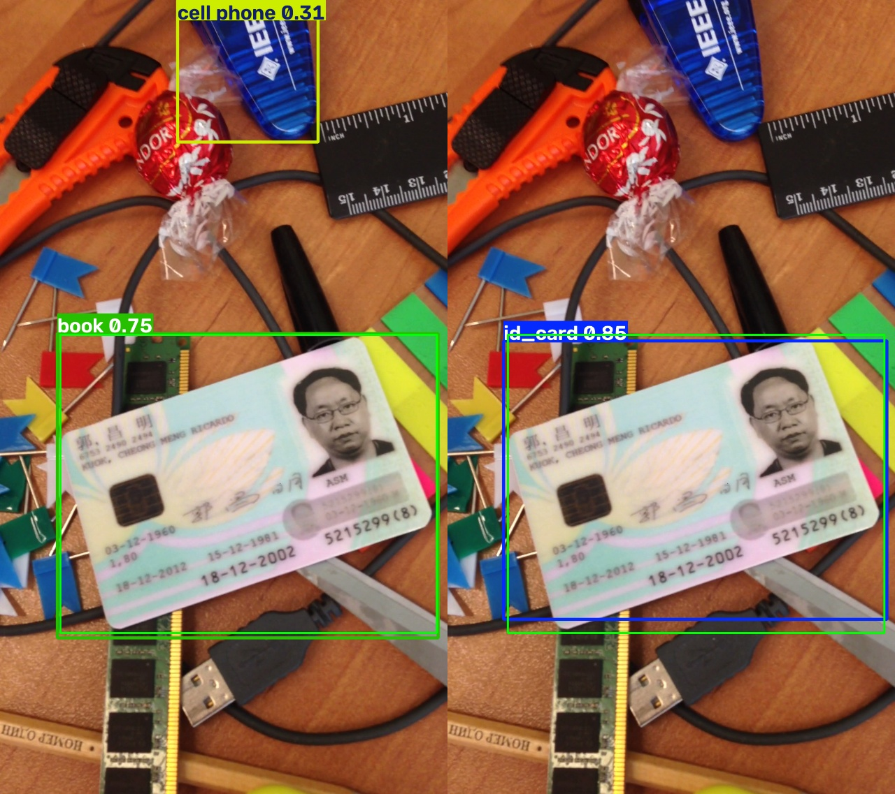
이미지 해설 (ch8-img-064)
- 그림이 보여주는 것: 한 장의 사진을 둘로 나란히 놓은 것입니다. 왼쪽(기본
yolov8n.pt)은 책상 위 신분증 전체를book 0.75로, 위쪽 파란 USB 를cell phone 0.31로 표시했습니다. 오른쪽(학습한best.pt)은 신분증 하나에id_card 0.85만 표시하고 USB·사탕·자 같은 다른 물건은 건드리지 않았습니다. - 초보자 풀이: 기본 모델은 COCO 라는 일반 데이터로 80종류를 배웠기 때문에 "신분증"이라는 이름 자체를 모릅니다. 가장 비슷해 보이는
book으로 부르는 것이고, 숫자(0.75)는 그 이름이 맞다고 모델이 스스로 매긴 점수일 뿐 실제 정답률이 아닙니다. 학습 모델은 우리 데이터로 "이건 id_card"를 배웠습니다. - 여기서 확인할 것: ① 라벨 이름이
book→id_card로 바뀌었는지 ② 초록 사각형은 정답 라벨, 파란 사각형은 학습 모델의 예측입니다. 오른쪽 그림에서 파란 박스와 초록 박스가 거의 겹치지만 완전히 똑같지는 않고 일부 어긋납니다. 클래스와 위치가 개선되었다고까지만 읽으세요. ③ 왼쪽book박스도 초록색이라 정답 박스와 헷갈리기 쉽습니다.
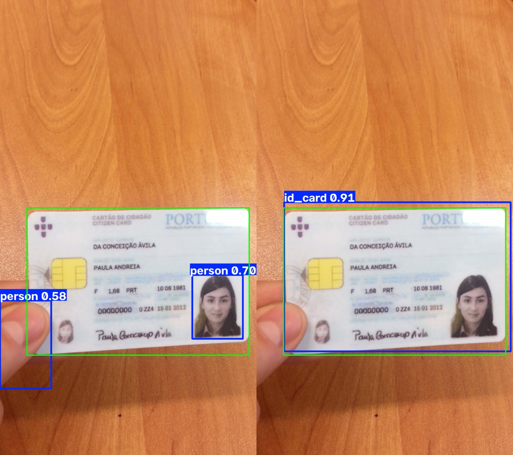
이미지 해설 (ch8-img-065)
- 그림이 보여주는 것: 손으로 든 포르투갈 시민카드 사진입니다. 왼쪽(기본 모델)은 카드 속 증명사진을
person 0.70, 엄지손가락을person 0.58로 표시했고 카드 자체에는 예측 라벨이 없습니다(초록 사각형은 정답 라벨). 오른쪽(학습 모델)은 카드 전체를 감싼id_card 0.91하나만 표시했습니다. - 초보자 풀이: 기본 모델은 "사람이 보이면 사람"이라 카드 안의 얼굴 사진도 사람으로 잡습니다. 우리 목표는 "카드 전체의 위치와 종류"인데, 기본 모델은 그 목표로 학습한 적이 없으니 엉뚱한 곳을 잡는 것입니다.
- 여기서 확인할 것: 기본 모델의
person박스 두 개(손, 증명사진)와 학습 모델의id_card박스 한 개의 차이. 파란id_card박스가 초록 정답 박스보다 위쪽 가장자리가 약간 위로 올라가 있는 것도 보입니다.
노트: 이 두 장은 고른 샘플입니다. 전체 성능은 아래 562장 통계로 판단하세요.
전체 562장 통계 (conf ≥ 0.25, book-env 의 기록)
| 항목 | 기본 yolov8n | 학습 best.pt |
|---|---|---|
| 검출이 1개 이상인 이미지 | 546 (97.2%) | 547 (97.3%) |
| 최상위 박스의 평균 신뢰도 | 0.653 | 0.849 |
| 정답 위치를 IoU ≥ 0.5로 찾은 비율(클래스 무관) | 84.2% | 96.3% |
| 정답과의 평균 최고 IoU | 0.816 | 0.880 |
| 최상위 클래스 | book 265, person 146, keyboard 83, scissors 10, tv 9 | id_card 547 |
⚠ 원문 정정: "IoU ≥ 0.5 로 찾은 비율 96.3%"는 표에 (클래스 무관) 이라고 적힌 위치 지표입니다. "547건을 정확히 탐지했다", "모두 위치까지 정확하다"로 읽으면 안 됩니다. 547 은 "최상위 클래스가 id_card 인 이미지 수"입니다. 또 검출 수만 보면 두 모델이 546 대 547 로 비슷합니다 — 기본 모델도 무언가는 찾지만 이름이 틀린 것이 문제입니다.
- 샘플 6장(book-env 기록): 기본 모델은
book 0.36,person 0.70,book 0.75,keyboard 0.65,book 0.79,book 0.86등 신분증을 다른 클래스로 분류했습니다(박스는 카드를 대체로 감쌌음). 학습 모델은 6장 모두id_card0.83~0.91 한 개. 책의 그림 8.10·8.12 와 같은 경향입니다. - 학습 모델의 test split 공식 지표(ultralytics 8.4.207): mAP50-95 0.8097, mAP50 0.9708, mAP75 0.9406, precision 0.982, recall 0.9502 — val(0.8317 / 0.9772)보다 약간 낮고 같은 수준입니다.
책의 그림과 이 실습의 그림은 다른 자료
책의 그림 8.12 는 단 1 epoch 학습 결과이고, 그림 8.13 은 약 5 epoch 추가 학습 결과입니다. 5 epoch 그림의 id_card 0.94 는 뒤에 나올 F-2 의 3 epochs 지표(test mAP50-95 0.9853)와 다른 자료이므로 한 줄로 잇지 않습니다.
flowchart LR
A["책 그림 8.12 단 1 epoch"] --> B["이 실습 D 1 epoch best.pt"]
C["책 그림 8.13 약 5 epoch"] -.-> D["이 실습 F-2 3 epochs 와 별개"]✅ 기대 결과: 학습 모델은 대부분의 test 사진에서 id_card 하나만, 기본 모델은 book/person/keyboard 등 다양한 클래스를 냅니다. 수치는 book-env 의 기록과 비슷한 경향이면 충분합니다.
🔍 확인 방법: 몇 장을 직접 열어 (1) 라벨 이름 (2) 박스 개수 (3) 신뢰도를 비교합니다. 통계를 직접 내려면 같은 파일 목록에 두 모델을 돌려 result.boxes.cls 와 result.boxes.conf 의 최상위 값을 집계하는 별도 스크립트가 필요한데, 원문 노트의 해당 스크립트 본문은 기록에 없습니다.
⚠ 자주 나는 오류
- 신뢰도 0.94 를 "94% 맞는다"로 읽기 — 모델이 스스로 매기는 점수이며 실제 정답률을 보장하지 않습니다.
- 초록(정답) 박스와 예측 박스 색을 혼동.
- 샘플 몇 장이 좋아 보인다고 전체 성능을 단정 — 562장 통계와 test 지표를 함께 봅니다.
[실습] F-1. 검증 게이트 설계와 코드
단계 F-1a. 책의 마지막 단락을 "자동 검사"로 구현한다
🎯 목적: 책은 8.1 끝에서 "신뢰도와 박스 좌표를 프로그램으로 확인"하자고 제안합니다. 사람이 눈으로 보는 대신, 기준을 코드로 적어 두고 미달이면 파이프라인을 스스로 실패시키는 태스크(검증 게이트, gate)를 만듭니다.
📋 사전조건
- D 에서
best.pt와data.yaml이 만들어져 있을 것(또는 F-2 처럼 같은 파이프라인 안에서 학습 직후 연결) - 검증 컴포넌트
validate_model(Listing 8.12/8.13) 이 어떻게 동작하는지 이해할 것
게이트의 6개 검사 (book-env 기록)
| # | 검사 | 임계값 | 파라미터 이름(기록에 있는 것) |
|---|---|---|---|
| 1 | mAP50 | ≥ 0.90 | min_map50 |
| 2 | mAP50-95 | ≥ 0.60 | min_map50_95 |
| 3 | precision | ≥ 0.90 | min_precision |
| 4 | 검증 이미지 50장 샘플의 평균 top-1 신뢰도(이미지마다 가장 높은 박스 신뢰도 하나를 골라 평균) | ≥ 0.50 | min_mean_conf |
| 5 | 비정상 박스 수 | == 0 (좌표가 [0,1] 안, 면적 0.5%~99.5%) | — |
| 6 | 검출 없음 이미지 수 | == 0 | — |
하나라도 미달이면 AssertionError 로 태스크가 실패합니다. 임계값은 D 결과(mAP50 0.9772)를 보고 정했고 파라미터로 바꿀 수 있습니다. 게이트는 Markdown 리포트와 Metrics 도 출력합니다. 원문 노트가 파라미터 이름을 밝힌 것은 위 네 개(min_map50, min_map50_95, min_precision, min_mean_conf)뿐이며, 5·6번 검사의 파라미터 이름은 기록에 없습니다.
flowchart TD
V["validate_model_gate"] --> C1{"mAP50 이상 0.90"}
V --> C2{"mAP50-95 이상 0.60"}
V --> C3{"precision 이상 0.90"}
V --> C4{"평균 top-1 신뢰도 이상 0.50"}
V --> C5{"비정상 박스 수 0"}
V --> C6{"검출 없음 이미지 수 0"}
C1 --> OK["모두 통과 태스크 성공 후속 단계 진행"]
C2 --> OK
C3 --> OK
C4 --> OK
C5 --> OK
C6 --> OK
C1 --> NG["하나라도 미달 AssertionError 파이프라인 실패"]
C2 --> NG
C3 --> NG
C4 --> NG
C5 --> NG
C6 --> NG게이트 코드
원문 노트에는 validate_model_gate 함수 본문이 없습니다(components.py 본문 없음). 확인된 것은 ① 6개 검사 ② 파라미터 이름 ③ 실패 메시지 형식 AssertionError: validation gate failed: mAP50, precision ④ validation_dataset.path/images 로 data.yaml 을 /tmp/gate_data.yaml 로 다시 쓴다는 점입니다. 아래 코드는 이 기록에 맞춰 구성한 보충 참고 구현입니다. 실행해 확인하지 못했으며, 원본과 줄 단위로 같다는 뜻이 아닙니다. 직접 만들 때는 먼저 작은 데이터로 시험하세요.
보충: validate_model_gate 참고 구현 (접기/펼치기)
from kfp import dsl
from kfp.dsl import Input, Output, Artifact, Dataset, Model, Metrics, Markdown
@dsl.component(
base_image="ultralytics/ultralytics:8.0.194-cpu",
packages_to_install=["minio", "tqdm", "pyyaml"],
)
def validate_model_gate(
data_yaml: Input[Artifact],
model: Input[Model],
validation_dataset: Input[Dataset],
metrics: Output[Metrics],
report: Output[Markdown],
min_map50: float = 0.90,
min_map50_95: float = 0.60,
min_precision: float = 0.90,
min_mean_conf: float = 0.50,
):
import os, glob, yaml
from ultralytics import YOLO
# 1) 가중치 로드 (입력 model 변수를 덮어쓰지 않도록 새 이름 사용)
yolo = YOLO(os.path.join(model.path, "best.pt"))
# 2) data.yaml 의 val 경로는 학습 당시 아티팩트 URI 라서, 이번 입력 경로로 다시 쓴다
with open(os.path.join(data_yaml.path, "data.yaml")) as f:
cfg = yaml.safe_load(f)
img_dir = os.path.join(validation_dataset.path, "images")
cfg["val"] = img_dir
gate_yaml = "/tmp/gate_data.yaml"
with open(gate_yaml, "w") as f:
yaml.safe_dump(cfg, f)
# 3) 공식 지표 (val 분할, batch=1)
r = yolo.val(data=gate_yaml, imgsz=640, batch=1, verbose=False)
map50, map50_95, prec = r.box.map50, r.box.map, r.box.mp
# 4) 검증 이미지 50장 샘플 추론으로 신뢰도·박스·검출 없음 확인
files = sorted(glob.glob(os.path.join(img_dir, "*")))[:50]
top_confs, bad_boxes, no_det = [], 0, 0
for fp in files:
res = yolo(fp, conf=0.25, verbose=False)[0]
if len(res.boxes) == 0:
no_det += 1
continue
top_confs.append(float(res.boxes.conf.max()))
for x, y, w, h in res.boxes.xywhn.tolist(): # 0~1 로 정규화된 중심좌표와 너비·높이
x1, y1, x2, y2 = x - w/2, y - h/2, x + w/2, y + h/2
area = w * h
if not (0 <= x1 <= 1 and 0 <= y1 <= 1 and 0 <= x2 <= 1 and 0 <= y2 <= 1):
bad_boxes += 1
elif not (0.005 <= area <= 0.995): # 면적 0.5% ~ 99.5%
bad_boxes += 1
mean_conf = sum(top_confs) / len(top_confs) if top_confs else 0.0
# 5) 지표와 리포트 기록
metrics.log_metric("map50", map50)
metrics.log_metric("map50-95", map50_95)
metrics.log_metric("precision", prec)
metrics.log_metric("mean_top1_conf", mean_conf)
checks = {
"mAP50": map50 >= min_map50,
"mAP50-95": map50_95 >= min_map50_95,
"precision": prec >= min_precision,
"mean_conf": mean_conf >= min_mean_conf,
"bad_boxes": bad_boxes == 0,
"no_detection": no_det == 0,
}
with open(report.path, "w") as f:
f.write("| check | PASS |\n|---|---|\n")
for k, ok in checks.items():
f.write(f"| {k} | {'PASS' if ok else 'FAIL'} |\n")
# 6) 하나라도 미달이면 AssertionError → 태스크 실패
failed = [k for k, ok in checks.items() if not ok]
assert not failed, "validation gate failed: " + ", ".join(failed)
줄별 설명 (위 참고 구현 기준)
| 부분 | 하는 일 | 왜 필요한가 |
|---|---|---|
@dsl.component(base_image=..., packages_to_install=[...]) |
검증과 같은 8.0.194-cpu 이미지 위에 파이썬 패키지만 추가 |
packages_to_install 은 파이썬 패키지만 설치합니다. 시스템 라이브러리는 준비된 base_image 나 컨테이너 컴포넌트로 해결 |
Input[Artifact]/Input[Model]/Input[Dataset] |
설정 파일·가중치·검증 데이터를 받음 | validate_model 과 같은 입력 모양 |
Output[Metrics], Output[Markdown] |
숫자와 표 리포트를 KFP 화면에 남김 | 통과든 실패든 근거를 UI 에서 볼 수 있게 |
min_* 파라미터 |
임계값을 실행 때 바꿀 수 있게 | 실패 시험(0.999)과 정상 실행(0.90)을 코드 수정 없이 전환 |
yolo = YOLO(...) |
입력 model 을 덮어쓰지 않고 새 변수에 로드 |
책 Listing 8.13 은 model = YOLO(model_path) 로 입력 변수를 덮어씁니다(섀도잉). 피하는 편이 안전 |
cfg["val"] = img_dir 와 /tmp/gate_data.yaml |
data.yaml 의 val 경로를 이번 입력 경로로 교체 |
FileNotFoundError 해결책(F-1b 참조) |
yolo.val(..., batch=1) |
공식 mAP50/mAP50-95/precision 계산 | 게이트 1~3번 검사의 재료 |
| 50장 샘플 추론 | 상위 신뢰도·박스 좌표·검출 여부 수집 | 게이트 4~6번. 전체 841장이 아니라 50장 샘플 |
xywhn → 모서리 좌표 |
박스가 이미지 밖으로 나갔는지 확인 | 좌표가 [0,1] 밖이면 비정상 |
0.005 <= area <= 0.995 |
너무 작거나 거의 전체인 박스 걸러냄 | 면적 0.5%~99.5% 기준 |
no_det == 0 |
검출이 없는 이미지가 있으면 실패 | 이 데이터는 모든 사진에 신분증이 있음. 객체가 없는 사진이 정답인 데이터셋이라면 이 검사를 그대로 쓰면 안 됩니다 |
assert not failed, "validation gate failed: ..." |
미달 항목을 모아 AssertionError 로 실패 |
실패 메시지에 어떤 검사가 미달인지 드러남 |
⌨ 명령어 — [PC 터미널] (validate_model_gate 는 앞의 「components.py 참고 구현」 절에 이미 들어 있습니다. 같은 함수를 components.py 에 한 번 더 붙이지 말고, 아래 접힌 코드는 어떻게 동작하는지 읽기 위한 것으로 보세요. 그 파일이 있는 상태에서 컴파일만 확인합니다)
python3 -c "import components; print('ok')" # 파일에 문법 오류가 없는지만 확인
python3 pipeline_cached.py # pipeline_cached.yaml, pipeline_gate.yaml, pipeline_check.yaml 생성
ls -lh pipeline_*.yaml
✅ 기대 결과: import 가 ok 를 출력하고, 컴파일이 세 YAML(pipeline_cached.yaml, pipeline_gate.yaml, pipeline_check.yaml)을 만듭니다.
🔍 확인 방법: grep -c validate-model-gate pipeline_gate.yaml 처럼 게이트 컴포넌트 이름이 YAML 에 들어갔는지 봅니다.
⚠ 자주 나는 오류
- 임계값을 너무 높게 잡으면 정상 모델도 계속 실패합니다. 원문 노트는 D 결과를 보고 임계값을 정했습니다. 여러분의 첫 실행 결과를 먼저 보고 정하세요.
- 임계값이 너무 낮으면 게이트가 아무것도 걸러내지 못합니다.
- 노트에 이름이 없는 파라미터(5·6번 검사 관련)는 구현마다 다를 수 있습니다. 위 코드의 이름은 참고용입니다.
[실습] F-1. 게이트 통과·실패 시험과 임계값 위젯
아래 run 이름·수치는 원격 kind 클러스터 book-env 에서 기록한 과거 실행 결과입니다.
단계 F-1b. 재학습 없이 D 의 산출물로 게이트만 시험한다
🎯 목적: 게이트가 (1) 정상 모델은 통과시키고 (2) 기준을 일부러 높이면 실패시키는지, 학습을 다시 하지 않고 확인합니다. 실패 시험이 "정상적으로 실패"해야 게이트가 제 일을 하는 것입니다.
📋 사전조건
- D 의
best.pt(model_output)와data.yaml(data_yaml) 이 객체 스토리지에 남아 있을 것 - F-1a 의 게이트 컴포넌트가 준비되어 있을 것
⌨ 명령어 — [PC 터미널]
원문 노트는 D 의 best.pt/data.yaml 을 dsl.importer 로 가져와 게이트만 실행하는 pipeline_gate_check.py 를 썼습니다(본문 기록 없음). 구조는 아래와 같은 보충 예시입니다. 실행해 확인하지 못했고 URI 모양은 환경마다 다릅니다.
# pipeline_gate_check.py — 보충: 예시: 재학습 없이 게이트만 실행
from kfp import dsl, compiler
from components import validate_model_gate
@dsl.pipeline(name="ch08-gate-check", description="importer 로 D 산출물을 가져와 게이트만 실행")
def gate_check(
model_uri: str, # <D_MODEL_URI> D 의 model_output 아티팩트 URI
data_yaml_uri: str, # <D_DATA_YAML_URI>
val_uri: str = "minio://mlpipeline/datasets/od/split/validation_dataset",
min_map50: float = 0.90,
min_precision: float = 0.90,
):
m = dsl.importer(artifact_uri=model_uri, artifact_class=dsl.Model, reimport=False)
y = dsl.importer(artifact_uri=data_yaml_uri, artifact_class=dsl.Artifact, reimport=False)
v = dsl.importer(artifact_uri=val_uri, artifact_class=dsl.Dataset, reimport=False)
g = validate_model_gate(data_yaml=y.output, model=m.output, validation_dataset=v.output,
min_map50=min_map50, min_precision=min_precision)
g.set_caching_options(False)
g.set_cpu_limit("4").set_memory_limit("4G")
if __name__ == "__main__":
compiler.Compiler().compile(gate_check, "pipeline_gate_check.yaml")
export D_MODEL_URI="<D_MODEL_URI>" # 예: minio://mlpipeline/v2/artifacts/<pipeline>/<run-id>/train-model/<exec-id>/model_output
export D_DATA_YAML_URI="<D_DATA_YAML_URI>" # 예: 같은 train-model 아래 data_yaml
python3 pipeline_gate_check.py
# [브라우저] KFP UI 에서 업로드 → Run 두 번:
# (1) 통과 시험: 기본 임계값 (min_map50=0.90, min_precision=0.90)
# (2) 실패 시험: min_map50=0.999, min_precision=0.999
🔧 본인 환경에 맞게 교체
-<D_MODEL_URI>,<D_DATA_YAML_URI>= D 의train-model출력 아티팩트 링크(KFP UI 의 Input/Output 탭에서 복사). 원문 노트의 run 은ch08-D-full-1108
- 객체 스토리지 주소/버킷(minio://mlpipeline/...)은 설치마다 다릅니다. 접속 키 값은 이 명령들에 쓰지 않습니다(<MINIO_SECRET_KEY>등 자리표시자만)
book-env 의 시험 결과
| 시험 | run 이름 | 설정 | 결과 |
|---|---|---|---|
| 통과 | ch08-F1-gate-pass-1108b |
기본 임계값 | SUCCEEDED, 6개 모두 PASS. mAP50 0.9772, mAP50-95 0.8317, precision 0.9795(D 의 검증과 같은 값), 평균 신뢰도 0.8371 |
| 실패 | ch08-F1-gate-fail-1108b |
min_map50=0.999, min_precision=0.999 |
FAILED, AssertionError: validation gate failed: mAP50, precision |
- 실패 시험은 mAP50(0.9772 < 0.999)과 precision(0.9795 < 0.999) 두 항목만 미달이라 메시지에 두 이름만 나왔습니다. 나머지 항목(mAP50-95 0.8317, 평균 신뢰도 0.8371 등)은 기본 임계값을 그대로 쓰면 통과하는 값이었습니다.
- 게이트 태스크 시간은 약 330초(batch=1 검증 841장 + 샘플 50장 추론).
막힌 점: FileNotFoundError 와 해결
book-env 에서의 첫 시도는 둘 다 FileNotFoundError 였습니다.
flowchart TD
A["D 학습 시점 data.yaml 의 val 경로 = 학습 당시 아티팩트 URI"] --> B["게이트 시험은 validation_dataset 을 다른 고정 경로에서 가져옴"]
B --> C["경로가 달라 FileNotFoundError"]
C --> D["수정: validation_dataset.path/images 로 data.yaml 을 다시 써서 /tmp/gate_data.yaml 사용"]
D --> E["통과 시험과 실패 시험 모두 정상 동작"]- 원인:
data.yaml의val경로는 학습 시점의 아티팩트 URI 인데, 이 시험은validation_dataset을 다른(고정) 경로에서 가져와서 경로가 서로 달랐습니다. - 해결: 게이트가
validation_dataset.path/images로data.yaml을 다시 써서(/tmp/gate_data.yaml) 사용하도록 수정. - 한계: 학습·검증을 같은 importer URI 로 연결한 파이프라인에서는 이 문제가 없었습니다(B 방안 서브셋 run).
🧪 임계값 위젯: 내 기준을 높이면 언제 실패할까?
아래 위젯은 가상 예시입니다. book-env 의 실제 값(D 의 val: mAP50 0.9772, precision 0.9795)을 모델 점수로 두고, 임계값 슬라이더를 움직였을 때 게이트가 어떻게 판정하는지 보여줍니다. 실제 게이트는 6개 검사를 모두 합쳐 판정하지만, 위젯은 이해하기 쉽게 mAP50 과 precision 두 가지만 다룹니다.
모델 점수(book-env 의 기록 D val): mAP50 = 0.9772, precision = 0.9795
- 슬라이더를
0.978근처까지 올려 보세요. precision 은 0.9795 까지 통과하지만 mAP50 은 0.9772 에서 먼저 실패합니다. - 두 값을
0.999로 맞추면 book-env 의 실패 시험(ch08-F1-gate-fail-1108b)과 같은 메시지mAP50, precision이 나옵니다.
✅ 기대 결과: (1) 통과 시험 Run 이 Succeeded 이고 report 에 6개 PASS, (2) 실패 시험 Run 이 Failed 이며 게이트 로그 끝에 AssertionError: validation gate failed: mAP50, precision 이 보입니다. 실패 시험이 Failed 로 끝나는 것이 성공한 시험입니다.
🔍 확인 방법: [브라우저] KFP UI → 실패한 Run → validate-model-gate → Logs 탭 맨 아래. [PC 터미널] 이라면 kubectl logs -n "$KFP_NAMESPACE" <게이트_파드_이름> -c main | tail -20 (파드 이름은 kubectl get pods 로 확인).
⚠ 자주 나는 오류
FileNotFoundError: 위의val경로 문제. 학습과 게이트의validation_dataset경로가 같은지 확인.- 실패한 Run 을 "버그"로 오해 — 임계값을 일부러 올린 시험이면 정상입니다.
- 게이트 통과를 "배포해도 된다"로 읽기: 이 챕터에는 배포 단계가 없고, 통과는 태스크 성공일 뿐입니다.
- 임계값을 한 번의 결과에 맞춰 정해 놓고 일반 규칙처럼 쓰지 않기 — 원문 노트도 D 결과를 보고 정한 값이라고 적었습니다.
[실습] F-2. epochs=3 + 게이트 통합 파이프라인 실행
아래 run 이름·시간·수치는 모두 원격 kind 클러스터 book-env 에서 기록한 과거 실행 결과입니다.
단계 F-2a. 고정 경로 데이터 + 3 epochs 학습 + 게이트를 한 파이프라인으로
🎯 목적: 두 가지를 한 번에 합니다. (1) dsl.importer 로 고정 경로 분할 데이터를 가져와 download·split 을 건너뜀(D 의 약 23분 절약) (2) epochs 를 1 에서 3 으로 늘려 성능이 어떻게 변하는지 보고, 학습 직후 검증 게이트가 자동으로 판정하게 합니다.
📋 사전조건
- B 방안으로
minio://mlpipeline/datasets/od/split/{train,validation,test}_dataset에 분할 데이터가 복사되어 있을 것(book-env 기록: ch07 분할 산출물 11,218개 객체, 17GB 를 S3 서버 측 복사로 약 2분) - F-1a 의
validate_model_gate가components.py에 있을 것 - 시간: book-env 기록으로 전체 약 79분 47초. 아래 코드의 학습 파드 cpu 12 / mem 6G 는 16코어 서버 book-env 의 기록값이므로, 노트북에서는 앞의 D 단계처럼 4코어/6G, 게이트 2코어/4G 로 낮춰 쓰세요(
set_cpu_limit의 숫자만 바꾸면 됩니다). 학습 파드가 들어갈 만큼 CPU·메모리가 남은 노드가 필요하며,kubectl describe node의 Allocatable 로 확인합니다.
⌨ 명령어 — [PC 터미널] (pipeline_cached.py 의 gate_pipeline 부분, 원문 노트 전문)
@dsl.pipeline(name="YOLO Object Detection Pipeline (gate)", description="ch08 F: importer + 학습 + 검증 게이트")
def gate_pipeline(epochs: int = 3, batch: int = 8, yolo_model_name: str = "yolov8n_custom",
min_map50: float = 0.90, min_map50_95: float = 0.60, min_precision: float = 0.90, min_mean_conf: float = 0.50,
train_uri: str = BASE + "train_dataset", val_uri: str = BASE + "validation_dataset",
test_uri: str = BASE + "test_dataset"):
tr = dsl.importer(artifact_uri=train_uri, artifact_class=dsl.Dataset, reimport=False)
va = dsl.importer(artifact_uri=val_uri, artifact_class=dsl.Dataset, reimport=False)
te = dsl.importer(artifact_uri=test_uri, artifact_class=dsl.Dataset, reimport=False)
train_op = train_model(epochs=epochs, batch=batch, yolo_model_name=yolo_model_name,
train_dataset=tr.output, validation_dataset=va.output, test_dataset=te.output)
train_op.set_caching_options(False)
train_op.set_cpu_limit("12").set_memory_limit("6G")
g = validate_model_gate(data_yaml=train_op.outputs["data_yaml"], model=train_op.outputs["model_output"],
validation_dataset=va.output, min_map50=min_map50, min_map50_95=min_map50_95,
min_precision=min_precision, min_mean_conf=min_mean_conf)
g.set_caching_options(False)
g.set_cpu_limit("4").set_memory_limit("4G")
파일 상단의 공통 부분과 컴파일 부분도 함께 있어야 합니다.
# pipeline_cached.py (일부)
from kfp import dsl, compiler
from components import train_model, validate_model, validate_model_gate, count_files
BASE = "minio://mlpipeline/datasets/od/split/"
if __name__ == "__main__":
compiler.Compiler().compile(pipeline, "pipeline_cached.yaml")
compiler.Compiler().compile(gate_pipeline, "pipeline_gate.yaml")
compiler.Compiler().compile(check_pipeline, "pipeline_check.yaml")
줄별 설명
| 코드 | 의미 |
|---|---|
epochs: int = 3 |
학습을 3 바퀴. D 는 1 |
min_map50, min_map50_95, min_precision, min_mean_conf |
게이트 임계값 파라미터(기본 0.90 / 0.60 / 0.90 / 0.50). 실행 폼에서 바꿀 수 있음 |
train_uri, val_uri, test_uri |
고정 경로 URI 3개. 파이프라인 파라미터라 실행할 때 바꿀 수 있음 |
dsl.importer(... reimport=False) ×3 |
이미 있는 객체 스토리지 경로를 Dataset 아티팩트로 등록 |
train_model(... tr.output ...) |
importer 출력을 학습 입력으로 연결. 출력→입력 연결이라 순서를 KFP 가 추론 |
train_op.set_caching_options(False) |
캐시 끔. 캐시가 적중하지 않은 D 경험이 있어 항상 새로 실행 |
set_cpu_limit("12").set_memory_limit("6G") |
학습 파드 상한(book-env 기록값. 노트북에서는 "4" 로 낮춤) |
validate_model_gate(... train_op.outputs[...]) |
학습 출력(data_yaml, model_output)을 게이트 입력으로 연결 → 학습 뒤 자동 판정 |
g.set_cpu_limit("4").set_memory_limit("4G") |
게이트 파드 상한 |
flowchart TD
I1["importer train"] --> T["train_model epochs 3 batch 8"]
I2["importer validation"] --> T
I3["importer test"] --> T
I2 --> G["validate_model_gate"]
T --> Y["data_yaml"]
T --> M["model_output"]
Y --> G
M --> G
G --> ME["metrics"]
G --> RE["report"]실행: [PC 터미널] 에서 컴파일한 뒤 [브라우저] 에서 업로드·실행.
python3 pipeline_cached.py # pipeline_gate.yaml 생성
# [브라우저] KFP UI → 업로드 → Create run: Run name = <RUN_NAME_F2>, epochs=3, batch=8
🔧 본인 환경에 맞게 교체
-<RUN_NAME_F2>= book-env 의ch08-F2-epochs3-1108(73845e0f-5b2b-49cb-96e8-965293000e70). 예시 이름
-BASE=minio://mlpipeline/datasets/od/split/— 객체 스토리지 주소·버킷은 설치마다 다름. 접속 키는<MINIO_SECRET_KEY>자리표시자로만 다루기
⚠ 원문 정정:importer의reimport=False는 ML Metadata 아티팩트 재등록을 막는 옵션이며 데이터 전송을 생략한다는 뜻이 아닙니다. 고정 URI 데이터 준비와 KFP 캐싱은 별개로 생각하세요. 또 고정 경로를 덮어쓰면 메타데이터·캐시가 데이터 버전과 어긋날 수 있으니 불변 경로나 해시를 권장합니다.
실행 화면
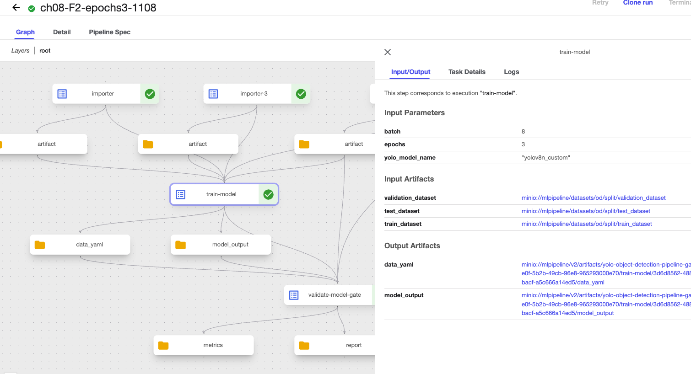
이미지 해설 (ch8-img-066)
- 그림이 보여주는 것: 실행
ch08-F2-epochs3-1108의 Graph 탭. 위쪽에importer,importer-3(초록 체크)와 일부만 보이는 다른 importer, 그 아래 폴더 모양artifact노드들, 가운데train-model(선택됨, 초록 체크), 아래에data_yaml,model_output,validate-model-gate, 그리고metrics,report. 오른쪽 패널의 입력 파라미터는batch 8,epochs 3,yolo_model_name "yolov8n_custom". 입력 아티팩트는minio://mlpipeline/datasets/od/split/{validation,test,train}_dataset입니다. - 초보자 풀이: D 의 그래프(그림 063)에 있던
download-dataset,split-dataset이 없고, 맨 위가 importer 입니다. 데이터를 새로 만들지 않고 이미 있는 경로를 가리킨다는 뜻입니다. 맨 아래validate-model이validate-model-gate로 바뀐 것도 D 와 다른 점입니다. - 여기서 확인할 것: ①
epochs 3② 입력 URI 가v2/artifacts/...가 아니라datasets/od/split/...고정 경로 ③validate-model-gate노드. 화면에서는 이 노드의 상태 표시가 오른쪽 패널에 가려져 있어 결과는 아래 표와 다음 그림의 Detail 탭으로 확인합니다.
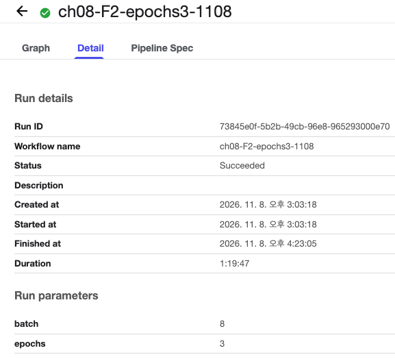
이미지 해설 (ch8-img-067)
- 그림이 보여주는 것: 같은 Run 의 Detail 탭. Run ID
73845e0f-5b2b-49cb-96e8-965293000e70, Workflow namech08-F2-epochs3-1108, Status Succeeded, Created/Started 2026. 11. 8. 오후 3:03:18, Finished 오후 4:23:05, Duration 1:19:47, Run parametersbatch 8,epochs 3. - 초보자 풀이: 시작과 끝 시각의 차이가 곧 소요 시간입니다(3:03:18 → 4:23:05). book-env 에서 기록한 "총 1시간 19분 소요"와 일치합니다.
- 여기서 확인할 것: Status 가 Succeeded 라는 것은 게이트도 통과했다는 뜻입니다(게이트가 AssertionError 면 Failed 가 됩니다). Duration 과 파라미터 두 개.
시간 (book-env 기록)
| 항목 | 시간 |
|---|---|
| 전체 | 4,787초 (약 79분 47초, 화면 Duration 1:19:47) |
| train-model | 4,464초 (74분 24초). 로그 3 epochs completed in 1.174 hours |
| validate-model-gate | 283초 |
| importer 각 | 4초 |
| download·split 생략 | D 의 약 23분 절약 |
- epoch 당 학습 약 21분 → 22분 → 23분으로 조금씩 늘었습니다.
- 속도는
2.4~2.6초/it로, D 초반의1.7초/it보다 느렸습니다. 원인은 확인하지 못했습니다.
✅ 기대 결과: Run 이 Succeeded, validate-model-gate 의 report 에 6개 PASS. 시간은 환경에 따라 크게 달라질 수 있습니다.
🔍 확인 방법: [브라우저] Run → Detail 탭의 Duration, validate-model-gate → Input/Output 의 metrics·report, 학습 로그의 3 epochs completed in ... hours.
⚠ 자주 나는 오류
- 실행 시간이 1시간 반 가까이 걸리니 중간에 브라우저를 닫아도 Run 은 계속 돕니다. UI 에서 상태만 다시 확인.
- 게이트 임계값을 낮게 두면 통과하지만 의미가 없고, 너무 높게 두면 정상 모델도 Failed 가 됩니다.
- 전용
train_op.after(...)가 필요한 경우: 이 파이프라인에서는 학습 출력이 게이트 입력으로 이어져 순서가 정해지지만, 같은 구조에서 출력→입력 연결이 없는 태스크(예:count_files와train_model은 둘 다 importer 출력만 입력으로 받음)는 서로 순서 보장이 없습니다. 사전 관문으로 쓰려면train_op.after(cnt)를 명시하세요.
[실습] F-2. 결과 표와 1 epoch 대 3 epochs 비교
아래 수치는 모두 원격 kind 클러스터 book-env 에서 기록한 과거 실행 결과입니다. 지표 이름 · 분할(val/test) · ultralytics 버전을 항상 같이 읽으세요.
단계 F-2b. 게이트 결과와 val/test 비교 표를 읽는다
🎯 목적: 3 epochs 결과가 1 epoch 보다 얼마나 좋아졌는지, 그 수치가 val 인지 test 인지, 그리고 해석에서 무엇을 단정하면 안 되는지 구분해서 읽습니다.
📋 사전조건: F-2a 의 Run 이 Succeeded
게이트 결과 (val 기준, 버전 8.0.194)
| 항목 | 값 |
|---|---|
| 판정 | PASSED |
| mAP50 | 0.9945 |
| mAP50-95 | 0.9894 |
| precision | 0.9987 |
| 평균 top-1 신뢰도(50장) | 0.9711 |
| 비정상 박스 수 | 0 |
| 검출 없음 이미지 수 | 0 |
⌨ 명령어 — [PC 터미널] (test 평가는 별도 스크립트 f_test_eval.py 로 수행, 본문은 원문 노트에 없음)
best.pt 는 val 로 고르기 때문에 val 수치는 낙관적일 수 있습니다. 그래서 학습에 쓰지 않은 test 562장으로 다시 평가했습니다(ultralytics 8.4.207). 아래는 test 분할을 지정하는 보충 예시이며 실행해 확인하지 못했습니다.
# test_eval_example.py — 보충: 예시: val 이 아니라 test 분할을 지정
from ultralytics import YOLO
import os
model = YOLO(os.environ["BEST_PT"]) # <BEST_PT>
r = model.val(data=os.environ["DATA_YAML"], split="test", imgsz=640, batch=1) # <DATA_YAML> 안에 test 경로가 있어야 함
print(r.box.map, r.box.map50, r.box.map75, r.box.mp, r.box.mr)
이 스크립트를 PC 에서 실행하려면 세 가지가 필요합니다. ① F-2 가 만든 best.pt (D 의 것이 아님) ② 학습에 쓰지 않은 test 분할의 이미지·라벨 ③ 그 test 폴더를 가리키는 data.yaml. 학습 때 만들어진 data.yaml 안의 경로는 파드 안의 경로라 PC 에서는 쓸 수 없으므로, 아래처럼 PC 용 data.yaml 을 새로 만듭니다. 저장소 포트 포워딩과 접속 키(S3_*)가 이 터미널에 있어야 합니다(앞의 「stage_split.py」 절 1~2단계).
[PC 터미널] ① 파일 저장: 위 코드를 $WORK_DIR/test_eval_example.py 로 저장합니다. ② F-2 의 run UUID 를 정하고 best.pt 와 test 분할을 내려받아 PC 용 data.yaml 을 만듭니다. test 562장은 이미지와 라벨을 합쳐 약 1,124개 객체입니다.
cd "$WORK_DIR"
source "$TASK_VENV/bin/activate"
pip install 'boto3' 'ultralytics==8.4.207' 'pyyaml'
export F2_RUN_ID="xxxxxxxx-xxxx-xxxx-xxxx-xxxxxxxxxxxx" # F-2 run 의 UUID 로 교체 (그대로 실행하면 안 됩니다)
export TEST_DIR="$WORK_DIR/test_full"
export BEST_PT="$WORK_DIR/weights/f2_best.pt"
export DATA_YAML="$WORK_DIR/f2_test_local.yaml"
mkdir -p "$WORK_DIR/weights" "$TEST_DIR"
python - <<'PYCODE'
import os, boto3
import yaml
s3 = boto3.client("s3", endpoint_url=os.environ["S3_ENDPOINT"],
aws_access_key_id=os.environ["S3_ACCESS_KEY"],
aws_secret_access_key=os.environ["S3_SECRET_KEY"])
bucket = "mlpipeline"
# 1) F-2 의 best.pt
run = os.environ["F2_RUN_ID"]
keys = [o["Key"] for pg in s3.get_paginator("list_objects_v2").paginate(Bucket=bucket, Prefix="v2/artifacts/")
for o in pg.get("Contents", [])
if run in o["Key"] and "/train-model/" in o["Key"] and o["Key"].endswith("model_output/best.pt")]
if not keys:
raise SystemExit("F-2 의 best.pt 를 찾지 못했습니다: F2_RUN_ID 와 포트 포워딩, S3_* 변수를 확인하세요")
s3.download_file(bucket, keys[0], os.environ["BEST_PT"])
# 2) 고정 경로의 전체 test 분할 (images/ 와 labels/)
prefix = "datasets/od/split/test_dataset/"
n = 0
for pg in s3.get_paginator("list_objects_v2").paginate(Bucket=bucket, Prefix=prefix):
for o in pg.get("Contents", []):
rel = o["Key"][len(prefix):]
if not rel or rel.endswith("/"):
continue
dest = os.path.join(os.environ["TEST_DIR"], rel)
os.makedirs(os.path.dirname(dest), exist_ok=True)
s3.download_file(bucket, o["Key"], dest)
n += 1
images = os.path.join(os.environ["TEST_DIR"], "images")
labels = os.path.join(os.environ["TEST_DIR"], "labels")
assert os.path.isdir(images) and os.path.isdir(labels), "test 폴더에 images/ labels/ 가 없습니다"
print("받은 test 객체:", n, "(기대값 1124)")
# 3) PC 용 data.yaml: 학습 때 yaml 의 파드 경로가 아니라 방금 받은 폴더를 가리킨다
with open(os.environ["DATA_YAML"], "w") as f:
yaml.safe_dump({"train": images, "val": images, "test": images, "nc": 1, "names": {0: "id_card"}}, f)
print("data.yaml 작성:", os.environ["DATA_YAML"])
PYCODE
python test_eval_example.py
여기서 train·val 도 test 폴더를 가리키는 것은 split="test" 평가가 읽을 파일을 갖추기 위한 호환용이며, 이 data.yaml 로 다시 학습하지 마세요. 이 블록은 실행해 확인하지 못했고, 받은 개수와 data.yaml 이 만들어지는 것까지만 위 코드의 print 로 눈으로 확인하게 했습니다.
1 epoch vs 3 epochs 비교 표 (book-env 기록)
| 지표 | 1 epoch (D) val | 1 epoch test | 3 epochs (F-2) val | 3 epochs test |
|---|---|---|---|---|
| mAP50 | 0.9772 | 0.9708 | 0.9945 | 0.9950 |
| mAP50-95 | 0.8317 | 0.8097 | 0.9894 | 0.9853 |
| precision | 0.9795 | 0.9820 | 0.9987 | 1.0000 |
| recall | 0.9572 | 0.9502 | — | 0.9886 |
- val 열: D(8.0.194, batch=1)와 F-2 게이트(8.0.194). test 열: 8.4.207. 버전이 섞여 있습니다.
- 3 epochs val 의 recall 은 기록에 없어
—. - 비용 대비: 학습 시간 약 3배(약 22분 → 약 74분)에 test mAP50-95 가 0.81 → 0.985.
flowchart LR
A["1 epoch test mAP50-95 0.8097"] -->|"학습 약 22분에서 약 74분으로 3배"| B["3 epochs test mAP50-95 0.9853"]
C["1 epoch test mAP50 0.9708"] --> D["3 epochs test mAP50 0.9950"]어떻게 해석할까 (확정할 수 있는 것 / 없는 것)
기록에서 읽을 수 있는 것
- epoch 1→3 으로 test 기준 mAP50-95 가 0.810 → 0.985 로 크게 올랐고, mAP50 은 0.971 → 0.995 로 올랐습니다. mAP50 은 처음부터 높아서 변화 폭이 작고, 엄격한 지표인 mAP50-95 가 크게 변했다는 점이 눈에 띕니다.
- 3 epochs 에서 val 값과 test 값이 비슷해서, val 에 크게 과적합된 모습은 이 기록에서는 보이지 않았습니다.
확정할 수 없는 것 (단정 금지)
- 왜 올랐는지(epoch 수 때문만인지, 학습률 스케줄·초기화·데이터 순서 같은 다른 요인이 섞였는지)는 이 기록만으로는 원인 확정 불가입니다. 같은 설정을 반복하거나 한 가지씩만 바꿔 비교한 실험이 아닙니다.
- 3 epochs 학습 중 1 epoch 이 끝났을 때의 val(8.4.207)은 mAP50 0.984, mAP50-95 0.93 으로, 단독 1 epoch run(D, 0.972 / 0.809)보다 높았습니다. 원문 노트는 "3 epochs 설정에서는 학습률 스케줄이 달라서일 수 있다"는 추정을 적었고 확인하지는 않았습니다. 따라서 "1 epoch 은 항상 이 정도"라는 일반화가 맞지 않고, "1 epoch run 과 3 epochs run 의 1 epoch 은 다른 조건"이라는 점만 확실합니다.
- "1~3 epoch 에서 mAP 가 0.98 이상" 같은 일반 법칙으로 읽지 마세요. 1 epoch test mAP50-95 는 0.81 이었습니다.
- epoch 당 시간이 늘어난 이유(21→22→23분, 2.4~2.6초/it)도 원인은 확인하지 못함.
- test 562장에서의 높은 점수는 이 데이터셋·이 설정에서의 기록이며, 다른 데이터에서 같은 개선이 나온다는 보장은 없습니다.
⚠ 원문 정정: 책의 그림 8.13(약 5 epoch, id_card 0.94)과 이 실습 F-2(3 epochs)는 서로 다른 자료입니다. 한 줄로 이어 "3 epoch 에서 0.94" 같은 식으로 쓰지 않습니다. 또 val 열과 test 열, 8.0.194 와 8.4.207 의 값을 섞어 "같은 지표의 연속된 변화"로 단정하는 것도 조심하세요.
산출물 위치
게이트 통과 후 best.pt 는 객체 스토리지 .../mlpipeline/v2/artifacts/yolo-object-detection-pipeline-gate/<run-id>/train-model/<exec-id>/model_output/best.pt 에 저장되었습니다(book-env 기록: 약 6.5MB). 계층 구조는 <pipeline>/<run-id>/<task>/<exec-id>/model_output/best.pt 입니다.
A~F 요약 (book-env 기록)
- 책 코드는 쉼표 누락, heredoc 들여쓰기,
libgl1-mesa-glx(trixie), CUDA 휠, 버전 미고정을 고쳐야 실행되었습니다. - 파이프라인은 download → split → train → validate 가 모두 성공했고, 기본
yolov8n.pt는 신분증을 book/keyboard/person 으로 분류하지만 학습 모델은 test 562장에서id_card547건, 위치 IoU≥0.5(클래스 무관) 비율 96.3% 였습니다. - 반복 실습은
dsl.importer로 고정 경로 데이터를 쓰면 데이터 준비 약 23분이 사라집니다. - 검증 게이트(
validate_model_gate)로 임계값 미달 시 파이프라인이 실패하도록 만들었습니다. - 다음 장(9장)에서 PV·MLflow·TensorBoard 로 이어집니다.
✅ 기대 결과: 게이트 PASSED, 위 표와 같은 방향(3 epochs 가 1 epoch 보다 mAP50-95 가 높음). 정확한 소수점과 시간은 환경에 따라 다를 수 있습니다.
🔍 확인 방법
- KFP UI 의
validate-model-gate→metrics에서 map50 / map50-95 / precision 확인 - val 수치를 test 평가와 구분해서 적어 두기(분할 · 버전)
⚠ 자주 나는 오류
- val 수치만 보고 "배포해도 된다"고 판단 — 게이트 통과는 태스크 성공일 뿐입니다.
- 버전이 다른 수치(8.0.194 / 8.4.207)를 한 표에서 정밀 비교 — 두 버전의 차이는 기록에도 확인되지 않았습니다.
- 학습 시간이 3배라고 해서 성능이 3배가 되는 것은 아닙니다. 이 기록의 mAP50 은 0.971 → 0.995 로 변화가 작았습니다.
8.2 요약
8.2 요약 — Summary
이 장을 정리하는 6개 문장입니다. 각 항목마다 원문, 쉬운 풀이, 비유, 숫자, 흔한 오해 순으로 풀었습니다.
flowchart LR A["1 버전 관리와 계보"] --> B["2 KFP의 데이터 가져오기"] B --> C["3 모델 선택과 제약"] C --> D["4 로컬 접근은 최선이 아님"] D --> E["5 지표의 가시성"] E --> F["6 가중치 sanity test"]
1) 데이터 가져오기와 버전 관리 · 계보
- 원문: 학습 데이터를 모델까지 가져오는 방법은 여러 가지입니다. 어떤 방법을 고르든 버전 관리와 계보(lineage)를 지원해야 합니다.
- 쉬운 풀이: 데이터를 가져오는 길(직접 다운로드, importer 등)은 여러 가지입니다. 어떤 길이든 "어떤 버전의 데이터로 어떤 모델이 나왔는지"를 나중에 거슬러 올라갈 수 있어야 합니다. 그 추적 기록이 계보(lineage)입니다.
- 비유: 영수증 · 재료 출처 · 검사 기록을 묶어 두면 같은 요리를 다시 만들거나 문제의 원인을 추적할 수 있습니다. (일상 비유)
- 숫자로 보기: 재현 근거 후보 — 데이터 해시 1개 + 코드 커밋 1개 + 이미지 digest 1개 + run ID 1개.
- 흔한 오해: "경로 이름에 날짜를 넣으면 버전 관리다" → 같은 경로를 덮어쓰면 기록과 데이터가 어긋납니다. 불변 경로 · 해시를 권장합니다.
2) Kubeflow 의 데이터 가져오기
- 원문: Kubeflow는 이 장에서 다룬 직접 다운로드를 포함해, 데이터를 가져오는 몇 가지 방법을 제공합니다.
- 쉬운 풀이: 이 장에서는 컴포넌트가 직접 내려받는 방식 외에, 원격 kind 클러스터 book-env 에서 외부에 미리 둔 데이터를
dsl.importer로 가져오는 방식도 시험했습니다. 방식마다 속도 · 재현성 · 저장 공간 비용이 다릅니다. - 비유: 장보기를 직접 가는 방법과 배달 시키는 방법의 차이. (일상 비유)
- 숫자로 보기: book-env 의 데이터는 약 17GB, 객체 11,218개이며 복사본을 하나 더 두면 17GB 가 추가됩니다.
- 흔한 오해: "
reimport=False면 데이터 전송을 건너뛴다" → 그 옵션은 ML Metadata 아티팩트 재등록을 막는 것이며 전송 생략을 뜻하지 않습니다. 캐시가 켜졌는데도 새 파드로 다시 실행된 관측은 있었으나 원인은 확인하지 못했습니다.
3) 모델 아키텍처 선택과 제약
- 원문: 모델 아키텍처를 고를 때는 최종 모델의 요구 사항과 허용 가능한 제약을 염두에 두는 것이 중요합니다. 공개된 지표가 아무리 좋은 모델이라도, 요구 사항과의 트레이드오프를 이해하지 못하면 나중에 문제를 겪게 됩니다.
- 쉬운 풀이: "COCO 점수가 제일 높은 모델"이 항상 정답이 아닙니다. 속도 · 메모리 · 지연시간 · 배포 장소가 제약이고, 점수와 이 제약을 함께 저울질해야 합니다.
- 비유: 큰 트럭은 많이 싣지만 좁은 골목 배달에는 작은 차가 유리합니다. (일상 비유)
- 숫자로 보기: 그림 속 모델 크기표에서 n 은 파라미터 약 3.2M, x 는 약 68.2M 이라 약 21.3배 차이입니다. (68.2 ÷ 3.2 ≈ 21.3)
- 흔한 오해: "Nano 는 항상 모바일에 최적" → 작은 모델의 출발점일 뿐이며 목표 정확도와 실제 하드웨어로 고릅니다. 또한 큰 모델이 ID 카드 데이터에서 반드시 더 좋다는 보장도 없습니다.
4) "로컬 접근은 최선이 아니다"
- 원문: 학습 코드를 작성할 때는 데이터 접근과 전달을 고려해야 합니다. 자동화된 파이프라인에 배포해야 하는 학습 코드베이스를 만들 때는 항상 "로컬 접근은 최선이 아니다"라고 가정하세요.
- 쉬운 풀이: 내 PC 의
C:\data같은 경로는 파이프라인이 도는 다른 컴퓨터(파드)에는 없습니다. 데이터는 스토리지/아티팩트를 통해 전달하고, 코드는 "파일이 어디서 오는지"를 입력으로 받게 만듭니다. - 비유: 집 서재의 책을 도서관 열람실에서 찾을 수 없는 것과 같습니다. 도서관(공유 저장소)에 반납해야 다음 사람이 읽습니다. (일상 비유)
- 숫자로 보기: 이 장의 파이프라인은 단계가 4개(download · split · train · validate)이고 단계마다 서로 다른 컨테이너에서 실행됩니다.
- 흔한 오해: "로컬 파일 사용은 금지" → 아닙니다. 분산 실행에서는 그 경로가 접근 가능한지가 문제이니 명시하라는 뜻입니다.
5) 지표와 가시성
- 원문: 지표, 그리고 무엇보다 지표의 가시성은 대규모 조직이나 팀에서 학습 파이프라인을 운영할 때 성공의 핵심입니다. Kubeflow 대시보드처럼 파이프라인 지표를 빠르게 시각화할 수 있는 곳이 있으면 피드백 루프가 짧아지고 협업이 활발해집니다.
- 쉬운 풀이: 점수가 로그 안에 묻혀 있으면 아무도 안 봅니다. 그림 8.7~8.9 처럼 Run 화면과 목록에 점수가 열로 보이면 여러 번의 실행을 한눈에 비교할 수 있습니다.
- 비유: 학교 게시판에 성적 분포를 붙여 두는 것과 담임 서랍에 넣어 두는 것의 차이. (일상 비유)
- 숫자로 보기: 그림 8.9 는 실행 3건을 지표 2열과 함께 보여 줍니다(0.989 / 0.967).
- 흔한 오해: "대시보드에 숫자가 있으면 충분" → 어느 분할(val/test), 어느 버전, 어느 지표인지 이름까지 함께 있어야 의미가 있습니다.
6) 가중치 sanity test
- 원문: 자동화에서 자주 언급되지 않는 부분은, 주어진 모델의 출력 가중치에 대해 간단한 점검(sanity test)을 빠르게 돌릴 수 있는 능력입니다. 데이터플로와 모델 저장 전략을 설계할 때 이 점을 염두에 두면, 나중에 디버깅과 대시보드 작업이 쉬워집니다.
- 쉬운 풀이: 학습이 끝난
best.pt를 내려받아 샘플 몇 장에 바로 돌려 보는 1분짜리 점검입니다. 이 점검이 쉬우려면 가중치가 꺼내기 쉬운 위치(아티팩트 저장소)에 있어야 합니다. - 비유: 자동차를 출고하기 전 시동을 한 번 걸어 보는 것. (일상 비유)
- 숫자로 보기: book-env 의
best.pt는 약 6.5MB 라 내려받아 확인하기 부담이 적습니다. 게이트는 조건 6개를 자동으로 점검합니다. - 흔한 오해: "자동 검증이 있으니 눈으로 볼 필요 없다" → 8.1.7 의 "신뢰하되, 검증하라"처럼 사람이 직접 보는 점검이 디버깅의 시작점이 됩니다.
요약 한눈에 보기
| # | 원문 핵심 | 이 장에서 확인한 곳 |
|---|---|---|
| 1 | 어떤 방법이든 버전 관리 · 계보 | 8.1.1~8.1.3, 실습 B 방안 |
| 2 | Kubeflow 의 데이터 가져오기 방법들 | 직접 다운로드, importer |
| 3 | 요구 사항과 트레이드오프를 보고 모델 선택 | 8.1.2 |
| 4 | 로컬 접근은 최선이 아님 | 8.1.3, 8.1.5 |
| 5 | 지표의 가시성 | 8.1.6 그림 8.7~8.9 |
| 6 | 가중치 sanity test | 8.1.7 그림 8.10~8.13 |
8.2 는 CH8 의 마지막 절입니다. 다음 장(9장)에서는 쿠버네티스 PV 를 파이프라인에 통합하고 MLflow · TensorBoard 같은 추적 도구를 연결합니다.
참고 자료
- Ultralytics YOLO 모델 커스텀 데이터로 학습 — Train 모드 문서 (한국어) (확인 못함)
- Docker Hub: ultralytics/ultralytics 이미지 저장소 (확인 못함)
- Ultralytics - Train 모드 (인수와 기본값)
- Ultralytics - default.yaml (전체 하이퍼파라미터 기본값)
- Kubeflow Pipelines - Container Components
- GNU Bash Reference Manual - Here Documents (<<- 는 탭만 제거)
- Kubeflow Pipelines SDK — dsl.importer
- kind — Quick Start
- PyTorch 설치 안내(CPU index)
- Ultralytics YOLO 검증(val) 문서